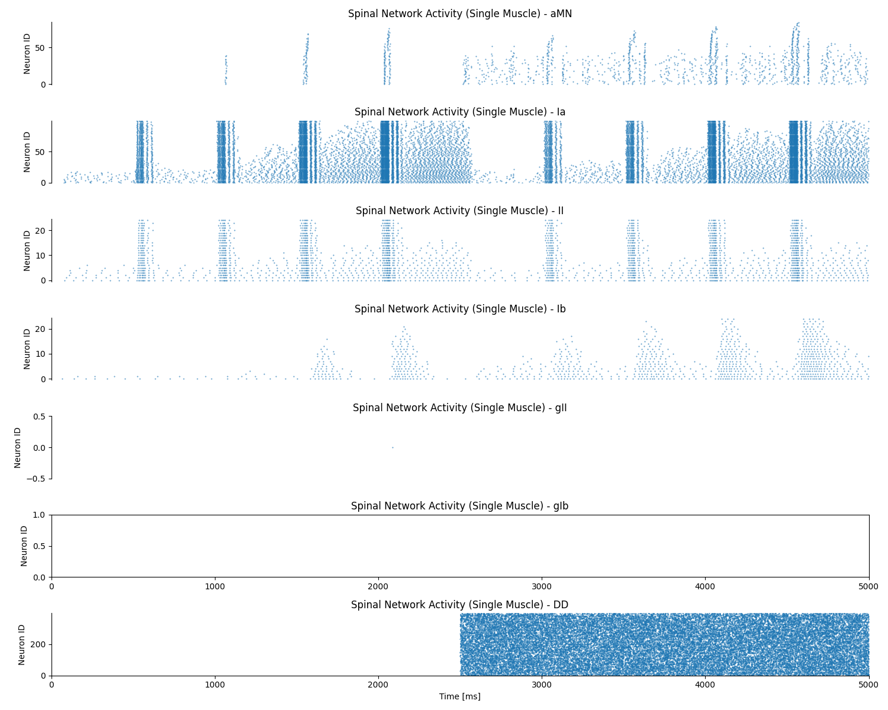
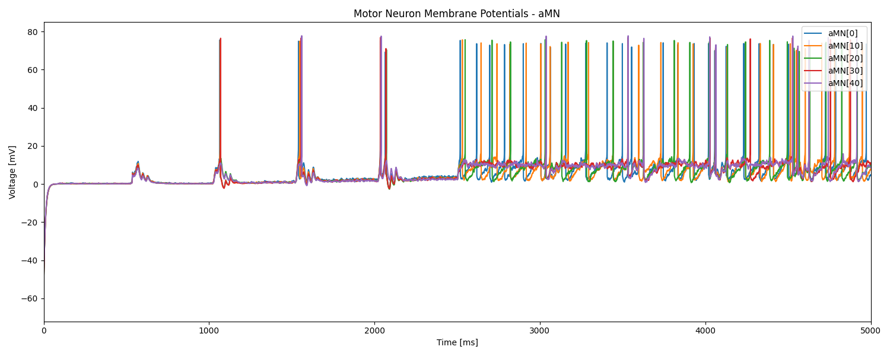
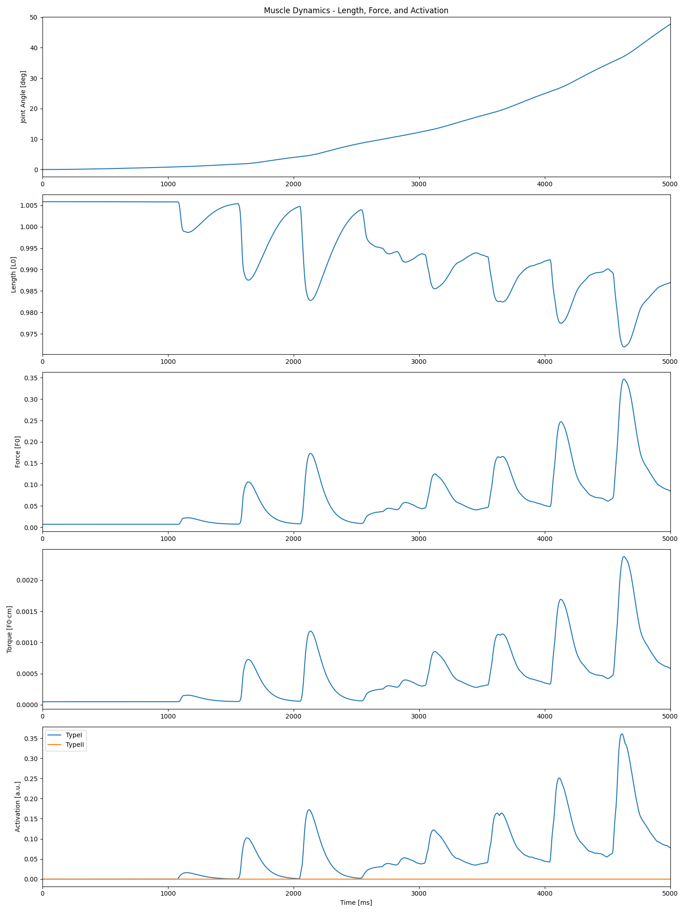
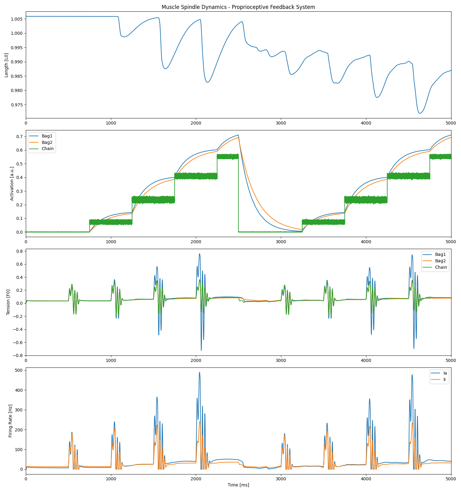
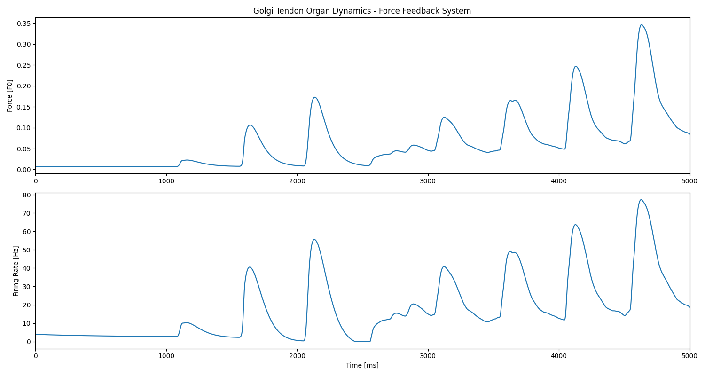

Note
Go to the end to download the full example code.
Spinal Network Simulation with Systematic Tendon Tap Protocol#
This example demonstrates complete spinal reflex network modeling with a comprehensive tendon tap protocol that systematically varies mechanical perturbations, fusimotor drive, and cortical activity. This sophisticated experimental design reveals how the nervous system modulates stretch reflex gain.
Experimental Protocol (5-second, 2-phase design):
Phase 1 (0-2.5s): Reflex Gain Modulation - Triangular tendon taps every 0.5s with increasing amplitude (50%, 60%, 70%, 80%) - Stepwise increasing gamma drive starting at 0.75s (0→25→50→75→100 pps) - No cortical drive (isolated reflex testing)
Phase 2 (2.5-5s): Reflex-Voluntary Interaction - Repeat triangular tap pattern (50%, 60%, 70%, 80%) - Repeat gamma drive pattern (0→25→50→75→100 pps) - Sinusoidal cortical drive (38±1 Hz at 1 Hz) recruiting ~75% of motor neurons
Note
This example builds upon all previous examples and demonstrates how the complete neuromuscular system functions as an integrated network:
Motor neuron pool: α-motoneurons controlling a single muscle (from examples 01-02)
Muscle model: Hill-type muscle model with realistic force generation (from examples 02, 06)
Proprioceptive feedback: Muscle spindles and Golgi tendon organs (from examples)
Spinal interneurons: Group II and Group Ib interneurons for reflex modulation
Joint dynamics: Closed-loop biomechanical control with realistic inertia and damping
Descending drive: Cortical control signals for voluntary movement (from example 01)
Important
Spinal Reflex Networks are the fundamental control circuits that coordinate muscle activity. Key physiological concepts demonstrated:
Stretch reflex: Muscle spindles provide length/velocity feedback for posture control
Force feedback: Golgi tendon organs monitor muscle tension for protective reflexes
Closed-loop control: Joint mechanics influence neural activity through proprioception
Motor control: Integration of descending commands with sensory feedback
Scientific Background#
The spinal cord contains intricate neural circuits that process sensory information and generate appropriate motor responses. This example models several key components:
Muscle Spindles: Specialized sensory organs that detect muscle length and velocity changes, providing Group Ia (velocity-sensitive) and Group II (length-sensitive) afferent signals.
Golgi Tendon Organs: Force-sensitive receptors that monitor muscle tension and provide Group Ib afferent feedback for protective reflexes.
Spinal Interneurons: Group II interneurons process spindle feedback, while Group Ib interneurons handle force feedback, both contributing to reflex modulation.
Joint Dynamics: Realistic biomechanical modeling of joint inertia, damping, and muscle-generated torques creates the closed-loop system where neural activity affects movement, which in turn affects sensory feedback.
Import Libraries#
from pathlib import Path
import joblib
import matplotlib.pyplot as plt
import numpy as np
from neuron import h
from myogen import load_nmodl_mechanisms
from myogen.simulator.neuron.joint_dynamics import JointDynamics
from myogen.simulator.neuron.muscle import HillModel
from myogen.simulator.neuron.network import Network
from myogen.simulator.neuron.populations import (
AffIa__Pool,
AffIb__Pool,
AffII__Pool,
AlphaMN__Pool,
DescendingDrive__Pool,
GIb__Pool,
GII__Pool,
)
from myogen.simulator.neuron.proprioception import (
GolgiTendonOrganModel,
SpindleModel,
)
from myogen.simulator.neuron.simulation_runner import SimulationRunner
from myogen.utils.plotting import (
plot_gto_dynamics,
plot_membrane_potentials,
plot_muscle_dynamics,
plot_raster_spikes,
plot_spindle_dynamics,
)
import quantities as pq
Load NEURON Mechanisms and Dependencies#
Load the compiled NMODL mechanisms required for biophysical neuron modeling and load results from previous examples that serve as inputs to this simulation.
# Load NEURON mechanisms
load_nmodl_mechanisms()
# Setup results directory
save_path = Path(r"./results")
save_path.mkdir(exist_ok=True)
recruitment_thresholds = joblib.load(save_path / "thresholds.pkl")
print("(OK) Loaded recruitment thresholds from example 00")
(OK) Loaded recruitment thresholds from example 00
Define Simulation Parameters#
These parameters control the temporal and spatial resolution of the simulation, as well as the physiological characteristics of the neural populations and mechanical system.
# Temporal parameters - high resolution for accurate neural integration
dt = 0.005 * pq.ms # Integration timestep with units
tstop = 5e3 # ms - Total simulation duration (5s for comprehensive protocol)
time = np.arange(0, tstop, dt.magnitude) # Time vector (use magnitude for numpy)
print("Simulation parameters:")
print(f"\tDuration: {tstop} ms")
print(f"\tTimestep: {dt} ms")
print(f"\tTime samples: {len(time)}")
Simulation parameters:
Duration: 5000.0 ms
Timestep: 0.005 ms ms
Time samples: 1000000
Define Neural Population Sizes#
Population sizes are based on physiological estimates from cat and human studies. These numbers represent typical motor pool compositions for a single muscle.
# Afferent populations (sensory input)
nIa = 100 # Group Ia afferents from muscle spindles (velocity-sensitive)
nII = 25 # Group II afferents from muscle spindles (length-sensitive)
nIb = 25 # Group Ib afferents from Golgi tendon organs (force-sensitive)
# Interneuron populations (spinal processing)
ngII = 25 # Group II interneurons (process spindle feedback)
ngIb = 25 # Group Ib interneurons (process force feedback)
# Motor neurons (output to muscles)
nType1 = 102 # Type I motor neurons (slow, fatigue-resistant)
nType2 = 18 # Type II motor neurons (fast, fatigue-prone)
naMN = nType1 + nType2 # Total α-motoneurons per muscle
# Descending drive (cortical input)
nDD = 400 # Total descending drive neurons
DDorder = 1 # Poisson process order for realistic spike patterns
print("Neural population sizes:")
print(f" - α-Motoneurons: {naMN} ({nType1} Type I, {nType2} Type II)")
print(f" - Ia afferents: {nIa}")
print(f" - II afferents: {nII}")
print(f" - Ib afferents: {nIb}")
print(f" - Interneurons: {ngII + ngIb}")
print(f" - Descending drive: {nDD}")
Neural population sizes:
- α-Motoneurons: 120 (102 Type I, 18 Type II)
- Ia afferents: 100
- II afferents: 25
- Ib afferents: 25
- Interneurons: 50
- Descending drive: 400
Define Descending Drive Pattern#
Two-phase pattern: Phase 1 (0-2500ms): No cortical drive (reflex testing with varying gamma) Phase 2 (2500-5000ms): Sinusoidal cortical drive (reflex modulation during voluntary contraction)
# Phase 1: No cortical drive
# Phase 2: 1 Hz sinusoidal drive with bias to recruit ~75% of MN population
DDdrive = np.zeros_like(time)
cortical_start_time = 2500 # ms
# Parameters for sinusoidal drive
bias_hz = 38 # Bias to recruit ~75% of 120 motor neurons
amplitude_hz = 1 # Oscillation amplitude (±1 Hz around bias)
frequency_hz = 1.0 # 1 Hz oscillation
# Apply sinusoidal drive from 2.5s onwards
mask = time >= cortical_start_time
DDdrive[mask] = bias_hz + amplitude_hz * np.sin(
2 * np.pi * frequency_hz * (time[mask] - cortical_start_time) / 1000.0
)
print("Descending drive pattern:")
print(" - Phase 1 (0-2.5s): No cortical drive")
print(f" - Phase 2 (2.5-5s): Sinusoidal drive ({bias_hz}±{amplitude_hz} Hz at {frequency_hz} Hz)")
Descending drive pattern:
- Phase 1 (0-2.5s): No cortical drive
- Phase 2 (2.5-5s): Sinusoidal drive (38±1 Hz at 1.0 Hz)
Define Fusimotor Drive#
Fusimotor neurons control the sensitivity of muscle spindles by adjusting the tension in intrafusal muscle fibers. Stepwise increasing gamma drive demonstrates how fusimotor activity modulates stretch reflex gain.
Pattern: Increases every 0.5s starting at 0.75s, resets at 2.5s Steps: 0 → 25 → 50 → 75 → 100 pps (then repeat)
# Time points for stepwise gamma drive
# Phase 1: 0→0.75s (wait)→1.25s→1.75s→2.25s (steps every 0.5s)
# Phase 2: 2.5s (reset)→3.25s (wait 0.75s)→3.75s→4.25s→4.75s (steps every 0.5s)
gamma_times = np.array([0, 750, 1250, 1750, 2250, 2500, 3250, 3750, 4250, 4750, 5000])
gamma_values = np.array([0, 25, 50, 75, 100, 0, 25, 50, 75, 100, 100])
# Create stepwise gamma drive arrays using proper step function (not interpolation!)
gDyn = np.zeros_like(time)
gStat = np.zeros_like(time)
# Phase 1: Steps every 0.5s starting at 0.75s
gDyn[(time >= 750) & (time < 1250)] = 25
gDyn[(time >= 1250) & (time < 1750)] = 50
gDyn[(time >= 1750) & (time < 2250)] = 75
gDyn[(time >= 2250) & (time < 2500)] = 100
# Phase 2: Reset and repeat pattern
gDyn[(time >= 3250) & (time < 3750)] = 25
gDyn[(time >= 3750) & (time < 4250)] = 50
gDyn[(time >= 4250) & (time < 4750)] = 75
gDyn[(time >= 4750) & (time <= 5000)] = 100
# Static gamma follows same pattern
gStat = gDyn.copy()
# Add small physiological variability
gDyn = gDyn + np.random.normal(0, 1, len(time))
gStat = gStat + np.random.normal(0, 1, len(time))
# Ensure non-negative
gDyn = np.maximum(gDyn, 0)
gStat = np.maximum(gStat, 0)
# Package fusimotor drives for the simulation
gMN = {
"name": "gMN",
"gDyn": gDyn, # Dynamic fusimotor drive array
"gStat": gStat, # Static fusimotor drive array
}
print("Fusimotor drive parameters:")
print(" - Stepwise increases: 0 → 25 → 50 → 75 → 100 pps")
print(" - Starting at 0.75s, stepping every 0.5s")
print(" - Resets at 2.5s and repeats pattern")
Fusimotor drive parameters:
- Stepwise increases: 0 → 25 → 50 → 75 → 100 pps
- Starting at 0.75s, stepping every 0.5s
- Resets at 2.5s and repeats pattern
Initialize Joint Dynamics#
The joint model provides realistic biomechanical constraints and creates the closed-loop system where muscle forces influence joint motion, which in turn affects proprioceptive feedback.
joint_dynamics = JointDynamics(
inertia__kg_m2=0.001, # Realistic joint inertia
damping__Nm_s_per_rad=0.002, # Light damping for stability
)
# Initialize joint angle array for closed-loop integration
artAng = np.zeros_like(time)
artAng[0] = 0.0 # Initial joint angle
print("Joint dynamics parameters:")
print(f" - Inertia: {joint_dynamics.inertia__kg_m2} kg⋅m²")
print(f" - Damping: {joint_dynamics.damping__Nm_s_per_rad} N⋅m⋅s/rad")
print(f" - Initial angle: {artAng[0]}°")
Joint dynamics parameters:
- Inertia: 0.001 kg⋅m²
- Damping: 0.002 N⋅m⋅s/rad
- Initial angle: 0.0°
Create Neural Populations#
Instantiate all neural population objects with physiologically appropriate parameters. Each population type has specialized properties reflecting their biological counterparts.
# Create motor neuron pool
# Motor neuron pool (default spike_threshold__mV=50.0 for proper spike detection)
aMN = AlphaMN__Pool(recruitment_thresholds__array=recruitment_thresholds) # α-motoneurons
# Create descending drive population
DD = DescendingDrive__Pool(n=nDD, poisson_batch_size=DDorder, timestep__ms=dt)
# Create afferent populations
Ia = AffIa__Pool(n=nIa, timestep__ms=dt) # Primary spindle afferents
II = AffII__Pool(n=nII, timestep__ms=dt) # Lower thresholds for Group II
Ib = AffIb__Pool(n=nIb, timestep__ms=dt) # Golgi tendon organ afferents
# Create interneuron populations for reflex modulation
gII = GII__Pool(n=ngII) # Group II interneurons
gIb = GIb__Pool(n=ngIb) # Group Ib interneurons
print(f"(OK) Created {len([aMN, DD, Ia, II, Ib, gII, gIb])} neural populations")
(OK) Created 7 neural populations
Create Proprioceptive Models#
Initialize the sensory models that convert mechanical variables (muscle length, velocity, force) into neural signals that drive the afferent populations.
# Golgi Tendon Organ - monitors muscle force/tension
gto = GolgiTendonOrganModel(
simulation_time__ms=tstop * pq.ms,
time_step__ms=dt,
gto_parameters=GolgiTendonOrganModel.create_default_gto_parameters(),
)
# Muscle Spindle - monitors muscle length and velocity
spin = SpindleModel(
simulation_time__ms=tstop * pq.ms,
time_step__ms=dt,
spindle_parameters=SpindleModel.create_default_spindle_parameters(),
)
print("(OK) Initialized proprioceptive models (spindle, GTO)")
(OK) Initialized proprioceptive models (spindle, GTO)
Create Muscle Model#
Initialize Hill-type muscle model. This model converts motor neuron activation into realistic force generation with appropriate biomechanical properties.
# Muscle model
hill_muscle = HillModel(
simulation_time__ms=tstop * pq.ms,
time_step__ms=dt,
muscle_parameters=HillModel.create_default_muscle_parameters(),
n_motor_units_type1=nType1,
n_motor_units_type2=nType2,
initial_joint_angle__deg=artAng[0],
muscle_role="flexor",
)
print("(OK) Created muscle model")
print(f" - Motor units: {nType1 + nType2}")
print(f" - Force capacity: ~{hill_muscle.F0:.1f} N")
(OK) Created muscle model
- Motor units: 120
- Force capacity: ~33.8 N
Create Arrays for Real-Unit Forces#
Store musculotendon force in real units [N] for analysis
# Musculotendon force array [N]
musculotendon_force__N = np.zeros_like(time)
print("(OK) Initialized force tracking arrays")
(OK) Initialized force tracking arrays
Define Callback Functions#
These functions handle the integration of different system components during the simulation, including spike events and step-wise updates.
def spkEvent(i, muscle, delay):
muscle.add_spike(i, delay)
def eachStep(
muscle,
spin,
golgi,
popD,
ncD,
gMN,
joint_dyn,
step_counter,
tendon_tap_schedule, # List of (time_ms, magnitude_percent) tuples
tendon_tap_duration=100, # ms
):
"""
Step-wise integration function called at each simulation timestep.
This function orchestrates the complex interactions between:
- Muscle mechanics and force generation
- Proprioceptive feedback from spindles and GTOs
- Joint dynamics and closed-loop control
- Neural population dynamics and spike generation
- Multiple tendon tap perturbations with varying amplitudes
Parameters
----------
muscle : HillModel
Muscle model
spin : SpindleModel
Muscle spindle model
golgi : GolgiTendonOrganModel
Golgi tendon organ model
popD : dict
Dictionary of neural populations
ncD : dict
Dictionary of network connections
gMN : dict
Fusimotor drive parameters
joint_dyn : JointDynamics
Joint biomechanics model
step_counter : iterator
Simulation step counter
tendon_tap_schedule : list of tuples
List of (time_ms, magnitude_percent) defining tap timing and amplitudes
tendon_tap_duration : float
Duration (ms) of each tendon tap stretch
"""
i = next(step_counter)
current_angle = artAng[i]
# MUSCLE MECHANICS: Integrate muscle with current joint angle
L, V, A = muscle.integrate(current_angle)
# TENDON TAP PERTURBATION: Triangular pulse (ramp up, then down)
current_time = h.t
for tap_time, tap_magnitude in tendon_tap_schedule:
tap_end_time = tap_time + tendon_tap_duration
tap_midpoint = tap_time + (tendon_tap_duration / 2.0)
if tap_time <= current_time < tap_end_time:
# Triangular pulse: ramp up to peak at midpoint, then ramp down
max_perturbation = L * (tap_magnitude / 100.0)
if current_time < tap_midpoint:
# Rising edge: 0 → peak (first half)
progress = (current_time - tap_time) / (tendon_tap_duration / 2.0)
length_perturbation = max_perturbation * progress
else:
# Falling edge: peak → 0 (second half)
progress = (tap_end_time - current_time) / (tendon_tap_duration / 2.0)
length_perturbation = max_perturbation * progress
L_perturbed = L + length_perturbation
# Velocity reflects the triangle slope
if current_time < tap_midpoint:
# Rising: positive velocity
V_perturbed = V + (max_perturbation / (tendon_tap_duration / 2000.0))
else:
# Falling: negative velocity
V_perturbed = V - (max_perturbation / (tendon_tap_duration / 2000.0))
# Acceleration spikes at tap onset and reverses at midpoint
if abs(current_time - tap_time) < dt.magnitude:
A_perturbed = A + (max_perturbation / ((tendon_tap_duration / 2000.0) ** 2))
print(
f" >> TENDON TAP (triangular) at t={current_time:.1f} ms: "
f"{tap_magnitude}% peak stretch ({max_perturbation:.4f} L0), "
f"duration={tendon_tap_duration} ms"
)
print(f" Baseline length: {L:.4f} L0 → Peak: {L + max_perturbation:.4f} L0")
elif abs(current_time - tap_midpoint) < dt.magnitude:
A_perturbed = A - 2 * (max_perturbation / ((tendon_tap_duration / 2000.0) ** 2))
else:
A_perturbed = A
# Use perturbed values for spindle feedback
L, V, A = L_perturbed, V_perturbed, A_perturbed
break # Only one tap active at a time
# PROPRIOCEPTIVE FEEDBACK: Use muscle kinematics for spindle feedback
Iay, IIy = spin.integrate(L, V, A, gMN["gDyn"][i], gMN["gStat"][i])
# FORCE FEEDBACK: Muscle force for GTO
f = muscle.F0 * muscle.muscle_force[i] # Musculotendon force [N]
musculotendon_force__N[i] = f # Store in real units
Iby = golgi.integrate(f)
# CLOSED-LOOP DYNAMICS: Update joint angle based on muscle torque
new_angle, _ = joint_dyn.integrate(
torque__Nm=muscle.signed_muscle_torque[i],
dt__s=float(dt.rescale(pq.s).magnitude),
)
# Update joint angle array for next timestep
if i < len(artAng) - 1:
artAng[i + 1] = new_angle
# DESCENDING DRIVE PROCESSING: Convert cortical signals to spikes
for DDcell in popD["DD"]:
if DDcell.integrate(DDdrive[i]):
spike_time = h.t + 1
if spike_time < tstop:
ncD["cmd->DD"][DDcell.pool__ID].event(spike_time)
# AFFERENT PROCESSING: Convert sensory signals to neural spikes
for Ia in popD["Ia"]:
if Iay >= Ia.RT:
if Ia.integrate(Iay):
# Ensure h.t is converted to a quantities object with units of ms
spike_time = h.t + float(Ia.axon_delay__ms)
if spike_time < tstop:
ncD["Spindle->Ia"][Ia.pool__ID].event(spike_time)
ii_spikes = 0
for II in popD["II"]:
if IIy >= II.RT:
if II.integrate(IIy):
spike_time = h.t + float(II.axon_delay__ms)
if spike_time < tstop:
ncD["Spindle->II"][II.pool__ID].event(spike_time)
ii_spikes += 1
ib_spikes = 0
for Ib in popD["Ib"]:
if Iby >= Ib.RT:
if Ib.integrate(Iby):
spike_time = h.t + float(Ib.axon_delay__ms)
if spike_time < tstop:
ncD["GTO->Ib"][Ib.pool__ID].event(spike_time)
ib_spikes += 1
Create Neural Network#
Assemble all neural populations into a connected network that implements the spinal reflex circuitry for single muscle control.
network = Network(
{
"DD": DD, # Descending drive
"aMN": aMN, # α-motoneurons
"Ia": Ia, # Group Ia afferents
"II": II, # Group II afferents
"Ib": Ib, # Group Ib afferents
"gII": gII, # Group II interneurons
"gIb": gIb, # Group Ib interneurons
"gMN": gMN, # Fusimotor parameters
}
)
print(f"(OK) Created network with {len(network.populations)} populations")
(OK) Created network with 8 populations
Configure Neural Connections#
Establish synaptic connections that implement physiologically realistic spinal reflex pathways, including both excitatory and inhibitory connections.
# DESCENDING CONTROL: Direct cortical drive to motor neurons
network.connect("DD", "aMN", probability=0.3, weight__uS=0.05 * pq.uS)
# MONOSYNAPTIC STRETCH REFLEX: Ia afferents excite motor neurons
network.connect("Ia", "aMN", probability=0.3, weight__uS=0.05 * pq.uS)
# POLYSYNAPTIC PATHWAYS: Secondary afferents through interneurons
network.connect("II", "gII", probability=0.6, weight__uS=0.0073 * pq.uS)
network.connect("gII", "aMN", probability=0.2, weight__uS=0.05 * pq.uS)
# INHIBITORY REFLEXES: Force feedback through Ib interneurons
network.connect("Ib", "gIb", probability=0.5, weight__uS=0.0073 * pq.uS)
network.connect("gIb", "aMN", probability=0.1, weight__uS=-0.05 * pq.uS) # Inhibitory
print("(OK) Configured synaptic connections")
print(" - Excitatory: DD→MN, Ia→MN, II→gII, gII→MN")
print(" - Inhibitory: gIb→MN (autogenic inhibition)")
(OK) Configured synaptic connections
- Excitatory: DD→MN, Ia→MN, II→gII, gII→MN
- Inhibitory: gIb→MN (autogenic inhibition)
Connect Motors to Muscle#
Establish the neuromuscular junctions that convert motor neuron spikes into muscle fiber activation.
# Connect motor neurons to muscle (spike threshold automatically uses population default of 50.0 mV)
network.connect_to_muscle(
"aMN", muscle=hill_muscle, activation_callback=spkEvent, weight__uS=1.0 * pq.uS
)
print("(OK) Connected motor neurons to muscle")
(OK) Connected motor neurons to muscle
Configure External Inputs#
Setup external input pathways for sensory feedback and descending commands.
network.connect_from_external("cmd", "DD", weight__uS=1.0 * pq.uS)
network.connect_from_external("spindle", "Ia", weight__uS=1.0 * pq.uS)
network.connect_from_external("spindle", "II", weight__uS=1.0 * pq.uS)
network.connect_from_external("gto", "Ib", weight__uS=1.0 * pq.uS)
# Get NetCons for manual triggering during simulation
ncD = {
"cmd->DD": network.get_netcons("cmd", "DD"),
"Spindle->Ia": network.get_netcons("spindle", "Ia"),
"Spindle->II": network.get_netcons("spindle", "II"),
"GTO->Ib": network.get_netcons("gto", "Ib"),
}
print("(OK) Configured external input pathways")
(OK) Configured external input pathways
Prepare Simulation Models#
# Package all models for the simulation runner
models = {
"hill_muscle": hill_muscle,
"spin": spin,
"gto": gto,
"joint": joint_dynamics,
}
# Tendon tap parameters - multiple taps with increasing amplitudes
# Pattern: Taps every 0.5s with increasing amplitude, reset at 2.5s
# High amplitudes to elicit strong reflex responses
# Phase 1 (0-2.5s): 50%, 60%, 70%, 80%
# Phase 2 (2.5-5s): 50%, 60%, 70%, 80%
TENDON_TAP_DURATION = 100 # ms - duration of each stretch
TENDON_TAP_SCHEDULE = [
# Phase 1: Ascending amplitudes without cortical drive
(500, 50.0), # 0.5s: 50%
(1000, 60.0), # 1.0s: 60%
(1500, 70.0), # 1.5s: 70%
(2000, 80.0), # 2.0s: 80%
# Phase 2: Repeat pattern with cortical drive
(3000, 50.0), # 3.0s: 50%
(3500, 60.0), # 3.5s: 60%
(4000, 70.0), # 4.0s: 70%
(4500, 80.0), # 4.5s: 80%
]
print("\nTendon tap schedule:")
print(f" - Duration per tap: {TENDON_TAP_DURATION} ms")
print(f" - Phase 1 (0-2.5s): {len([t for t, m in TENDON_TAP_SCHEDULE if t < 2500])} taps")
print(f" - Phase 2 (2.5-5s): {len([t for t, m in TENDON_TAP_SCHEDULE if t >= 2500])} taps")
print(f" - Amplitudes: {sorted(set([m for t, m in TENDON_TAP_SCHEDULE]))}%")
# Create step callback function with access to step counter
def step_callback(step_counter):
return eachStep(
muscle=hill_muscle,
spin=spin,
golgi=gto,
popD=network.populations,
ncD=ncD,
gMN=gMN,
joint_dyn=joint_dynamics,
step_counter=step_counter,
tendon_tap_schedule=TENDON_TAP_SCHEDULE,
tendon_tap_duration=TENDON_TAP_DURATION,
)
Tendon tap schedule:
- Duration per tap: 100 ms
- Phase 1 (0-2.5s): 4 taps
- Phase 2 (2.5-5s): 4 taps
- Amplitudes: [50.0, 60.0, 70.0, 80.0]%
Run Spinal Network Simulation#
Execute the complete simulation with all integrated components.
print("\nStarting spinal network simulation...")
print(f"\tDuration: {tstop} ms")
print(f"\tTimestep: {dt} ms")
print(f"\tPopulations: {len(network.populations)}")
runner = SimulationRunner(
network=network,
models=models,
step_callback=step_callback,
)
# Motor neuron spike recording thresholds are now fixed in the Network class
results = runner.run(
duration__ms=tstop * pq.ms,
timestep__ms=dt,
membrane_recording={
"aMN": [0, 5, 10, 15, 20, 30, 40, 50, 60, 70],
},
)
print("Simulation completed successfully!")
# Save simulation results
joblib.dump(results, save_path / "spinal_network_results.pkl")
joblib.dump(artAng, save_path / "joint_angles.pkl")
joblib.dump(musculotendon_force__N, save_path / "musculotendon_force__N.pkl")
# Save drive signals for analysis and plotting
drive_signals = {
"time": time,
"descending_drive": DDdrive,
"gamma_dynamic": gDyn,
"gamma_static": gStat,
"tendon_tap_schedule": TENDON_TAP_SCHEDULE,
"tendon_tap_duration": TENDON_TAP_DURATION,
}
joblib.dump(drive_signals, save_path / "drive_signals.pkl")
# Save event timeline for plot annotations
events = {
# Tendon tap events: (time_ms, amplitude_%, duration_ms)
"tendon_taps": [(t, m, TENDON_TAP_DURATION) for t, m in TENDON_TAP_SCHEDULE],
# Gamma drive transitions: (time_ms, level_pps)
"gamma_transitions": list(zip(gamma_times, gamma_values)),
# Gamma drive periods: (start_time_ms, end_time_ms, level_pps)
"gamma_periods": [
(gamma_times[i], gamma_times[i + 1], gamma_values[i])
for i in range(len(gamma_times) - 1)
],
# Phase markers
"phase_boundary": 2500, # ms - transition from phase 1 to phase 2
"cortical_drive_onset": cortical_start_time, # ms - when sinusoidal drive starts
# Experimental phases with descriptions
"phases": [
{"start": 0, "end": 2500, "name": "Phase 1", "description": "Reflex gain modulation"},
{"start": 2500, "end": 5000, "name": "Phase 2", "description": "Reflex-voluntary interaction"},
],
}
joblib.dump(events, save_path / "event_timeline.pkl")
print(f"Results saved to {save_path}")
print(" - spinal_network_results.pkl (neural activity, muscle, spindle, GTO)")
print(" - joint_angles.pkl (joint kinematics)")
print(" - musculotendon_force__N.pkl (real-unit musculotendon force [N])")
print(" - drive_signals.pkl (cortical drive, gamma drive, tap schedule)")
print(" - event_timeline.pkl (event markers for plot annotations)")
print("\nNote: Intrafusal fiber tensions [FU] are in spinal_network_results.pkl")
print(f" Access via: results.segments[0].analogsignals (look for 'intrafusal_tensions')")
print(f" Convert to real units: T[N] ≈ T[FU] × scaling_factor (no standard conversion)")
print(f" Musculotendon force capacity: {hill_muscle.F0:.1f} N")
Starting spinal network simulation...
Duration: 5000.0 ms
Timestep: 0.005 ms ms
Populations: 8
Simulation Progress: 0%| | 0/5000.0 [00:00<?, ?ms/s]
Simulation Progress: 0%| | 0.889999999999992/5000.0 [00:00<09:21, 8.90ms/s]
Simulation Progress: 0%| | 1.829999999999972/5000.0 [00:00<09:04, 9.18ms/s]
Simulation Progress: 0%| | 2.779999999999952/5000.0 [00:00<08:56, 9.31ms/s]
Simulation Progress: 0%| | 3.7249999999999317/5000.0 [00:00<08:54, 9.35ms/s]
Simulation Progress: 0%| | 4.67000000000003/5000.0 [00:00<08:52, 9.37ms/s]
Simulation Progress: 0%| | 5.615000000000178/5000.0 [00:00<08:52, 9.39ms/s]
Simulation Progress: 0%| | 6.560000000000326/5000.0 [00:00<08:51, 9.40ms/s]
Simulation Progress: 0%| | 7.5000000000004725/5000.0 [00:00<08:52, 9.38ms/s]
Simulation Progress: 0%| | 8.440000000000463/5000.0 [00:00<08:52, 9.37ms/s]
Simulation Progress: 0%| | 9.380000000000276/5000.0 [00:01<08:53, 9.36ms/s]
Simulation Progress: 0%| | 10.320000000000089/5000.0 [00:01<08:54, 9.34ms/s]
Simulation Progress: 0%| | 11.254999999999903/5000.0 [00:01<08:55, 9.31ms/s]
Simulation Progress: 0%| | 12.189999999999717/5000.0 [00:01<08:57, 9.28ms/s]
Simulation Progress: 0%| | 13.119999999999532/5000.0 [00:01<08:58, 9.26ms/s]
Simulation Progress: 0%| | 14.049999999999347/5000.0 [00:01<08:59, 9.24ms/s]
Simulation Progress: 0%| | 14.974999999999163/5000.0 [00:01<08:59, 9.23ms/s]
Simulation Progress: 0%| | 15.899999999998979/5000.0 [00:01<08:59, 9.23ms/s]
Simulation Progress: 0%| | 16.82499999999938/5000.0 [00:01<09:00, 9.22ms/s]
Simulation Progress: 0%| | 17.749999999999854/5000.0 [00:01<09:00, 9.22ms/s]
Simulation Progress: 0%| | 18.675000000000328/5000.0 [00:02<09:01, 9.21ms/s]
Simulation Progress: 0%| | 19.6000000000008/5000.0 [00:02<09:00, 9.21ms/s]
Simulation Progress: 0%| | 20.525000000001274/5000.0 [00:02<09:00, 9.22ms/s]
Simulation Progress: 0%| | 21.45500000000175/5000.0 [00:02<08:59, 9.23ms/s]
Simulation Progress: 0%| | 22.385000000002226/5000.0 [00:02<08:58, 9.24ms/s]
Simulation Progress: 0%| | 23.3150000000027/5000.0 [00:02<08:58, 9.24ms/s]
Simulation Progress: 0%| | 24.240000000003175/5000.0 [00:02<08:58, 9.24ms/s]
Simulation Progress: 1%| | 25.165000000003648/5000.0 [00:02<08:58, 9.24ms/s]
Simulation Progress: 1%| | 26.09000000000412/5000.0 [00:02<08:59, 9.21ms/s]
Simulation Progress: 1%| | 27.020000000004597/5000.0 [00:02<08:58, 9.23ms/s]
Simulation Progress: 1%| | 27.950000000005073/5000.0 [00:03<08:57, 9.24ms/s]
Simulation Progress: 1%| | 28.88000000000555/5000.0 [00:03<08:57, 9.25ms/s]
Simulation Progress: 1%| | 29.810000000006024/5000.0 [00:03<08:56, 9.26ms/s]
Simulation Progress: 1%| | 30.7400000000065/5000.0 [00:03<08:56, 9.26ms/s]
Simulation Progress: 1%| | 31.67500000000698/5000.0 [00:03<08:55, 9.28ms/s]
Simulation Progress: 1%| | 32.60500000000659/5000.0 [00:03<08:55, 9.28ms/s]
Simulation Progress: 1%| | 33.535000000005745/5000.0 [00:03<08:55, 9.28ms/s]
Simulation Progress: 1%| | 34.470000000004895/5000.0 [00:03<08:54, 9.29ms/s]
Simulation Progress: 1%| | 35.40000000000405/5000.0 [00:03<08:54, 9.28ms/s]
Simulation Progress: 1%| | 36.3300000000032/5000.0 [00:03<08:54, 9.28ms/s]
Simulation Progress: 1%| | 37.26000000000236/5000.0 [00:04<08:55, 9.27ms/s]
Simulation Progress: 1%| | 38.19000000000151/5000.0 [00:04<08:54, 9.27ms/s]
Simulation Progress: 1%| | 39.12500000000066/5000.0 [00:04<08:54, 9.29ms/s]
Simulation Progress: 1%| | 40.054999999999815/5000.0 [00:04<08:54, 9.27ms/s]
Simulation Progress: 1%| | 40.98499999999897/5000.0 [00:04<08:54, 9.27ms/s]
Simulation Progress: 1%| | 41.91499999999812/5000.0 [00:04<08:54, 9.27ms/s]
Simulation Progress: 1%| | 42.84499999999728/5000.0 [00:04<08:54, 9.28ms/s]
Simulation Progress: 1%| | 43.77999999999643/5000.0 [00:04<08:53, 9.29ms/s]
Simulation Progress: 1%| | 44.70999999999558/5000.0 [00:04<08:54, 9.27ms/s]
Simulation Progress: 1%| | 45.639999999994735/5000.0 [00:04<08:54, 9.26ms/s]
Simulation Progress: 1%| | 46.56999999999389/5000.0 [00:05<08:54, 9.26ms/s]
Simulation Progress: 1%| | 47.499999999993044/5000.0 [00:05<08:54, 9.26ms/s]
Simulation Progress: 1%| | 48.4299999999922/5000.0 [00:05<08:54, 9.26ms/s]
Simulation Progress: 1%| | 49.35999999999135/5000.0 [00:05<08:55, 9.24ms/s]
Simulation Progress: 1%| | 50.28499999999051/5000.0 [00:05<08:56, 9.23ms/s]
Simulation Progress: 1%| | 51.214999999989665/5000.0 [00:05<08:55, 9.24ms/s]
Simulation Progress: 1%| | 52.139999999988824/5000.0 [00:05<08:56, 9.23ms/s]
Simulation Progress: 1%| | 53.07499999998797/5000.0 [00:05<08:54, 9.26ms/s]
Simulation Progress: 1%| | 54.00499999998713/5000.0 [00:05<08:54, 9.25ms/s]
Simulation Progress: 1%| | 54.93499999998628/5000.0 [00:05<08:53, 9.26ms/s]
Simulation Progress: 1%| | 55.86999999998543/5000.0 [00:06<08:52, 9.28ms/s]
Simulation Progress: 1%| | 56.799999999984585/5000.0 [00:06<08:52, 9.29ms/s]
Simulation Progress: 1%| | 57.72999999998374/5000.0 [00:06<08:52, 9.28ms/s]
Simulation Progress: 1%| | 58.659999999982894/5000.0 [00:06<08:52, 9.28ms/s]
Simulation Progress: 1%| | 59.59499999998204/5000.0 [00:06<08:51, 9.29ms/s]
Simulation Progress: 1%| | 60.5249999999812/5000.0 [00:06<08:51, 9.29ms/s]
Simulation Progress: 1%| | 61.45999999998035/5000.0 [00:06<08:51, 9.30ms/s]
Simulation Progress: 1%| | 62.3949999999795/5000.0 [00:06<08:50, 9.30ms/s]
Simulation Progress: 1%|▏ | 63.32999999997865/5000.0 [00:06<08:51, 9.29ms/s]
Simulation Progress: 1%|▏ | 64.2649999999778/5000.0 [00:06<08:50, 9.30ms/s]
Simulation Progress: 1%|▏ | 65.19999999997695/5000.0 [00:07<08:49, 9.31ms/s]
Simulation Progress: 1%|▏ | 66.1349999999761/5000.0 [00:07<08:49, 9.32ms/s]
Simulation Progress: 1%|▏ | 67.06999999997525/5000.0 [00:07<08:48, 9.33ms/s]
Simulation Progress: 1%|▏ | 68.0049999999744/5000.0 [00:07<08:49, 9.32ms/s]
Simulation Progress: 1%|▏ | 68.93999999997355/5000.0 [00:07<08:48, 9.32ms/s]
Simulation Progress: 1%|▏ | 69.8749999999727/5000.0 [00:07<08:49, 9.31ms/s]
Simulation Progress: 1%|▏ | 70.80999999997185/5000.0 [00:07<08:49, 9.31ms/s]
Simulation Progress: 1%|▏ | 71.749999999971/5000.0 [00:07<08:48, 9.33ms/s]
Simulation Progress: 1%|▏ | 72.68499999997015/5000.0 [00:07<08:48, 9.32ms/s]
Simulation Progress: 1%|▏ | 73.6199999999693/5000.0 [00:07<08:48, 9.32ms/s]
Simulation Progress: 1%|▏ | 74.55499999996844/5000.0 [00:08<08:50, 9.29ms/s]
Simulation Progress: 2%|▏ | 75.4899999999676/5000.0 [00:08<08:49, 9.31ms/s]
Simulation Progress: 2%|▏ | 76.42499999996674/5000.0 [00:08<08:48, 9.31ms/s]
Simulation Progress: 2%|▏ | 77.36499999996589/5000.0 [00:08<08:47, 9.33ms/s]
Simulation Progress: 2%|▏ | 78.30499999996503/5000.0 [00:08<08:46, 9.34ms/s]
Simulation Progress: 2%|▏ | 79.23999999996418/5000.0 [00:08<08:47, 9.34ms/s]
Simulation Progress: 2%|▏ | 80.17499999996333/5000.0 [00:08<08:47, 9.33ms/s]
Simulation Progress: 2%|▏ | 81.11499999996248/5000.0 [00:08<08:46, 9.34ms/s]
Simulation Progress: 2%|▏ | 82.04999999996163/5000.0 [00:08<08:48, 9.31ms/s]
Simulation Progress: 2%|▏ | 82.98999999996077/5000.0 [00:08<08:47, 9.32ms/s]
Simulation Progress: 2%|▏ | 83.92499999995992/5000.0 [00:09<08:47, 9.32ms/s]
Simulation Progress: 2%|▏ | 84.85999999995907/5000.0 [00:09<08:47, 9.33ms/s]
Simulation Progress: 2%|▏ | 85.79499999995822/5000.0 [00:09<08:48, 9.30ms/s]
Simulation Progress: 2%|▏ | 86.72999999995737/5000.0 [00:09<08:47, 9.31ms/s]
Simulation Progress: 2%|▏ | 87.66499999995652/5000.0 [00:09<08:48, 9.30ms/s]
Simulation Progress: 2%|▏ | 88.59999999995567/5000.0 [00:09<08:47, 9.31ms/s]
Simulation Progress: 2%|▏ | 89.53499999995482/5000.0 [00:09<08:46, 9.32ms/s]
Simulation Progress: 2%|▏ | 90.46999999995397/5000.0 [00:09<08:46, 9.32ms/s]
Simulation Progress: 2%|▏ | 91.40499999995312/5000.0 [00:09<08:49, 9.27ms/s]
Simulation Progress: 2%|▏ | 92.33499999995227/5000.0 [00:09<08:48, 9.28ms/s]
Simulation Progress: 2%|▏ | 93.26999999995142/5000.0 [00:10<08:48, 9.29ms/s]
Simulation Progress: 2%|▏ | 94.20999999995057/5000.0 [00:10<08:47, 9.31ms/s]
Simulation Progress: 2%|▏ | 95.14499999994972/5000.0 [00:10<08:47, 9.29ms/s]
Simulation Progress: 2%|▏ | 96.07499999994887/5000.0 [00:10<08:47, 9.29ms/s]
Simulation Progress: 2%|▏ | 97.00999999994802/5000.0 [00:10<08:47, 9.29ms/s]
Simulation Progress: 2%|▏ | 97.93999999994718/5000.0 [00:10<08:47, 9.30ms/s]
Simulation Progress: 2%|▏ | 98.87499999994633/5000.0 [00:10<08:47, 9.30ms/s]
Simulation Progress: 2%|▏ | 99.80499999994548/5000.0 [00:10<08:47, 9.30ms/s]
Simulation Progress: 2%|▏ | 100.73499999994463/5000.0 [00:10<08:47, 9.29ms/s]
Simulation Progress: 2%|▏ | 101.66499999994379/5000.0 [00:10<08:47, 9.29ms/s]
Simulation Progress: 2%|▏ | 102.59999999994294/5000.0 [00:11<08:46, 9.30ms/s]
Simulation Progress: 2%|▏ | 103.53499999994209/5000.0 [00:11<08:46, 9.31ms/s]
Simulation Progress: 2%|▏ | 104.46999999994124/5000.0 [00:11<08:46, 9.30ms/s]
Simulation Progress: 2%|▏ | 105.40499999994039/5000.0 [00:11<08:46, 9.30ms/s]
Simulation Progress: 2%|▏ | 106.33499999993954/5000.0 [00:11<08:47, 9.28ms/s]
Simulation Progress: 2%|▏ | 107.2649999999387/5000.0 [00:11<08:47, 9.27ms/s]
Simulation Progress: 2%|▏ | 108.19499999993785/5000.0 [00:11<08:47, 9.27ms/s]
Simulation Progress: 2%|▏ | 109.129999999937/5000.0 [00:11<08:46, 9.28ms/s]
Simulation Progress: 2%|▏ | 110.05999999993615/5000.0 [00:11<08:47, 9.26ms/s]
Simulation Progress: 2%|▏ | 110.9899999999353/5000.0 [00:11<08:47, 9.26ms/s]
Simulation Progress: 2%|▏ | 111.91999999993446/5000.0 [00:12<08:50, 9.21ms/s]
Simulation Progress: 2%|▏ | 112.84499999993362/5000.0 [00:12<08:50, 9.22ms/s]
Simulation Progress: 2%|▏ | 113.77499999993277/5000.0 [00:12<08:48, 9.24ms/s]
Simulation Progress: 2%|▏ | 114.71499999993192/5000.0 [00:12<08:46, 9.28ms/s]
Simulation Progress: 2%|▏ | 115.64499999993107/5000.0 [00:12<08:46, 9.28ms/s]
Simulation Progress: 2%|▏ | 116.57499999993023/5000.0 [00:12<08:48, 9.24ms/s]
Simulation Progress: 2%|▏ | 117.50999999992938/5000.0 [00:12<08:47, 9.26ms/s]
Simulation Progress: 2%|▏ | 118.44499999992853/5000.0 [00:12<08:46, 9.28ms/s]
Simulation Progress: 2%|▏ | 119.37999999992768/5000.0 [00:12<08:45, 9.29ms/s]
Simulation Progress: 2%|▏ | 120.31499999992683/5000.0 [00:12<08:44, 9.30ms/s]
Simulation Progress: 2%|▏ | 121.24999999992598/5000.0 [00:13<08:44, 9.31ms/s]
Simulation Progress: 2%|▏ | 122.18999999992512/5000.0 [00:13<08:42, 9.33ms/s]
Simulation Progress: 2%|▏ | 123.12499999992427/5000.0 [00:13<08:50, 9.20ms/s]
Simulation Progress: 2%|▏ | 124.05999999992342/5000.0 [00:13<08:47, 9.24ms/s]
Simulation Progress: 2%|▏ | 124.98999999992257/5000.0 [00:13<08:46, 9.26ms/s]
Simulation Progress: 3%|▎ | 125.92499999992172/5000.0 [00:13<08:45, 9.28ms/s]
Simulation Progress: 3%|▎ | 126.85999999992087/5000.0 [00:13<08:44, 9.30ms/s]
Simulation Progress: 3%|▎ | 127.79499999992002/5000.0 [00:13<08:43, 9.31ms/s]
Simulation Progress: 3%|▎ | 128.7299999999192/5000.0 [00:13<08:44, 9.29ms/s]
Simulation Progress: 3%|▎ | 129.66499999991834/5000.0 [00:13<08:43, 9.31ms/s]
Simulation Progress: 3%|▎ | 130.5999999999175/5000.0 [00:14<08:42, 9.32ms/s]
Simulation Progress: 3%|▎ | 131.53999999991663/5000.0 [00:14<08:41, 9.33ms/s]
Simulation Progress: 3%|▎ | 132.47499999991578/5000.0 [00:14<08:41, 9.33ms/s]
Simulation Progress: 3%|▎ | 133.40999999991493/5000.0 [00:14<08:44, 9.29ms/s]
Simulation Progress: 3%|▎ | 134.34499999991408/5000.0 [00:14<08:43, 9.29ms/s]
Simulation Progress: 3%|▎ | 135.27999999991323/5000.0 [00:14<08:43, 9.30ms/s]
Simulation Progress: 3%|▎ | 136.21499999991238/5000.0 [00:14<08:42, 9.30ms/s]
Simulation Progress: 3%|▎ | 137.15499999991152/5000.0 [00:14<08:41, 9.32ms/s]
Simulation Progress: 3%|▎ | 138.08999999991067/5000.0 [00:14<08:43, 9.28ms/s]
Simulation Progress: 3%|▎ | 139.02499999990982/5000.0 [00:14<08:43, 9.29ms/s]
Simulation Progress: 3%|▎ | 139.95999999990897/5000.0 [00:15<08:42, 9.31ms/s]
Simulation Progress: 3%|▎ | 140.89499999990812/5000.0 [00:15<08:41, 9.31ms/s]
Simulation Progress: 3%|▎ | 141.83499999990727/5000.0 [00:15<08:40, 9.32ms/s]
Simulation Progress: 3%|▎ | 142.76999999990642/5000.0 [00:15<08:41, 9.32ms/s]
Simulation Progress: 3%|▎ | 143.70499999990557/5000.0 [00:15<08:40, 9.32ms/s]
Simulation Progress: 3%|▎ | 144.6449999999047/5000.0 [00:15<08:40, 9.33ms/s]
Simulation Progress: 3%|▎ | 145.57999999990386/5000.0 [00:15<08:39, 9.34ms/s]
Simulation Progress: 3%|▎ | 146.514999999903/5000.0 [00:15<08:39, 9.34ms/s]
Simulation Progress: 3%|▎ | 147.44999999990216/5000.0 [00:15<08:46, 9.22ms/s]
Simulation Progress: 3%|▎ | 148.37999999990132/5000.0 [00:15<08:45, 9.23ms/s]
Simulation Progress: 3%|▎ | 149.30499999990047/5000.0 [00:16<08:45, 9.23ms/s]
Simulation Progress: 3%|▎ | 150.22999999989963/5000.0 [00:16<08:45, 9.23ms/s]
Simulation Progress: 3%|▎ | 151.1549999998988/5000.0 [00:16<08:45, 9.22ms/s]
Simulation Progress: 3%|▎ | 152.07999999989795/5000.0 [00:16<08:46, 9.21ms/s]
Simulation Progress: 3%|▎ | 153.0049999998971/5000.0 [00:16<08:46, 9.20ms/s]
Simulation Progress: 3%|▎ | 153.92499999989627/5000.0 [00:16<08:47, 9.19ms/s]
Simulation Progress: 3%|▎ | 154.84499999989544/5000.0 [00:16<08:47, 9.19ms/s]
Simulation Progress: 3%|▎ | 155.7699999998946/5000.0 [00:16<08:46, 9.20ms/s]
Simulation Progress: 3%|▎ | 156.69499999989375/5000.0 [00:16<08:47, 9.18ms/s]
Simulation Progress: 3%|▎ | 157.6199999998929/5000.0 [00:16<08:46, 9.19ms/s]
Simulation Progress: 3%|▎ | 158.54499999989207/5000.0 [00:17<08:45, 9.21ms/s]
Simulation Progress: 3%|▎ | 159.46999999989123/5000.0 [00:17<08:45, 9.21ms/s]
Simulation Progress: 3%|▎ | 160.3949999998904/5000.0 [00:17<08:46, 9.20ms/s]
Simulation Progress: 3%|▎ | 161.31999999988955/5000.0 [00:17<08:46, 9.20ms/s]
Simulation Progress: 3%|▎ | 162.2449999998887/5000.0 [00:17<08:45, 9.20ms/s]
Simulation Progress: 3%|▎ | 163.16999999988786/5000.0 [00:17<08:45, 9.20ms/s]
Simulation Progress: 3%|▎ | 164.09499999988702/5000.0 [00:17<08:45, 9.21ms/s]
Simulation Progress: 3%|▎ | 165.02499999988618/5000.0 [00:17<08:44, 9.22ms/s]
Simulation Progress: 3%|▎ | 165.94999999988534/5000.0 [00:17<08:45, 9.20ms/s]
Simulation Progress: 3%|▎ | 166.8749999998845/5000.0 [00:17<08:46, 9.18ms/s]
Simulation Progress: 3%|▎ | 167.79999999988365/5000.0 [00:18<08:45, 9.19ms/s]
Simulation Progress: 3%|▎ | 168.7249999998828/5000.0 [00:18<08:45, 9.20ms/s]
Simulation Progress: 3%|▎ | 169.64999999988197/5000.0 [00:18<08:44, 9.21ms/s]
Simulation Progress: 3%|▎ | 170.57499999988113/5000.0 [00:18<08:44, 9.21ms/s]
Simulation Progress: 3%|▎ | 171.4999999998803/5000.0 [00:18<08:44, 9.20ms/s]
Simulation Progress: 3%|▎ | 172.42499999987945/5000.0 [00:18<08:44, 9.21ms/s]
Simulation Progress: 3%|▎ | 173.3549999998786/5000.0 [00:18<08:43, 9.22ms/s]
Simulation Progress: 3%|▎ | 174.27999999987776/5000.0 [00:18<08:43, 9.22ms/s]
Simulation Progress: 4%|▎ | 175.20499999987692/5000.0 [00:18<08:44, 9.19ms/s]
Simulation Progress: 4%|▎ | 176.12499999987608/5000.0 [00:18<08:44, 9.19ms/s]
Simulation Progress: 4%|▎ | 177.04499999987524/5000.0 [00:19<08:45, 9.18ms/s]
Simulation Progress: 4%|▎ | 177.9699999998744/5000.0 [00:19<08:44, 9.19ms/s]
Simulation Progress: 4%|▎ | 178.89499999987356/5000.0 [00:19<08:43, 9.20ms/s]
Simulation Progress: 4%|▎ | 179.81999999987272/5000.0 [00:19<08:43, 9.20ms/s]
Simulation Progress: 4%|▎ | 180.74499999987188/5000.0 [00:19<08:43, 9.21ms/s]
Simulation Progress: 4%|▎ | 181.66999999987104/5000.0 [00:19<08:43, 9.21ms/s]
Simulation Progress: 4%|▎ | 182.5949999998702/5000.0 [00:19<08:42, 9.22ms/s]
Simulation Progress: 4%|▎ | 183.51999999986936/5000.0 [00:19<08:42, 9.21ms/s]
Simulation Progress: 4%|▎ | 184.44499999986851/5000.0 [00:19<08:44, 9.19ms/s]
Simulation Progress: 4%|▎ | 185.36999999986767/5000.0 [00:20<08:43, 9.20ms/s]
Simulation Progress: 4%|▎ | 186.29499999986683/5000.0 [00:20<08:43, 9.20ms/s]
Simulation Progress: 4%|▎ | 187.219999999866/5000.0 [00:20<08:42, 9.21ms/s]
Simulation Progress: 4%|▍ | 188.14499999986515/5000.0 [00:20<08:42, 9.21ms/s]
Simulation Progress: 4%|▍ | 189.0699999998643/5000.0 [00:20<08:42, 9.20ms/s]
Simulation Progress: 4%|▍ | 189.99499999986347/5000.0 [00:20<08:43, 9.18ms/s]
Simulation Progress: 4%|▍ | 190.91499999986263/5000.0 [00:20<08:44, 9.17ms/s]
Simulation Progress: 4%|▍ | 191.8399999998618/5000.0 [00:20<08:43, 9.18ms/s]
Simulation Progress: 4%|▍ | 192.76499999986095/5000.0 [00:20<08:43, 9.19ms/s]
Simulation Progress: 4%|▍ | 193.6849999998601/5000.0 [00:20<08:44, 9.17ms/s]
Simulation Progress: 4%|▍ | 194.60499999985927/5000.0 [00:21<08:43, 9.18ms/s]
Simulation Progress: 4%|▍ | 195.52999999985843/5000.0 [00:21<08:42, 9.19ms/s]
Simulation Progress: 4%|▍ | 196.4499999998576/5000.0 [00:21<08:42, 9.19ms/s]
Simulation Progress: 4%|▍ | 197.36999999985676/5000.0 [00:21<08:42, 9.19ms/s]
Simulation Progress: 4%|▍ | 198.29499999985592/5000.0 [00:21<08:41, 9.20ms/s]
Simulation Progress: 4%|▍ | 199.21999999985508/5000.0 [00:21<08:42, 9.20ms/s]
Simulation Progress: 4%|▍ | 200.13999999985424/5000.0 [00:21<08:42, 9.19ms/s]
Simulation Progress: 4%|▍ | 201.0649999998534/5000.0 [00:21<08:41, 9.20ms/s]
Simulation Progress: 4%|▍ | 201.98999999985256/5000.0 [00:21<08:41, 9.20ms/s]
Simulation Progress: 4%|▍ | 202.91499999985172/5000.0 [00:21<08:41, 9.20ms/s]
Simulation Progress: 4%|▍ | 203.83999999985087/5000.0 [00:22<08:41, 9.20ms/s]
Simulation Progress: 4%|▍ | 204.76499999985003/5000.0 [00:22<08:41, 9.20ms/s]
Simulation Progress: 4%|▍ | 205.6899999998492/5000.0 [00:22<08:41, 9.20ms/s]
Simulation Progress: 4%|▍ | 206.61499999984835/5000.0 [00:22<08:41, 9.19ms/s]
Simulation Progress: 4%|▍ | 207.5399999998475/5000.0 [00:22<08:40, 9.20ms/s]
Simulation Progress: 4%|▍ | 208.46499999984667/5000.0 [00:22<08:41, 9.19ms/s]
Simulation Progress: 4%|▍ | 209.38499999984583/5000.0 [00:22<08:42, 9.17ms/s]
Simulation Progress: 4%|▍ | 210.309999999845/5000.0 [00:22<08:40, 9.19ms/s]
Simulation Progress: 4%|▍ | 211.23499999984415/5000.0 [00:22<08:40, 9.20ms/s]
Simulation Progress: 4%|▍ | 212.1549999998433/5000.0 [00:22<08:41, 9.19ms/s]
Simulation Progress: 4%|▍ | 213.07499999984248/5000.0 [00:23<08:41, 9.18ms/s]
Simulation Progress: 4%|▍ | 213.99999999984163/5000.0 [00:23<08:41, 9.18ms/s]
Simulation Progress: 4%|▍ | 214.9249999998408/5000.0 [00:23<08:40, 9.19ms/s]
Simulation Progress: 4%|▍ | 215.84499999983996/5000.0 [00:23<08:40, 9.18ms/s]
Simulation Progress: 4%|▍ | 216.76499999983912/5000.0 [00:23<08:41, 9.18ms/s]
Simulation Progress: 4%|▍ | 217.68499999983828/5000.0 [00:23<08:42, 9.16ms/s]
Simulation Progress: 4%|▍ | 218.60499999983745/5000.0 [00:23<08:42, 9.16ms/s]
Simulation Progress: 4%|▍ | 219.5249999998366/5000.0 [00:23<08:41, 9.17ms/s]
Simulation Progress: 4%|▍ | 220.44999999983577/5000.0 [00:23<08:40, 9.18ms/s]
Simulation Progress: 4%|▍ | 221.36999999983493/5000.0 [00:23<08:41, 9.17ms/s]
Simulation Progress: 4%|▍ | 222.2899999998341/5000.0 [00:24<08:41, 9.16ms/s]
Simulation Progress: 4%|▍ | 223.20999999983326/5000.0 [00:24<08:41, 9.15ms/s]
Simulation Progress: 4%|▍ | 224.12999999983242/5000.0 [00:24<08:41, 9.15ms/s]
Simulation Progress: 5%|▍ | 225.04999999983158/5000.0 [00:24<08:41, 9.15ms/s]
Simulation Progress: 5%|▍ | 225.96999999983075/5000.0 [00:24<08:40, 9.16ms/s]
Simulation Progress: 5%|▍ | 226.8949999998299/5000.0 [00:24<08:40, 9.18ms/s]
Simulation Progress: 5%|▍ | 227.81499999982907/5000.0 [00:24<08:40, 9.17ms/s]
Simulation Progress: 5%|▍ | 228.73999999982823/5000.0 [00:24<08:39, 9.19ms/s]
Simulation Progress: 5%|▍ | 229.6649999998274/5000.0 [00:24<08:38, 9.20ms/s]
Simulation Progress: 5%|▍ | 230.58999999982655/5000.0 [00:24<08:38, 9.20ms/s]
Simulation Progress: 5%|▍ | 231.5149999998257/5000.0 [00:25<08:38, 9.20ms/s]
Simulation Progress: 5%|▍ | 232.43999999982486/5000.0 [00:25<08:37, 9.21ms/s]
Simulation Progress: 5%|▍ | 233.36499999982402/5000.0 [00:25<08:38, 9.20ms/s]
Simulation Progress: 5%|▍ | 234.28999999982318/5000.0 [00:25<08:38, 9.20ms/s]
Simulation Progress: 5%|▍ | 235.20999999982234/5000.0 [00:25<08:38, 9.19ms/s]
Simulation Progress: 5%|▍ | 236.1299999998215/5000.0 [00:25<08:39, 9.18ms/s]
Simulation Progress: 5%|▍ | 237.05499999982067/5000.0 [00:25<08:38, 9.18ms/s]
Simulation Progress: 5%|▍ | 237.97499999981983/5000.0 [00:25<08:38, 9.19ms/s]
Simulation Progress: 5%|▍ | 238.899999999819/5000.0 [00:25<08:37, 9.19ms/s]
Simulation Progress: 5%|▍ | 239.81999999981815/5000.0 [00:25<08:38, 9.18ms/s]
Simulation Progress: 5%|▍ | 240.7449999998173/5000.0 [00:26<08:38, 9.19ms/s]
Simulation Progress: 5%|▍ | 241.66499999981647/5000.0 [00:26<08:42, 9.10ms/s]
Simulation Progress: 5%|▍ | 242.58499999981564/5000.0 [00:26<08:41, 9.13ms/s]
Simulation Progress: 5%|▍ | 243.5099999998148/5000.0 [00:26<08:39, 9.16ms/s]
Simulation Progress: 5%|▍ | 244.43499999981395/5000.0 [00:26<08:38, 9.18ms/s]
Simulation Progress: 5%|▍ | 245.3599999998131/5000.0 [00:26<08:37, 9.19ms/s]
Simulation Progress: 5%|▍ | 246.27999999981228/5000.0 [00:26<08:37, 9.19ms/s]
Simulation Progress: 5%|▍ | 247.19999999981144/5000.0 [00:26<08:37, 9.18ms/s]
Simulation Progress: 5%|▍ | 248.1199999998106/5000.0 [00:26<08:39, 9.15ms/s]
Simulation Progress: 5%|▍ | 249.03999999980977/5000.0 [00:26<08:40, 9.13ms/s]
Simulation Progress: 5%|▍ | 249.95999999980893/5000.0 [00:27<08:39, 9.14ms/s]
Simulation Progress: 5%|▌ | 250.8799999998081/5000.0 [00:27<08:38, 9.16ms/s]
Simulation Progress: 5%|▌ | 251.80499999980725/5000.0 [00:27<08:37, 9.17ms/s]
Simulation Progress: 5%|▌ | 252.7249999998064/5000.0 [00:27<08:37, 9.17ms/s]
Simulation Progress: 5%|▌ | 253.64999999980557/5000.0 [00:27<08:37, 9.18ms/s]
Simulation Progress: 5%|▌ | 254.56999999980474/5000.0 [00:27<08:36, 9.18ms/s]
Simulation Progress: 5%|▌ | 255.4899999998039/5000.0 [00:27<08:36, 9.18ms/s]
Simulation Progress: 5%|▌ | 256.40999999980306/5000.0 [00:27<08:36, 9.18ms/s]
Simulation Progress: 5%|▌ | 257.3299999998022/5000.0 [00:27<08:36, 9.18ms/s]
Simulation Progress: 5%|▌ | 258.2499999998014/5000.0 [00:27<08:36, 9.19ms/s]
Simulation Progress: 5%|▌ | 259.17499999980055/5000.0 [00:28<08:35, 9.19ms/s]
Simulation Progress: 5%|▌ | 260.0999999997997/5000.0 [00:28<08:35, 9.20ms/s]
Simulation Progress: 5%|▌ | 261.01999999979887/5000.0 [00:28<08:35, 9.19ms/s]
Simulation Progress: 5%|▌ | 261.94499999979803/5000.0 [00:28<08:34, 9.20ms/s]
Simulation Progress: 5%|▌ | 262.8699999997972/5000.0 [00:28<08:34, 9.21ms/s]
Simulation Progress: 5%|▌ | 263.79499999979635/5000.0 [00:28<08:34, 9.21ms/s]
Simulation Progress: 5%|▌ | 264.7199999997955/5000.0 [00:28<08:34, 9.20ms/s]
Simulation Progress: 5%|▌ | 265.64999999979466/5000.0 [00:28<08:33, 9.21ms/s]
Simulation Progress: 5%|▌ | 266.5749999997938/5000.0 [00:28<08:34, 9.20ms/s]
Simulation Progress: 5%|▌ | 267.499999999793/5000.0 [00:28<08:34, 9.20ms/s]
Simulation Progress: 5%|▌ | 268.42499999979213/5000.0 [00:29<08:34, 9.21ms/s]
Simulation Progress: 5%|▌ | 269.3499999997913/5000.0 [00:29<08:33, 9.21ms/s]
Simulation Progress: 5%|▌ | 270.27499999979045/5000.0 [00:29<08:33, 9.21ms/s]
Simulation Progress: 5%|▌ | 271.1999999997896/5000.0 [00:29<08:33, 9.21ms/s]
Simulation Progress: 5%|▌ | 272.12499999978877/5000.0 [00:29<08:33, 9.21ms/s]
Simulation Progress: 5%|▌ | 273.04999999978793/5000.0 [00:29<08:32, 9.22ms/s]
Simulation Progress: 5%|▌ | 273.9749999997871/5000.0 [00:29<08:33, 9.21ms/s]
Simulation Progress: 5%|▌ | 274.89999999978625/5000.0 [00:29<08:32, 9.22ms/s]
Simulation Progress: 6%|▌ | 275.8249999997854/5000.0 [00:29<08:33, 9.19ms/s]
Simulation Progress: 6%|▌ | 276.74999999978456/5000.0 [00:29<08:33, 9.20ms/s]
Simulation Progress: 6%|▌ | 277.6749999997837/5000.0 [00:30<08:33, 9.20ms/s]
Simulation Progress: 6%|▌ | 278.5999999997829/5000.0 [00:30<08:32, 9.20ms/s]
Simulation Progress: 6%|▌ | 279.52499999978204/5000.0 [00:30<08:32, 9.21ms/s]
Simulation Progress: 6%|▌ | 280.4499999997812/5000.0 [00:30<08:32, 9.20ms/s]
Simulation Progress: 6%|▌ | 281.37499999978036/5000.0 [00:30<08:32, 9.20ms/s]
Simulation Progress: 6%|▌ | 282.2999999997795/5000.0 [00:30<08:32, 9.21ms/s]
Simulation Progress: 6%|▌ | 283.2249999997787/5000.0 [00:30<08:33, 9.19ms/s]
Simulation Progress: 6%|▌ | 284.14999999977783/5000.0 [00:30<08:32, 9.20ms/s]
Simulation Progress: 6%|▌ | 285.074999999777/5000.0 [00:30<08:34, 9.17ms/s]
Simulation Progress: 6%|▌ | 285.99999999977615/5000.0 [00:30<08:33, 9.19ms/s]
Simulation Progress: 6%|▌ | 286.9249999997753/5000.0 [00:31<08:32, 9.20ms/s]
Simulation Progress: 6%|▌ | 287.84999999977447/5000.0 [00:31<08:32, 9.20ms/s]
Simulation Progress: 6%|▌ | 288.7749999997736/5000.0 [00:31<08:32, 9.20ms/s]
Simulation Progress: 6%|▌ | 289.6999999997728/5000.0 [00:31<08:31, 9.20ms/s]
Simulation Progress: 6%|▌ | 290.62499999977194/5000.0 [00:31<08:31, 9.21ms/s]
Simulation Progress: 6%|▌ | 291.5499999997711/5000.0 [00:31<08:31, 9.21ms/s]
Simulation Progress: 6%|▌ | 292.47499999977026/5000.0 [00:31<08:30, 9.21ms/s]
Simulation Progress: 6%|▌ | 293.3999999997694/5000.0 [00:31<08:31, 9.21ms/s]
Simulation Progress: 6%|▌ | 294.3249999997686/5000.0 [00:31<08:32, 9.18ms/s]
Simulation Progress: 6%|▌ | 295.24999999976774/5000.0 [00:31<08:31, 9.20ms/s]
Simulation Progress: 6%|▌ | 296.1749999997669/5000.0 [00:32<08:30, 9.21ms/s]
Simulation Progress: 6%|▌ | 297.09999999976606/5000.0 [00:32<08:31, 9.19ms/s]
Simulation Progress: 6%|▌ | 298.0249999997652/5000.0 [00:32<08:30, 9.20ms/s]
Simulation Progress: 6%|▌ | 298.9499999997644/5000.0 [00:32<08:30, 9.20ms/s]
Simulation Progress: 6%|▌ | 299.87499999976353/5000.0 [00:32<08:31, 9.19ms/s]
Simulation Progress: 6%|▌ | 300.7949999997627/5000.0 [00:32<08:31, 9.18ms/s]
Simulation Progress: 6%|▌ | 301.71999999976185/5000.0 [00:32<08:30, 9.19ms/s]
Simulation Progress: 6%|▌ | 302.639999999761/5000.0 [00:32<08:30, 9.20ms/s]
Simulation Progress: 6%|▌ | 303.5599999997602/5000.0 [00:32<08:31, 9.19ms/s]
Simulation Progress: 6%|▌ | 304.47999999975934/5000.0 [00:32<08:31, 9.18ms/s]
Simulation Progress: 6%|▌ | 305.3999999997585/5000.0 [00:33<08:31, 9.17ms/s]
Simulation Progress: 6%|▌ | 306.31999999975767/5000.0 [00:33<08:31, 9.18ms/s]
Simulation Progress: 6%|▌ | 307.2449999997568/5000.0 [00:33<08:30, 9.19ms/s]
Simulation Progress: 6%|▌ | 308.169999999756/5000.0 [00:33<08:30, 9.19ms/s]
Simulation Progress: 6%|▌ | 309.08999999975515/5000.0 [00:33<08:30, 9.19ms/s]
Simulation Progress: 6%|▌ | 310.0099999997543/5000.0 [00:33<08:30, 9.18ms/s]
Simulation Progress: 6%|▌ | 310.9299999997535/5000.0 [00:33<08:30, 9.18ms/s]
Simulation Progress: 6%|▌ | 311.85499999975264/5000.0 [00:33<08:30, 9.19ms/s]
Simulation Progress: 6%|▋ | 312.7749999997518/5000.0 [00:33<08:30, 9.18ms/s]
Simulation Progress: 6%|▋ | 313.69999999975096/5000.0 [00:33<08:30, 9.19ms/s]
Simulation Progress: 6%|▋ | 314.6249999997501/5000.0 [00:34<08:29, 9.19ms/s]
Simulation Progress: 6%|▋ | 315.5449999997493/5000.0 [00:34<08:29, 9.20ms/s]
Simulation Progress: 6%|▋ | 316.46499999974844/5000.0 [00:34<08:29, 9.19ms/s]
Simulation Progress: 6%|▋ | 317.3849999997476/5000.0 [00:34<08:34, 9.09ms/s]
Simulation Progress: 6%|▋ | 318.30999999974676/5000.0 [00:34<08:32, 9.13ms/s]
Simulation Progress: 6%|▋ | 319.2349999997459/5000.0 [00:34<08:31, 9.16ms/s]
Simulation Progress: 6%|▋ | 320.1649999997451/5000.0 [00:34<08:29, 9.19ms/s]
Simulation Progress: 6%|▋ | 321.09499999974423/5000.0 [00:34<08:27, 9.21ms/s]
Simulation Progress: 6%|▋ | 322.0199999997434/5000.0 [00:34<08:27, 9.21ms/s]
Simulation Progress: 6%|▋ | 322.94499999974255/5000.0 [00:34<08:27, 9.22ms/s]
Simulation Progress: 6%|▋ | 323.8699999997417/5000.0 [00:35<08:27, 9.22ms/s]
Simulation Progress: 6%|▋ | 324.79499999974087/5000.0 [00:35<08:27, 9.22ms/s]
Simulation Progress: 7%|▋ | 325.71999999974/5000.0 [00:35<08:27, 9.22ms/s]
Simulation Progress: 7%|▋ | 326.6449999997392/5000.0 [00:35<08:26, 9.22ms/s]
Simulation Progress: 7%|▋ | 327.56999999973834/5000.0 [00:35<08:26, 9.22ms/s]
Simulation Progress: 7%|▋ | 328.4949999997375/5000.0 [00:35<08:27, 9.20ms/s]
Simulation Progress: 7%|▋ | 329.41499999973666/5000.0 [00:35<08:27, 9.20ms/s]
Simulation Progress: 7%|▋ | 330.3399999997358/5000.0 [00:35<08:27, 9.20ms/s]
Simulation Progress: 7%|▋ | 331.264999999735/5000.0 [00:35<08:28, 9.18ms/s]
Simulation Progress: 7%|▋ | 332.18999999973414/5000.0 [00:35<08:27, 9.19ms/s]
Simulation Progress: 7%|▋ | 333.1149999997333/5000.0 [00:36<08:27, 9.19ms/s]
Simulation Progress: 7%|▋ | 334.03999999973246/5000.0 [00:36<08:26, 9.21ms/s]
Simulation Progress: 7%|▋ | 334.9649999997316/5000.0 [00:36<08:26, 9.22ms/s]
Simulation Progress: 7%|▋ | 335.8899999997308/5000.0 [00:36<08:30, 9.13ms/s]
Simulation Progress: 7%|▋ | 336.80999999972994/5000.0 [00:36<08:29, 9.15ms/s]
Simulation Progress: 7%|▋ | 337.7349999997291/5000.0 [00:36<08:28, 9.17ms/s]
Simulation Progress: 7%|▋ | 338.66499999972825/5000.0 [00:36<08:27, 9.19ms/s]
Simulation Progress: 7%|▋ | 339.5899999997274/5000.0 [00:36<08:26, 9.21ms/s]
Simulation Progress: 7%|▋ | 340.51499999972657/5000.0 [00:36<08:26, 9.20ms/s]
Simulation Progress: 7%|▋ | 341.4399999997257/5000.0 [00:36<08:26, 9.20ms/s]
Simulation Progress: 7%|▋ | 342.3649999997249/5000.0 [00:37<08:25, 9.21ms/s]
Simulation Progress: 7%|▋ | 343.28999999972405/5000.0 [00:37<08:26, 9.20ms/s]
Simulation Progress: 7%|▋ | 344.2149999997232/5000.0 [00:37<08:26, 9.20ms/s]
Simulation Progress: 7%|▋ | 345.13999999972236/5000.0 [00:37<08:25, 9.20ms/s]
Simulation Progress: 7%|▋ | 346.0599999997215/5000.0 [00:37<08:26, 9.18ms/s]
Simulation Progress: 7%|▋ | 346.9799999997207/5000.0 [00:37<08:26, 9.18ms/s]
Simulation Progress: 7%|▋ | 347.90499999971985/5000.0 [00:37<08:26, 9.19ms/s]
Simulation Progress: 7%|▋ | 348.829999999719/5000.0 [00:37<08:25, 9.20ms/s]
Simulation Progress: 7%|▋ | 349.75499999971817/5000.0 [00:37<08:25, 9.20ms/s]
Simulation Progress: 7%|▋ | 350.6799999997173/5000.0 [00:37<08:25, 9.20ms/s]
Simulation Progress: 7%|▋ | 351.5999999997165/5000.0 [00:38<08:25, 9.20ms/s]
Simulation Progress: 7%|▋ | 352.51999999971565/5000.0 [00:38<08:25, 9.19ms/s]
Simulation Progress: 7%|▋ | 353.4399999997148/5000.0 [00:38<08:25, 9.19ms/s]
Simulation Progress: 7%|▋ | 354.359999999714/5000.0 [00:38<08:26, 9.18ms/s]
Simulation Progress: 7%|▋ | 355.27999999971314/5000.0 [00:38<08:26, 9.17ms/s]
Simulation Progress: 7%|▋ | 356.1999999997123/5000.0 [00:38<08:25, 9.18ms/s]
Simulation Progress: 7%|▋ | 357.11999999971147/5000.0 [00:38<08:26, 9.17ms/s]
Simulation Progress: 7%|▋ | 358.03999999971063/5000.0 [00:38<08:25, 9.18ms/s]
Simulation Progress: 7%|▋ | 358.9599999997098/5000.0 [00:38<08:27, 9.15ms/s]
Simulation Progress: 7%|▋ | 359.87999999970896/5000.0 [00:38<08:26, 9.16ms/s]
Simulation Progress: 7%|▋ | 360.7999999997081/5000.0 [00:39<08:25, 9.17ms/s]
Simulation Progress: 7%|▋ | 361.7199999997073/5000.0 [00:39<08:25, 9.17ms/s]
Simulation Progress: 7%|▋ | 362.63999999970645/5000.0 [00:39<08:25, 9.18ms/s]
Simulation Progress: 7%|▋ | 363.5599999997056/5000.0 [00:39<08:24, 9.18ms/s]
Simulation Progress: 7%|▋ | 364.4799999997048/5000.0 [00:39<08:24, 9.18ms/s]
Simulation Progress: 7%|▋ | 365.39999999970394/5000.0 [00:39<08:24, 9.19ms/s]
Simulation Progress: 7%|▋ | 366.3249999997031/5000.0 [00:39<08:24, 9.19ms/s]
Simulation Progress: 7%|▋ | 367.24999999970225/5000.0 [00:39<08:22, 9.21ms/s]
Simulation Progress: 7%|▋ | 368.1749999997014/5000.0 [00:39<08:23, 9.20ms/s]
Simulation Progress: 7%|▋ | 369.0999999997006/5000.0 [00:39<08:23, 9.20ms/s]
Simulation Progress: 7%|▋ | 370.02499999969973/5000.0 [00:40<08:23, 9.20ms/s]
Simulation Progress: 7%|▋ | 370.9499999996989/5000.0 [00:40<08:23, 9.19ms/s]
Simulation Progress: 7%|▋ | 371.86999999969805/5000.0 [00:40<08:23, 9.19ms/s]
Simulation Progress: 7%|▋ | 372.7899999996972/5000.0 [00:40<08:23, 9.19ms/s]
Simulation Progress: 7%|▋ | 373.7099999996964/5000.0 [00:40<08:23, 9.19ms/s]
Simulation Progress: 7%|▋ | 374.62999999969554/5000.0 [00:40<08:25, 9.15ms/s]
Simulation Progress: 8%|▊ | 375.5499999996947/5000.0 [00:40<08:26, 9.13ms/s]
Simulation Progress: 8%|▊ | 376.46999999969387/5000.0 [00:40<08:25, 9.15ms/s]
Simulation Progress: 8%|▊ | 377.38999999969303/5000.0 [00:40<08:24, 9.15ms/s]
Simulation Progress: 8%|▊ | 378.3149999996922/5000.0 [00:41<08:23, 9.18ms/s]
Simulation Progress: 8%|▊ | 379.23499999969135/5000.0 [00:41<08:23, 9.18ms/s]
Simulation Progress: 8%|▊ | 380.1549999996905/5000.0 [00:41<08:23, 9.18ms/s]
Simulation Progress: 8%|▊ | 381.0799999996897/5000.0 [00:41<08:22, 9.20ms/s]
Simulation Progress: 8%|▊ | 382.00499999968883/5000.0 [00:41<08:21, 9.21ms/s]
Simulation Progress: 8%|▊ | 382.929999999688/5000.0 [00:41<08:21, 9.20ms/s]
Simulation Progress: 8%|▊ | 383.85499999968715/5000.0 [00:41<08:21, 9.20ms/s]
Simulation Progress: 8%|▊ | 384.7799999996863/5000.0 [00:41<08:21, 9.20ms/s]
Simulation Progress: 8%|▊ | 385.6999999996855/5000.0 [00:41<08:22, 9.19ms/s]
Simulation Progress: 8%|▊ | 386.61999999968464/5000.0 [00:41<08:22, 9.19ms/s]
Simulation Progress: 8%|▊ | 387.5449999996838/5000.0 [00:42<08:21, 9.19ms/s]
Simulation Progress: 8%|▊ | 388.46999999968295/5000.0 [00:42<08:21, 9.20ms/s]
Simulation Progress: 8%|▊ | 389.3949999996821/5000.0 [00:42<08:22, 9.18ms/s]
Simulation Progress: 8%|▊ | 390.3199999996813/5000.0 [00:42<08:21, 9.19ms/s]
Simulation Progress: 8%|▊ | 391.23999999968044/5000.0 [00:42<08:21, 9.19ms/s]
Simulation Progress: 8%|▊ | 392.1599999996796/5000.0 [00:42<08:21, 9.19ms/s]
Simulation Progress: 8%|▊ | 393.07999999967876/5000.0 [00:42<08:22, 9.17ms/s]
Simulation Progress: 8%|▊ | 393.9999999996779/5000.0 [00:42<08:22, 9.17ms/s]
Simulation Progress: 8%|▊ | 394.9249999996771/5000.0 [00:42<08:21, 9.18ms/s]
Simulation Progress: 8%|▊ | 395.84499999967625/5000.0 [00:42<08:22, 9.16ms/s]
Simulation Progress: 8%|▊ | 396.7699999996754/5000.0 [00:43<08:21, 9.18ms/s]
Simulation Progress: 8%|▊ | 397.68999999967457/5000.0 [00:43<08:21, 9.18ms/s]
Simulation Progress: 8%|▊ | 398.60999999967373/5000.0 [00:43<08:20, 9.19ms/s]
Simulation Progress: 8%|▊ | 399.5299999996729/5000.0 [00:43<08:20, 9.18ms/s]
Simulation Progress: 8%|▊ | 400.44999999967206/5000.0 [00:43<08:20, 9.19ms/s]
Simulation Progress: 8%|▊ | 401.3749999996712/5000.0 [00:43<08:20, 9.19ms/s]
Simulation Progress: 8%|▊ | 402.2949999996704/5000.0 [00:43<08:20, 9.19ms/s]
Simulation Progress: 8%|▊ | 403.21999999966954/5000.0 [00:43<08:19, 9.20ms/s]
Simulation Progress: 8%|▊ | 404.1449999996687/5000.0 [00:43<08:19, 9.20ms/s]
Simulation Progress: 8%|▊ | 405.06999999966786/5000.0 [00:43<08:20, 9.18ms/s]
Simulation Progress: 8%|▊ | 405.989999999667/5000.0 [00:44<08:20, 9.18ms/s]
Simulation Progress: 8%|▊ | 406.9099999996662/5000.0 [00:44<08:21, 9.17ms/s]
Simulation Progress: 8%|▊ | 407.82999999966535/5000.0 [00:44<08:20, 9.17ms/s]
Simulation Progress: 8%|▊ | 408.7499999996645/5000.0 [00:44<08:21, 9.15ms/s]
Simulation Progress: 8%|▊ | 409.6649999996637/5000.0 [00:44<08:21, 9.14ms/s]
Simulation Progress: 8%|▊ | 410.57999999966285/5000.0 [00:44<08:22, 9.14ms/s]
Simulation Progress: 8%|▊ | 411.494999999662/5000.0 [00:44<08:22, 9.14ms/s]
Simulation Progress: 8%|▊ | 412.4149999996612/5000.0 [00:44<08:20, 9.16ms/s]
Simulation Progress: 8%|▊ | 413.33499999966034/5000.0 [00:44<08:20, 9.17ms/s]
Simulation Progress: 8%|▊ | 414.2549999996595/5000.0 [00:44<08:21, 9.15ms/s]
Simulation Progress: 8%|▊ | 415.17499999965867/5000.0 [00:45<08:20, 9.16ms/s]
Simulation Progress: 8%|▊ | 416.09499999965783/5000.0 [00:45<08:20, 9.17ms/s]
Simulation Progress: 8%|▊ | 417.014999999657/5000.0 [00:45<08:19, 9.18ms/s]
Simulation Progress: 8%|▊ | 417.93499999965616/5000.0 [00:45<08:19, 9.17ms/s]
Simulation Progress: 8%|▊ | 418.8549999996553/5000.0 [00:45<08:19, 9.17ms/s]
Simulation Progress: 8%|▊ | 419.7749999996545/5000.0 [00:45<08:18, 9.18ms/s]
Simulation Progress: 8%|▊ | 420.69999999965364/5000.0 [00:45<08:18, 9.19ms/s]
Simulation Progress: 8%|▊ | 421.6249999996528/5000.0 [00:45<08:17, 9.21ms/s]
Simulation Progress: 8%|▊ | 422.54999999965196/5000.0 [00:45<08:17, 9.20ms/s]
Simulation Progress: 8%|▊ | 423.4749999996511/5000.0 [00:45<08:18, 9.19ms/s]
Simulation Progress: 8%|▊ | 424.3949999996503/5000.0 [00:46<08:18, 9.17ms/s]
Simulation Progress: 9%|▊ | 425.31499999964944/5000.0 [00:46<08:19, 9.16ms/s]
Simulation Progress: 9%|▊ | 426.2399999996486/5000.0 [00:46<08:18, 9.18ms/s]
Simulation Progress: 9%|▊ | 427.16499999964776/5000.0 [00:46<08:17, 9.19ms/s]
Simulation Progress: 9%|▊ | 428.0849999996469/5000.0 [00:46<08:18, 9.18ms/s]
Simulation Progress: 9%|▊ | 429.0049999996461/5000.0 [00:46<08:19, 9.14ms/s]
Simulation Progress: 9%|▊ | 429.91999999964526/5000.0 [00:46<08:22, 9.09ms/s]
Simulation Progress: 9%|▊ | 430.8449999996444/5000.0 [00:46<08:20, 9.12ms/s]
Simulation Progress: 9%|▊ | 431.7649999996436/5000.0 [00:46<08:19, 9.14ms/s]
Simulation Progress: 9%|▊ | 432.67999999964275/5000.0 [00:46<08:20, 9.13ms/s]
Simulation Progress: 9%|▊ | 433.5999999996419/5000.0 [00:47<08:19, 9.15ms/s]
Simulation Progress: 9%|▊ | 434.5149999996411/5000.0 [00:47<08:19, 9.15ms/s]
Simulation Progress: 9%|▊ | 435.42999999964024/5000.0 [00:47<08:19, 9.13ms/s]
Simulation Progress: 9%|▊ | 436.3549999996394/5000.0 [00:47<08:18, 9.15ms/s]
Simulation Progress: 9%|▊ | 437.27999999963856/5000.0 [00:47<08:17, 9.18ms/s]
Simulation Progress: 9%|▉ | 438.2049999996377/5000.0 [00:47<08:16, 9.19ms/s]
Simulation Progress: 9%|▉ | 439.1299999996369/5000.0 [00:47<08:16, 9.19ms/s]
Simulation Progress: 9%|▉ | 440.04999999963604/5000.0 [00:47<08:16, 9.19ms/s]
Simulation Progress: 9%|▉ | 440.9699999996352/5000.0 [00:47<08:16, 9.17ms/s]
Simulation Progress: 9%|▉ | 441.88999999963437/5000.0 [00:47<08:18, 9.15ms/s]
Simulation Progress: 9%|▉ | 442.8149999996335/5000.0 [00:48<08:16, 9.17ms/s]
Simulation Progress: 9%|▉ | 443.7449999996327/5000.0 [00:48<08:15, 9.20ms/s]
Simulation Progress: 9%|▉ | 444.67499999963184/5000.0 [00:48<08:13, 9.22ms/s]
Simulation Progress: 9%|▉ | 445.599999999631/5000.0 [00:48<08:13, 9.23ms/s]
Simulation Progress: 9%|▉ | 446.52499999963015/5000.0 [00:48<08:13, 9.23ms/s]
Simulation Progress: 9%|▉ | 447.4499999996293/5000.0 [00:48<08:14, 9.21ms/s]
Simulation Progress: 9%|▉ | 448.37499999962847/5000.0 [00:48<08:14, 9.21ms/s]
Simulation Progress: 9%|▉ | 449.3049999996276/5000.0 [00:48<08:13, 9.23ms/s]
Simulation Progress: 9%|▉ | 450.2299999996268/5000.0 [00:48<08:13, 9.23ms/s]
Simulation Progress: 9%|▉ | 451.15499999962594/5000.0 [00:48<08:13, 9.21ms/s]
Simulation Progress: 9%|▉ | 452.0799999996251/5000.0 [00:49<08:13, 9.21ms/s]
Simulation Progress: 9%|▉ | 453.00999999962426/5000.0 [00:49<08:12, 9.23ms/s]
Simulation Progress: 9%|▉ | 453.9399999996234/5000.0 [00:49<08:11, 9.24ms/s]
Simulation Progress: 9%|▉ | 454.86999999962256/5000.0 [00:49<08:11, 9.25ms/s]
Simulation Progress: 9%|▉ | 455.7999999996217/5000.0 [00:49<08:11, 9.25ms/s]
Simulation Progress: 9%|▉ | 456.7299999996209/5000.0 [00:49<08:10, 9.26ms/s]
Simulation Progress: 9%|▉ | 457.65999999962/5000.0 [00:49<08:10, 9.27ms/s]
Simulation Progress: 9%|▉ | 458.5949999996192/5000.0 [00:49<08:09, 9.28ms/s]
Simulation Progress: 9%|▉ | 459.52499999961833/5000.0 [00:49<08:09, 9.28ms/s]
Simulation Progress: 9%|▉ | 460.4549999996175/5000.0 [00:49<08:10, 9.25ms/s]
Simulation Progress: 9%|▉ | 461.38499999961664/5000.0 [00:50<08:10, 9.25ms/s]
Simulation Progress: 9%|▉ | 462.3149999996158/5000.0 [00:50<08:10, 9.26ms/s]
Simulation Progress: 9%|▉ | 463.24499999961495/5000.0 [00:50<08:09, 9.26ms/s]
Simulation Progress: 9%|▉ | 464.1749999996141/5000.0 [00:50<08:10, 9.26ms/s]
Simulation Progress: 9%|▉ | 465.10499999961326/5000.0 [00:50<08:10, 9.25ms/s]
Simulation Progress: 9%|▉ | 466.0349999996124/5000.0 [00:50<08:10, 9.25ms/s]
Simulation Progress: 9%|▉ | 466.96499999961156/5000.0 [00:50<08:10, 9.25ms/s]
Simulation Progress: 9%|▉ | 467.8949999996107/5000.0 [00:50<08:10, 9.25ms/s]
Simulation Progress: 9%|▉ | 468.8249999996099/5000.0 [00:50<08:09, 9.26ms/s]
Simulation Progress: 9%|▉ | 469.754999999609/5000.0 [00:50<08:11, 9.22ms/s]
Simulation Progress: 9%|▉ | 470.6849999996082/5000.0 [00:51<08:10, 9.24ms/s]
Simulation Progress: 9%|▉ | 471.61499999960733/5000.0 [00:51<08:09, 9.25ms/s]
Simulation Progress: 9%|▉ | 472.5449999996065/5000.0 [00:51<08:09, 9.25ms/s]
Simulation Progress: 9%|▉ | 473.47999999960564/5000.0 [00:51<08:08, 9.27ms/s]
Simulation Progress: 9%|▉ | 474.4099999996048/5000.0 [00:51<08:08, 9.26ms/s]
Simulation Progress: 10%|▉ | 475.33999999960395/5000.0 [00:51<08:08, 9.26ms/s]
Simulation Progress: 10%|▉ | 476.2699999996031/5000.0 [00:51<08:08, 9.27ms/s]
Simulation Progress: 10%|▉ | 477.19999999960226/5000.0 [00:51<08:08, 9.27ms/s]
Simulation Progress: 10%|▉ | 478.1299999996014/5000.0 [00:51<08:07, 9.27ms/s]
Simulation Progress: 10%|▉ | 479.05999999960056/5000.0 [00:51<08:08, 9.26ms/s]
Simulation Progress: 10%|▉ | 479.9899999995997/5000.0 [00:52<08:08, 9.26ms/s]
Simulation Progress: 10%|▉ | 480.9199999995989/5000.0 [00:52<08:07, 9.27ms/s]
Simulation Progress: 10%|▉ | 481.849999999598/5000.0 [00:52<08:08, 9.26ms/s]
Simulation Progress: 10%|▉ | 482.7799999995972/5000.0 [00:52<08:08, 9.25ms/s]
Simulation Progress: 10%|▉ | 483.70499999959634/5000.0 [00:52<08:08, 9.24ms/s]
Simulation Progress: 10%|▉ | 484.6299999995955/5000.0 [00:52<08:08, 9.24ms/s]
Simulation Progress: 10%|▉ | 485.55999999959465/5000.0 [00:52<08:08, 9.24ms/s]
Simulation Progress: 10%|▉ | 486.4899999995938/5000.0 [00:52<08:08, 9.25ms/s]
Simulation Progress: 10%|▉ | 487.41999999959296/5000.0 [00:52<08:07, 9.25ms/s]
Simulation Progress: 10%|▉ | 488.3499999995921/5000.0 [00:52<08:08, 9.24ms/s]
Simulation Progress: 10%|▉ | 489.27999999959127/5000.0 [00:53<08:07, 9.25ms/s]
Simulation Progress: 10%|▉ | 490.2099999995904/5000.0 [00:53<08:07, 9.25ms/s]
Simulation Progress: 10%|▉ | 491.1399999995896/5000.0 [00:53<08:07, 9.25ms/s]
Simulation Progress: 10%|▉ | 492.06999999958873/5000.0 [00:53<08:07, 9.26ms/s]
Simulation Progress: 10%|▉ | 492.9999999995879/5000.0 [00:53<08:07, 9.25ms/s]
Simulation Progress: 10%|▉ | 493.92999999958704/5000.0 [00:53<08:06, 9.25ms/s]
Simulation Progress: 10%|▉ | 494.8599999995862/5000.0 [00:53<08:06, 9.26ms/s]
Simulation Progress: 10%|▉ | 495.78999999958535/5000.0 [00:53<08:06, 9.26ms/s]
Simulation Progress: 10%|▉ | 496.7199999995845/5000.0 [00:53<08:06, 9.27ms/s]
Simulation Progress: 10%|▉ | 497.64999999958366/5000.0 [00:53<08:06, 9.26ms/s]
Simulation Progress: 10%|▉ | 498.5799999995828/5000.0 [00:54<08:06, 9.26ms/s]
Simulation Progress: 10%|▉ | 499.50999999958196/5000.0 [00:54<08:06, 9.25ms/s] >> TENDON TAP (triangular) at t=500.0 ms: 50.0% peak stretch (0.5029 L0), duration=100 ms
Baseline length: 1.0058 L0 → Peak: 1.5088 L0
Simulation Progress: 10%|█ | 500.4399999995811/5000.0 [00:54<08:06, 9.24ms/s]
Simulation Progress: 10%|█ | 501.3649999995803/5000.0 [00:54<08:10, 9.17ms/s]
Simulation Progress: 10%|█ | 502.28499999957944/5000.0 [00:54<08:12, 9.14ms/s]
Simulation Progress: 10%|█ | 503.1999999995786/5000.0 [00:54<08:14, 9.09ms/s]
Simulation Progress: 10%|█ | 504.1099999995778/5000.0 [00:54<08:18, 9.02ms/s]
Simulation Progress: 10%|█ | 505.01499999957696/5000.0 [00:54<08:23, 8.92ms/s]
Simulation Progress: 10%|█ | 505.90999999957614/5000.0 [00:54<08:28, 8.83ms/s]
Simulation Progress: 10%|█ | 506.79499999957534/5000.0 [00:54<08:33, 8.76ms/s]
Simulation Progress: 10%|█ | 507.67499999957454/5000.0 [00:55<08:35, 8.71ms/s]
Simulation Progress: 10%|█ | 508.54999999957374/5000.0 [00:55<08:38, 8.67ms/s]
Simulation Progress: 10%|█ | 509.41999999957295/5000.0 [00:55<08:40, 8.63ms/s]
Simulation Progress: 10%|█ | 510.28499999957216/5000.0 [00:55<08:40, 8.62ms/s]
Simulation Progress: 10%|█ | 511.1499999995714/5000.0 [00:55<08:41, 8.60ms/s]
Simulation Progress: 10%|█ | 512.0149999995709/5000.0 [00:55<08:42, 8.59ms/s]
Simulation Progress: 10%|█ | 512.8799999995898/5000.0 [00:55<08:41, 8.60ms/s]
Simulation Progress: 10%|█ | 513.7399999996086/5000.0 [00:55<08:42, 8.59ms/s]
Simulation Progress: 10%|█ | 514.5999999996274/5000.0 [00:55<08:43, 8.56ms/s]
Simulation Progress: 10%|█ | 515.4599999996461/5000.0 [00:55<08:44, 8.55ms/s]
Simulation Progress: 10%|█ | 516.3149999996648/5000.0 [00:56<08:45, 8.53ms/s]
Simulation Progress: 10%|█ | 517.1699999996835/5000.0 [00:56<08:46, 8.51ms/s]
Simulation Progress: 10%|█ | 518.0249999997021/5000.0 [00:56<08:47, 8.50ms/s]
Simulation Progress: 10%|█ | 518.8799999997208/5000.0 [00:56<08:47, 8.50ms/s]
Simulation Progress: 10%|█ | 519.7349999997394/5000.0 [00:56<08:46, 8.51ms/s]
Simulation Progress: 10%|█ | 520.5899999997581/5000.0 [00:56<08:45, 8.52ms/s]
Simulation Progress: 10%|█ | 521.4499999997769/5000.0 [00:56<08:44, 8.54ms/s]
Simulation Progress: 10%|█ | 522.3049999997955/5000.0 [00:56<08:47, 8.49ms/s]
Simulation Progress: 10%|█ | 523.1599999998142/5000.0 [00:56<08:47, 8.49ms/s]
Simulation Progress: 10%|█ | 524.0099999998328/5000.0 [00:57<08:47, 8.49ms/s]
Simulation Progress: 10%|█ | 524.8649999998514/5000.0 [00:57<08:46, 8.50ms/s]
Simulation Progress: 11%|█ | 525.7199999998701/5000.0 [00:57<08:46, 8.50ms/s]
Simulation Progress: 11%|█ | 526.5749999998887/5000.0 [00:57<08:46, 8.50ms/s]
Simulation Progress: 11%|█ | 527.4349999999075/5000.0 [00:57<08:45, 8.52ms/s]
Simulation Progress: 11%|█ | 528.2949999999263/5000.0 [00:57<08:44, 8.53ms/s]
Simulation Progress: 11%|█ | 529.149999999945/5000.0 [00:57<08:44, 8.53ms/s]
Simulation Progress: 11%|█ | 530.0099999999637/5000.0 [00:57<08:43, 8.55ms/s]
Simulation Progress: 11%|█ | 530.8699999999825/5000.0 [00:57<08:42, 8.56ms/s]
Simulation Progress: 11%|█ | 531.7300000000013/5000.0 [00:57<08:42, 8.55ms/s]
Simulation Progress: 11%|█ | 532.59000000002/5000.0 [00:58<08:42, 8.55ms/s]
Simulation Progress: 11%|█ | 533.4450000000387/5000.0 [00:58<08:44, 8.52ms/s]
Simulation Progress: 11%|█ | 534.3000000000574/5000.0 [00:58<08:44, 8.51ms/s]
Simulation Progress: 11%|█ | 535.155000000076/5000.0 [00:58<08:45, 8.50ms/s]
Simulation Progress: 11%|█ | 536.0100000000947/5000.0 [00:58<08:45, 8.50ms/s]
Simulation Progress: 11%|█ | 536.8650000001134/5000.0 [00:58<08:45, 8.49ms/s]
Simulation Progress: 11%|█ | 537.7150000001319/5000.0 [00:58<08:45, 8.49ms/s]
Simulation Progress: 11%|█ | 538.5700000001506/5000.0 [00:58<08:45, 8.50ms/s]
Simulation Progress: 11%|█ | 539.4250000001692/5000.0 [00:58<08:44, 8.50ms/s]
Simulation Progress: 11%|█ | 540.2750000001878/5000.0 [00:58<08:46, 8.47ms/s]
Simulation Progress: 11%|█ | 541.1250000002063/5000.0 [00:59<08:46, 8.46ms/s]
Simulation Progress: 11%|█ | 541.9750000002249/5000.0 [00:59<08:57, 8.29ms/s]
Simulation Progress: 11%|█ | 542.8200000002433/5000.0 [00:59<08:54, 8.34ms/s]
Simulation Progress: 11%|█ | 543.6600000002617/5000.0 [00:59<08:53, 8.35ms/s]
Simulation Progress: 11%|█ | 544.5100000002802/5000.0 [00:59<08:51, 8.39ms/s]
Simulation Progress: 11%|█ | 545.3550000002987/5000.0 [00:59<08:50, 8.40ms/s]
Simulation Progress: 11%|█ | 546.2000000003171/5000.0 [00:59<08:49, 8.42ms/s]
Simulation Progress: 11%|█ | 547.0500000003357/5000.0 [00:59<08:48, 8.43ms/s]
Simulation Progress: 11%|█ | 547.9000000003542/5000.0 [00:59<08:47, 8.44ms/s]
Simulation Progress: 11%|█ | 548.7500000003728/5000.0 [00:59<08:46, 8.45ms/s]
Simulation Progress: 11%|█ | 549.6050000003914/5000.0 [01:00<08:45, 8.47ms/s]
Simulation Progress: 11%|█ | 550.4600000004101/5000.0 [01:00<08:44, 8.48ms/s]
Simulation Progress: 11%|█ | 551.3100000004287/5000.0 [01:00<08:44, 8.48ms/s]
Simulation Progress: 11%|█ | 552.1650000004473/5000.0 [01:00<08:43, 8.49ms/s]
Simulation Progress: 11%|█ | 553.020000000466/5000.0 [01:00<08:43, 8.50ms/s]
Simulation Progress: 11%|█ | 553.8750000004846/5000.0 [01:00<08:42, 8.51ms/s]
Simulation Progress: 11%|█ | 554.7300000005033/5000.0 [01:00<08:42, 8.51ms/s]
Simulation Progress: 11%|█ | 555.585000000522/5000.0 [01:00<08:42, 8.51ms/s]
Simulation Progress: 11%|█ | 556.4700000005413/5000.0 [01:00<08:36, 8.60ms/s]
Simulation Progress: 11%|█ | 557.375000000561/5000.0 [01:00<08:28, 8.73ms/s]
Simulation Progress: 11%|█ | 558.2950000005811/5000.0 [01:01<08:20, 8.87ms/s]
Simulation Progress: 11%|█ | 559.2250000006014/5000.0 [01:01<08:14, 8.99ms/s]
Simulation Progress: 11%|█ | 560.1550000006217/5000.0 [01:01<08:09, 9.08ms/s]
Simulation Progress: 11%|█ | 561.085000000642/5000.0 [01:01<08:05, 9.14ms/s]
Simulation Progress: 11%|█ | 562.0200000006624/5000.0 [01:01<08:02, 9.19ms/s]
Simulation Progress: 11%|█▏ | 562.9550000006828/5000.0 [01:01<08:00, 9.23ms/s]
Simulation Progress: 11%|█▏ | 563.8850000007031/5000.0 [01:01<07:59, 9.25ms/s]
Simulation Progress: 11%|█▏ | 564.8200000007236/5000.0 [01:01<07:58, 9.26ms/s]
Simulation Progress: 11%|█▏ | 565.7500000007439/5000.0 [01:01<07:58, 9.27ms/s]
Simulation Progress: 11%|█▏ | 566.6800000007642/5000.0 [01:01<07:58, 9.27ms/s]
Simulation Progress: 11%|█▏ | 567.6150000007846/5000.0 [01:02<07:57, 9.29ms/s]
Simulation Progress: 11%|█▏ | 568.550000000805/5000.0 [01:02<07:56, 9.29ms/s]
Simulation Progress: 11%|█▏ | 569.4800000008253/5000.0 [01:02<07:59, 9.25ms/s]
Simulation Progress: 11%|█▏ | 570.4050000008455/5000.0 [01:02<08:05, 9.12ms/s]
Simulation Progress: 11%|█▏ | 571.3200000008654/5000.0 [01:02<08:11, 9.00ms/s]
Simulation Progress: 11%|█▏ | 572.2250000008852/5000.0 [01:02<08:19, 8.86ms/s]
Simulation Progress: 11%|█▏ | 573.1150000009046/5000.0 [01:02<08:25, 8.76ms/s]
Simulation Progress: 11%|█▏ | 573.9950000009238/5000.0 [01:02<08:29, 8.69ms/s]
Simulation Progress: 11%|█▏ | 574.8650000009428/5000.0 [01:02<08:30, 8.66ms/s]
Simulation Progress: 12%|█▏ | 575.7350000009618/5000.0 [01:02<08:35, 8.59ms/s]
Simulation Progress: 12%|█▏ | 576.5950000009806/5000.0 [01:03<08:36, 8.57ms/s]
Simulation Progress: 12%|█▏ | 577.4550000009993/5000.0 [01:03<08:36, 8.56ms/s]
Simulation Progress: 12%|█▏ | 578.3150000010181/5000.0 [01:03<08:38, 8.53ms/s]
Simulation Progress: 12%|█▏ | 579.1700000010368/5000.0 [01:03<08:38, 8.53ms/s]
Simulation Progress: 12%|█▏ | 580.0250000010554/5000.0 [01:03<08:38, 8.53ms/s]
Simulation Progress: 12%|█▏ | 580.8800000010741/5000.0 [01:03<08:38, 8.53ms/s]
Simulation Progress: 12%|█▏ | 581.7400000010929/5000.0 [01:03<08:37, 8.54ms/s]
Simulation Progress: 12%|█▏ | 582.6050000011118/5000.0 [01:03<08:35, 8.57ms/s]
Simulation Progress: 12%|█▏ | 583.5150000011316/5000.0 [01:03<08:26, 8.71ms/s]
Simulation Progress: 12%|█▏ | 584.4300000011516/5000.0 [01:03<08:19, 8.84ms/s]
Simulation Progress: 12%|█▏ | 585.365000001172/5000.0 [01:04<08:11, 8.98ms/s]
Simulation Progress: 12%|█▏ | 586.2950000011923/5000.0 [01:04<08:06, 9.06ms/s]
Simulation Progress: 12%|█▏ | 587.2250000012126/5000.0 [01:04<08:03, 9.13ms/s]
Simulation Progress: 12%|█▏ | 588.1400000012326/5000.0 [01:04<08:02, 9.14ms/s]
Simulation Progress: 12%|█▏ | 589.0700000012529/5000.0 [01:04<08:00, 9.18ms/s]
Simulation Progress: 12%|█▏ | 590.0050000012733/5000.0 [01:04<07:58, 9.22ms/s]
Simulation Progress: 12%|█▏ | 590.9400000012937/5000.0 [01:04<07:56, 9.24ms/s]
Simulation Progress: 12%|█▏ | 591.8750000013141/5000.0 [01:04<07:55, 9.27ms/s]
Simulation Progress: 12%|█▏ | 592.8100000013345/5000.0 [01:04<07:54, 9.29ms/s]
Simulation Progress: 12%|█▏ | 593.7400000013548/5000.0 [01:04<07:55, 9.27ms/s]
Simulation Progress: 12%|█▏ | 594.6750000013752/5000.0 [01:05<07:54, 9.28ms/s]
Simulation Progress: 12%|█▏ | 595.6100000013956/5000.0 [01:05<07:54, 9.29ms/s]
Simulation Progress: 12%|█▏ | 596.5400000014159/5000.0 [01:05<07:53, 9.29ms/s]
Simulation Progress: 12%|█▏ | 597.4700000014362/5000.0 [01:05<07:53, 9.29ms/s]
Simulation Progress: 12%|█▏ | 598.4000000014565/5000.0 [01:05<07:54, 9.27ms/s]
Simulation Progress: 12%|█▏ | 599.3300000014768/5000.0 [01:05<08:01, 9.15ms/s]
Simulation Progress: 12%|█▏ | 600.2500000014969/5000.0 [01:05<08:09, 8.99ms/s]
Simulation Progress: 12%|█▏ | 601.1550000015167/5000.0 [01:05<08:14, 8.89ms/s]
Simulation Progress: 12%|█▏ | 602.0450000015361/5000.0 [01:05<08:19, 8.81ms/s]
Simulation Progress: 12%|█▏ | 602.9300000015554/5000.0 [01:05<08:24, 8.71ms/s]
Simulation Progress: 12%|█▏ | 603.8050000015745/5000.0 [01:06<08:26, 8.68ms/s]
Simulation Progress: 12%|█▏ | 604.6750000015935/5000.0 [01:06<08:28, 8.64ms/s]
Simulation Progress: 12%|█▏ | 605.5400000016124/5000.0 [01:06<08:29, 8.62ms/s]
Simulation Progress: 12%|█▏ | 606.4050000016313/5000.0 [01:06<08:30, 8.61ms/s]
Simulation Progress: 12%|█▏ | 607.2700000016501/5000.0 [01:06<08:31, 8.59ms/s]
Simulation Progress: 12%|█▏ | 608.1300000016689/5000.0 [01:06<08:31, 8.58ms/s]
Simulation Progress: 12%|█▏ | 608.9950000016878/5000.0 [01:06<08:31, 8.59ms/s]
Simulation Progress: 12%|█▏ | 609.8550000017066/5000.0 [01:06<08:31, 8.59ms/s]
Simulation Progress: 12%|█▏ | 610.7200000017255/5000.0 [01:06<08:30, 8.60ms/s]
Simulation Progress: 12%|█▏ | 611.6000000017447/5000.0 [01:07<08:27, 8.65ms/s]
Simulation Progress: 12%|█▏ | 612.4900000017641/5000.0 [01:07<08:23, 8.72ms/s]
Simulation Progress: 12%|█▏ | 613.4100000017842/5000.0 [01:07<08:15, 8.86ms/s]
Simulation Progress: 12%|█▏ | 614.3450000018046/5000.0 [01:07<08:07, 8.99ms/s]
Simulation Progress: 12%|█▏ | 615.2850000018251/5000.0 [01:07<08:01, 9.11ms/s]
Simulation Progress: 12%|█▏ | 616.2200000018455/5000.0 [01:07<07:57, 9.18ms/s]
Simulation Progress: 12%|█▏ | 617.1400000018656/5000.0 [01:07<08:00, 9.13ms/s]
Simulation Progress: 12%|█▏ | 618.075000001886/5000.0 [01:07<07:56, 9.19ms/s]
Simulation Progress: 12%|█▏ | 619.0150000019065/5000.0 [01:07<07:53, 9.24ms/s]
Simulation Progress: 12%|█▏ | 619.9450000019268/5000.0 [01:07<07:53, 9.25ms/s]
Simulation Progress: 12%|█▏ | 620.8800000019472/5000.0 [01:08<07:52, 9.27ms/s]
Simulation Progress: 12%|█▏ | 621.8200000019677/5000.0 [01:08<07:50, 9.30ms/s]
Simulation Progress: 12%|█▏ | 622.7600000019883/5000.0 [01:08<07:49, 9.32ms/s]
Simulation Progress: 12%|█▏ | 623.7000000020088/5000.0 [01:08<07:48, 9.34ms/s]
Simulation Progress: 12%|█▏ | 624.6400000020293/5000.0 [01:08<07:48, 9.35ms/s]
Simulation Progress: 13%|█▎ | 625.5750000020497/5000.0 [01:08<07:48, 9.33ms/s]
Simulation Progress: 13%|█▎ | 626.5100000020701/5000.0 [01:08<07:50, 9.30ms/s]
Simulation Progress: 13%|█▎ | 627.4400000020904/5000.0 [01:08<07:52, 9.26ms/s]
Simulation Progress: 13%|█▎ | 628.3700000021107/5000.0 [01:08<07:54, 9.21ms/s]
Simulation Progress: 13%|█▎ | 629.2950000021309/5000.0 [01:08<07:57, 9.16ms/s]
Simulation Progress: 13%|█▎ | 630.215000002151/5000.0 [01:09<07:58, 9.12ms/s]
Simulation Progress: 13%|█▎ | 631.130000002171/5000.0 [01:09<08:00, 9.09ms/s]
Simulation Progress: 13%|█▎ | 632.0400000021908/5000.0 [01:09<08:02, 9.06ms/s]
Simulation Progress: 13%|█▎ | 632.9500000022107/5000.0 [01:09<08:04, 9.02ms/s]
Simulation Progress: 13%|█▎ | 633.8550000022304/5000.0 [01:09<08:04, 9.01ms/s]
Simulation Progress: 13%|█▎ | 634.7600000022502/5000.0 [01:09<08:04, 9.00ms/s]
Simulation Progress: 13%|█▎ | 635.66500000227/5000.0 [01:09<08:04, 9.00ms/s]
Simulation Progress: 13%|█▎ | 636.5700000022897/5000.0 [01:09<08:04, 9.00ms/s]
Simulation Progress: 13%|█▎ | 637.4750000023095/5000.0 [01:09<08:05, 8.99ms/s]
Simulation Progress: 13%|█▎ | 638.3750000023291/5000.0 [01:09<08:05, 8.98ms/s]
Simulation Progress: 13%|█▎ | 639.285000002349/5000.0 [01:10<08:03, 9.01ms/s]
Simulation Progress: 13%|█▎ | 640.1950000023688/5000.0 [01:10<08:03, 9.03ms/s]
Simulation Progress: 13%|█▎ | 641.1050000023887/5000.0 [01:10<08:02, 9.04ms/s]
Simulation Progress: 13%|█▎ | 642.0200000024087/5000.0 [01:10<08:01, 9.06ms/s]
Simulation Progress: 13%|█▎ | 642.9300000024285/5000.0 [01:10<08:00, 9.06ms/s]
Simulation Progress: 13%|█▎ | 643.8400000024484/5000.0 [01:10<08:00, 9.07ms/s]
Simulation Progress: 13%|█▎ | 644.7500000024683/5000.0 [01:10<08:02, 9.03ms/s]
Simulation Progress: 13%|█▎ | 645.6650000024882/5000.0 [01:10<08:00, 9.06ms/s]
Simulation Progress: 13%|█▎ | 646.5750000025081/5000.0 [01:10<07:59, 9.07ms/s]
Simulation Progress: 13%|█▎ | 647.485000002528/5000.0 [01:10<08:00, 9.06ms/s]
Simulation Progress: 13%|█▎ | 648.4000000025479/5000.0 [01:11<07:59, 9.08ms/s]
Simulation Progress: 13%|█▎ | 649.3150000025679/5000.0 [01:11<07:58, 9.10ms/s]
Simulation Progress: 13%|█▎ | 650.2300000025879/5000.0 [01:11<07:57, 9.11ms/s]
Simulation Progress: 13%|█▎ | 651.1450000026078/5000.0 [01:11<07:56, 9.12ms/s]
Simulation Progress: 13%|█▎ | 652.0600000026278/5000.0 [01:11<07:56, 9.12ms/s]
Simulation Progress: 13%|█▎ | 652.9750000026478/5000.0 [01:11<07:56, 9.12ms/s]
Simulation Progress: 13%|█▎ | 653.8900000026678/5000.0 [01:11<07:57, 9.11ms/s]
Simulation Progress: 13%|█▎ | 654.8100000026878/5000.0 [01:11<07:56, 9.13ms/s]
Simulation Progress: 13%|█▎ | 655.7250000027078/5000.0 [01:11<07:56, 9.11ms/s]
Simulation Progress: 13%|█▎ | 656.6400000027278/5000.0 [01:11<07:56, 9.11ms/s]
Simulation Progress: 13%|█▎ | 657.5550000027478/5000.0 [01:12<07:56, 9.12ms/s]
Simulation Progress: 13%|█▎ | 658.4750000027678/5000.0 [01:12<07:55, 9.13ms/s]
Simulation Progress: 13%|█▎ | 659.3900000027878/5000.0 [01:12<07:55, 9.13ms/s]
Simulation Progress: 13%|█▎ | 660.3050000028078/5000.0 [01:12<07:55, 9.12ms/s]
Simulation Progress: 13%|█▎ | 661.2200000028278/5000.0 [01:12<07:57, 9.10ms/s]
Simulation Progress: 13%|█▎ | 662.1350000028477/5000.0 [01:12<07:56, 9.10ms/s]
Simulation Progress: 13%|█▎ | 663.0500000028677/5000.0 [01:12<07:56, 9.10ms/s]
Simulation Progress: 13%|█▎ | 663.9650000028877/5000.0 [01:12<07:56, 9.11ms/s]
Simulation Progress: 13%|█▎ | 664.8800000029077/5000.0 [01:12<07:56, 9.10ms/s]
Simulation Progress: 13%|█▎ | 665.7950000029276/5000.0 [01:12<07:56, 9.09ms/s]
Simulation Progress: 13%|█▎ | 666.7050000029475/5000.0 [01:13<07:56, 9.09ms/s]
Simulation Progress: 13%|█▎ | 667.6250000029676/5000.0 [01:13<07:55, 9.11ms/s]
Simulation Progress: 13%|█▎ | 668.5400000029875/5000.0 [01:13<07:56, 9.09ms/s]
Simulation Progress: 13%|█▎ | 669.4500000030074/5000.0 [01:13<07:57, 9.07ms/s]
Simulation Progress: 13%|█▎ | 670.3650000030274/5000.0 [01:13<07:56, 9.08ms/s]
Simulation Progress: 13%|█▎ | 671.2800000030473/5000.0 [01:13<07:55, 9.10ms/s]
Simulation Progress: 13%|█▎ | 672.2000000030674/5000.0 [01:13<07:54, 9.12ms/s]
Simulation Progress: 13%|█▎ | 673.1200000030875/5000.0 [01:13<07:53, 9.13ms/s]
Simulation Progress: 13%|█▎ | 674.0350000031075/5000.0 [01:13<07:53, 9.13ms/s]
Simulation Progress: 13%|█▎ | 674.9500000031275/5000.0 [01:13<07:54, 9.11ms/s]
Simulation Progress: 14%|█▎ | 675.8650000031474/5000.0 [01:14<07:54, 9.12ms/s]
Simulation Progress: 14%|█▎ | 676.7850000031675/5000.0 [01:14<07:53, 9.13ms/s]
Simulation Progress: 14%|█▎ | 677.7000000031875/5000.0 [01:14<07:53, 9.13ms/s]
Simulation Progress: 14%|█▎ | 678.6150000032075/5000.0 [01:14<07:55, 9.09ms/s]
Simulation Progress: 14%|█▎ | 679.5300000032274/5000.0 [01:14<07:54, 9.11ms/s]
Simulation Progress: 14%|█▎ | 680.4500000032475/5000.0 [01:14<07:53, 9.12ms/s]
Simulation Progress: 14%|█▎ | 681.3700000032676/5000.0 [01:14<07:52, 9.14ms/s]
Simulation Progress: 14%|█▎ | 682.2900000032877/5000.0 [01:14<07:52, 9.14ms/s]
Simulation Progress: 14%|█▎ | 683.2050000033076/5000.0 [01:14<07:52, 9.14ms/s]
Simulation Progress: 14%|█▎ | 684.1200000033276/5000.0 [01:14<07:53, 9.12ms/s]
Simulation Progress: 14%|█▎ | 685.0350000033476/5000.0 [01:15<07:53, 9.12ms/s]
Simulation Progress: 14%|█▎ | 685.9500000033676/5000.0 [01:15<07:52, 9.12ms/s]
Simulation Progress: 14%|█▎ | 686.8650000033875/5000.0 [01:15<07:52, 9.13ms/s]
Simulation Progress: 14%|█▍ | 687.7800000034075/5000.0 [01:15<07:52, 9.12ms/s]
Simulation Progress: 14%|█▍ | 688.6950000034275/5000.0 [01:15<07:52, 9.13ms/s]
Simulation Progress: 14%|█▍ | 689.6100000034475/5000.0 [01:15<07:52, 9.13ms/s]
Simulation Progress: 14%|█▍ | 690.5300000034675/5000.0 [01:15<07:51, 9.14ms/s]
Simulation Progress: 14%|█▍ | 691.4500000034876/5000.0 [01:15<07:50, 9.15ms/s]
Simulation Progress: 14%|█▍ | 692.3700000035077/5000.0 [01:15<07:50, 9.16ms/s]
Simulation Progress: 14%|█▍ | 693.2900000035278/5000.0 [01:15<07:49, 9.16ms/s]
Simulation Progress: 14%|█▍ | 694.2100000035479/5000.0 [01:16<07:49, 9.17ms/s]
Simulation Progress: 14%|█▍ | 695.130000003568/5000.0 [01:16<07:49, 9.16ms/s]
Simulation Progress: 14%|█▍ | 696.050000003588/5000.0 [01:16<07:49, 9.17ms/s]
Simulation Progress: 14%|█▍ | 696.9700000036081/5000.0 [01:16<07:49, 9.17ms/s]
Simulation Progress: 14%|█▍ | 697.8900000036282/5000.0 [01:16<07:49, 9.17ms/s]
Simulation Progress: 14%|█▍ | 698.8100000036483/5000.0 [01:16<07:49, 9.17ms/s]
Simulation Progress: 14%|█▍ | 699.7300000036684/5000.0 [01:16<07:49, 9.16ms/s]
Simulation Progress: 14%|█▍ | 700.6500000036884/5000.0 [01:16<07:49, 9.17ms/s]
Simulation Progress: 14%|█▍ | 701.5700000037085/5000.0 [01:16<07:49, 9.16ms/s]
Simulation Progress: 14%|█▍ | 702.4900000037286/5000.0 [01:16<07:48, 9.16ms/s]
Simulation Progress: 14%|█▍ | 703.4100000037487/5000.0 [01:17<07:48, 9.17ms/s]
Simulation Progress: 14%|█▍ | 704.3350000037689/5000.0 [01:17<07:47, 9.18ms/s]
Simulation Progress: 14%|█▍ | 705.255000003789/5000.0 [01:17<07:48, 9.17ms/s]
Simulation Progress: 14%|█▍ | 706.175000003809/5000.0 [01:17<07:47, 9.18ms/s]
Simulation Progress: 14%|█▍ | 707.0950000038291/5000.0 [01:17<07:47, 9.18ms/s]
Simulation Progress: 14%|█▍ | 708.0200000038493/5000.0 [01:17<07:47, 9.19ms/s]
Simulation Progress: 14%|█▍ | 708.9400000038694/5000.0 [01:17<07:46, 9.19ms/s]
Simulation Progress: 14%|█▍ | 709.8650000038896/5000.0 [01:17<07:46, 9.19ms/s]
Simulation Progress: 14%|█▍ | 710.7900000039098/5000.0 [01:17<07:46, 9.20ms/s]
Simulation Progress: 14%|█▍ | 711.71500000393/5000.0 [01:17<07:46, 9.20ms/s]
Simulation Progress: 14%|█▍ | 712.63500000395/5000.0 [01:18<07:46, 9.19ms/s]
Simulation Progress: 14%|█▍ | 713.5550000039701/5000.0 [01:18<07:46, 9.19ms/s]
Simulation Progress: 14%|█▍ | 714.4750000039902/5000.0 [01:18<07:46, 9.18ms/s]
Simulation Progress: 14%|█▍ | 715.3950000040103/5000.0 [01:18<07:46, 9.18ms/s]
Simulation Progress: 14%|█▍ | 716.3150000040304/5000.0 [01:18<07:46, 9.18ms/s]
Simulation Progress: 14%|█▍ | 717.2350000040504/5000.0 [01:18<07:46, 9.18ms/s]
Simulation Progress: 14%|█▍ | 718.1550000040705/5000.0 [01:18<07:46, 9.18ms/s]
Simulation Progress: 14%|█▍ | 719.0750000040906/5000.0 [01:18<07:46, 9.17ms/s]
Simulation Progress: 14%|█▍ | 719.9950000041107/5000.0 [01:18<07:47, 9.16ms/s]
Simulation Progress: 14%|█▍ | 720.9150000041308/5000.0 [01:18<07:48, 9.13ms/s]
Simulation Progress: 14%|█▍ | 721.8300000041507/5000.0 [01:19<07:48, 9.13ms/s]
Simulation Progress: 14%|█▍ | 722.7450000041707/5000.0 [01:19<07:50, 9.10ms/s]
Simulation Progress: 14%|█▍ | 723.6600000041907/5000.0 [01:19<07:49, 9.10ms/s]
Simulation Progress: 14%|█▍ | 724.5750000042107/5000.0 [01:19<07:49, 9.11ms/s]
Simulation Progress: 15%|█▍ | 725.4950000042307/5000.0 [01:19<07:47, 9.14ms/s]
Simulation Progress: 15%|█▍ | 726.4150000042508/5000.0 [01:19<07:46, 9.15ms/s]
Simulation Progress: 15%|█▍ | 727.3350000042709/5000.0 [01:19<07:46, 9.16ms/s]
Simulation Progress: 15%|█▍ | 728.255000004291/5000.0 [01:19<07:45, 9.17ms/s]
Simulation Progress: 15%|█▍ | 729.1750000043111/5000.0 [01:19<07:45, 9.18ms/s]
Simulation Progress: 15%|█▍ | 730.0950000043312/5000.0 [01:19<07:46, 9.15ms/s]
Simulation Progress: 15%|█▍ | 731.0150000043512/5000.0 [01:20<07:46, 9.16ms/s]
Simulation Progress: 15%|█▍ | 731.9350000043713/5000.0 [01:20<07:45, 9.17ms/s]
Simulation Progress: 15%|█▍ | 732.8550000043914/5000.0 [01:20<07:45, 9.16ms/s]
Simulation Progress: 15%|█▍ | 733.7750000044115/5000.0 [01:20<07:46, 9.15ms/s]
Simulation Progress: 15%|█▍ | 734.6950000044316/5000.0 [01:20<07:46, 9.15ms/s]
Simulation Progress: 15%|█▍ | 735.6150000044516/5000.0 [01:20<07:46, 9.15ms/s]
Simulation Progress: 15%|█▍ | 736.5400000044718/5000.0 [01:20<07:45, 9.17ms/s]
Simulation Progress: 15%|█▍ | 737.465000004492/5000.0 [01:20<07:44, 9.18ms/s]
Simulation Progress: 15%|█▍ | 738.3850000045121/5000.0 [01:20<07:43, 9.18ms/s]
Simulation Progress: 15%|█▍ | 739.3050000045322/5000.0 [01:20<07:45, 9.16ms/s]
Simulation Progress: 15%|█▍ | 740.2300000045524/5000.0 [01:21<07:44, 9.17ms/s]
Simulation Progress: 15%|█▍ | 741.1550000045726/5000.0 [01:21<07:43, 9.18ms/s]
Simulation Progress: 15%|█▍ | 742.0750000045927/5000.0 [01:21<07:43, 9.19ms/s]
Simulation Progress: 15%|█▍ | 743.0000000046128/5000.0 [01:21<07:42, 9.19ms/s]
Simulation Progress: 15%|█▍ | 743.9200000046329/5000.0 [01:21<07:43, 9.19ms/s]
Simulation Progress: 15%|█▍ | 744.840000004653/5000.0 [01:21<07:43, 9.19ms/s]
Simulation Progress: 15%|█▍ | 745.7600000046731/5000.0 [01:21<07:43, 9.19ms/s]
Simulation Progress: 15%|█▍ | 746.6850000046933/5000.0 [01:21<07:42, 9.20ms/s]
Simulation Progress: 15%|█▍ | 747.6100000047135/5000.0 [01:21<07:42, 9.20ms/s]
Simulation Progress: 15%|█▍ | 748.5300000047336/5000.0 [01:21<07:42, 9.19ms/s]
Simulation Progress: 15%|█▍ | 749.4500000047536/5000.0 [01:22<07:42, 9.19ms/s]
Simulation Progress: 15%|█▌ | 750.3750000047738/5000.0 [01:22<07:42, 9.19ms/s]
Simulation Progress: 15%|█▌ | 751.2950000047939/5000.0 [01:22<07:42, 9.19ms/s]
Simulation Progress: 15%|█▌ | 752.215000004814/5000.0 [01:22<07:42, 9.18ms/s]
Simulation Progress: 15%|█▌ | 753.1350000048341/5000.0 [01:22<07:44, 9.14ms/s]
Simulation Progress: 15%|█▌ | 754.0600000048543/5000.0 [01:22<07:43, 9.17ms/s]
Simulation Progress: 15%|█▌ | 754.9800000048743/5000.0 [01:22<07:42, 9.17ms/s]
Simulation Progress: 15%|█▌ | 755.9000000048944/5000.0 [01:22<07:42, 9.18ms/s]
Simulation Progress: 15%|█▌ | 756.8200000049145/5000.0 [01:22<07:42, 9.18ms/s]
Simulation Progress: 15%|█▌ | 757.7400000049346/5000.0 [01:22<07:43, 9.16ms/s]
Simulation Progress: 15%|█▌ | 758.6600000049547/5000.0 [01:23<07:42, 9.16ms/s]
Simulation Progress: 15%|█▌ | 759.5850000049749/5000.0 [01:23<07:41, 9.18ms/s]
Simulation Progress: 15%|█▌ | 760.5050000049949/5000.0 [01:23<07:41, 9.18ms/s]
Simulation Progress: 15%|█▌ | 761.4300000050151/5000.0 [01:23<07:41, 9.19ms/s]
Simulation Progress: 15%|█▌ | 762.3500000050352/5000.0 [01:23<07:41, 9.18ms/s]
Simulation Progress: 15%|█▌ | 763.2700000050553/5000.0 [01:23<07:41, 9.19ms/s]
Simulation Progress: 15%|█▌ | 764.1900000050754/5000.0 [01:23<07:41, 9.19ms/s]
Simulation Progress: 15%|█▌ | 765.1100000050955/5000.0 [01:23<07:40, 9.19ms/s]
Simulation Progress: 15%|█▌ | 766.0300000051155/5000.0 [01:23<07:40, 9.19ms/s]
Simulation Progress: 15%|█▌ | 766.9500000051356/5000.0 [01:23<07:41, 9.17ms/s]
Simulation Progress: 15%|█▌ | 767.8700000051557/5000.0 [01:24<07:41, 9.16ms/s]
Simulation Progress: 15%|█▌ | 768.7900000051758/5000.0 [01:24<07:41, 9.17ms/s]
Simulation Progress: 15%|█▌ | 769.7100000051959/5000.0 [01:24<07:40, 9.18ms/s]
Simulation Progress: 15%|█▌ | 770.630000005216/5000.0 [01:24<07:46, 9.06ms/s]
Simulation Progress: 15%|█▌ | 771.5450000052359/5000.0 [01:24<07:46, 9.07ms/s]
Simulation Progress: 15%|█▌ | 772.465000005256/5000.0 [01:24<07:44, 9.10ms/s]
Simulation Progress: 15%|█▌ | 773.3900000052762/5000.0 [01:24<07:42, 9.13ms/s]
Simulation Progress: 15%|█▌ | 774.3150000052964/5000.0 [01:24<07:41, 9.15ms/s]
Simulation Progress: 16%|█▌ | 775.2350000053165/5000.0 [01:24<07:40, 9.17ms/s]
Simulation Progress: 16%|█▌ | 776.1550000053365/5000.0 [01:24<07:40, 9.17ms/s]
Simulation Progress: 16%|█▌ | 777.0800000053567/5000.0 [01:25<07:40, 9.18ms/s]
Simulation Progress: 16%|█▌ | 778.0000000053768/5000.0 [01:25<07:39, 9.18ms/s]
Simulation Progress: 16%|█▌ | 778.9200000053969/5000.0 [01:25<07:39, 9.18ms/s]
Simulation Progress: 16%|█▌ | 779.840000005417/5000.0 [01:25<07:39, 9.18ms/s]
Simulation Progress: 16%|█▌ | 780.7600000054371/5000.0 [01:25<07:39, 9.17ms/s]
Simulation Progress: 16%|█▌ | 781.6800000054571/5000.0 [01:25<07:39, 9.17ms/s]
Simulation Progress: 16%|█▌ | 782.6050000054773/5000.0 [01:25<07:39, 9.18ms/s]
Simulation Progress: 16%|█▌ | 783.5250000054974/5000.0 [01:25<07:39, 9.18ms/s]
Simulation Progress: 16%|█▌ | 784.4450000055175/5000.0 [01:25<07:38, 9.19ms/s]
Simulation Progress: 16%|█▌ | 785.3650000055376/5000.0 [01:25<07:39, 9.18ms/s]
Simulation Progress: 16%|█▌ | 786.2850000055577/5000.0 [01:26<07:38, 9.18ms/s]
Simulation Progress: 16%|█▌ | 787.2050000055777/5000.0 [01:26<07:38, 9.18ms/s]
Simulation Progress: 16%|█▌ | 788.1300000055979/5000.0 [01:26<07:38, 9.19ms/s]
Simulation Progress: 16%|█▌ | 789.050000005618/5000.0 [01:26<07:38, 9.19ms/s]
Simulation Progress: 16%|█▌ | 789.9700000056381/5000.0 [01:26<07:38, 9.18ms/s]
Simulation Progress: 16%|█▌ | 790.8900000056582/5000.0 [01:26<07:38, 9.18ms/s]
Simulation Progress: 16%|█▌ | 791.8150000056784/5000.0 [01:26<07:37, 9.19ms/s]
Simulation Progress: 16%|█▌ | 792.7350000056985/5000.0 [01:26<07:37, 9.19ms/s]
Simulation Progress: 16%|█▌ | 793.6600000057186/5000.0 [01:26<07:37, 9.19ms/s]
Simulation Progress: 16%|█▌ | 794.5800000057387/5000.0 [01:26<07:40, 9.13ms/s]
Simulation Progress: 16%|█▌ | 795.5000000057588/5000.0 [01:27<07:39, 9.14ms/s]
Simulation Progress: 16%|█▌ | 796.4150000057788/5000.0 [01:27<07:40, 9.13ms/s]
Simulation Progress: 16%|█▌ | 797.3300000057988/5000.0 [01:27<07:55, 8.85ms/s]
Simulation Progress: 16%|█▌ | 798.2550000058189/5000.0 [01:27<07:49, 8.96ms/s]
Simulation Progress: 16%|█▌ | 799.175000005839/5000.0 [01:27<07:45, 9.02ms/s]
Simulation Progress: 16%|█▌ | 800.0950000058591/5000.0 [01:27<07:43, 9.06ms/s]
Simulation Progress: 16%|█▌ | 801.0150000058792/5000.0 [01:27<07:41, 9.10ms/s]
Simulation Progress: 16%|█▌ | 801.9350000058993/5000.0 [01:27<07:40, 9.12ms/s]
Simulation Progress: 16%|█▌ | 802.8600000059195/5000.0 [01:27<07:38, 9.15ms/s]
Simulation Progress: 16%|█▌ | 803.7800000059395/5000.0 [01:28<07:39, 9.14ms/s]
Simulation Progress: 16%|█▌ | 804.7000000059596/5000.0 [01:28<07:38, 9.15ms/s]
Simulation Progress: 16%|█▌ | 805.6200000059797/5000.0 [01:28<07:37, 9.16ms/s]
Simulation Progress: 16%|█▌ | 806.5450000059999/5000.0 [01:28<07:37, 9.18ms/s]
Simulation Progress: 16%|█▌ | 807.4700000060201/5000.0 [01:28<07:36, 9.18ms/s]
Simulation Progress: 16%|█▌ | 808.3900000060402/5000.0 [01:28<07:36, 9.18ms/s]
Simulation Progress: 16%|█▌ | 809.3100000060602/5000.0 [01:28<07:36, 9.18ms/s]
Simulation Progress: 16%|█▌ | 810.2300000060803/5000.0 [01:28<07:36, 9.18ms/s]
Simulation Progress: 16%|█▌ | 811.1550000061005/5000.0 [01:28<07:35, 9.19ms/s]
Simulation Progress: 16%|█▌ | 812.0800000061207/5000.0 [01:28<07:35, 9.19ms/s]
Simulation Progress: 16%|█▋ | 813.0000000061408/5000.0 [01:29<07:35, 9.18ms/s]
Simulation Progress: 16%|█▋ | 813.9200000061609/5000.0 [01:29<07:35, 9.18ms/s]
Simulation Progress: 16%|█▋ | 814.8450000061811/5000.0 [01:29<07:35, 9.19ms/s]
Simulation Progress: 16%|█▋ | 815.7650000062011/5000.0 [01:29<07:36, 9.18ms/s]
Simulation Progress: 16%|█▋ | 816.6850000062212/5000.0 [01:29<07:36, 9.17ms/s]
Simulation Progress: 16%|█▋ | 817.6050000062413/5000.0 [01:29<07:36, 9.16ms/s]
Simulation Progress: 16%|█▋ | 818.5250000062614/5000.0 [01:29<07:37, 9.13ms/s]
Simulation Progress: 16%|█▋ | 819.4400000062814/5000.0 [01:29<07:37, 9.14ms/s]
Simulation Progress: 16%|█▋ | 820.3600000063014/5000.0 [01:29<07:37, 9.14ms/s]
Simulation Progress: 16%|█▋ | 821.2850000063216/5000.0 [01:29<07:35, 9.17ms/s]
Simulation Progress: 16%|█▋ | 822.2050000063417/5000.0 [01:30<07:36, 9.16ms/s]
Simulation Progress: 16%|█▋ | 823.1250000063618/5000.0 [01:30<07:35, 9.17ms/s]
Simulation Progress: 16%|█▋ | 824.0450000063819/5000.0 [01:30<07:34, 9.18ms/s]
Simulation Progress: 16%|█▋ | 824.965000006402/5000.0 [01:30<07:35, 9.17ms/s]
Simulation Progress: 17%|█▋ | 825.8900000064222/5000.0 [01:30<07:34, 9.18ms/s]
Simulation Progress: 17%|█▋ | 826.8100000064422/5000.0 [01:30<07:34, 9.18ms/s]
Simulation Progress: 17%|█▋ | 827.7300000064623/5000.0 [01:30<07:34, 9.17ms/s]
Simulation Progress: 17%|█▋ | 828.6500000064824/5000.0 [01:30<07:34, 9.18ms/s]
Simulation Progress: 17%|█▋ | 829.5750000065026/5000.0 [01:30<07:33, 9.19ms/s]
Simulation Progress: 17%|█▋ | 830.4950000065227/5000.0 [01:30<07:33, 9.19ms/s]
Simulation Progress: 17%|█▋ | 831.4150000065428/5000.0 [01:31<07:34, 9.16ms/s]
Simulation Progress: 17%|█▋ | 832.3350000065628/5000.0 [01:31<07:34, 9.17ms/s]
Simulation Progress: 17%|█▋ | 833.2550000065829/5000.0 [01:31<07:34, 9.18ms/s]
Simulation Progress: 17%|█▋ | 834.175000006603/5000.0 [01:31<07:33, 9.18ms/s]
Simulation Progress: 17%|█▋ | 835.0950000066231/5000.0 [01:31<07:33, 9.18ms/s]
Simulation Progress: 17%|█▋ | 836.0150000066432/5000.0 [01:31<07:33, 9.18ms/s]
Simulation Progress: 17%|█▋ | 836.9350000066632/5000.0 [01:31<07:35, 9.13ms/s]
Simulation Progress: 17%|█▋ | 837.8500000066832/5000.0 [01:31<07:36, 9.11ms/s]
Simulation Progress: 17%|█▋ | 838.7750000067034/5000.0 [01:31<07:35, 9.14ms/s]
Simulation Progress: 17%|█▋ | 839.7000000067236/5000.0 [01:31<07:34, 9.16ms/s]
Simulation Progress: 17%|█▋ | 840.6200000067437/5000.0 [01:32<07:33, 9.17ms/s]
Simulation Progress: 17%|█▋ | 841.5400000067638/5000.0 [01:32<07:33, 9.18ms/s]
Simulation Progress: 17%|█▋ | 842.465000006784/5000.0 [01:32<07:32, 9.19ms/s]
Simulation Progress: 17%|█▋ | 843.3900000068041/5000.0 [01:32<07:32, 9.19ms/s]
Simulation Progress: 17%|█▋ | 844.3100000068242/5000.0 [01:32<07:32, 9.18ms/s]
Simulation Progress: 17%|█▋ | 845.2300000068443/5000.0 [01:32<07:34, 9.13ms/s]
Simulation Progress: 17%|█▋ | 846.1450000068643/5000.0 [01:32<07:34, 9.14ms/s]
Simulation Progress: 17%|█▋ | 847.0650000068844/5000.0 [01:32<07:33, 9.15ms/s]
Simulation Progress: 17%|█▋ | 847.9850000069044/5000.0 [01:32<07:33, 9.15ms/s]
Simulation Progress: 17%|█▋ | 848.9050000069245/5000.0 [01:32<07:33, 9.16ms/s]
Simulation Progress: 17%|█▋ | 849.8250000069446/5000.0 [01:33<07:35, 9.12ms/s]
Simulation Progress: 17%|█▋ | 850.7450000069647/5000.0 [01:33<07:33, 9.14ms/s]
Simulation Progress: 17%|█▋ | 851.6650000069848/5000.0 [01:33<07:33, 9.15ms/s]
Simulation Progress: 17%|█▋ | 852.5850000070049/5000.0 [01:33<07:32, 9.16ms/s]
Simulation Progress: 17%|█▋ | 853.5050000070249/5000.0 [01:33<07:32, 9.16ms/s]
Simulation Progress: 17%|█▋ | 854.425000007045/5000.0 [01:33<07:32, 9.16ms/s]
Simulation Progress: 17%|█▋ | 855.3450000070651/5000.0 [01:33<07:32, 9.16ms/s]
Simulation Progress: 17%|█▋ | 856.2650000070852/5000.0 [01:33<07:32, 9.17ms/s]
Simulation Progress: 17%|█▋ | 857.1900000071054/5000.0 [01:33<07:31, 9.18ms/s]
Simulation Progress: 17%|█▋ | 858.1100000071254/5000.0 [01:33<07:30, 9.19ms/s]
Simulation Progress: 17%|█▋ | 859.0300000071455/5000.0 [01:34<07:30, 9.19ms/s]
Simulation Progress: 17%|█▋ | 859.9500000071656/5000.0 [01:34<07:30, 9.19ms/s]
Simulation Progress: 17%|█▋ | 860.8750000071858/5000.0 [01:34<07:30, 9.19ms/s]
Simulation Progress: 17%|█▋ | 861.7950000072059/5000.0 [01:34<07:30, 9.18ms/s]
Simulation Progress: 17%|█▋ | 862.715000007226/5000.0 [01:34<07:30, 9.18ms/s]
Simulation Progress: 17%|█▋ | 863.635000007246/5000.0 [01:34<07:30, 9.17ms/s]
Simulation Progress: 17%|█▋ | 864.5550000072661/5000.0 [01:34<07:30, 9.18ms/s]
Simulation Progress: 17%|█▋ | 865.4750000072862/5000.0 [01:34<07:30, 9.18ms/s]
Simulation Progress: 17%|█▋ | 866.4000000073064/5000.0 [01:34<07:29, 9.19ms/s]
Simulation Progress: 17%|█▋ | 867.3200000073265/5000.0 [01:34<07:30, 9.18ms/s]
Simulation Progress: 17%|█▋ | 868.2400000073466/5000.0 [01:35<07:30, 9.17ms/s]
Simulation Progress: 17%|█▋ | 869.1600000073666/5000.0 [01:35<07:30, 9.17ms/s]
Simulation Progress: 17%|█▋ | 870.0800000073867/5000.0 [01:35<07:30, 9.18ms/s]
Simulation Progress: 17%|█▋ | 871.0000000074068/5000.0 [01:35<07:30, 9.17ms/s]
Simulation Progress: 17%|█▋ | 871.9200000074269/5000.0 [01:35<07:29, 9.18ms/s]
Simulation Progress: 17%|█▋ | 872.840000007447/5000.0 [01:35<07:29, 9.18ms/s]
Simulation Progress: 17%|█▋ | 873.760000007467/5000.0 [01:35<07:30, 9.17ms/s]
Simulation Progress: 17%|█▋ | 874.6800000074871/5000.0 [01:35<07:29, 9.17ms/s]
Simulation Progress: 18%|█▊ | 875.6000000075072/5000.0 [01:35<07:29, 9.18ms/s]
Simulation Progress: 18%|█▊ | 876.5200000075273/5000.0 [01:35<07:29, 9.18ms/s]
Simulation Progress: 18%|█▊ | 877.4400000075474/5000.0 [01:36<07:29, 9.16ms/s]
Simulation Progress: 18%|█▊ | 878.3600000075675/5000.0 [01:36<07:29, 9.17ms/s]
Simulation Progress: 18%|█▊ | 879.2800000075875/5000.0 [01:36<07:29, 9.17ms/s]
Simulation Progress: 18%|█▊ | 880.2000000076076/5000.0 [01:36<07:29, 9.17ms/s]
Simulation Progress: 18%|█▊ | 881.1200000076277/5000.0 [01:36<07:28, 9.18ms/s]
Simulation Progress: 18%|█▊ | 882.0450000076479/5000.0 [01:36<07:28, 9.18ms/s]
Simulation Progress: 18%|█▊ | 882.965000007668/5000.0 [01:36<07:28, 9.18ms/s]
Simulation Progress: 18%|█▊ | 883.8900000076882/5000.0 [01:36<07:27, 9.19ms/s]
Simulation Progress: 18%|█▊ | 884.8150000077084/5000.0 [01:36<07:27, 9.20ms/s]
Simulation Progress: 18%|█▊ | 885.7400000077286/5000.0 [01:36<07:28, 9.18ms/s]
Simulation Progress: 18%|█▊ | 886.6600000077486/5000.0 [01:37<07:28, 9.18ms/s]
Simulation Progress: 18%|█▊ | 887.5850000077688/5000.0 [01:37<07:27, 9.19ms/s]
Simulation Progress: 18%|█▊ | 888.510000007789/5000.0 [01:37<07:26, 9.20ms/s]
Simulation Progress: 18%|█▊ | 889.4350000078092/5000.0 [01:37<07:26, 9.21ms/s]
Simulation Progress: 18%|█▊ | 890.3600000078294/5000.0 [01:37<07:26, 9.20ms/s]
Simulation Progress: 18%|█▊ | 891.2800000078495/5000.0 [01:37<07:26, 9.20ms/s]
Simulation Progress: 18%|█▊ | 892.2000000078696/5000.0 [01:37<07:26, 9.19ms/s]
Simulation Progress: 18%|█▊ | 893.1200000078896/5000.0 [01:37<07:27, 9.19ms/s]
Simulation Progress: 18%|█▊ | 894.0450000079098/5000.0 [01:37<07:26, 9.20ms/s]
Simulation Progress: 18%|█▊ | 894.9650000079299/5000.0 [01:37<07:27, 9.18ms/s]
Simulation Progress: 18%|█▊ | 895.88500000795/5000.0 [01:38<07:27, 9.18ms/s]
Simulation Progress: 18%|█▊ | 896.8100000079702/5000.0 [01:38<07:26, 9.20ms/s]
Simulation Progress: 18%|█▊ | 897.7350000079904/5000.0 [01:38<07:25, 9.20ms/s]
Simulation Progress: 18%|█▊ | 898.6550000080105/5000.0 [01:38<07:26, 9.19ms/s]
Simulation Progress: 18%|█▊ | 899.5750000080305/5000.0 [01:38<07:26, 9.18ms/s]
Simulation Progress: 18%|█▊ | 900.4950000080506/5000.0 [01:38<07:26, 9.18ms/s]
Simulation Progress: 18%|█▊ | 901.4150000080707/5000.0 [01:38<07:26, 9.18ms/s]
Simulation Progress: 18%|█▊ | 902.3400000080909/5000.0 [01:38<07:25, 9.19ms/s]
Simulation Progress: 18%|█▊ | 903.2650000081111/5000.0 [01:38<07:25, 9.20ms/s]
Simulation Progress: 18%|█▊ | 904.1850000081312/5000.0 [01:38<07:26, 9.17ms/s]
Simulation Progress: 18%|█▊ | 905.1050000081513/5000.0 [01:39<07:26, 9.16ms/s]
Simulation Progress: 18%|█▊ | 906.0250000081713/5000.0 [01:39<07:26, 9.17ms/s]
Simulation Progress: 18%|█▊ | 906.9500000081915/5000.0 [01:39<07:25, 9.19ms/s]
Simulation Progress: 18%|█▊ | 907.8700000082116/5000.0 [01:39<07:25, 9.19ms/s]
Simulation Progress: 18%|█▊ | 908.7950000082318/5000.0 [01:39<07:24, 9.20ms/s]
Simulation Progress: 18%|█▊ | 909.720000008252/5000.0 [01:39<07:24, 9.20ms/s]
Simulation Progress: 18%|█▊ | 910.6450000082722/5000.0 [01:39<07:24, 9.19ms/s]
Simulation Progress: 18%|█▊ | 911.5650000082923/5000.0 [01:39<07:25, 9.19ms/s]
Simulation Progress: 18%|█▊ | 912.4850000083123/5000.0 [01:39<07:25, 9.17ms/s]
Simulation Progress: 18%|█▊ | 913.4050000083324/5000.0 [01:39<07:26, 9.15ms/s]
Simulation Progress: 18%|█▊ | 914.3200000083524/5000.0 [01:40<07:26, 9.15ms/s]
Simulation Progress: 18%|█▊ | 915.2400000083725/5000.0 [01:40<07:26, 9.15ms/s]
Simulation Progress: 18%|█▊ | 916.1600000083926/5000.0 [01:40<07:25, 9.16ms/s]
Simulation Progress: 18%|█▊ | 917.0800000084126/5000.0 [01:40<07:25, 9.16ms/s]
Simulation Progress: 18%|█▊ | 918.0000000084327/5000.0 [01:40<07:25, 9.16ms/s]
Simulation Progress: 18%|█▊ | 918.9200000084528/5000.0 [01:40<07:25, 9.17ms/s]
Simulation Progress: 18%|█▊ | 919.8400000084729/5000.0 [01:40<07:25, 9.16ms/s]
Simulation Progress: 18%|█▊ | 920.760000008493/5000.0 [01:40<07:24, 9.17ms/s]
Simulation Progress: 18%|█▊ | 921.680000008513/5000.0 [01:40<07:24, 9.18ms/s]
Simulation Progress: 18%|█▊ | 922.6000000085331/5000.0 [01:40<07:25, 9.15ms/s]
Simulation Progress: 18%|█▊ | 923.5200000085532/5000.0 [01:41<07:25, 9.16ms/s]
Simulation Progress: 18%|█▊ | 924.4400000085733/5000.0 [01:41<07:24, 9.17ms/s]
Simulation Progress: 19%|█▊ | 925.3600000085934/5000.0 [01:41<07:24, 9.17ms/s]
Simulation Progress: 19%|█▊ | 926.2800000086135/5000.0 [01:41<07:24, 9.17ms/s]
Simulation Progress: 19%|█▊ | 927.2000000086335/5000.0 [01:41<07:24, 9.16ms/s]
Simulation Progress: 19%|█▊ | 928.1200000086536/5000.0 [01:41<07:24, 9.17ms/s]
Simulation Progress: 19%|█▊ | 929.0400000086737/5000.0 [01:41<07:23, 9.17ms/s]
Simulation Progress: 19%|█▊ | 929.9650000086939/5000.0 [01:41<07:23, 9.18ms/s]
Simulation Progress: 19%|█▊ | 930.885000008714/5000.0 [01:41<07:23, 9.18ms/s]
Simulation Progress: 19%|█▊ | 931.805000008734/5000.0 [01:41<07:24, 9.15ms/s]
Simulation Progress: 19%|█▊ | 932.7250000087541/5000.0 [01:42<07:23, 9.16ms/s]
Simulation Progress: 19%|█▊ | 933.6500000087743/5000.0 [01:42<07:23, 9.17ms/s]
Simulation Progress: 19%|█▊ | 934.5700000087944/5000.0 [01:42<07:23, 9.18ms/s]
Simulation Progress: 19%|█▊ | 935.4950000088146/5000.0 [01:42<07:22, 9.18ms/s]
Simulation Progress: 19%|█▊ | 936.4150000088347/5000.0 [01:42<07:22, 9.18ms/s]
Simulation Progress: 19%|█▊ | 937.3350000088548/5000.0 [01:42<07:24, 9.14ms/s]
Simulation Progress: 19%|█▉ | 938.2500000088747/5000.0 [01:42<07:24, 9.14ms/s]
Simulation Progress: 19%|█▉ | 939.1700000088948/5000.0 [01:42<07:23, 9.15ms/s]
Simulation Progress: 19%|█▉ | 940.0900000089149/5000.0 [01:42<07:23, 9.16ms/s]
Simulation Progress: 19%|█▉ | 941.010000008935/5000.0 [01:42<07:23, 9.15ms/s]
Simulation Progress: 19%|█▉ | 941.925000008955/5000.0 [01:43<07:23, 9.14ms/s]
Simulation Progress: 19%|█▉ | 942.845000008975/5000.0 [01:43<07:23, 9.14ms/s]
Simulation Progress: 19%|█▉ | 943.760000008995/5000.0 [01:43<07:23, 9.14ms/s]
Simulation Progress: 19%|█▉ | 944.6850000090152/5000.0 [01:43<07:22, 9.16ms/s]
Simulation Progress: 19%|█▉ | 945.6050000090353/5000.0 [01:43<07:22, 9.17ms/s]
Simulation Progress: 19%|█▉ | 946.5250000090554/5000.0 [01:43<07:22, 9.17ms/s]
Simulation Progress: 19%|█▉ | 947.4450000090754/5000.0 [01:43<07:21, 9.17ms/s]
Simulation Progress: 19%|█▉ | 948.3650000090955/5000.0 [01:43<07:21, 9.17ms/s]
Simulation Progress: 19%|█▉ | 949.2900000091157/5000.0 [01:43<07:21, 9.18ms/s]
Simulation Progress: 19%|█▉ | 950.2100000091358/5000.0 [01:43<07:21, 9.17ms/s]
Simulation Progress: 19%|█▉ | 951.1300000091559/5000.0 [01:44<07:21, 9.16ms/s]
Simulation Progress: 19%|█▉ | 952.050000009176/5000.0 [01:44<07:21, 9.17ms/s]
Simulation Progress: 19%|█▉ | 952.970000009196/5000.0 [01:44<07:21, 9.17ms/s]
Simulation Progress: 19%|█▉ | 953.8900000092161/5000.0 [01:44<07:26, 9.07ms/s]
Simulation Progress: 19%|█▉ | 954.8100000092362/5000.0 [01:44<07:24, 9.10ms/s]
Simulation Progress: 19%|█▉ | 955.7300000092563/5000.0 [01:44<07:23, 9.12ms/s]
Simulation Progress: 19%|█▉ | 956.6500000092764/5000.0 [01:44<07:22, 9.13ms/s]
Simulation Progress: 19%|█▉ | 957.5750000092966/5000.0 [01:44<07:21, 9.15ms/s]
Simulation Progress: 19%|█▉ | 958.4950000093166/5000.0 [01:44<07:21, 9.16ms/s]
Simulation Progress: 19%|█▉ | 959.4150000093367/5000.0 [01:44<07:21, 9.15ms/s]
Simulation Progress: 19%|█▉ | 960.3350000093568/5000.0 [01:45<07:21, 9.15ms/s]
Simulation Progress: 19%|█▉ | 961.2550000093769/5000.0 [01:45<07:21, 9.15ms/s]
Simulation Progress: 19%|█▉ | 962.1700000093969/5000.0 [01:45<07:21, 9.14ms/s]
Simulation Progress: 19%|█▉ | 963.0900000094169/5000.0 [01:45<07:21, 9.14ms/s]
Simulation Progress: 19%|█▉ | 964.0050000094369/5000.0 [01:45<07:21, 9.14ms/s]
Simulation Progress: 19%|█▉ | 964.9200000094569/5000.0 [01:45<07:21, 9.14ms/s]
Simulation Progress: 19%|█▉ | 965.8350000094769/5000.0 [01:45<07:21, 9.14ms/s]
Simulation Progress: 19%|█▉ | 966.7550000094969/5000.0 [01:45<07:21, 9.14ms/s]
Simulation Progress: 19%|█▉ | 967.675000009517/5000.0 [01:45<07:20, 9.16ms/s]
Simulation Progress: 19%|█▉ | 968.5950000095371/5000.0 [01:45<07:21, 9.14ms/s]
Simulation Progress: 19%|█▉ | 969.5150000095572/5000.0 [01:46<07:20, 9.14ms/s]
Simulation Progress: 19%|█▉ | 970.4300000095772/5000.0 [01:46<07:20, 9.15ms/s]
Simulation Progress: 19%|█▉ | 971.3550000095973/5000.0 [01:46<07:19, 9.17ms/s]
Simulation Progress: 19%|█▉ | 972.2800000096175/5000.0 [01:46<07:18, 9.18ms/s]
Simulation Progress: 19%|█▉ | 973.2000000096376/5000.0 [01:46<07:19, 9.16ms/s]
Simulation Progress: 19%|█▉ | 974.1250000096578/5000.0 [01:46<07:18, 9.18ms/s]
Simulation Progress: 20%|█▉ | 975.0450000096779/5000.0 [01:46<07:18, 9.19ms/s]
Simulation Progress: 20%|█▉ | 975.965000009698/5000.0 [01:46<07:18, 9.19ms/s]
Simulation Progress: 20%|█▉ | 976.885000009718/5000.0 [01:46<07:18, 9.18ms/s]
Simulation Progress: 20%|█▉ | 977.8050000097381/5000.0 [01:46<07:20, 9.12ms/s]
Simulation Progress: 20%|█▉ | 978.7200000097581/5000.0 [01:47<07:22, 9.10ms/s]
Simulation Progress: 20%|█▉ | 979.6350000097781/5000.0 [01:47<07:21, 9.11ms/s]
Simulation Progress: 20%|█▉ | 980.5550000097982/5000.0 [01:47<07:20, 9.12ms/s]
Simulation Progress: 20%|█▉ | 981.4800000098184/5000.0 [01:47<07:19, 9.15ms/s]
Simulation Progress: 20%|█▉ | 982.3950000098383/5000.0 [01:47<07:19, 9.14ms/s]
Simulation Progress: 20%|█▉ | 983.3150000098584/5000.0 [01:47<07:18, 9.16ms/s]
Simulation Progress: 20%|█▉ | 984.2350000098785/5000.0 [01:47<07:18, 9.16ms/s]
Simulation Progress: 20%|█▉ | 985.1550000098986/5000.0 [01:47<07:17, 9.17ms/s]
Simulation Progress: 20%|█▉ | 986.0750000099187/5000.0 [01:47<07:17, 9.18ms/s]
Simulation Progress: 20%|█▉ | 986.9950000099387/5000.0 [01:47<07:18, 9.16ms/s]
Simulation Progress: 20%|█▉ | 987.9150000099588/5000.0 [01:48<07:17, 9.17ms/s]
Simulation Progress: 20%|█▉ | 988.8350000099789/5000.0 [01:48<07:17, 9.17ms/s]
Simulation Progress: 20%|█▉ | 989.7600000099991/5000.0 [01:48<07:16, 9.19ms/s]
Simulation Progress: 20%|█▉ | 990.6850000100193/5000.0 [01:48<07:16, 9.19ms/s]
Simulation Progress: 20%|█▉ | 991.6050000100394/5000.0 [01:48<07:16, 9.18ms/s]
Simulation Progress: 20%|█▉ | 992.5250000100594/5000.0 [01:48<07:16, 9.18ms/s]
Simulation Progress: 20%|█▉ | 993.4500000100796/5000.0 [01:48<07:16, 9.19ms/s]
Simulation Progress: 20%|█▉ | 994.3750000100998/5000.0 [01:48<07:15, 9.19ms/s]
Simulation Progress: 20%|█▉ | 995.2950000101199/5000.0 [01:48<07:15, 9.19ms/s]
Simulation Progress: 20%|█▉ | 996.21500001014/5000.0 [01:49<07:16, 9.18ms/s]
Simulation Progress: 20%|█▉ | 997.1400000101602/5000.0 [01:49<07:15, 9.19ms/s]
Simulation Progress: 20%|█▉ | 998.0650000101804/5000.0 [01:49<07:15, 9.20ms/s]
Simulation Progress: 20%|█▉ | 998.9900000102006/5000.0 [01:49<07:14, 9.20ms/s]
Simulation Progress: 20%|█▉ | 999.9100000102206/5000.0 [01:49<07:14, 9.20ms/s] >> TENDON TAP (triangular) at t=1000.0 ms: 60.0% peak stretch (0.6035 L0), duration=100 ms
Baseline length: 1.0058 L0 → Peak: 1.6093 L0
Simulation Progress: 20%|██ | 1000.8300000102407/5000.0 [01:49<07:16, 9.16ms/s]
Simulation Progress: 20%|██ | 1001.7500000102608/5000.0 [01:49<07:17, 9.13ms/s]
Simulation Progress: 20%|██ | 1002.6650000102808/5000.0 [01:49<07:20, 9.08ms/s]
Simulation Progress: 20%|██ | 1003.5750000103006/5000.0 [01:49<07:24, 8.99ms/s]
Simulation Progress: 20%|██ | 1004.4750000103203/5000.0 [01:49<07:29, 8.88ms/s]
Simulation Progress: 20%|██ | 1005.3650000103397/5000.0 [01:50<07:35, 8.77ms/s]
Simulation Progress: 20%|██ | 1006.2450000103589/5000.0 [01:50<07:38, 8.71ms/s]
Simulation Progress: 20%|██ | 1007.120000010378/5000.0 [01:50<07:41, 8.65ms/s]
Simulation Progress: 20%|██ | 1007.990000010397/5000.0 [01:50<07:44, 8.60ms/s]
Simulation Progress: 20%|██ | 1008.8550000104159/5000.0 [01:50<07:45, 8.58ms/s]
Simulation Progress: 20%|██ | 1009.7150000104347/5000.0 [01:50<07:46, 8.55ms/s]
Simulation Progress: 20%|██ | 1010.5700000104533/5000.0 [01:50<07:47, 8.53ms/s]
Simulation Progress: 20%|██ | 1011.425000010472/5000.0 [01:50<07:48, 8.52ms/s]
Simulation Progress: 20%|██ | 1012.2800000104907/5000.0 [01:50<07:47, 8.52ms/s]
Simulation Progress: 20%|██ | 1013.1350000105093/5000.0 [01:50<07:47, 8.52ms/s]
Simulation Progress: 20%|██ | 1013.990000010528/5000.0 [01:51<07:50, 8.48ms/s]
Simulation Progress: 20%|██ | 1014.8400000105465/5000.0 [01:51<07:49, 8.48ms/s]
Simulation Progress: 20%|██ | 1015.6900000105651/5000.0 [01:51<07:49, 8.49ms/s]
Simulation Progress: 20%|██ | 1016.5450000105837/5000.0 [01:51<07:48, 8.49ms/s]
Simulation Progress: 20%|██ | 1017.4000000106024/5000.0 [01:51<07:48, 8.50ms/s]
Simulation Progress: 20%|██ | 1018.2550000106211/5000.0 [01:51<07:48, 8.49ms/s]
Simulation Progress: 20%|██ | 1019.1050000106396/5000.0 [01:51<07:49, 8.49ms/s]
Simulation Progress: 20%|██ | 1019.9600000106583/5000.0 [01:51<07:48, 8.49ms/s]
Simulation Progress: 20%|██ | 1020.8200000106771/5000.0 [01:51<07:47, 8.51ms/s]
Simulation Progress: 20%|██ | 1021.6750000106957/5000.0 [01:51<07:47, 8.51ms/s]
Simulation Progress: 20%|██ | 1022.5300000107144/5000.0 [01:52<07:47, 8.51ms/s]
Simulation Progress: 20%|██ | 1023.385000010733/5000.0 [01:52<07:47, 8.51ms/s]
Simulation Progress: 20%|██ | 1024.2400000107516/5000.0 [01:52<07:47, 8.51ms/s]
Simulation Progress: 21%|██ | 1025.0950000107703/5000.0 [01:52<07:47, 8.51ms/s]
Simulation Progress: 21%|██ | 1025.950000010789/5000.0 [01:52<07:47, 8.51ms/s]
Simulation Progress: 21%|██ | 1026.8050000108076/5000.0 [01:52<07:47, 8.51ms/s]
Simulation Progress: 21%|██ | 1027.6600000108263/5000.0 [01:52<07:50, 8.43ms/s]
Simulation Progress: 21%|██ | 1028.5050000108447/5000.0 [01:52<07:52, 8.40ms/s]
Simulation Progress: 21%|██ | 1029.3500000108631/5000.0 [01:52<07:53, 8.38ms/s]
Simulation Progress: 21%|██ | 1030.1900000108815/5000.0 [01:52<07:54, 8.36ms/s]
Simulation Progress: 21%|██ | 1031.0300000108998/5000.0 [01:53<08:01, 8.25ms/s]
Simulation Progress: 21%|██ | 1031.860000010918/5000.0 [01:53<08:00, 8.26ms/s]
Simulation Progress: 21%|██ | 1032.690000010936/5000.0 [01:53<07:59, 8.27ms/s]
Simulation Progress: 21%|██ | 1033.5400000109546/5000.0 [01:53<07:56, 8.33ms/s]
Simulation Progress: 21%|██ | 1034.3900000109732/5000.0 [01:53<07:53, 8.37ms/s]
Simulation Progress: 21%|██ | 1035.2350000109916/5000.0 [01:53<07:52, 8.39ms/s]
Simulation Progress: 21%|██ | 1036.0900000110103/5000.0 [01:53<07:50, 8.42ms/s]
Simulation Progress: 21%|██ | 1036.9400000110288/5000.0 [01:53<07:49, 8.44ms/s]
Simulation Progress: 21%|██ | 1037.7900000110474/5000.0 [01:53<07:48, 8.45ms/s]
Simulation Progress: 21%|██ | 1038.645000011066/5000.0 [01:53<07:47, 8.47ms/s]
Simulation Progress: 21%|██ | 1039.4950000110846/5000.0 [01:54<07:49, 8.44ms/s]
Simulation Progress: 21%|██ | 1040.3450000111031/5000.0 [01:54<07:48, 8.45ms/s]
Simulation Progress: 21%|██ | 1041.1950000111217/5000.0 [01:54<07:47, 8.46ms/s]
Simulation Progress: 21%|██ | 1042.0450000111402/5000.0 [01:54<07:49, 8.43ms/s]
Simulation Progress: 21%|██ | 1042.8900000111587/5000.0 [01:54<07:49, 8.43ms/s]
Simulation Progress: 21%|██ | 1043.7350000111771/5000.0 [01:54<07:49, 8.42ms/s]
Simulation Progress: 21%|██ | 1044.5800000111956/5000.0 [01:54<07:49, 8.42ms/s]
Simulation Progress: 21%|██ | 1045.4300000112141/5000.0 [01:54<07:48, 8.43ms/s]
Simulation Progress: 21%|██ | 1046.290000011233/5000.0 [01:54<07:46, 8.47ms/s]
Simulation Progress: 21%|██ | 1047.1400000112515/5000.0 [01:54<07:47, 8.46ms/s]
Simulation Progress: 21%|██ | 1047.99000001127/5000.0 [01:55<07:47, 8.46ms/s]
Simulation Progress: 21%|██ | 1048.8400000112886/5000.0 [01:55<07:47, 8.45ms/s]
Simulation Progress: 21%|██ | 1049.6900000113071/5000.0 [01:55<07:46, 8.46ms/s]
Simulation Progress: 21%|██ | 1050.5400000113257/5000.0 [01:55<07:46, 8.46ms/s]
Simulation Progress: 21%|██ | 1051.3900000113442/5000.0 [01:55<07:46, 8.46ms/s]
Simulation Progress: 21%|██ | 1052.2400000113628/5000.0 [01:55<07:47, 8.44ms/s]
Simulation Progress: 21%|██ | 1053.0900000113813/5000.0 [01:55<07:47, 8.45ms/s]
Simulation Progress: 21%|██ | 1053.9400000114/5000.0 [01:55<07:46, 8.47ms/s]
Simulation Progress: 21%|██ | 1054.7900000114184/5000.0 [01:55<07:45, 8.47ms/s]
Simulation Progress: 21%|██ | 1055.645000011437/5000.0 [01:55<07:45, 8.48ms/s]
Simulation Progress: 21%|██ | 1056.515000011456/5000.0 [01:56<07:41, 8.54ms/s]
Simulation Progress: 21%|██ | 1057.425000011476/5000.0 [01:56<07:32, 8.71ms/s]
Simulation Progress: 21%|██ | 1058.340000011496/5000.0 [01:56<07:26, 8.84ms/s]
Simulation Progress: 21%|██ | 1059.2650000115161/5000.0 [01:56<07:20, 8.95ms/s]
Simulation Progress: 21%|██ | 1060.1900000115363/5000.0 [01:56<07:16, 9.03ms/s]
Simulation Progress: 21%|██ | 1061.1100000115564/5000.0 [01:56<07:14, 9.07ms/s]
Simulation Progress: 21%|██ | 1062.0350000115766/5000.0 [01:56<07:11, 9.12ms/s]
Simulation Progress: 21%|██▏ | 1062.9500000115966/5000.0 [01:56<07:11, 9.13ms/s]
Simulation Progress: 21%|██▏ | 1063.8750000116167/5000.0 [01:56<07:10, 9.15ms/s]
Simulation Progress: 21%|██▏ | 1064.7950000116368/5000.0 [01:56<07:10, 9.15ms/s]
Simulation Progress: 21%|██▏ | 1065.715000011657/5000.0 [01:57<07:11, 9.12ms/s]
Simulation Progress: 21%|██▏ | 1066.6300000116769/5000.0 [01:57<07:11, 9.12ms/s]
Simulation Progress: 21%|██▏ | 1067.5450000116969/5000.0 [01:57<07:12, 9.10ms/s]
Simulation Progress: 21%|██▏ | 1068.4550000117167/5000.0 [01:57<07:13, 9.06ms/s]
Simulation Progress: 21%|██▏ | 1069.3650000117366/5000.0 [01:57<07:16, 9.00ms/s]
Simulation Progress: 21%|██▏ | 1070.2650000117562/5000.0 [01:57<07:20, 8.91ms/s]
Simulation Progress: 21%|██▏ | 1071.1600000117758/5000.0 [01:57<07:28, 8.75ms/s]
Simulation Progress: 21%|██▏ | 1072.040000011795/5000.0 [01:57<07:37, 8.58ms/s]
Simulation Progress: 21%|██▏ | 1072.9000000118137/5000.0 [01:57<07:43, 8.47ms/s]
Simulation Progress: 21%|██▏ | 1073.7500000118323/5000.0 [01:58<07:48, 8.39ms/s]
Simulation Progress: 21%|██▏ | 1074.5900000118506/5000.0 [01:58<07:51, 8.33ms/s]
Simulation Progress: 22%|██▏ | 1075.4250000118689/5000.0 [01:58<07:53, 8.29ms/s]
Simulation Progress: 22%|██▏ | 1076.255000011887/5000.0 [01:58<07:55, 8.25ms/s]
Simulation Progress: 22%|██▏ | 1077.085000011905/5000.0 [01:58<07:56, 8.24ms/s]
Simulation Progress: 22%|██▏ | 1077.910000011923/5000.0 [01:58<07:57, 8.22ms/s]
Simulation Progress: 22%|██▏ | 1078.7400000119412/5000.0 [01:58<07:55, 8.24ms/s]
Simulation Progress: 22%|██▏ | 1079.5750000119594/5000.0 [01:58<07:54, 8.26ms/s]
Simulation Progress: 22%|██▏ | 1080.4100000119777/5000.0 [01:58<07:53, 8.28ms/s]
Simulation Progress: 22%|██▏ | 1081.250000011996/5000.0 [01:58<07:51, 8.32ms/s]
Simulation Progress: 22%|██▏ | 1082.0850000120142/5000.0 [01:59<07:50, 8.32ms/s]
Simulation Progress: 22%|██▏ | 1082.9300000120327/5000.0 [01:59<07:48, 8.35ms/s]
Simulation Progress: 22%|██▏ | 1083.8250000120522/5000.0 [01:59<07:39, 8.52ms/s]
Simulation Progress: 22%|██▏ | 1084.735000012072/5000.0 [01:59<07:30, 8.68ms/s]
Simulation Progress: 22%|██▏ | 1085.6600000120923/5000.0 [01:59<07:22, 8.84ms/s]
Simulation Progress: 22%|██▏ | 1086.5800000121124/5000.0 [01:59<07:17, 8.94ms/s]
Simulation Progress: 22%|██▏ | 1087.5000000121324/5000.0 [01:59<07:14, 9.00ms/s]
Simulation Progress: 22%|██▏ | 1088.4150000121524/5000.0 [01:59<07:12, 9.04ms/s]
Simulation Progress: 22%|██▏ | 1089.3350000121725/5000.0 [01:59<07:10, 9.08ms/s]
Simulation Progress: 22%|██▏ | 1090.2550000121926/5000.0 [01:59<07:09, 9.11ms/s]
Simulation Progress: 22%|██▏ | 1091.1700000122125/5000.0 [02:00<07:09, 9.11ms/s]
Simulation Progress: 22%|██▏ | 1092.0950000122327/5000.0 [02:00<07:07, 9.14ms/s]
Simulation Progress: 22%|██▏ | 1093.0150000122528/5000.0 [02:00<07:06, 9.15ms/s]
Simulation Progress: 22%|██▏ | 1093.940000012273/5000.0 [02:00<07:06, 9.17ms/s]
Simulation Progress: 22%|██▏ | 1094.860000012293/5000.0 [02:00<07:05, 9.17ms/s]
Simulation Progress: 22%|██▏ | 1095.7800000123132/5000.0 [02:00<07:07, 9.13ms/s]
Simulation Progress: 22%|██▏ | 1096.6950000123331/5000.0 [02:00<07:07, 9.13ms/s]
Simulation Progress: 22%|██▏ | 1097.610000012353/5000.0 [02:00<07:07, 9.12ms/s]
Simulation Progress: 22%|██▏ | 1098.525000012373/5000.0 [02:00<07:09, 9.09ms/s]
Simulation Progress: 22%|██▏ | 1099.435000012393/5000.0 [02:00<07:17, 8.92ms/s]
Simulation Progress: 22%|██▏ | 1100.3300000124125/5000.0 [02:01<07:24, 8.77ms/s]
Simulation Progress: 22%|██▏ | 1101.2100000124317/5000.0 [02:01<07:28, 8.69ms/s]
Simulation Progress: 22%|██▏ | 1102.0800000124507/5000.0 [02:01<07:31, 8.64ms/s]
Simulation Progress: 22%|██▏ | 1102.9450000124696/5000.0 [02:01<07:34, 8.57ms/s]
Simulation Progress: 22%|██▏ | 1103.8050000124883/5000.0 [02:01<07:36, 8.54ms/s]
Simulation Progress: 22%|██▏ | 1104.660000012507/5000.0 [02:01<07:37, 8.52ms/s]
Simulation Progress: 22%|██▏ | 1105.5150000125257/5000.0 [02:01<07:37, 8.50ms/s]
Simulation Progress: 22%|██▏ | 1106.3700000125443/5000.0 [02:01<07:38, 8.49ms/s]
Simulation Progress: 22%|██▏ | 1107.2200000125629/5000.0 [02:01<07:38, 8.49ms/s]
Simulation Progress: 22%|██▏ | 1108.0700000125814/5000.0 [02:01<07:39, 8.48ms/s]
Simulation Progress: 22%|██▏ | 1108.9200000126/5000.0 [02:02<07:39, 8.46ms/s]
Simulation Progress: 22%|██▏ | 1109.7700000126185/5000.0 [02:02<07:39, 8.47ms/s]
Simulation Progress: 22%|██▏ | 1110.6250000126372/5000.0 [02:02<07:38, 8.49ms/s]
Simulation Progress: 22%|██▏ | 1111.4800000126559/5000.0 [02:02<07:37, 8.50ms/s]
Simulation Progress: 22%|██▏ | 1112.3500000126749/5000.0 [02:02<07:34, 8.55ms/s]
Simulation Progress: 22%|██▏ | 1113.2400000126943/5000.0 [02:02<07:29, 8.65ms/s]
Simulation Progress: 22%|██▏ | 1114.1600000127144/5000.0 [02:02<07:21, 8.80ms/s]
Simulation Progress: 22%|██▏ | 1115.0800000127344/5000.0 [02:02<07:15, 8.92ms/s]
Simulation Progress: 22%|██▏ | 1116.0050000127546/5000.0 [02:02<07:11, 9.01ms/s]
Simulation Progress: 22%|██▏ | 1116.9300000127748/5000.0 [02:02<07:07, 9.08ms/s]
Simulation Progress: 22%|██▏ | 1117.850000012795/5000.0 [02:03<07:06, 9.10ms/s]
Simulation Progress: 22%|██▏ | 1118.7650000128149/5000.0 [02:03<07:07, 9.08ms/s]
Simulation Progress: 22%|██▏ | 1119.6950000128352/5000.0 [02:03<07:04, 9.14ms/s]
Simulation Progress: 22%|██▏ | 1120.6200000128554/5000.0 [02:03<07:03, 9.16ms/s]
Simulation Progress: 22%|██▏ | 1121.5400000128755/5000.0 [02:03<07:02, 9.17ms/s]
Simulation Progress: 22%|██▏ | 1122.4650000128956/5000.0 [02:03<07:01, 9.19ms/s]
Simulation Progress: 22%|██▏ | 1123.3850000129157/5000.0 [02:03<07:01, 9.19ms/s]
Simulation Progress: 22%|██▏ | 1124.310000012936/5000.0 [02:03<07:01, 9.21ms/s]
Simulation Progress: 23%|██▎ | 1125.235000012956/5000.0 [02:03<07:00, 9.21ms/s]
Simulation Progress: 23%|██▎ | 1126.1600000129763/5000.0 [02:03<07:01, 9.19ms/s]
Simulation Progress: 23%|██▎ | 1127.0800000129964/5000.0 [02:04<07:04, 9.11ms/s]
Simulation Progress: 23%|██▎ | 1127.9950000130164/5000.0 [02:04<07:08, 9.04ms/s]
Simulation Progress: 23%|██▎ | 1128.900000013036/5000.0 [02:04<07:11, 8.96ms/s]
Simulation Progress: 23%|██▎ | 1129.8000000130558/5000.0 [02:04<07:16, 8.87ms/s]
Simulation Progress: 23%|██▎ | 1130.6900000130752/5000.0 [02:04<07:18, 8.82ms/s]
Simulation Progress: 23%|██▎ | 1131.5750000130945/5000.0 [02:04<07:21, 8.77ms/s]
Simulation Progress: 23%|██▎ | 1132.4550000131137/5000.0 [02:04<07:22, 8.74ms/s]
Simulation Progress: 23%|██▎ | 1133.3300000131328/5000.0 [02:04<07:23, 8.72ms/s]
Simulation Progress: 23%|██▎ | 1134.205000013152/5000.0 [02:04<07:23, 8.71ms/s]
Simulation Progress: 23%|██▎ | 1135.080000013171/5000.0 [02:04<07:23, 8.71ms/s]
Simulation Progress: 23%|██▎ | 1135.95500001319/5000.0 [02:05<07:23, 8.71ms/s]
Simulation Progress: 23%|██▎ | 1136.8350000132093/5000.0 [02:05<07:22, 8.73ms/s]
Simulation Progress: 23%|██▎ | 1137.7200000132286/5000.0 [02:05<07:20, 8.76ms/s]
Simulation Progress: 23%|██▎ | 1138.605000013248/5000.0 [02:05<07:19, 8.78ms/s]
Simulation Progress: 23%|██▎ | 1139.4950000132674/5000.0 [02:05<07:18, 8.81ms/s]
Simulation Progress: 23%|██▎ | 1140.3850000132868/5000.0 [02:05<07:17, 8.83ms/s]
Simulation Progress: 23%|██▎ | 1141.2800000133063/5000.0 [02:05<07:15, 8.85ms/s]
Simulation Progress: 23%|██▎ | 1142.1750000133259/5000.0 [02:05<07:14, 8.88ms/s]
Simulation Progress: 23%|██▎ | 1143.0650000133453/5000.0 [02:05<07:14, 8.88ms/s]
Simulation Progress: 23%|██▎ | 1143.9600000133648/5000.0 [02:05<07:13, 8.90ms/s]
Simulation Progress: 23%|██▎ | 1144.8550000133844/5000.0 [02:06<07:13, 8.90ms/s]
Simulation Progress: 23%|██▎ | 1145.750000013404/5000.0 [02:06<07:12, 8.90ms/s]
Simulation Progress: 23%|██▎ | 1146.6450000134234/5000.0 [02:06<07:12, 8.92ms/s]
Simulation Progress: 23%|██▎ | 1147.540000013443/5000.0 [02:06<07:11, 8.92ms/s]
Simulation Progress: 23%|██▎ | 1148.4350000134625/5000.0 [02:06<07:11, 8.92ms/s]
Simulation Progress: 23%|██▎ | 1149.3350000134822/5000.0 [02:06<07:10, 8.94ms/s]
Simulation Progress: 23%|██▎ | 1150.2300000135017/5000.0 [02:06<07:10, 8.94ms/s]
Simulation Progress: 23%|██▎ | 1151.1250000135212/5000.0 [02:06<07:10, 8.94ms/s]
Simulation Progress: 23%|██▎ | 1152.0250000135409/5000.0 [02:06<07:10, 8.94ms/s]
Simulation Progress: 23%|██▎ | 1152.9200000135604/5000.0 [02:06<07:10, 8.94ms/s]
Simulation Progress: 23%|██▎ | 1153.81500001358/5000.0 [02:07<07:10, 8.93ms/s]
Simulation Progress: 23%|██▎ | 1154.7100000135995/5000.0 [02:07<07:10, 8.93ms/s]
Simulation Progress: 23%|██▎ | 1155.6100000136191/5000.0 [02:07<07:10, 8.94ms/s]
Simulation Progress: 23%|██▎ | 1156.5100000136388/5000.0 [02:07<07:09, 8.95ms/s]
Simulation Progress: 23%|██▎ | 1157.4100000136584/5000.0 [02:07<07:08, 8.96ms/s]
Simulation Progress: 23%|██▎ | 1158.310000013678/5000.0 [02:07<07:08, 8.97ms/s]
Simulation Progress: 23%|██▎ | 1159.2100000136977/5000.0 [02:07<07:07, 8.97ms/s]
Simulation Progress: 23%|██▎ | 1160.1100000137174/5000.0 [02:07<07:07, 8.98ms/s]
Simulation Progress: 23%|██▎ | 1161.010000013737/5000.0 [02:07<07:07, 8.98ms/s]
Simulation Progress: 23%|██▎ | 1161.9100000137566/5000.0 [02:07<07:07, 8.98ms/s]
Simulation Progress: 23%|██▎ | 1162.8100000137763/5000.0 [02:08<07:08, 8.96ms/s]
Simulation Progress: 23%|██▎ | 1163.715000013796/5000.0 [02:08<07:07, 8.97ms/s]
Simulation Progress: 23%|██▎ | 1164.6150000138157/5000.0 [02:08<07:07, 8.97ms/s]
Simulation Progress: 23%|██▎ | 1165.5200000138354/5000.0 [02:08<07:07, 8.98ms/s]
Simulation Progress: 23%|██▎ | 1166.420000013855/5000.0 [02:08<07:07, 8.98ms/s]
Simulation Progress: 23%|██▎ | 1167.3200000138747/5000.0 [02:08<07:06, 8.98ms/s]
Simulation Progress: 23%|██▎ | 1168.2250000138945/5000.0 [02:08<07:06, 8.99ms/s]
Simulation Progress: 23%|██▎ | 1169.1300000139142/5000.0 [02:08<07:05, 9.00ms/s]
Simulation Progress: 23%|██▎ | 1170.035000013934/5000.0 [02:08<07:04, 9.01ms/s]
Simulation Progress: 23%|██▎ | 1170.9400000139537/5000.0 [02:08<07:05, 9.01ms/s]
Simulation Progress: 23%|██▎ | 1171.8450000139735/5000.0 [02:09<07:06, 8.98ms/s]
Simulation Progress: 23%|██▎ | 1172.7500000139933/5000.0 [02:09<07:05, 8.99ms/s]
Simulation Progress: 23%|██▎ | 1173.650000014013/5000.0 [02:09<07:05, 8.99ms/s]
Simulation Progress: 23%|██▎ | 1174.5550000140327/5000.0 [02:09<07:05, 9.00ms/s]
Simulation Progress: 24%|██▎ | 1175.4550000140523/5000.0 [02:09<07:05, 8.99ms/s]
Simulation Progress: 24%|██▎ | 1176.355000014072/5000.0 [02:09<07:05, 8.99ms/s]
Simulation Progress: 24%|██▎ | 1177.2550000140916/5000.0 [02:09<07:05, 8.99ms/s]
Simulation Progress: 24%|██▎ | 1178.1550000141112/5000.0 [02:09<07:05, 8.99ms/s]
Simulation Progress: 24%|██▎ | 1179.0550000141309/5000.0 [02:09<07:06, 8.96ms/s]
Simulation Progress: 24%|██▎ | 1179.9600000141506/5000.0 [02:09<07:05, 8.97ms/s]
Simulation Progress: 24%|██▎ | 1180.8600000141703/5000.0 [02:10<07:06, 8.95ms/s]
Simulation Progress: 24%|██▎ | 1181.76000001419/5000.0 [02:10<07:05, 8.96ms/s]
Simulation Progress: 24%|██▎ | 1182.6600000142096/5000.0 [02:10<07:05, 8.96ms/s]
Simulation Progress: 24%|██▎ | 1183.5600000142292/5000.0 [02:10<07:05, 8.97ms/s]
Simulation Progress: 24%|██▎ | 1184.4600000142489/5000.0 [02:10<07:05, 8.97ms/s]
Simulation Progress: 24%|██▎ | 1185.3650000142686/5000.0 [02:10<07:04, 8.98ms/s]
Simulation Progress: 24%|██▎ | 1186.2650000142883/5000.0 [02:10<07:04, 8.99ms/s]
Simulation Progress: 24%|██▎ | 1187.170000014308/5000.0 [02:10<07:03, 9.00ms/s]
Simulation Progress: 24%|██▍ | 1188.0700000143277/5000.0 [02:10<07:03, 9.00ms/s]
Simulation Progress: 24%|██▍ | 1188.9700000143473/5000.0 [02:10<07:03, 8.99ms/s]
Simulation Progress: 24%|██▍ | 1189.870000014367/5000.0 [02:11<07:04, 8.97ms/s]
Simulation Progress: 24%|██▍ | 1190.7700000143866/5000.0 [02:11<07:04, 8.97ms/s]
Simulation Progress: 24%|██▍ | 1191.6700000144062/5000.0 [02:11<07:04, 8.97ms/s]
Simulation Progress: 24%|██▍ | 1192.570000014426/5000.0 [02:11<07:04, 8.96ms/s]
Simulation Progress: 24%|██▍ | 1193.4700000144455/5000.0 [02:11<07:04, 8.96ms/s]
Simulation Progress: 24%|██▍ | 1194.3700000144652/5000.0 [02:11<07:04, 8.96ms/s]
Simulation Progress: 24%|██▍ | 1195.2700000144848/5000.0 [02:11<07:03, 8.97ms/s]
Simulation Progress: 24%|██▍ | 1196.1700000145045/5000.0 [02:11<07:03, 8.97ms/s]
Simulation Progress: 24%|██▍ | 1197.070000014524/5000.0 [02:11<07:03, 8.98ms/s]
Simulation Progress: 24%|██▍ | 1197.9700000145438/5000.0 [02:12<07:03, 8.97ms/s]
Simulation Progress: 24%|██▍ | 1198.8700000145634/5000.0 [02:12<07:06, 8.92ms/s]
Simulation Progress: 24%|██▍ | 1199.770000014583/5000.0 [02:12<07:05, 8.94ms/s]
Simulation Progress: 24%|██▍ | 1200.6700000146027/5000.0 [02:12<07:04, 8.95ms/s]
Simulation Progress: 24%|██▍ | 1201.5700000146223/5000.0 [02:12<07:04, 8.96ms/s]
Simulation Progress: 24%|██▍ | 1202.470000014642/5000.0 [02:12<07:04, 8.95ms/s]
Simulation Progress: 24%|██▍ | 1203.3700000146616/5000.0 [02:12<07:04, 8.95ms/s]
Simulation Progress: 24%|██▍ | 1204.2750000146814/5000.0 [02:12<07:03, 8.97ms/s]
Simulation Progress: 24%|██▍ | 1205.175000014701/5000.0 [02:12<07:04, 8.94ms/s]
Simulation Progress: 24%|██▍ | 1206.0750000147207/5000.0 [02:12<07:03, 8.95ms/s]
Simulation Progress: 24%|██▍ | 1206.9750000147403/5000.0 [02:13<07:03, 8.95ms/s]
Simulation Progress: 24%|██▍ | 1207.87500001476/5000.0 [02:13<07:03, 8.95ms/s]
Simulation Progress: 24%|██▍ | 1208.7750000147796/5000.0 [02:13<07:03, 8.96ms/s]
Simulation Progress: 24%|██▍ | 1209.6750000147993/5000.0 [02:13<07:05, 8.91ms/s]
Simulation Progress: 24%|██▍ | 1210.5700000148188/5000.0 [02:13<07:04, 8.92ms/s]
Simulation Progress: 24%|██▍ | 1211.4650000148383/5000.0 [02:13<07:05, 8.90ms/s]
Simulation Progress: 24%|██▍ | 1212.3600000148579/5000.0 [02:13<07:05, 8.90ms/s]
Simulation Progress: 24%|██▍ | 1213.2550000148774/5000.0 [02:13<07:05, 8.90ms/s]
Simulation Progress: 24%|██▍ | 1214.150000014897/5000.0 [02:13<07:05, 8.90ms/s]
Simulation Progress: 24%|██▍ | 1215.0450000149165/5000.0 [02:13<07:06, 8.88ms/s]
Simulation Progress: 24%|██▍ | 1215.935000014936/5000.0 [02:14<07:06, 8.87ms/s]
Simulation Progress: 24%|██▍ | 1216.8300000149554/5000.0 [02:14<07:06, 8.88ms/s]
Simulation Progress: 24%|██▍ | 1217.725000014975/5000.0 [02:14<07:05, 8.90ms/s]
Simulation Progress: 24%|██▍ | 1218.6200000149945/5000.0 [02:14<07:04, 8.90ms/s]
Simulation Progress: 24%|██▍ | 1219.515000015014/5000.0 [02:14<07:04, 8.90ms/s]
Simulation Progress: 24%|██▍ | 1220.4050000150335/5000.0 [02:14<07:05, 8.89ms/s]
Simulation Progress: 24%|██▍ | 1221.295000015053/5000.0 [02:14<07:05, 8.89ms/s]
Simulation Progress: 24%|██▍ | 1222.1900000150724/5000.0 [02:14<07:04, 8.90ms/s]
Simulation Progress: 24%|██▍ | 1223.085000015092/5000.0 [02:14<07:04, 8.90ms/s]
Simulation Progress: 24%|██▍ | 1223.9800000151115/5000.0 [02:14<07:03, 8.91ms/s]
Simulation Progress: 24%|██▍ | 1224.875000015131/5000.0 [02:15<07:04, 8.89ms/s]
Simulation Progress: 25%|██▍ | 1225.7650000151505/5000.0 [02:15<07:06, 8.86ms/s]
Simulation Progress: 25%|██▍ | 1226.65500001517/5000.0 [02:15<07:05, 8.87ms/s]
Simulation Progress: 25%|██▍ | 1227.5500000151894/5000.0 [02:15<07:04, 8.88ms/s]
Simulation Progress: 25%|██▍ | 1228.445000015209/5000.0 [02:15<07:04, 8.89ms/s]
Simulation Progress: 25%|██▍ | 1229.3350000152284/5000.0 [02:15<07:04, 8.88ms/s]
Simulation Progress: 25%|██▍ | 1230.2250000152478/5000.0 [02:15<07:04, 8.88ms/s]
Simulation Progress: 25%|██▍ | 1231.1200000152674/5000.0 [02:15<07:04, 8.88ms/s]
Simulation Progress: 25%|██▍ | 1232.015000015287/5000.0 [02:15<07:03, 8.89ms/s]
Simulation Progress: 25%|██▍ | 1232.9050000153063/5000.0 [02:15<07:03, 8.89ms/s]
Simulation Progress: 25%|██▍ | 1233.7950000153257/5000.0 [02:16<07:03, 8.89ms/s]
Simulation Progress: 25%|██▍ | 1234.6850000153452/5000.0 [02:16<07:03, 8.88ms/s]
Simulation Progress: 25%|██▍ | 1235.5800000153647/5000.0 [02:16<07:03, 8.89ms/s]
Simulation Progress: 25%|██▍ | 1236.4700000153841/5000.0 [02:16<07:03, 8.89ms/s]
Simulation Progress: 25%|██▍ | 1237.3600000154036/5000.0 [02:16<07:03, 8.89ms/s]
Simulation Progress: 25%|██▍ | 1238.250000015423/5000.0 [02:16<07:03, 8.89ms/s]
Simulation Progress: 25%|██▍ | 1239.1400000154424/5000.0 [02:16<07:03, 8.89ms/s]
Simulation Progress: 25%|██▍ | 1240.0300000154618/5000.0 [02:16<07:03, 8.89ms/s]
Simulation Progress: 25%|██▍ | 1240.9200000154813/5000.0 [02:16<07:02, 8.89ms/s]
Simulation Progress: 25%|██▍ | 1241.8100000155007/5000.0 [02:16<07:02, 8.89ms/s]
Simulation Progress: 25%|██▍ | 1242.7000000155201/5000.0 [02:17<07:03, 8.88ms/s]
Simulation Progress: 25%|██▍ | 1243.5900000155395/5000.0 [02:17<07:03, 8.86ms/s]
Simulation Progress: 25%|██▍ | 1244.485000015559/5000.0 [02:17<07:02, 8.88ms/s]
Simulation Progress: 25%|██▍ | 1245.3750000155785/5000.0 [02:17<07:02, 8.89ms/s]
Simulation Progress: 25%|██▍ | 1246.265000015598/5000.0 [02:17<07:02, 8.88ms/s]
Simulation Progress: 25%|██▍ | 1247.1550000156174/5000.0 [02:17<07:02, 8.87ms/s]
Simulation Progress: 25%|██▍ | 1248.0450000156368/5000.0 [02:17<07:02, 8.87ms/s]
Simulation Progress: 25%|██▍ | 1248.9400000156563/5000.0 [02:17<07:02, 8.88ms/s]
Simulation Progress: 25%|██▍ | 1249.8350000156759/5000.0 [02:17<07:01, 8.90ms/s]
Simulation Progress: 25%|██▌ | 1250.7250000156953/5000.0 [02:17<07:01, 8.90ms/s]
Simulation Progress: 25%|██▌ | 1251.6150000157147/5000.0 [02:18<07:01, 8.89ms/s]
Simulation Progress: 25%|██▌ | 1252.5050000157341/5000.0 [02:18<07:01, 8.88ms/s]
Simulation Progress: 25%|██▌ | 1253.3950000157536/5000.0 [02:18<07:01, 8.88ms/s]
Simulation Progress: 25%|██▌ | 1254.290000015773/5000.0 [02:18<07:01, 8.89ms/s]
Simulation Progress: 25%|██▌ | 1255.1800000157925/5000.0 [02:18<07:01, 8.88ms/s]
Simulation Progress: 25%|██▌ | 1256.070000015812/5000.0 [02:18<07:01, 8.88ms/s]
Simulation Progress: 25%|██▌ | 1256.9600000158314/5000.0 [02:18<07:01, 8.87ms/s]
Simulation Progress: 25%|██▌ | 1257.8500000158508/5000.0 [02:18<07:02, 8.87ms/s]
Simulation Progress: 25%|██▌ | 1258.7400000158702/5000.0 [02:18<07:01, 8.87ms/s]
Simulation Progress: 25%|██▌ | 1259.6300000158897/5000.0 [02:18<07:01, 8.87ms/s]
Simulation Progress: 25%|██▌ | 1260.520000015909/5000.0 [02:19<07:02, 8.84ms/s]
Simulation Progress: 25%|██▌ | 1261.4100000159285/5000.0 [02:19<07:02, 8.85ms/s]
Simulation Progress: 25%|██▌ | 1262.2950000159478/5000.0 [02:19<07:02, 8.84ms/s]
Simulation Progress: 25%|██▌ | 1263.1850000159673/5000.0 [02:19<07:01, 8.86ms/s]
Simulation Progress: 25%|██▌ | 1264.0750000159867/5000.0 [02:19<07:01, 8.87ms/s]
Simulation Progress: 25%|██▌ | 1264.9650000160061/5000.0 [02:19<07:01, 8.87ms/s]
Simulation Progress: 25%|██▌ | 1265.8550000160255/5000.0 [02:19<07:01, 8.86ms/s]
Simulation Progress: 25%|██▌ | 1266.745000016045/5000.0 [02:19<07:01, 8.86ms/s]
Simulation Progress: 25%|██▌ | 1267.6350000160644/5000.0 [02:19<07:01, 8.85ms/s]
Simulation Progress: 25%|██▌ | 1268.5250000160838/5000.0 [02:19<07:01, 8.86ms/s]
Simulation Progress: 25%|██▌ | 1269.4150000161032/5000.0 [02:20<07:02, 8.83ms/s]
Simulation Progress: 25%|██▌ | 1270.3000000161226/5000.0 [02:20<07:02, 8.83ms/s]
Simulation Progress: 25%|██▌ | 1271.1850000161419/5000.0 [02:20<07:02, 8.84ms/s]
Simulation Progress: 25%|██▌ | 1272.0750000161613/5000.0 [02:20<07:01, 8.84ms/s]
Simulation Progress: 25%|██▌ | 1272.9650000161807/5000.0 [02:20<07:01, 8.85ms/s]
Simulation Progress: 25%|██▌ | 1273.8500000162/5000.0 [02:20<07:01, 8.84ms/s]
Simulation Progress: 25%|██▌ | 1274.7350000162194/5000.0 [02:20<07:02, 8.83ms/s]
Simulation Progress: 26%|██▌ | 1275.6200000162387/5000.0 [02:20<07:01, 8.83ms/s]
Simulation Progress: 26%|██▌ | 1276.505000016258/5000.0 [02:20<07:01, 8.83ms/s]
Simulation Progress: 26%|██▌ | 1277.4000000162775/5000.0 [02:20<07:00, 8.85ms/s]
Simulation Progress: 26%|██▌ | 1278.290000016297/5000.0 [02:21<06:59, 8.86ms/s]
Simulation Progress: 26%|██▌ | 1279.1800000163164/5000.0 [02:21<07:00, 8.84ms/s]
Simulation Progress: 26%|██▌ | 1280.0700000163358/5000.0 [02:21<07:00, 8.85ms/s]
Simulation Progress: 26%|██▌ | 1280.9600000163553/5000.0 [02:21<07:00, 8.85ms/s]
Simulation Progress: 26%|██▌ | 1281.8500000163747/5000.0 [02:21<06:59, 8.86ms/s]
Simulation Progress: 26%|██▌ | 1282.740000016394/5000.0 [02:21<07:00, 8.85ms/s]
Simulation Progress: 26%|██▌ | 1283.6250000164134/5000.0 [02:21<07:00, 8.84ms/s]
Simulation Progress: 26%|██▌ | 1284.5150000164329/5000.0 [02:21<07:00, 8.85ms/s]
Simulation Progress: 26%|██▌ | 1285.4000000164522/5000.0 [02:21<07:00, 8.84ms/s]
Simulation Progress: 26%|██▌ | 1286.2900000164716/5000.0 [02:21<06:59, 8.85ms/s]
Simulation Progress: 26%|██▌ | 1287.180000016491/5000.0 [02:22<07:00, 8.84ms/s]
Simulation Progress: 26%|██▌ | 1288.0700000165104/5000.0 [02:22<06:59, 8.85ms/s]
Simulation Progress: 26%|██▌ | 1288.9600000165299/5000.0 [02:22<06:58, 8.86ms/s]
Simulation Progress: 26%|██▌ | 1289.8500000165493/5000.0 [02:22<06:58, 8.86ms/s]
Simulation Progress: 26%|██▌ | 1290.7400000165687/5000.0 [02:22<06:58, 8.86ms/s]
Simulation Progress: 26%|██▌ | 1291.6300000165882/5000.0 [02:22<06:58, 8.86ms/s]
Simulation Progress: 26%|██▌ | 1292.5200000166076/5000.0 [02:22<06:58, 8.85ms/s]
Simulation Progress: 26%|██▌ | 1293.410000016627/5000.0 [02:22<06:58, 8.85ms/s]
Simulation Progress: 26%|██▌ | 1294.2950000166463/5000.0 [02:22<06:59, 8.84ms/s]
Simulation Progress: 26%|██▌ | 1295.1850000166658/5000.0 [02:22<06:58, 8.85ms/s]
Simulation Progress: 26%|██▌ | 1296.0750000166852/5000.0 [02:23<06:58, 8.84ms/s]
Simulation Progress: 26%|██▌ | 1296.9600000167045/5000.0 [02:23<06:59, 8.83ms/s]
Simulation Progress: 26%|██▌ | 1297.850000016724/5000.0 [02:23<06:58, 8.84ms/s]
Simulation Progress: 26%|██▌ | 1298.7350000167432/5000.0 [02:23<06:58, 8.84ms/s]
Simulation Progress: 26%|██▌ | 1299.6200000167626/5000.0 [02:23<06:58, 8.84ms/s]
Simulation Progress: 26%|██▌ | 1300.5050000167819/5000.0 [02:23<06:58, 8.83ms/s]
Simulation Progress: 26%|██▌ | 1301.3900000168012/5000.0 [02:23<06:58, 8.83ms/s]
Simulation Progress: 26%|██▌ | 1302.2800000168206/5000.0 [02:23<06:58, 8.84ms/s]
Simulation Progress: 26%|██▌ | 1303.16500001684/5000.0 [02:23<06:58, 8.84ms/s]
Simulation Progress: 26%|██▌ | 1304.0550000168594/5000.0 [02:23<06:57, 8.85ms/s]
Simulation Progress: 26%|██▌ | 1304.9450000168788/5000.0 [02:24<06:58, 8.82ms/s]
Simulation Progress: 26%|██▌ | 1305.830000016898/5000.0 [02:24<06:58, 8.83ms/s]
Simulation Progress: 26%|██▌ | 1306.7150000169174/5000.0 [02:24<06:58, 8.82ms/s]
Simulation Progress: 26%|██▌ | 1307.6000000169367/5000.0 [02:24<06:58, 8.83ms/s]
Simulation Progress: 26%|██▌ | 1308.485000016956/5000.0 [02:24<07:00, 8.78ms/s]
Simulation Progress: 26%|██▌ | 1309.3700000169754/5000.0 [02:24<06:59, 8.79ms/s]
Simulation Progress: 26%|██▌ | 1310.2500000169946/5000.0 [02:24<07:00, 8.78ms/s]
Simulation Progress: 26%|██▌ | 1311.1300000170138/5000.0 [02:24<07:05, 8.67ms/s]
Simulation Progress: 26%|██▌ | 1312.0150000170331/5000.0 [02:24<07:03, 8.71ms/s]
Simulation Progress: 26%|██▋ | 1312.9050000170525/5000.0 [02:24<07:01, 8.76ms/s]
Simulation Progress: 26%|██▋ | 1313.7850000170718/5000.0 [02:25<07:00, 8.77ms/s]
Simulation Progress: 26%|██▋ | 1314.670000017091/5000.0 [02:25<06:59, 8.78ms/s]
Simulation Progress: 26%|██▋ | 1315.5550000171104/5000.0 [02:25<06:59, 8.79ms/s]
Simulation Progress: 26%|██▋ | 1316.4400000171297/5000.0 [02:25<06:58, 8.79ms/s]
Simulation Progress: 26%|██▋ | 1317.325000017149/5000.0 [02:25<06:58, 8.80ms/s]
Simulation Progress: 26%|██▋ | 1318.2100000171683/5000.0 [02:25<06:58, 8.80ms/s]
Simulation Progress: 26%|██▋ | 1319.0900000171875/5000.0 [02:25<06:58, 8.79ms/s]
Simulation Progress: 26%|██▋ | 1319.9750000172069/5000.0 [02:25<06:58, 8.80ms/s]
Simulation Progress: 26%|██▋ | 1320.8650000172263/5000.0 [02:25<06:57, 8.82ms/s]
Simulation Progress: 26%|██▋ | 1321.7500000172456/5000.0 [02:25<06:57, 8.82ms/s]
Simulation Progress: 26%|██▋ | 1322.635000017265/5000.0 [02:26<06:57, 8.80ms/s]
Simulation Progress: 26%|██▋ | 1323.5200000172842/5000.0 [02:26<06:57, 8.81ms/s]
Simulation Progress: 26%|██▋ | 1324.4050000173036/5000.0 [02:26<06:56, 8.82ms/s]
Simulation Progress: 27%|██▋ | 1325.2900000173229/5000.0 [02:26<06:56, 8.82ms/s]
Simulation Progress: 27%|██▋ | 1326.1750000173422/5000.0 [02:26<06:56, 8.82ms/s]
Simulation Progress: 27%|██▋ | 1327.0600000173615/5000.0 [02:26<06:56, 8.82ms/s]
Simulation Progress: 27%|██▋ | 1327.9450000173808/5000.0 [02:26<06:56, 8.82ms/s]
Simulation Progress: 27%|██▋ | 1328.8300000174002/5000.0 [02:26<06:56, 8.82ms/s]
Simulation Progress: 27%|██▋ | 1329.7150000174195/5000.0 [02:26<06:56, 8.82ms/s]
Simulation Progress: 27%|██▋ | 1330.6000000174388/5000.0 [02:26<06:56, 8.80ms/s]
Simulation Progress: 27%|██▋ | 1331.485000017458/5000.0 [02:27<06:56, 8.80ms/s]
Simulation Progress: 27%|██▋ | 1332.3700000174774/5000.0 [02:27<06:57, 8.79ms/s]
Simulation Progress: 27%|██▋ | 1333.2550000174967/5000.0 [02:27<06:57, 8.79ms/s]
Simulation Progress: 27%|██▋ | 1334.140000017516/5000.0 [02:27<06:56, 8.80ms/s]
Simulation Progress: 27%|██▋ | 1335.0200000175353/5000.0 [02:27<06:56, 8.79ms/s]
Simulation Progress: 27%|██▋ | 1335.9000000175545/5000.0 [02:27<06:57, 8.79ms/s]
Simulation Progress: 27%|██▋ | 1336.7800000175737/5000.0 [02:27<06:57, 8.78ms/s]
Simulation Progress: 27%|██▋ | 1337.665000017593/5000.0 [02:27<06:56, 8.79ms/s]
Simulation Progress: 27%|██▋ | 1338.5550000176124/5000.0 [02:27<06:55, 8.81ms/s]
Simulation Progress: 27%|██▋ | 1339.4400000176317/5000.0 [02:27<06:55, 8.80ms/s]
Simulation Progress: 27%|██▋ | 1340.325000017651/5000.0 [02:28<06:55, 8.80ms/s]
Simulation Progress: 27%|██▋ | 1341.2100000176704/5000.0 [02:28<06:55, 8.80ms/s]
Simulation Progress: 27%|██▋ | 1342.0950000176897/5000.0 [02:28<06:55, 8.81ms/s]
Simulation Progress: 27%|██▋ | 1342.980000017709/5000.0 [02:28<06:54, 8.82ms/s]
Simulation Progress: 27%|██▋ | 1343.8650000177283/5000.0 [02:28<06:55, 8.81ms/s]
Simulation Progress: 27%|██▋ | 1344.7500000177477/5000.0 [02:28<06:54, 8.81ms/s]
Simulation Progress: 27%|██▋ | 1345.635000017767/5000.0 [02:28<06:54, 8.81ms/s]
Simulation Progress: 27%|██▋ | 1346.5200000177863/5000.0 [02:28<06:54, 8.81ms/s]
Simulation Progress: 27%|██▋ | 1347.4050000178056/5000.0 [02:28<06:54, 8.81ms/s]
Simulation Progress: 27%|██▋ | 1348.290000017825/5000.0 [02:28<06:56, 8.76ms/s]
Simulation Progress: 27%|██▋ | 1349.1700000178441/5000.0 [02:29<06:56, 8.77ms/s]
Simulation Progress: 27%|██▋ | 1350.0600000178636/5000.0 [02:29<06:54, 8.80ms/s]
Simulation Progress: 27%|██▋ | 1350.950000017883/5000.0 [02:29<06:53, 8.82ms/s]
Simulation Progress: 27%|██▋ | 1351.8350000179023/5000.0 [02:29<06:53, 8.82ms/s]
Simulation Progress: 27%|██▋ | 1352.7200000179216/5000.0 [02:29<06:54, 8.81ms/s]
Simulation Progress: 27%|██▋ | 1353.605000017941/5000.0 [02:29<06:53, 8.82ms/s]
Simulation Progress: 27%|██▋ | 1354.4900000179603/5000.0 [02:29<06:53, 8.81ms/s]
Simulation Progress: 27%|██▋ | 1355.3800000179797/5000.0 [02:29<06:52, 8.83ms/s]
Simulation Progress: 27%|██▋ | 1356.265000017999/5000.0 [02:29<06:53, 8.82ms/s]
Simulation Progress: 27%|██▋ | 1357.1500000180183/5000.0 [02:29<06:52, 8.82ms/s]
Simulation Progress: 27%|██▋ | 1358.0350000180376/5000.0 [02:30<06:53, 8.80ms/s]
Simulation Progress: 27%|██▋ | 1358.920000018057/5000.0 [02:30<06:53, 8.81ms/s]
Simulation Progress: 27%|██▋ | 1359.8050000180763/5000.0 [02:30<06:52, 8.82ms/s]
Simulation Progress: 27%|██▋ | 1360.6950000180957/5000.0 [02:30<06:51, 8.84ms/s]
Simulation Progress: 27%|██▋ | 1361.580000018115/5000.0 [02:30<06:51, 8.84ms/s]
Simulation Progress: 27%|██▋ | 1362.4700000181344/5000.0 [02:30<06:51, 8.84ms/s]
Simulation Progress: 27%|██▋ | 1363.3550000181538/5000.0 [02:30<06:51, 8.84ms/s]
Simulation Progress: 27%|██▋ | 1364.240000018173/5000.0 [02:30<06:51, 8.84ms/s]
Simulation Progress: 27%|██▋ | 1365.1250000181924/5000.0 [02:30<06:51, 8.84ms/s]
Simulation Progress: 27%|██▋ | 1366.0100000182117/5000.0 [02:30<06:51, 8.84ms/s]
Simulation Progress: 27%|██▋ | 1366.895000018231/5000.0 [02:31<06:51, 8.82ms/s]
Simulation Progress: 27%|██▋ | 1367.7800000182503/5000.0 [02:31<06:51, 8.83ms/s]
Simulation Progress: 27%|██▋ | 1368.6650000182697/5000.0 [02:31<06:51, 8.83ms/s]
Simulation Progress: 27%|██▋ | 1369.555000018289/5000.0 [02:31<06:50, 8.84ms/s]
Simulation Progress: 27%|██▋ | 1370.4450000183085/5000.0 [02:31<06:50, 8.85ms/s]
Simulation Progress: 27%|██▋ | 1371.335000018328/5000.0 [02:31<06:49, 8.85ms/s]
Simulation Progress: 27%|██▋ | 1372.2250000183474/5000.0 [02:31<06:50, 8.84ms/s]
Simulation Progress: 27%|██▋ | 1373.1100000183667/5000.0 [02:31<06:50, 8.84ms/s]
Simulation Progress: 27%|██▋ | 1374.0000000183861/5000.0 [02:31<06:49, 8.85ms/s]
Simulation Progress: 27%|██▋ | 1374.8850000184054/5000.0 [02:31<06:50, 8.84ms/s]
Simulation Progress: 28%|██▊ | 1375.7700000184248/5000.0 [02:32<06:51, 8.81ms/s]
Simulation Progress: 28%|██▊ | 1376.655000018444/5000.0 [02:32<06:51, 8.81ms/s]
Simulation Progress: 28%|██▊ | 1377.5400000184634/5000.0 [02:32<06:51, 8.80ms/s]
Simulation Progress: 28%|██▊ | 1378.4250000184827/5000.0 [02:32<06:51, 8.80ms/s]
Simulation Progress: 28%|██▊ | 1379.310000018502/5000.0 [02:32<06:53, 8.76ms/s]
Simulation Progress: 28%|██▊ | 1380.1950000185213/5000.0 [02:32<06:52, 8.78ms/s]
Simulation Progress: 28%|██▊ | 1381.0850000185408/5000.0 [02:32<06:50, 8.81ms/s]
Simulation Progress: 28%|██▊ | 1381.97000001856/5000.0 [02:32<06:50, 8.82ms/s]
Simulation Progress: 28%|██▊ | 1382.8550000185794/5000.0 [02:32<06:49, 8.82ms/s]
Simulation Progress: 28%|██▊ | 1383.7400000185987/5000.0 [02:33<06:49, 8.82ms/s]
Simulation Progress: 28%|██▊ | 1384.625000018618/5000.0 [02:33<06:50, 8.81ms/s]
Simulation Progress: 28%|██▊ | 1385.5100000186374/5000.0 [02:33<06:50, 8.81ms/s]
Simulation Progress: 28%|██▊ | 1386.3950000186567/5000.0 [02:33<06:50, 8.80ms/s]
Simulation Progress: 28%|██▊ | 1387.280000018676/5000.0 [02:33<06:50, 8.81ms/s]
Simulation Progress: 28%|██▊ | 1388.1650000186953/5000.0 [02:33<06:49, 8.81ms/s]
Simulation Progress: 28%|██▊ | 1389.0500000187146/5000.0 [02:33<06:49, 8.82ms/s]
Simulation Progress: 28%|██▊ | 1389.935000018734/5000.0 [02:33<06:49, 8.82ms/s]
Simulation Progress: 28%|██▊ | 1390.8250000187534/5000.0 [02:33<06:48, 8.83ms/s]
Simulation Progress: 28%|██▊ | 1391.7100000187727/5000.0 [02:33<06:48, 8.83ms/s]
Simulation Progress: 28%|██▊ | 1392.595000018792/5000.0 [02:34<06:48, 8.82ms/s]
Simulation Progress: 28%|██▊ | 1393.4800000188113/5000.0 [02:34<06:50, 8.79ms/s]
Simulation Progress: 28%|██▊ | 1394.3650000188306/5000.0 [02:34<06:49, 8.81ms/s]
Simulation Progress: 28%|██▊ | 1395.25000001885/5000.0 [02:34<06:48, 8.82ms/s]
Simulation Progress: 28%|██▊ | 1396.1350000188693/5000.0 [02:34<06:50, 8.78ms/s]
Simulation Progress: 28%|██▊ | 1397.0150000188885/5000.0 [02:34<06:50, 8.78ms/s]
Simulation Progress: 28%|██▊ | 1397.9000000189078/5000.0 [02:34<06:49, 8.79ms/s]
Simulation Progress: 28%|██▊ | 1398.780000018927/5000.0 [02:34<06:49, 8.79ms/s]
Simulation Progress: 28%|██▊ | 1399.6700000189464/5000.0 [02:34<06:48, 8.81ms/s]
Simulation Progress: 28%|██▊ | 1400.5600000189659/5000.0 [02:34<06:47, 8.83ms/s]
Simulation Progress: 28%|██▊ | 1401.4450000189852/5000.0 [02:35<06:47, 8.82ms/s]
Simulation Progress: 28%|██▊ | 1402.3300000190045/5000.0 [02:35<06:49, 8.79ms/s]
Simulation Progress: 28%|██▊ | 1403.220000019024/5000.0 [02:35<06:48, 8.81ms/s]
Simulation Progress: 28%|██▊ | 1404.1050000190432/5000.0 [02:35<06:48, 8.81ms/s]
Simulation Progress: 28%|██▊ | 1404.9900000190626/5000.0 [02:35<06:47, 8.82ms/s]
Simulation Progress: 28%|██▊ | 1405.8750000190819/5000.0 [02:35<06:47, 8.82ms/s]
Simulation Progress: 28%|██▊ | 1406.7600000191012/5000.0 [02:35<06:47, 8.82ms/s]
Simulation Progress: 28%|██▊ | 1407.6450000191205/5000.0 [02:35<06:47, 8.82ms/s]
Simulation Progress: 28%|██▊ | 1408.5300000191398/5000.0 [02:35<06:47, 8.82ms/s]
Simulation Progress: 28%|██▊ | 1409.4150000191592/5000.0 [02:35<06:47, 8.82ms/s]
Simulation Progress: 28%|██▊ | 1410.3000000191785/5000.0 [02:36<06:47, 8.82ms/s]
Simulation Progress: 28%|██▊ | 1411.1850000191978/5000.0 [02:36<06:48, 8.79ms/s]
Simulation Progress: 28%|██▊ | 1412.070000019217/5000.0 [02:36<06:47, 8.80ms/s]
Simulation Progress: 28%|██▊ | 1412.9550000192364/5000.0 [02:36<06:47, 8.81ms/s]
Simulation Progress: 28%|██▊ | 1413.8400000192557/5000.0 [02:36<06:46, 8.82ms/s]
Simulation Progress: 28%|██▊ | 1414.725000019275/5000.0 [02:36<06:46, 8.81ms/s]
Simulation Progress: 28%|██▊ | 1415.6100000192944/5000.0 [02:36<06:46, 8.81ms/s]
Simulation Progress: 28%|██▊ | 1416.4950000193137/5000.0 [02:36<06:46, 8.82ms/s]
Simulation Progress: 28%|██▊ | 1417.380000019333/5000.0 [02:36<06:46, 8.82ms/s]
Simulation Progress: 28%|██▊ | 1418.2650000193523/5000.0 [02:36<06:46, 8.81ms/s]
Simulation Progress: 28%|██▊ | 1419.1500000193716/5000.0 [02:37<06:46, 8.81ms/s]
Simulation Progress: 28%|██▊ | 1420.035000019391/5000.0 [02:37<06:46, 8.80ms/s]
Simulation Progress: 28%|██▊ | 1420.9200000194103/5000.0 [02:37<06:46, 8.81ms/s]
Simulation Progress: 28%|██▊ | 1421.8050000194296/5000.0 [02:37<06:45, 8.81ms/s]
Simulation Progress: 28%|██▊ | 1422.690000019449/5000.0 [02:37<06:45, 8.82ms/s]
Simulation Progress: 28%|██▊ | 1423.5750000194682/5000.0 [02:37<06:45, 8.81ms/s]
Simulation Progress: 28%|██▊ | 1424.4600000194876/5000.0 [02:37<06:45, 8.81ms/s]
Simulation Progress: 29%|██▊ | 1425.350000019507/5000.0 [02:37<06:44, 8.83ms/s]
Simulation Progress: 29%|██▊ | 1426.2350000195263/5000.0 [02:37<06:45, 8.82ms/s]
Simulation Progress: 29%|██▊ | 1427.1200000195456/5000.0 [02:37<06:45, 8.81ms/s]
Simulation Progress: 29%|██▊ | 1428.005000019565/5000.0 [02:38<06:45, 8.81ms/s]
Simulation Progress: 29%|██▊ | 1428.8900000195842/5000.0 [02:38<06:46, 8.79ms/s]
Simulation Progress: 29%|██▊ | 1429.7750000196036/5000.0 [02:38<06:46, 8.79ms/s]
Simulation Progress: 29%|██▊ | 1430.6600000196229/5000.0 [02:38<06:45, 8.80ms/s]
Simulation Progress: 29%|██▊ | 1431.5450000196422/5000.0 [02:38<06:45, 8.81ms/s]
Simulation Progress: 29%|██▊ | 1432.4300000196615/5000.0 [02:38<06:45, 8.81ms/s]
Simulation Progress: 29%|██▊ | 1433.3150000196808/5000.0 [02:38<06:45, 8.79ms/s]
Simulation Progress: 29%|██▊ | 1434.2000000197002/5000.0 [02:38<06:45, 8.79ms/s]
Simulation Progress: 29%|██▊ | 1435.0800000197194/5000.0 [02:38<06:45, 8.79ms/s]
Simulation Progress: 29%|██▊ | 1435.9700000197388/5000.0 [02:38<06:44, 8.81ms/s]
Simulation Progress: 29%|██▊ | 1436.855000019758/5000.0 [02:39<06:44, 8.82ms/s]
Simulation Progress: 29%|██▉ | 1437.7400000197774/5000.0 [02:39<06:44, 8.81ms/s]
Simulation Progress: 29%|██▉ | 1438.6250000197967/5000.0 [02:39<06:46, 8.76ms/s]
Simulation Progress: 29%|██▉ | 1439.510000019816/5000.0 [02:39<06:45, 8.78ms/s]
Simulation Progress: 29%|██▉ | 1440.3950000198354/5000.0 [02:39<06:44, 8.79ms/s]
Simulation Progress: 29%|██▉ | 1441.2800000198547/5000.0 [02:39<06:44, 8.80ms/s]
Simulation Progress: 29%|██▉ | 1442.165000019874/5000.0 [02:39<06:43, 8.82ms/s]
Simulation Progress: 29%|██▉ | 1443.0500000198933/5000.0 [02:39<06:43, 8.82ms/s]
Simulation Progress: 29%|██▉ | 1443.9350000199126/5000.0 [02:39<06:43, 8.81ms/s]
Simulation Progress: 29%|██▉ | 1444.820000019932/5000.0 [02:39<06:43, 8.82ms/s]
Simulation Progress: 29%|██▉ | 1445.7050000199513/5000.0 [02:40<06:42, 8.82ms/s]
Simulation Progress: 29%|██▉ | 1446.5900000199706/5000.0 [02:40<06:43, 8.81ms/s]
Simulation Progress: 29%|██▉ | 1447.47500001999/5000.0 [02:40<06:43, 8.81ms/s]
Simulation Progress: 29%|██▉ | 1448.3600000200092/5000.0 [02:40<06:43, 8.80ms/s]
Simulation Progress: 29%|██▉ | 1449.2400000200284/5000.0 [02:40<06:43, 8.80ms/s]
Simulation Progress: 29%|██▉ | 1450.1250000200478/5000.0 [02:40<06:43, 8.80ms/s]
Simulation Progress: 29%|██▉ | 1451.0150000200672/5000.0 [02:40<06:42, 8.82ms/s]
Simulation Progress: 29%|██▉ | 1451.9000000200865/5000.0 [02:40<06:42, 8.82ms/s]
Simulation Progress: 29%|██▉ | 1452.7850000201058/5000.0 [02:40<06:42, 8.82ms/s]
Simulation Progress: 29%|██▉ | 1453.6700000201251/5000.0 [02:40<06:42, 8.82ms/s]
Simulation Progress: 29%|██▉ | 1454.5550000201445/5000.0 [02:41<06:42, 8.82ms/s]
Simulation Progress: 29%|██▉ | 1455.4400000201638/5000.0 [02:41<06:42, 8.81ms/s]
Simulation Progress: 29%|██▉ | 1456.325000020183/5000.0 [02:41<06:42, 8.81ms/s]
Simulation Progress: 29%|██▉ | 1457.2100000202024/5000.0 [02:41<06:42, 8.80ms/s]
Simulation Progress: 29%|██▉ | 1458.0950000202217/5000.0 [02:41<06:42, 8.79ms/s]
Simulation Progress: 29%|██▉ | 1458.980000020241/5000.0 [02:41<06:42, 8.80ms/s]
Simulation Progress: 29%|██▉ | 1459.8650000202604/5000.0 [02:41<06:41, 8.81ms/s]
Simulation Progress: 29%|██▉ | 1460.7500000202797/5000.0 [02:41<06:41, 8.81ms/s]
Simulation Progress: 29%|██▉ | 1461.635000020299/5000.0 [02:41<06:41, 8.82ms/s]
Simulation Progress: 29%|██▉ | 1462.5200000203183/5000.0 [02:41<06:40, 8.83ms/s]
Simulation Progress: 29%|██▉ | 1463.4050000203376/5000.0 [02:42<06:40, 8.83ms/s]
Simulation Progress: 29%|██▉ | 1464.290000020357/5000.0 [02:42<06:41, 8.81ms/s]
Simulation Progress: 29%|██▉ | 1465.1750000203763/5000.0 [02:42<06:40, 8.82ms/s]
Simulation Progress: 29%|██▉ | 1466.0600000203956/5000.0 [02:42<06:40, 8.82ms/s]
Simulation Progress: 29%|██▉ | 1466.945000020415/5000.0 [02:42<06:41, 8.80ms/s]
Simulation Progress: 29%|██▉ | 1467.8300000204342/5000.0 [02:42<06:41, 8.79ms/s]
Simulation Progress: 29%|██▉ | 1468.7100000204534/5000.0 [02:42<06:41, 8.79ms/s]
Simulation Progress: 29%|██▉ | 1469.5900000204726/5000.0 [02:42<06:41, 8.79ms/s]
Simulation Progress: 29%|██▉ | 1470.475000020492/5000.0 [02:42<06:40, 8.81ms/s]
Simulation Progress: 29%|██▉ | 1471.3600000205113/5000.0 [02:42<06:40, 8.82ms/s]
Simulation Progress: 29%|██▉ | 1472.2450000205306/5000.0 [02:43<06:40, 8.82ms/s]
Simulation Progress: 29%|██▉ | 1473.13000002055/5000.0 [02:43<06:40, 8.80ms/s]
Simulation Progress: 29%|██▉ | 1474.0100000205691/5000.0 [02:43<06:41, 8.79ms/s]
Simulation Progress: 29%|██▉ | 1474.8900000205883/5000.0 [02:43<06:42, 8.76ms/s]
Simulation Progress: 30%|██▉ | 1475.7700000206075/5000.0 [02:43<06:42, 8.75ms/s]
Simulation Progress: 30%|██▉ | 1476.6500000206267/5000.0 [02:43<06:42, 8.76ms/s]
Simulation Progress: 30%|██▉ | 1477.530000020646/5000.0 [02:43<06:43, 8.73ms/s]
Simulation Progress: 30%|██▉ | 1478.4100000206652/5000.0 [02:43<06:42, 8.75ms/s]
Simulation Progress: 30%|██▉ | 1479.2900000206844/5000.0 [02:43<06:41, 8.76ms/s]
Simulation Progress: 30%|██▉ | 1480.1750000207037/5000.0 [02:43<06:41, 8.77ms/s]
Simulation Progress: 30%|██▉ | 1481.055000020723/5000.0 [02:44<06:41, 8.77ms/s]
Simulation Progress: 30%|██▉ | 1481.935000020742/5000.0 [02:44<06:40, 8.78ms/s]
Simulation Progress: 30%|██▉ | 1482.8150000207613/5000.0 [02:44<06:41, 8.76ms/s]
Simulation Progress: 30%|██▉ | 1483.7000000207806/5000.0 [02:44<06:40, 8.77ms/s]
Simulation Progress: 30%|██▉ | 1484.5800000207998/5000.0 [02:44<06:41, 8.75ms/s]
Simulation Progress: 30%|██▉ | 1485.460000020819/5000.0 [02:44<06:41, 8.76ms/s]
Simulation Progress: 30%|██▉ | 1486.3400000208383/5000.0 [02:44<06:40, 8.77ms/s]
Simulation Progress: 30%|██▉ | 1487.2200000208575/5000.0 [02:44<06:40, 8.78ms/s]
Simulation Progress: 30%|██▉ | 1488.1000000208767/5000.0 [02:44<06:40, 8.77ms/s]
Simulation Progress: 30%|██▉ | 1488.980000020896/5000.0 [02:44<06:39, 8.78ms/s]
Simulation Progress: 30%|██▉ | 1489.860000020915/5000.0 [02:45<06:40, 8.76ms/s]
Simulation Progress: 30%|██▉ | 1490.7400000209343/5000.0 [02:45<06:40, 8.77ms/s]
Simulation Progress: 30%|██▉ | 1491.6250000209536/5000.0 [02:45<06:39, 8.78ms/s]
Simulation Progress: 30%|██▉ | 1492.5050000209728/5000.0 [02:45<06:39, 8.79ms/s]
Simulation Progress: 30%|██▉ | 1493.385000020992/5000.0 [02:45<06:39, 8.79ms/s]
Simulation Progress: 30%|██▉ | 1494.2650000210112/5000.0 [02:45<06:38, 8.79ms/s]
Simulation Progress: 30%|██▉ | 1495.1500000210306/5000.0 [02:45<06:38, 8.80ms/s]
Simulation Progress: 30%|██▉ | 1496.0350000210499/5000.0 [02:45<06:38, 8.80ms/s]
Simulation Progress: 30%|██▉ | 1496.915000021069/5000.0 [02:45<06:38, 8.79ms/s]
Simulation Progress: 30%|██▉ | 1497.7950000210883/5000.0 [02:45<06:38, 8.79ms/s]
Simulation Progress: 30%|██▉ | 1498.6750000211075/5000.0 [02:46<06:39, 8.77ms/s]
Simulation Progress: 30%|██▉ | 1499.5550000211267/5000.0 [02:46<06:39, 8.77ms/s] >> TENDON TAP (triangular) at t=1500.0 ms: 70.0% peak stretch (0.7036 L0), duration=100 ms
Baseline length: 1.0051 L0 → Peak: 1.7087 L0
Simulation Progress: 30%|███ | 1500.435000021146/5000.0 [02:46<06:39, 8.77ms/s]
Simulation Progress: 30%|███ | 1501.3150000211651/5000.0 [02:46<06:40, 8.74ms/s]
Simulation Progress: 30%|███ | 1502.1900000211842/5000.0 [02:46<06:42, 8.69ms/s]
Simulation Progress: 30%|███ | 1503.0600000212032/5000.0 [02:46<06:44, 8.64ms/s]
Simulation Progress: 30%|███ | 1503.925000021222/5000.0 [02:46<06:47, 8.58ms/s]
Simulation Progress: 30%|███ | 1504.7850000212409/5000.0 [02:46<06:49, 8.54ms/s]
Simulation Progress: 30%|███ | 1505.6400000212595/5000.0 [02:46<06:50, 8.50ms/s]
Simulation Progress: 30%|███ | 1506.4950000212782/5000.0 [02:46<06:52, 8.46ms/s]
Simulation Progress: 30%|███ | 1507.3450000212968/5000.0 [02:47<06:54, 8.43ms/s]
Simulation Progress: 30%|███ | 1508.1900000213152/5000.0 [02:47<06:54, 8.42ms/s]
Simulation Progress: 30%|███ | 1509.0350000213336/5000.0 [02:47<06:55, 8.41ms/s]
Simulation Progress: 30%|███ | 1509.880000021352/5000.0 [02:47<06:55, 8.40ms/s]
Simulation Progress: 30%|███ | 1510.7200000213704/5000.0 [02:47<06:55, 8.40ms/s]
Simulation Progress: 30%|███ | 1511.5650000213889/5000.0 [02:47<06:55, 8.41ms/s]
Simulation Progress: 30%|███ | 1512.4100000214073/5000.0 [02:47<06:54, 8.41ms/s]
Simulation Progress: 30%|███ | 1513.2550000214258/5000.0 [02:47<06:54, 8.41ms/s]
Simulation Progress: 30%|███ | 1514.1000000214442/5000.0 [02:47<06:55, 8.39ms/s]
Simulation Progress: 30%|███ | 1514.9500000214628/5000.0 [02:47<06:54, 8.41ms/s]
Simulation Progress: 30%|███ | 1515.7950000214812/5000.0 [02:48<06:54, 8.40ms/s]
Simulation Progress: 30%|███ | 1516.6400000214996/5000.0 [02:48<06:54, 8.41ms/s]
Simulation Progress: 30%|███ | 1517.485000021518/5000.0 [02:48<06:54, 8.40ms/s]
Simulation Progress: 30%|███ | 1518.3250000215364/5000.0 [02:48<06:55, 8.39ms/s]
Simulation Progress: 30%|███ | 1519.1650000215548/5000.0 [02:48<06:55, 8.38ms/s]
Simulation Progress: 30%|███ | 1520.0100000215732/5000.0 [02:48<06:54, 8.39ms/s]
Simulation Progress: 30%|███ | 1520.8550000215916/5000.0 [02:48<06:54, 8.40ms/s]
Simulation Progress: 30%|███ | 1521.70000002161/5000.0 [02:48<06:54, 8.40ms/s]
Simulation Progress: 30%|███ | 1522.5450000216285/5000.0 [02:48<06:53, 8.40ms/s]
Simulation Progress: 30%|███ | 1523.390000021647/5000.0 [02:48<06:53, 8.40ms/s]
Simulation Progress: 30%|███ | 1524.2350000216654/5000.0 [02:49<06:54, 8.38ms/s]
Simulation Progress: 31%|███ | 1525.0800000216839/5000.0 [02:49<06:53, 8.40ms/s]
Simulation Progress: 31%|███ | 1525.9250000217023/5000.0 [02:49<06:53, 8.41ms/s]
Simulation Progress: 31%|███ | 1526.7700000217208/5000.0 [02:49<06:52, 8.41ms/s]
Simulation Progress: 31%|███ | 1527.6150000217392/5000.0 [02:49<06:53, 8.39ms/s]
Simulation Progress: 31%|███ | 1528.4550000217575/5000.0 [02:49<06:53, 8.39ms/s]
Simulation Progress: 31%|███ | 1529.2950000217759/5000.0 [02:49<06:54, 8.38ms/s]
Simulation Progress: 31%|███ | 1530.1350000217942/5000.0 [02:49<06:54, 8.38ms/s]
Simulation Progress: 31%|███ | 1530.9750000218125/5000.0 [02:49<06:54, 8.37ms/s]
Simulation Progress: 31%|███ | 1531.8150000218309/5000.0 [02:49<06:54, 8.37ms/s]
Simulation Progress: 31%|███ | 1532.6550000218492/5000.0 [02:50<06:54, 8.36ms/s]
Simulation Progress: 31%|███ | 1533.4950000218676/5000.0 [02:50<06:54, 8.36ms/s]
Simulation Progress: 31%|███ | 1534.335000021886/5000.0 [02:50<06:55, 8.35ms/s]
Simulation Progress: 31%|███ | 1535.1700000219041/5000.0 [02:50<06:55, 8.34ms/s]
Simulation Progress: 31%|███ | 1536.0050000219223/5000.0 [02:50<06:56, 8.32ms/s]
Simulation Progress: 31%|███ | 1536.8400000219406/5000.0 [02:50<06:56, 8.32ms/s]
Simulation Progress: 31%|███ | 1537.6750000219588/5000.0 [02:50<06:55, 8.32ms/s]
Simulation Progress: 31%|███ | 1538.510000021977/5000.0 [02:50<06:55, 8.32ms/s]
Simulation Progress: 31%|███ | 1539.3450000219952/5000.0 [02:50<06:55, 8.33ms/s]
Simulation Progress: 31%|███ | 1540.1800000220135/5000.0 [02:51<06:56, 8.32ms/s]
Simulation Progress: 31%|███ | 1541.0150000220317/5000.0 [02:51<06:57, 8.29ms/s]
Simulation Progress: 31%|███ | 1541.8450000220498/5000.0 [02:51<06:57, 8.28ms/s]
Simulation Progress: 31%|███ | 1542.675000022068/5000.0 [02:51<06:57, 8.28ms/s]
Simulation Progress: 31%|███ | 1543.505000022086/5000.0 [02:51<06:57, 8.28ms/s]
Simulation Progress: 31%|███ | 1544.3350000221042/5000.0 [02:51<06:59, 8.24ms/s]
Simulation Progress: 31%|███ | 1545.1650000221223/5000.0 [02:51<06:58, 8.26ms/s]
Simulation Progress: 31%|███ | 1545.9950000221404/5000.0 [02:51<06:58, 8.26ms/s]
Simulation Progress: 31%|███ | 1546.8250000221585/5000.0 [02:51<06:58, 8.26ms/s]
Simulation Progress: 31%|███ | 1547.6550000221766/5000.0 [02:51<06:58, 8.26ms/s]
Simulation Progress: 31%|███ | 1548.4850000221948/5000.0 [02:52<06:58, 8.25ms/s]
Simulation Progress: 31%|███ | 1549.3100000222128/5000.0 [02:52<06:58, 8.24ms/s]
Simulation Progress: 31%|███ | 1550.1400000222309/5000.0 [02:52<06:57, 8.25ms/s]
Simulation Progress: 31%|███ | 1550.970000022249/5000.0 [02:52<06:57, 8.25ms/s]
Simulation Progress: 31%|███ | 1551.800000022267/5000.0 [02:52<06:57, 8.26ms/s]
Simulation Progress: 31%|███ | 1552.6300000222852/5000.0 [02:52<06:57, 8.25ms/s]
Simulation Progress: 31%|███ | 1553.4550000223032/5000.0 [02:52<06:58, 8.24ms/s]
Simulation Progress: 31%|███ | 1554.2800000223212/5000.0 [02:52<06:59, 8.22ms/s]
Simulation Progress: 31%|███ | 1555.1100000223394/5000.0 [02:52<06:58, 8.24ms/s]
Simulation Progress: 31%|███ | 1555.9450000223576/5000.0 [02:52<06:56, 8.27ms/s]
Simulation Progress: 31%|███ | 1556.790000022376/5000.0 [02:53<06:54, 8.31ms/s]
Simulation Progress: 31%|███ | 1557.6450000223947/5000.0 [02:53<06:51, 8.37ms/s]
Simulation Progress: 31%|███ | 1558.525000022414/5000.0 [02:53<06:45, 8.49ms/s]
Simulation Progress: 31%|███ | 1559.4050000224331/5000.0 [02:53<06:41, 8.57ms/s]
Simulation Progress: 31%|███ | 1560.2850000224523/5000.0 [02:53<06:38, 8.63ms/s]
Simulation Progress: 31%|███ | 1561.1600000224714/5000.0 [02:53<06:37, 8.66ms/s]
Simulation Progress: 31%|███ | 1562.0350000224905/5000.0 [02:53<06:36, 8.68ms/s]
Simulation Progress: 31%|███▏ | 1562.9100000225096/5000.0 [02:53<06:35, 8.70ms/s]
Simulation Progress: 31%|███▏ | 1563.7800000225286/5000.0 [02:53<06:35, 8.70ms/s]
Simulation Progress: 31%|███▏ | 1564.6500000225476/5000.0 [02:53<06:35, 8.70ms/s]
Simulation Progress: 31%|███▏ | 1565.5200000225666/5000.0 [02:54<06:36, 8.67ms/s]
Simulation Progress: 31%|███▏ | 1566.3900000225856/5000.0 [02:54<06:36, 8.66ms/s]
Simulation Progress: 31%|███▏ | 1567.2600000226046/5000.0 [02:54<06:36, 8.65ms/s]
Simulation Progress: 31%|███▏ | 1568.1250000226235/5000.0 [02:54<06:37, 8.64ms/s]
Simulation Progress: 31%|███▏ | 1568.9900000226423/5000.0 [02:54<06:42, 8.52ms/s]
Simulation Progress: 31%|███▏ | 1569.845000022661/5000.0 [02:54<06:43, 8.50ms/s]
Simulation Progress: 31%|███▏ | 1570.7000000226797/5000.0 [02:54<06:47, 8.41ms/s]
Simulation Progress: 31%|███▏ | 1571.545000022698/5000.0 [02:54<06:53, 8.30ms/s]
Simulation Progress: 31%|███▏ | 1572.3800000227163/5000.0 [02:54<06:56, 8.23ms/s]
Simulation Progress: 31%|███▏ | 1573.2050000227343/5000.0 [02:54<06:58, 8.20ms/s]
Simulation Progress: 31%|███▏ | 1574.0250000227522/5000.0 [02:55<06:58, 8.18ms/s]
Simulation Progress: 31%|███▏ | 1574.8450000227701/5000.0 [02:55<07:00, 8.15ms/s]
Simulation Progress: 32%|███▏ | 1575.665000022788/5000.0 [02:55<07:00, 8.14ms/s]
Simulation Progress: 32%|███▏ | 1576.490000022806/5000.0 [02:55<06:59, 8.16ms/s]
Simulation Progress: 32%|███▏ | 1577.310000022824/5000.0 [02:55<06:59, 8.17ms/s]
Simulation Progress: 32%|███▏ | 1578.135000022842/5000.0 [02:55<06:57, 8.19ms/s]
Simulation Progress: 32%|███▏ | 1578.96000002286/5000.0 [02:55<06:57, 8.20ms/s]
Simulation Progress: 32%|███▏ | 1579.785000022878/5000.0 [02:55<06:56, 8.21ms/s]
Simulation Progress: 32%|███▏ | 1580.615000022896/5000.0 [02:55<06:55, 8.24ms/s]
Simulation Progress: 32%|███▏ | 1581.4500000229143/5000.0 [02:55<06:53, 8.26ms/s]
Simulation Progress: 32%|███▏ | 1582.2900000229326/5000.0 [02:56<06:52, 8.29ms/s]
Simulation Progress: 32%|███▏ | 1583.130000022951/5000.0 [02:56<06:50, 8.32ms/s]
Simulation Progress: 32%|███▏ | 1584.0150000229703/5000.0 [02:56<06:43, 8.46ms/s]
Simulation Progress: 32%|███▏ | 1584.9250000229902/5000.0 [02:56<06:35, 8.65ms/s]
Simulation Progress: 32%|███▏ | 1585.8400000230101/5000.0 [02:56<06:28, 8.79ms/s]
Simulation Progress: 32%|███▏ | 1586.75500002303/5000.0 [02:56<06:24, 8.88ms/s]
Simulation Progress: 32%|███▏ | 1587.67000002305/5000.0 [02:56<06:21, 8.95ms/s]
Simulation Progress: 32%|███▏ | 1588.58500002307/5000.0 [02:56<06:18, 9.01ms/s]
Simulation Progress: 32%|███▏ | 1589.50000002309/5000.0 [02:56<06:17, 9.04ms/s]
Simulation Progress: 32%|███▏ | 1590.41000002311/5000.0 [02:56<06:16, 9.05ms/s]
Simulation Progress: 32%|███▏ | 1591.3250000231299/5000.0 [02:57<06:15, 9.07ms/s]
Simulation Progress: 32%|███▏ | 1592.2350000231497/5000.0 [02:57<06:16, 9.06ms/s]
Simulation Progress: 32%|███▏ | 1593.1450000231696/5000.0 [02:57<06:15, 9.07ms/s]
Simulation Progress: 32%|███▏ | 1594.0550000231895/5000.0 [02:57<06:15, 9.07ms/s]
Simulation Progress: 32%|███▏ | 1594.9650000232093/5000.0 [02:57<06:15, 9.07ms/s]
Simulation Progress: 32%|███▏ | 1595.8750000232292/5000.0 [02:57<06:15, 9.07ms/s]
Simulation Progress: 32%|███▏ | 1596.785000023249/5000.0 [02:57<06:15, 9.07ms/s]
Simulation Progress: 32%|███▏ | 1597.695000023269/5000.0 [02:57<06:16, 9.03ms/s]
Simulation Progress: 32%|███▏ | 1598.6000000232887/5000.0 [02:57<06:23, 8.88ms/s]
Simulation Progress: 32%|███▏ | 1599.490000023308/5000.0 [02:57<06:30, 8.72ms/s]
Simulation Progress: 32%|███▏ | 1600.3650000233272/5000.0 [02:58<06:34, 8.61ms/s]
Simulation Progress: 32%|███▏ | 1601.230000023346/5000.0 [02:58<06:38, 8.53ms/s]
Simulation Progress: 32%|███▏ | 1602.0850000233647/5000.0 [02:58<06:40, 8.49ms/s]
Simulation Progress: 32%|███▏ | 1602.9350000233833/5000.0 [02:58<06:42, 8.45ms/s]
Simulation Progress: 32%|███▏ | 1603.7800000234017/5000.0 [02:58<06:43, 8.41ms/s]
Simulation Progress: 32%|███▏ | 1604.6250000234202/5000.0 [02:58<06:45, 8.38ms/s]
Simulation Progress: 32%|███▏ | 1605.4650000234385/5000.0 [02:58<06:45, 8.37ms/s]
Simulation Progress: 32%|███▏ | 1606.3050000234568/5000.0 [02:58<06:45, 8.36ms/s]
Simulation Progress: 32%|███▏ | 1607.1450000234752/5000.0 [02:58<06:45, 8.36ms/s]
Simulation Progress: 32%|███▏ | 1607.9850000234935/5000.0 [02:58<06:45, 8.36ms/s]
Simulation Progress: 32%|███▏ | 1608.8250000235118/5000.0 [02:59<06:46, 8.34ms/s]
Simulation Progress: 32%|███▏ | 1609.66000002353/5000.0 [02:59<06:46, 8.34ms/s]
Simulation Progress: 32%|███▏ | 1610.5000000235484/5000.0 [02:59<06:45, 8.36ms/s]
Simulation Progress: 32%|███▏ | 1611.3400000235667/5000.0 [02:59<06:45, 8.36ms/s]
Simulation Progress: 32%|███▏ | 1612.1850000235852/5000.0 [02:59<06:44, 8.37ms/s]
Simulation Progress: 32%|███▏ | 1613.0400000236039/5000.0 [02:59<06:42, 8.42ms/s]
Simulation Progress: 32%|███▏ | 1613.9250000236232/5000.0 [02:59<06:36, 8.54ms/s]
Simulation Progress: 32%|███▏ | 1614.8400000236431/5000.0 [02:59<06:28, 8.71ms/s]
Simulation Progress: 32%|███▏ | 1615.7550000236631/5000.0 [02:59<06:23, 8.83ms/s]
Simulation Progress: 32%|███▏ | 1616.670000023683/5000.0 [02:59<06:19, 8.92ms/s]
Simulation Progress: 32%|███▏ | 1617.5750000237028/5000.0 [03:00<06:18, 8.94ms/s]
Simulation Progress: 32%|███▏ | 1618.4900000237228/5000.0 [03:00<06:16, 8.99ms/s]
Simulation Progress: 32%|███▏ | 1619.4000000237427/5000.0 [03:00<06:14, 9.02ms/s]
Simulation Progress: 32%|███▏ | 1620.3100000237625/5000.0 [03:00<06:14, 9.03ms/s]
Simulation Progress: 32%|███▏ | 1621.2200000237824/5000.0 [03:00<06:13, 9.04ms/s]
Simulation Progress: 32%|███▏ | 1622.1300000238023/5000.0 [03:00<06:12, 9.06ms/s]
Simulation Progress: 32%|███▏ | 1623.0400000238221/5000.0 [03:00<06:12, 9.06ms/s]
Simulation Progress: 32%|███▏ | 1623.955000023842/5000.0 [03:00<06:11, 9.08ms/s]
Simulation Progress: 32%|███▏ | 1624.865000023862/5000.0 [03:00<06:12, 9.05ms/s]
Simulation Progress: 33%|███▎ | 1625.7700000238817/5000.0 [03:00<06:16, 8.97ms/s]
Simulation Progress: 33%|███▎ | 1626.6700000239014/5000.0 [03:01<06:20, 8.86ms/s]
Simulation Progress: 33%|███▎ | 1627.5600000239208/5000.0 [03:01<06:26, 8.73ms/s]
Simulation Progress: 33%|███▎ | 1628.43500002394/5000.0 [03:01<06:30, 8.63ms/s]
Simulation Progress: 33%|███▎ | 1629.3000000239588/5000.0 [03:01<06:33, 8.56ms/s]
Simulation Progress: 33%|███▎ | 1630.1600000239775/5000.0 [03:01<06:36, 8.50ms/s]
Simulation Progress: 33%|███▎ | 1631.0150000239962/5000.0 [03:01<06:38, 8.46ms/s]
Simulation Progress: 33%|███▎ | 1631.8650000240148/5000.0 [03:01<06:38, 8.45ms/s]
Simulation Progress: 33%|███▎ | 1632.7150000240333/5000.0 [03:01<06:39, 8.43ms/s]
Simulation Progress: 33%|███▎ | 1633.5600000240518/5000.0 [03:01<06:39, 8.43ms/s]
Simulation Progress: 33%|███▎ | 1634.4050000240702/5000.0 [03:02<06:39, 8.43ms/s]
Simulation Progress: 33%|███▎ | 1635.2500000240886/5000.0 [03:02<06:40, 8.41ms/s]
Simulation Progress: 33%|███▎ | 1636.095000024107/5000.0 [03:02<06:40, 8.40ms/s]
Simulation Progress: 33%|███▎ | 1636.9400000241255/5000.0 [03:02<06:40, 8.40ms/s]
Simulation Progress: 33%|███▎ | 1637.785000024144/5000.0 [03:02<06:39, 8.42ms/s]
Simulation Progress: 33%|███▎ | 1638.6300000241624/5000.0 [03:02<06:38, 8.42ms/s]
Simulation Progress: 33%|███▎ | 1639.485000024181/5000.0 [03:02<06:37, 8.46ms/s]
Simulation Progress: 33%|███▎ | 1640.3500000242/5000.0 [03:02<06:34, 8.51ms/s]
Simulation Progress: 33%|███▎ | 1641.2150000242189/5000.0 [03:02<06:33, 8.54ms/s]
Simulation Progress: 33%|███▎ | 1642.0850000242378/5000.0 [03:02<06:31, 8.58ms/s]
Simulation Progress: 33%|███▎ | 1642.9550000242568/5000.0 [03:03<06:30, 8.60ms/s]
Simulation Progress: 33%|███▎ | 1643.8200000242757/5000.0 [03:03<06:30, 8.60ms/s]
Simulation Progress: 33%|███▎ | 1644.6900000242947/5000.0 [03:03<06:29, 8.62ms/s]
Simulation Progress: 33%|███▎ | 1645.5550000243136/5000.0 [03:03<06:29, 8.62ms/s]
Simulation Progress: 33%|███▎ | 1646.4200000243325/5000.0 [03:03<06:28, 8.62ms/s]
Simulation Progress: 33%|███▎ | 1647.2850000243513/5000.0 [03:03<06:29, 8.62ms/s]
Simulation Progress: 33%|███▎ | 1648.1550000243703/5000.0 [03:03<06:28, 8.64ms/s]
Simulation Progress: 33%|███▎ | 1649.0300000243894/5000.0 [03:03<06:26, 8.66ms/s]
Simulation Progress: 33%|███▎ | 1649.9000000244084/5000.0 [03:03<06:26, 8.67ms/s]
Simulation Progress: 33%|███▎ | 1650.7700000244274/5000.0 [03:03<06:26, 8.68ms/s]
Simulation Progress: 33%|███▎ | 1651.6400000244464/5000.0 [03:04<06:25, 8.68ms/s]
Simulation Progress: 33%|███▎ | 1652.5100000244654/5000.0 [03:04<06:26, 8.67ms/s]
Simulation Progress: 33%|███▎ | 1653.3800000244844/5000.0 [03:04<06:26, 8.67ms/s]
Simulation Progress: 33%|███▎ | 1654.2500000245034/5000.0 [03:04<06:26, 8.66ms/s]
Simulation Progress: 33%|███▎ | 1655.1200000245224/5000.0 [03:04<06:31, 8.54ms/s]
Simulation Progress: 33%|███▎ | 1655.9850000245413/5000.0 [03:04<06:30, 8.57ms/s]
Simulation Progress: 33%|███▎ | 1656.8500000245601/5000.0 [03:04<06:29, 8.58ms/s]
Simulation Progress: 33%|███▎ | 1657.7200000245791/5000.0 [03:04<06:28, 8.60ms/s]
Simulation Progress: 33%|███▎ | 1658.585000024598/5000.0 [03:04<06:28, 8.61ms/s]
Simulation Progress: 33%|███▎ | 1659.455000024617/5000.0 [03:04<06:27, 8.62ms/s]
Simulation Progress: 33%|███▎ | 1660.325000024636/5000.0 [03:05<06:26, 8.64ms/s]
Simulation Progress: 33%|███▎ | 1661.1900000246549/5000.0 [03:05<06:27, 8.62ms/s]
Simulation Progress: 33%|███▎ | 1662.0550000246737/5000.0 [03:05<06:26, 8.63ms/s]
Simulation Progress: 33%|███▎ | 1662.9200000246926/5000.0 [03:05<06:26, 8.63ms/s]
Simulation Progress: 33%|███▎ | 1663.7850000247115/5000.0 [03:05<06:26, 8.64ms/s]
Simulation Progress: 33%|███▎ | 1664.6500000247304/5000.0 [03:05<06:26, 8.63ms/s]
Simulation Progress: 33%|███▎ | 1665.5150000247493/5000.0 [03:05<06:26, 8.62ms/s]
Simulation Progress: 33%|███▎ | 1666.3850000247683/5000.0 [03:05<06:25, 8.64ms/s]
Simulation Progress: 33%|███▎ | 1667.2500000247871/5000.0 [03:05<06:25, 8.64ms/s]
Simulation Progress: 33%|███▎ | 1668.1200000248061/5000.0 [03:05<06:25, 8.65ms/s]
Simulation Progress: 33%|███▎ | 1668.9900000248251/5000.0 [03:06<06:25, 8.64ms/s]
Simulation Progress: 33%|███▎ | 1669.855000024844/5000.0 [03:06<06:25, 8.64ms/s]
Simulation Progress: 33%|███▎ | 1670.7200000248629/5000.0 [03:06<06:25, 8.63ms/s]
Simulation Progress: 33%|███▎ | 1671.5850000248818/5000.0 [03:06<06:25, 8.63ms/s]
Simulation Progress: 33%|███▎ | 1672.4500000249006/5000.0 [03:06<06:26, 8.62ms/s]
Simulation Progress: 33%|███▎ | 1673.3150000249195/5000.0 [03:06<06:26, 8.60ms/s]
Simulation Progress: 33%|███▎ | 1674.1800000249384/5000.0 [03:06<06:26, 8.59ms/s]
Simulation Progress: 34%|███▎ | 1675.0500000249574/5000.0 [03:06<06:26, 8.61ms/s]
Simulation Progress: 34%|███▎ | 1675.9150000249763/5000.0 [03:06<06:25, 8.62ms/s]
Simulation Progress: 34%|███▎ | 1676.7800000249952/5000.0 [03:06<06:25, 8.62ms/s]
Simulation Progress: 34%|███▎ | 1677.645000025014/5000.0 [03:07<06:25, 8.62ms/s]
Simulation Progress: 34%|███▎ | 1678.510000025033/5000.0 [03:07<06:26, 8.60ms/s]
Simulation Progress: 34%|███▎ | 1679.3700000250517/5000.0 [03:07<06:26, 8.60ms/s]
Simulation Progress: 34%|███▎ | 1680.2300000250705/5000.0 [03:07<06:26, 8.59ms/s]
Simulation Progress: 34%|███▎ | 1681.0950000250893/5000.0 [03:07<06:26, 8.60ms/s]
Simulation Progress: 34%|███▎ | 1681.9550000251081/5000.0 [03:07<06:26, 8.58ms/s]
Simulation Progress: 34%|███▎ | 1682.815000025127/5000.0 [03:07<06:26, 8.58ms/s]
Simulation Progress: 34%|███▎ | 1683.6750000251457/5000.0 [03:07<06:26, 8.58ms/s]
Simulation Progress: 34%|███▎ | 1684.5350000251644/5000.0 [03:07<06:26, 8.59ms/s]
Simulation Progress: 34%|███▎ | 1685.3950000251832/5000.0 [03:07<06:25, 8.59ms/s]
Simulation Progress: 34%|███▎ | 1686.255000025202/5000.0 [03:08<06:26, 8.58ms/s]
Simulation Progress: 34%|███▎ | 1687.1150000252208/5000.0 [03:08<06:26, 8.57ms/s]
Simulation Progress: 34%|███▍ | 1687.9800000252396/5000.0 [03:08<06:25, 8.59ms/s]
Simulation Progress: 34%|███▍ | 1688.8500000252586/5000.0 [03:08<06:24, 8.61ms/s]
Simulation Progress: 34%|███▍ | 1689.7150000252775/5000.0 [03:08<06:26, 8.58ms/s]
Simulation Progress: 34%|███▍ | 1690.5750000252963/5000.0 [03:08<06:26, 8.56ms/s]
Simulation Progress: 34%|███▍ | 1691.435000025315/5000.0 [03:08<06:26, 8.56ms/s]
Simulation Progress: 34%|███▍ | 1692.2950000253338/5000.0 [03:08<06:26, 8.57ms/s]
Simulation Progress: 34%|███▍ | 1693.1550000253526/5000.0 [03:08<06:25, 8.57ms/s]
Simulation Progress: 34%|███▍ | 1694.0150000253714/5000.0 [03:08<06:25, 8.58ms/s]
Simulation Progress: 34%|███▍ | 1694.8750000253901/5000.0 [03:09<06:25, 8.57ms/s]
Simulation Progress: 34%|███▍ | 1695.735000025409/5000.0 [03:09<06:26, 8.55ms/s]
Simulation Progress: 34%|███▍ | 1696.5950000254277/5000.0 [03:09<06:26, 8.55ms/s]
Simulation Progress: 34%|███▍ | 1697.4500000254463/5000.0 [03:09<06:26, 8.54ms/s]
Simulation Progress: 34%|███▍ | 1698.305000025465/5000.0 [03:09<06:27, 8.53ms/s]
Simulation Progress: 34%|███▍ | 1699.1600000254837/5000.0 [03:09<06:26, 8.53ms/s]
Simulation Progress: 34%|███▍ | 1700.0150000255023/5000.0 [03:09<06:27, 8.52ms/s]
Simulation Progress: 34%|███▍ | 1700.870000025521/5000.0 [03:09<06:26, 8.53ms/s]
Simulation Progress: 34%|███▍ | 1701.7250000255397/5000.0 [03:09<06:26, 8.53ms/s]
Simulation Progress: 34%|███▍ | 1702.5800000255583/5000.0 [03:09<06:26, 8.53ms/s]
Simulation Progress: 34%|███▍ | 1703.440000025577/5000.0 [03:10<06:26, 8.54ms/s]
Simulation Progress: 34%|███▍ | 1704.2950000255958/5000.0 [03:10<06:26, 8.53ms/s]
Simulation Progress: 34%|███▍ | 1705.1550000256145/5000.0 [03:10<06:25, 8.55ms/s]
Simulation Progress: 34%|███▍ | 1706.0100000256332/5000.0 [03:10<06:25, 8.53ms/s]
Simulation Progress: 34%|███▍ | 1706.870000025652/5000.0 [03:10<06:25, 8.55ms/s]
Simulation Progress: 34%|███▍ | 1707.7300000256707/5000.0 [03:10<06:24, 8.55ms/s]
Simulation Progress: 34%|███▍ | 1708.5900000256895/5000.0 [03:10<06:25, 8.55ms/s]
Simulation Progress: 34%|███▍ | 1709.4450000257082/5000.0 [03:10<06:25, 8.53ms/s]
Simulation Progress: 34%|███▍ | 1710.305000025727/5000.0 [03:10<06:24, 8.55ms/s]
Simulation Progress: 34%|███▍ | 1711.1650000257457/5000.0 [03:10<06:24, 8.56ms/s]
Simulation Progress: 34%|███▍ | 1712.0250000257645/5000.0 [03:11<06:24, 8.56ms/s]
Simulation Progress: 34%|███▍ | 1712.8850000257833/5000.0 [03:11<06:24, 8.54ms/s]
Simulation Progress: 34%|███▍ | 1713.745000025802/5000.0 [03:11<06:24, 8.55ms/s]
Simulation Progress: 34%|███▍ | 1714.6000000258207/5000.0 [03:11<06:24, 8.55ms/s]
Simulation Progress: 34%|███▍ | 1715.4550000258394/5000.0 [03:11<06:24, 8.54ms/s]
Simulation Progress: 34%|███▍ | 1716.3150000258581/5000.0 [03:11<06:24, 8.55ms/s]
Simulation Progress: 34%|███▍ | 1717.1700000258768/5000.0 [03:11<06:24, 8.54ms/s]
Simulation Progress: 34%|███▍ | 1718.0300000258956/5000.0 [03:11<06:23, 8.55ms/s]
Simulation Progress: 34%|███▍ | 1718.8900000259143/5000.0 [03:11<06:23, 8.55ms/s]
Simulation Progress: 34%|███▍ | 1719.745000025933/5000.0 [03:11<06:23, 8.55ms/s]
Simulation Progress: 34%|███▍ | 1720.6050000259518/5000.0 [03:12<06:23, 8.55ms/s]
Simulation Progress: 34%|███▍ | 1721.4600000259704/5000.0 [03:12<06:24, 8.54ms/s]
Simulation Progress: 34%|███▍ | 1722.315000025989/5000.0 [03:12<06:24, 8.53ms/s]
Simulation Progress: 34%|███▍ | 1723.1700000260078/5000.0 [03:12<06:23, 8.53ms/s]
Simulation Progress: 34%|███▍ | 1724.0250000260264/5000.0 [03:12<06:23, 8.54ms/s]
Simulation Progress: 34%|███▍ | 1724.880000026045/5000.0 [03:12<06:23, 8.53ms/s]
Simulation Progress: 35%|███▍ | 1725.7350000260637/5000.0 [03:12<06:23, 8.54ms/s]
Simulation Progress: 35%|███▍ | 1726.5900000260824/5000.0 [03:12<06:23, 8.54ms/s]
Simulation Progress: 35%|███▍ | 1727.4500000261012/5000.0 [03:12<06:22, 8.54ms/s]
Simulation Progress: 35%|███▍ | 1728.31000002612/5000.0 [03:12<06:22, 8.55ms/s]
Simulation Progress: 35%|███▍ | 1729.1650000261386/5000.0 [03:13<06:22, 8.55ms/s]
Simulation Progress: 35%|███▍ | 1730.0200000261573/5000.0 [03:13<06:23, 8.53ms/s]
Simulation Progress: 35%|███▍ | 1730.875000026176/5000.0 [03:13<06:23, 8.53ms/s]
Simulation Progress: 35%|███▍ | 1731.7300000261946/5000.0 [03:13<06:24, 8.49ms/s]
Simulation Progress: 35%|███▍ | 1732.5800000262132/5000.0 [03:13<06:24, 8.49ms/s]
Simulation Progress: 35%|███▍ | 1733.4350000262318/5000.0 [03:13<06:24, 8.50ms/s]
Simulation Progress: 35%|███▍ | 1734.2900000262505/5000.0 [03:13<06:24, 8.50ms/s]
Simulation Progress: 35%|███▍ | 1735.1450000262691/5000.0 [03:13<06:23, 8.51ms/s]
Simulation Progress: 35%|███▍ | 1736.0000000262878/5000.0 [03:13<06:23, 8.51ms/s]
Simulation Progress: 35%|███▍ | 1736.8550000263065/5000.0 [03:13<06:24, 8.49ms/s]
Simulation Progress: 35%|███▍ | 1737.7100000263251/5000.0 [03:14<06:23, 8.50ms/s]
Simulation Progress: 35%|███▍ | 1738.5650000263438/5000.0 [03:14<06:23, 8.50ms/s]
Simulation Progress: 35%|███▍ | 1739.4250000263626/5000.0 [03:14<06:22, 8.52ms/s]
Simulation Progress: 35%|███▍ | 1740.2800000263812/5000.0 [03:14<06:22, 8.52ms/s]
Simulation Progress: 35%|███▍ | 1741.1350000264/5000.0 [03:14<06:25, 8.45ms/s]
Simulation Progress: 35%|███▍ | 1741.9950000264187/5000.0 [03:14<06:24, 8.48ms/s]
Simulation Progress: 35%|███▍ | 1742.8500000264373/5000.0 [03:14<06:23, 8.50ms/s]
Simulation Progress: 35%|███▍ | 1743.710000026456/5000.0 [03:14<06:22, 8.51ms/s]
Simulation Progress: 35%|███▍ | 1744.5650000264748/5000.0 [03:14<06:22, 8.52ms/s]
Simulation Progress: 35%|███▍ | 1745.4200000264934/5000.0 [03:14<06:21, 8.53ms/s]
Simulation Progress: 35%|███▍ | 1746.2800000265122/5000.0 [03:15<06:21, 8.54ms/s]
Simulation Progress: 35%|███▍ | 1747.1350000265309/5000.0 [03:15<06:21, 8.53ms/s]
Simulation Progress: 35%|███▍ | 1747.9900000265495/5000.0 [03:15<06:21, 8.53ms/s]
Simulation Progress: 35%|███▍ | 1748.8450000265682/5000.0 [03:15<06:21, 8.53ms/s]
Simulation Progress: 35%|███▍ | 1749.7000000265868/5000.0 [03:15<06:20, 8.53ms/s]
Simulation Progress: 35%|███▌ | 1750.5600000266056/5000.0 [03:15<06:20, 8.54ms/s]
Simulation Progress: 35%|███▌ | 1751.4200000266244/5000.0 [03:15<06:20, 8.55ms/s]
Simulation Progress: 35%|███▌ | 1752.2800000266432/5000.0 [03:15<06:19, 8.55ms/s]
Simulation Progress: 35%|███▌ | 1753.140000026662/5000.0 [03:15<06:19, 8.56ms/s]
Simulation Progress: 35%|███▌ | 1754.0000000266807/5000.0 [03:15<06:18, 8.57ms/s]
Simulation Progress: 35%|███▌ | 1754.8600000266995/5000.0 [03:16<06:19, 8.55ms/s]
Simulation Progress: 35%|███▌ | 1755.7200000267183/5000.0 [03:16<06:19, 8.54ms/s]
Simulation Progress: 35%|███▌ | 1756.580000026737/5000.0 [03:16<06:19, 8.55ms/s]
Simulation Progress: 35%|███▌ | 1757.4350000267557/5000.0 [03:16<06:19, 8.54ms/s]
Simulation Progress: 35%|███▌ | 1758.2900000267744/5000.0 [03:16<06:19, 8.54ms/s]
Simulation Progress: 35%|███▌ | 1759.145000026793/5000.0 [03:16<06:19, 8.54ms/s]
Simulation Progress: 35%|███▌ | 1760.0050000268118/5000.0 [03:16<06:19, 8.55ms/s]
Simulation Progress: 35%|███▌ | 1760.8600000268304/5000.0 [03:16<06:18, 8.55ms/s]
Simulation Progress: 35%|███▌ | 1761.7200000268492/5000.0 [03:16<06:18, 8.56ms/s]
Simulation Progress: 35%|███▌ | 1762.580000026868/5000.0 [03:16<06:18, 8.55ms/s]
Simulation Progress: 35%|███▌ | 1763.4400000268868/5000.0 [03:17<06:18, 8.55ms/s]
Simulation Progress: 35%|███▌ | 1764.2950000269054/5000.0 [03:17<06:18, 8.54ms/s]
Simulation Progress: 35%|███▌ | 1765.150000026924/5000.0 [03:17<06:18, 8.54ms/s]
Simulation Progress: 35%|███▌ | 1766.0050000269428/5000.0 [03:17<06:18, 8.53ms/s]
Simulation Progress: 35%|███▌ | 1766.8600000269614/5000.0 [03:17<06:18, 8.53ms/s]
Simulation Progress: 35%|███▌ | 1767.71500002698/5000.0 [03:17<06:18, 8.53ms/s]
Simulation Progress: 35%|███▌ | 1768.5700000269987/5000.0 [03:17<06:18, 8.54ms/s]
Simulation Progress: 35%|███▌ | 1769.4250000270174/5000.0 [03:17<06:18, 8.54ms/s]
Simulation Progress: 35%|███▌ | 1770.280000027036/5000.0 [03:17<06:18, 8.54ms/s]
Simulation Progress: 35%|███▌ | 1771.1350000270547/5000.0 [03:17<06:18, 8.53ms/s]
Simulation Progress: 35%|███▌ | 1771.9900000270734/5000.0 [03:18<06:18, 8.53ms/s]
Simulation Progress: 35%|███▌ | 1772.845000027092/5000.0 [03:18<06:19, 8.51ms/s]
Simulation Progress: 35%|███▌ | 1773.7050000271108/5000.0 [03:18<06:18, 8.53ms/s]
Simulation Progress: 35%|███▌ | 1774.5600000271295/5000.0 [03:18<06:18, 8.53ms/s]
Simulation Progress: 36%|███▌ | 1775.4150000271482/5000.0 [03:18<06:18, 8.53ms/s]
Simulation Progress: 36%|███▌ | 1776.2700000271668/5000.0 [03:18<06:18, 8.53ms/s]
Simulation Progress: 36%|███▌ | 1777.1250000271855/5000.0 [03:18<06:18, 8.52ms/s]
Simulation Progress: 36%|███▌ | 1777.9800000272041/5000.0 [03:18<06:17, 8.53ms/s]
Simulation Progress: 36%|███▌ | 1778.840000027223/5000.0 [03:18<06:17, 8.53ms/s]
Simulation Progress: 36%|███▌ | 1779.6950000272416/5000.0 [03:18<06:17, 8.53ms/s]
Simulation Progress: 36%|███▌ | 1780.5500000272602/5000.0 [03:19<06:17, 8.53ms/s]
Simulation Progress: 36%|███▌ | 1781.405000027279/5000.0 [03:19<06:17, 8.52ms/s]
Simulation Progress: 36%|███▌ | 1782.2600000272976/5000.0 [03:19<06:17, 8.52ms/s]
Simulation Progress: 36%|███▌ | 1783.1150000273162/5000.0 [03:19<06:17, 8.53ms/s]
Simulation Progress: 36%|███▌ | 1783.970000027335/5000.0 [03:19<06:17, 8.52ms/s]
Simulation Progress: 36%|███▌ | 1784.8250000273536/5000.0 [03:19<06:17, 8.52ms/s]
Simulation Progress: 36%|███▌ | 1785.6800000273722/5000.0 [03:19<06:16, 8.53ms/s]
Simulation Progress: 36%|███▌ | 1786.540000027391/5000.0 [03:19<06:16, 8.54ms/s]
Simulation Progress: 36%|███▌ | 1787.3950000274097/5000.0 [03:19<06:16, 8.53ms/s]
Simulation Progress: 36%|███▌ | 1788.2500000274283/5000.0 [03:19<06:16, 8.52ms/s]
Simulation Progress: 36%|███▌ | 1789.105000027447/5000.0 [03:20<06:16, 8.53ms/s]
Simulation Progress: 36%|███▌ | 1789.9600000274656/5000.0 [03:20<06:16, 8.52ms/s]
Simulation Progress: 36%|███▌ | 1790.8150000274843/5000.0 [03:20<06:17, 8.49ms/s]
Simulation Progress: 36%|███▌ | 1791.675000027503/5000.0 [03:20<06:16, 8.51ms/s]
Simulation Progress: 36%|███▌ | 1792.5300000275217/5000.0 [03:20<06:17, 8.50ms/s]
Simulation Progress: 36%|███▌ | 1793.3850000275404/5000.0 [03:20<06:17, 8.51ms/s]
Simulation Progress: 36%|███▌ | 1794.240000027559/5000.0 [03:20<06:16, 8.51ms/s]
Simulation Progress: 36%|███▌ | 1795.1000000275778/5000.0 [03:20<06:15, 8.54ms/s]
Simulation Progress: 36%|███▌ | 1795.9550000275965/5000.0 [03:20<06:15, 8.54ms/s]
Simulation Progress: 36%|███▌ | 1796.8100000276152/5000.0 [03:21<06:15, 8.54ms/s]
Simulation Progress: 36%|███▌ | 1797.670000027634/5000.0 [03:21<06:14, 8.54ms/s]
Simulation Progress: 36%|███▌ | 1798.5250000276526/5000.0 [03:21<06:15, 8.53ms/s]
Simulation Progress: 36%|███▌ | 1799.3800000276713/5000.0 [03:21<06:15, 8.52ms/s]
Simulation Progress: 36%|███▌ | 1800.24000002769/5000.0 [03:21<06:14, 8.53ms/s]
Simulation Progress: 36%|███▌ | 1801.0950000277087/5000.0 [03:21<06:15, 8.53ms/s]
Simulation Progress: 36%|███▌ | 1801.9500000277274/5000.0 [03:21<06:14, 8.53ms/s]
Simulation Progress: 36%|███▌ | 1802.805000027746/5000.0 [03:21<06:15, 8.52ms/s]
Simulation Progress: 36%|███▌ | 1803.6600000277647/5000.0 [03:21<06:14, 8.53ms/s]
Simulation Progress: 36%|███▌ | 1804.5150000277833/5000.0 [03:21<06:14, 8.53ms/s]
Simulation Progress: 36%|███▌ | 1805.370000027802/5000.0 [03:22<06:14, 8.53ms/s]
Simulation Progress: 36%|███▌ | 1806.2250000278207/5000.0 [03:22<06:14, 8.53ms/s]
Simulation Progress: 36%|███▌ | 1807.0800000278393/5000.0 [03:22<06:15, 8.51ms/s]
Simulation Progress: 36%|███▌ | 1807.935000027858/5000.0 [03:22<06:15, 8.50ms/s]
Simulation Progress: 36%|███▌ | 1808.7900000278767/5000.0 [03:22<06:15, 8.50ms/s]
Simulation Progress: 36%|███▌ | 1809.6400000278952/5000.0 [03:22<06:16, 8.48ms/s]
Simulation Progress: 36%|███▌ | 1810.4900000279138/5000.0 [03:22<06:16, 8.48ms/s]
Simulation Progress: 36%|███▌ | 1811.3400000279323/5000.0 [03:22<06:15, 8.48ms/s]
Simulation Progress: 36%|███▌ | 1812.1900000279509/5000.0 [03:22<06:16, 8.47ms/s]
Simulation Progress: 36%|███▋ | 1813.0450000279695/5000.0 [03:22<06:15, 8.48ms/s]
Simulation Progress: 36%|███▋ | 1813.895000027988/5000.0 [03:23<06:15, 8.49ms/s]
Simulation Progress: 36%|███▋ | 1814.7500000280068/5000.0 [03:23<06:14, 8.50ms/s]
Simulation Progress: 36%|███▋ | 1815.6000000280253/5000.0 [03:23<06:14, 8.50ms/s]
Simulation Progress: 36%|███▋ | 1816.4500000280439/5000.0 [03:23<06:15, 8.49ms/s]
Simulation Progress: 36%|███▋ | 1817.3000000280624/5000.0 [03:23<06:16, 8.46ms/s]
Simulation Progress: 36%|███▋ | 1818.150000028081/5000.0 [03:23<06:15, 8.47ms/s]
Simulation Progress: 36%|███▋ | 1819.0000000280995/5000.0 [03:23<06:15, 8.47ms/s]
Simulation Progress: 36%|███▋ | 1819.8550000281182/5000.0 [03:23<06:15, 8.48ms/s]
Simulation Progress: 36%|███▋ | 1820.7100000281368/5000.0 [03:23<06:14, 8.49ms/s]
Simulation Progress: 36%|███▋ | 1821.5600000281554/5000.0 [03:23<06:14, 8.49ms/s]
Simulation Progress: 36%|███▋ | 1822.410000028174/5000.0 [03:24<06:14, 8.49ms/s]
Simulation Progress: 36%|███▋ | 1823.2600000281925/5000.0 [03:24<06:14, 8.48ms/s]
Simulation Progress: 36%|███▋ | 1824.110000028211/5000.0 [03:24<06:14, 8.47ms/s]
Simulation Progress: 36%|███▋ | 1824.9600000282296/5000.0 [03:24<06:14, 8.47ms/s]
Simulation Progress: 37%|███▋ | 1825.8100000282482/5000.0 [03:24<06:16, 8.44ms/s]
Simulation Progress: 37%|███▋ | 1826.6600000282667/5000.0 [03:24<06:15, 8.45ms/s]
Simulation Progress: 37%|███▋ | 1827.5150000282854/5000.0 [03:24<06:14, 8.47ms/s]
Simulation Progress: 37%|███▋ | 1828.370000028304/5000.0 [03:24<06:13, 8.49ms/s]
Simulation Progress: 37%|███▋ | 1829.2250000283227/5000.0 [03:24<06:13, 8.49ms/s]
Simulation Progress: 37%|███▋ | 1830.0800000283414/5000.0 [03:24<06:12, 8.50ms/s]
Simulation Progress: 37%|███▋ | 1830.93500002836/5000.0 [03:25<06:13, 8.49ms/s]
Simulation Progress: 37%|███▋ | 1831.7850000283786/5000.0 [03:25<06:14, 8.47ms/s]
Simulation Progress: 37%|███▋ | 1832.6400000283973/5000.0 [03:25<06:13, 8.48ms/s]
Simulation Progress: 37%|███▋ | 1833.495000028416/5000.0 [03:25<06:12, 8.50ms/s]
Simulation Progress: 37%|███▋ | 1834.3500000284346/5000.0 [03:25<06:12, 8.50ms/s]
Simulation Progress: 37%|███▋ | 1835.2050000284532/5000.0 [03:25<06:12, 8.49ms/s]
Simulation Progress: 37%|███▋ | 1836.0550000284718/5000.0 [03:25<06:12, 8.49ms/s]
Simulation Progress: 37%|███▋ | 1836.9100000284905/5000.0 [03:25<06:12, 8.50ms/s]
Simulation Progress: 37%|███▋ | 1837.7650000285091/5000.0 [03:25<06:11, 8.51ms/s]
Simulation Progress: 37%|███▋ | 1838.6200000285278/5000.0 [03:25<06:11, 8.51ms/s]
Simulation Progress: 37%|███▋ | 1839.4750000285464/5000.0 [03:26<06:11, 8.51ms/s]
Simulation Progress: 37%|███▋ | 1840.330000028565/5000.0 [03:26<06:11, 8.51ms/s]
Simulation Progress: 37%|███▋ | 1841.1850000285838/5000.0 [03:26<06:11, 8.50ms/s]
Simulation Progress: 37%|███▋ | 1842.0400000286024/5000.0 [03:26<06:11, 8.50ms/s]
Simulation Progress: 37%|███▋ | 1842.895000028621/5000.0 [03:26<06:11, 8.50ms/s]
Simulation Progress: 37%|███▋ | 1843.7500000286398/5000.0 [03:26<06:10, 8.51ms/s]
Simulation Progress: 37%|███▋ | 1844.6050000286584/5000.0 [03:26<06:10, 8.51ms/s]
Simulation Progress: 37%|███▋ | 1845.460000028677/5000.0 [03:26<06:10, 8.51ms/s]
Simulation Progress: 37%|███▋ | 1846.3150000286957/5000.0 [03:26<06:10, 8.51ms/s]
Simulation Progress: 37%|███▋ | 1847.1700000287144/5000.0 [03:26<06:10, 8.50ms/s]
Simulation Progress: 37%|███▋ | 1848.025000028733/5000.0 [03:27<06:10, 8.51ms/s]
Simulation Progress: 37%|███▋ | 1848.8800000287517/5000.0 [03:27<06:11, 8.49ms/s]
Simulation Progress: 37%|███▋ | 1849.7350000287704/5000.0 [03:27<06:10, 8.50ms/s]
Simulation Progress: 37%|███▋ | 1850.590000028789/5000.0 [03:27<06:10, 8.50ms/s]
Simulation Progress: 37%|███▋ | 1851.4450000288077/5000.0 [03:27<06:10, 8.51ms/s]
Simulation Progress: 37%|███▋ | 1852.3000000288264/5000.0 [03:27<06:09, 8.51ms/s]
Simulation Progress: 37%|███▋ | 1853.155000028845/5000.0 [03:27<06:09, 8.52ms/s]
Simulation Progress: 37%|███▋ | 1854.0100000288637/5000.0 [03:27<06:08, 8.53ms/s]
Simulation Progress: 37%|███▋ | 1854.8650000288824/5000.0 [03:27<06:09, 8.52ms/s]
Simulation Progress: 37%|███▋ | 1855.720000028901/5000.0 [03:27<06:08, 8.52ms/s]
Simulation Progress: 37%|███▋ | 1856.5750000289197/5000.0 [03:28<06:09, 8.51ms/s]
Simulation Progress: 37%|███▋ | 1857.4300000289384/5000.0 [03:28<06:09, 8.50ms/s]
Simulation Progress: 37%|███▋ | 1858.280000028957/5000.0 [03:28<06:09, 8.50ms/s]
Simulation Progress: 37%|███▋ | 1859.1350000289756/5000.0 [03:28<06:09, 8.51ms/s]
Simulation Progress: 37%|███▋ | 1859.9900000289942/5000.0 [03:28<06:08, 8.52ms/s]
Simulation Progress: 37%|███▋ | 1860.845000029013/5000.0 [03:28<06:08, 8.51ms/s]
Simulation Progress: 37%|███▋ | 1861.7000000290316/5000.0 [03:28<06:08, 8.51ms/s]
Simulation Progress: 37%|███▋ | 1862.5550000290502/5000.0 [03:28<06:08, 8.51ms/s]
Simulation Progress: 37%|███▋ | 1863.410000029069/5000.0 [03:28<06:08, 8.51ms/s]
Simulation Progress: 37%|███▋ | 1864.2650000290876/5000.0 [03:28<06:08, 8.51ms/s]
Simulation Progress: 37%|███▋ | 1865.1200000291062/5000.0 [03:29<06:08, 8.52ms/s]
Simulation Progress: 37%|███▋ | 1865.9750000291249/5000.0 [03:29<06:08, 8.50ms/s]
Simulation Progress: 37%|███▋ | 1866.8300000291435/5000.0 [03:29<06:08, 8.50ms/s]
Simulation Progress: 37%|███▋ | 1867.680000029162/5000.0 [03:29<06:08, 8.50ms/s]
Simulation Progress: 37%|███▋ | 1868.5300000291807/5000.0 [03:29<06:08, 8.49ms/s]
Simulation Progress: 37%|███▋ | 1869.3800000291992/5000.0 [03:29<06:09, 8.48ms/s]
Simulation Progress: 37%|███▋ | 1870.2300000292178/5000.0 [03:29<06:09, 8.48ms/s]
Simulation Progress: 37%|███▋ | 1871.0800000292363/5000.0 [03:29<06:08, 8.48ms/s]
Simulation Progress: 37%|███▋ | 1871.9300000292549/5000.0 [03:29<06:08, 8.49ms/s]
Simulation Progress: 37%|███▋ | 1872.7800000292734/5000.0 [03:29<06:08, 8.48ms/s]
Simulation Progress: 37%|███▋ | 1873.635000029292/5000.0 [03:30<06:08, 8.49ms/s]
Simulation Progress: 37%|███▋ | 1874.4850000293106/5000.0 [03:30<06:08, 8.48ms/s]
Simulation Progress: 38%|███▊ | 1875.3350000293292/5000.0 [03:30<06:08, 8.48ms/s]
Simulation Progress: 38%|███▊ | 1876.1850000293477/5000.0 [03:30<06:08, 8.48ms/s]
Simulation Progress: 38%|███▊ | 1877.0400000293664/5000.0 [03:30<06:07, 8.49ms/s]
Simulation Progress: 38%|███▊ | 1877.890000029385/5000.0 [03:30<06:07, 8.49ms/s]
Simulation Progress: 38%|███▊ | 1878.7450000294036/5000.0 [03:30<06:07, 8.50ms/s]
Simulation Progress: 38%|███▊ | 1879.6000000294223/5000.0 [03:30<06:06, 8.50ms/s]
Simulation Progress: 38%|███▊ | 1880.455000029441/5000.0 [03:30<06:06, 8.51ms/s]
Simulation Progress: 38%|███▊ | 1881.3100000294596/5000.0 [03:30<06:06, 8.51ms/s]
Simulation Progress: 38%|███▊ | 1882.1650000294783/5000.0 [03:31<06:06, 8.50ms/s]
Simulation Progress: 38%|███▊ | 1883.020000029497/5000.0 [03:31<06:06, 8.50ms/s]
Simulation Progress: 38%|███▊ | 1883.8750000295156/5000.0 [03:31<06:06, 8.50ms/s]
Simulation Progress: 38%|███▊ | 1884.7300000295343/5000.0 [03:31<06:06, 8.51ms/s]
Simulation Progress: 38%|███▊ | 1885.585000029553/5000.0 [03:31<06:05, 8.52ms/s]
Simulation Progress: 38%|███▊ | 1886.4400000295716/5000.0 [03:31<06:05, 8.51ms/s]
Simulation Progress: 38%|███▊ | 1887.2950000295903/5000.0 [03:31<06:05, 8.51ms/s]
Simulation Progress: 38%|███▊ | 1888.150000029609/5000.0 [03:31<06:05, 8.51ms/s]
Simulation Progress: 38%|███▊ | 1889.0050000296276/5000.0 [03:31<06:05, 8.50ms/s]
Simulation Progress: 38%|███▊ | 1889.8600000296462/5000.0 [03:31<06:05, 8.51ms/s]
Simulation Progress: 38%|███▊ | 1890.715000029665/5000.0 [03:32<06:05, 8.50ms/s]
Simulation Progress: 38%|███▊ | 1891.5700000296836/5000.0 [03:32<06:06, 8.49ms/s]
Simulation Progress: 38%|███▊ | 1892.4250000297022/5000.0 [03:32<06:05, 8.50ms/s]
Simulation Progress: 38%|███▊ | 1893.280000029721/5000.0 [03:32<06:05, 8.50ms/s]
Simulation Progress: 38%|███▊ | 1894.1350000297396/5000.0 [03:32<06:05, 8.49ms/s]
Simulation Progress: 38%|███▊ | 1894.985000029758/5000.0 [03:32<06:06, 8.47ms/s]
Simulation Progress: 38%|███▊ | 1895.8400000297768/5000.0 [03:32<06:06, 8.48ms/s]
Simulation Progress: 38%|███▊ | 1896.6900000297953/5000.0 [03:32<06:05, 8.48ms/s]
Simulation Progress: 38%|███▊ | 1897.545000029814/5000.0 [03:32<06:05, 8.49ms/s]
Simulation Progress: 38%|███▊ | 1898.3950000298325/5000.0 [03:32<06:05, 8.49ms/s]
Simulation Progress: 38%|███▊ | 1899.2500000298512/5000.0 [03:33<06:05, 8.49ms/s]
Simulation Progress: 38%|███▊ | 1900.1000000298698/5000.0 [03:33<06:05, 8.49ms/s]
Simulation Progress: 38%|███▊ | 1900.9500000298883/5000.0 [03:33<06:05, 8.49ms/s]
Simulation Progress: 38%|███▊ | 1901.8000000299069/5000.0 [03:33<06:04, 8.49ms/s]
Simulation Progress: 38%|███▊ | 1902.6550000299255/5000.0 [03:33<06:04, 8.50ms/s]
Simulation Progress: 38%|███▊ | 1903.5100000299442/5000.0 [03:33<06:04, 8.50ms/s]
Simulation Progress: 38%|███▊ | 1904.3600000299627/5000.0 [03:33<06:04, 8.50ms/s]
Simulation Progress: 38%|███▊ | 1905.2150000299814/5000.0 [03:33<06:03, 8.51ms/s]
Simulation Progress: 38%|███▊ | 1906.07000003/5000.0 [03:33<06:03, 8.51ms/s]
Simulation Progress: 38%|███▊ | 1906.9250000300187/5000.0 [03:33<06:03, 8.51ms/s]
Simulation Progress: 38%|███▊ | 1907.7800000300374/5000.0 [03:34<06:03, 8.51ms/s]
Simulation Progress: 38%|███▊ | 1908.635000030056/5000.0 [03:34<06:04, 8.49ms/s]
Simulation Progress: 38%|███▊ | 1909.4900000300747/5000.0 [03:34<06:03, 8.50ms/s]
Simulation Progress: 38%|███▊ | 1910.3450000300934/5000.0 [03:34<06:03, 8.50ms/s]
Simulation Progress: 38%|███▊ | 1911.195000030112/5000.0 [03:34<06:05, 8.46ms/s]
Simulation Progress: 38%|███▊ | 1912.0450000301305/5000.0 [03:34<06:05, 8.45ms/s]
Simulation Progress: 38%|███▊ | 1912.890000030149/5000.0 [03:34<06:05, 8.44ms/s]
Simulation Progress: 38%|███▊ | 1913.7350000301674/5000.0 [03:34<06:05, 8.44ms/s]
Simulation Progress: 38%|███▊ | 1914.5800000301858/5000.0 [03:34<06:05, 8.43ms/s]
Simulation Progress: 38%|███▊ | 1915.4350000302045/5000.0 [03:34<06:04, 8.46ms/s]
Simulation Progress: 38%|███▊ | 1916.2900000302232/5000.0 [03:35<06:03, 8.49ms/s]
Simulation Progress: 38%|███▊ | 1917.1450000302418/5000.0 [03:35<06:02, 8.49ms/s]
Simulation Progress: 38%|███▊ | 1918.0050000302606/5000.0 [03:35<06:02, 8.51ms/s]
Simulation Progress: 38%|███▊ | 1918.8600000302793/5000.0 [03:35<06:01, 8.52ms/s]
Simulation Progress: 38%|███▊ | 1919.720000030298/5000.0 [03:35<06:01, 8.53ms/s]
Simulation Progress: 38%|███▊ | 1920.5750000303167/5000.0 [03:35<06:01, 8.52ms/s]
Simulation Progress: 38%|███▊ | 1921.4300000303353/5000.0 [03:35<06:01, 8.53ms/s]
Simulation Progress: 38%|███▊ | 1922.2900000303541/5000.0 [03:35<06:00, 8.54ms/s]
Simulation Progress: 38%|███▊ | 1923.1450000303728/5000.0 [03:35<06:00, 8.54ms/s]
Simulation Progress: 38%|███▊ | 1924.0050000303916/5000.0 [03:35<05:59, 8.55ms/s]
Simulation Progress: 38%|███▊ | 1924.8600000304102/5000.0 [03:36<06:00, 8.54ms/s]
Simulation Progress: 39%|███▊ | 1925.7150000304289/5000.0 [03:36<06:01, 8.51ms/s]
Simulation Progress: 39%|███▊ | 1926.5700000304475/5000.0 [03:36<06:00, 8.52ms/s]
Simulation Progress: 39%|███▊ | 1927.4250000304662/5000.0 [03:36<06:00, 8.52ms/s]
Simulation Progress: 39%|███▊ | 1928.2800000304849/5000.0 [03:36<06:00, 8.52ms/s]
Simulation Progress: 39%|███▊ | 1929.1350000305035/5000.0 [03:36<06:00, 8.51ms/s]
Simulation Progress: 39%|███▊ | 1929.9900000305222/5000.0 [03:36<06:00, 8.52ms/s]
Simulation Progress: 39%|███▊ | 1930.8450000305409/5000.0 [03:36<06:00, 8.52ms/s]
Simulation Progress: 39%|███▊ | 1931.7000000305595/5000.0 [03:36<05:59, 8.52ms/s]
Simulation Progress: 39%|███▊ | 1932.5600000305783/5000.0 [03:36<05:59, 8.54ms/s]
Simulation Progress: 39%|███▊ | 1933.415000030597/5000.0 [03:37<05:59, 8.54ms/s]
Simulation Progress: 39%|███▊ | 1934.2700000306156/5000.0 [03:37<05:59, 8.53ms/s]
Simulation Progress: 39%|███▊ | 1935.1250000306343/5000.0 [03:37<05:59, 8.54ms/s]
Simulation Progress: 39%|███▊ | 1935.980000030653/5000.0 [03:37<05:59, 8.52ms/s]
Simulation Progress: 39%|███▊ | 1936.8350000306716/5000.0 [03:37<05:59, 8.53ms/s]
Simulation Progress: 39%|███▉ | 1937.6900000306903/5000.0 [03:37<05:59, 8.52ms/s]
Simulation Progress: 39%|███▉ | 1938.545000030709/5000.0 [03:37<05:59, 8.51ms/s]
Simulation Progress: 39%|███▉ | 1939.4000000307276/5000.0 [03:37<05:59, 8.52ms/s]
Simulation Progress: 39%|███▉ | 1940.2550000307463/5000.0 [03:37<05:59, 8.52ms/s]
Simulation Progress: 39%|███▉ | 1941.110000030765/5000.0 [03:37<05:58, 8.52ms/s]
Simulation Progress: 39%|███▉ | 1941.9650000307836/5000.0 [03:38<05:58, 8.53ms/s]
Simulation Progress: 39%|███▉ | 1942.8200000308022/5000.0 [03:38<05:59, 8.51ms/s]
Simulation Progress: 39%|███▉ | 1943.675000030821/5000.0 [03:38<05:58, 8.52ms/s]
Simulation Progress: 39%|███▉ | 1944.5300000308396/5000.0 [03:38<05:58, 8.52ms/s]
Simulation Progress: 39%|███▉ | 1945.3850000308582/5000.0 [03:38<05:58, 8.51ms/s]
Simulation Progress: 39%|███▉ | 1946.240000030877/5000.0 [03:38<05:58, 8.51ms/s]
Simulation Progress: 39%|███▉ | 1947.0950000308956/5000.0 [03:38<05:58, 8.51ms/s]
Simulation Progress: 39%|███▉ | 1947.9550000309143/5000.0 [03:38<05:58, 8.52ms/s]
Simulation Progress: 39%|███▉ | 1948.810000030933/5000.0 [03:38<05:58, 8.52ms/s]
Simulation Progress: 39%|███▉ | 1949.6650000309517/5000.0 [03:38<05:57, 8.52ms/s]
Simulation Progress: 39%|███▉ | 1950.5200000309703/5000.0 [03:39<05:58, 8.51ms/s]
Simulation Progress: 39%|███▉ | 1951.375000030989/5000.0 [03:39<05:58, 8.50ms/s]
Simulation Progress: 39%|███▉ | 1952.2250000310075/5000.0 [03:39<05:58, 8.49ms/s]
Simulation Progress: 39%|███▉ | 1953.0800000310262/5000.0 [03:39<05:58, 8.50ms/s]
Simulation Progress: 39%|███▉ | 1953.9300000310448/5000.0 [03:39<05:58, 8.49ms/s]
Simulation Progress: 39%|███▉ | 1954.7800000310633/5000.0 [03:39<05:58, 8.49ms/s]
Simulation Progress: 39%|███▉ | 1955.635000031082/5000.0 [03:39<05:58, 8.49ms/s]
Simulation Progress: 39%|███▉ | 1956.4900000311006/5000.0 [03:39<05:57, 8.51ms/s]
Simulation Progress: 39%|███▉ | 1957.3450000311193/5000.0 [03:39<05:57, 8.51ms/s]
Simulation Progress: 39%|███▉ | 1958.200000031138/5000.0 [03:39<05:57, 8.51ms/s]
Simulation Progress: 39%|███▉ | 1959.0550000311566/5000.0 [03:40<05:56, 8.52ms/s]
Simulation Progress: 39%|███▉ | 1959.9100000311753/5000.0 [03:40<05:56, 8.52ms/s]
Simulation Progress: 39%|███▉ | 1960.765000031194/5000.0 [03:40<05:56, 8.52ms/s]
Simulation Progress: 39%|███▉ | 1961.6200000312126/5000.0 [03:40<05:56, 8.51ms/s]
Simulation Progress: 39%|███▉ | 1962.4750000312313/5000.0 [03:40<05:56, 8.52ms/s]
Simulation Progress: 39%|███▉ | 1963.33000003125/5000.0 [03:40<05:56, 8.51ms/s]
Simulation Progress: 39%|███▉ | 1964.1850000312686/5000.0 [03:40<05:56, 8.51ms/s]
Simulation Progress: 39%|███▉ | 1965.0400000312873/5000.0 [03:40<05:56, 8.52ms/s]
Simulation Progress: 39%|███▉ | 1965.895000031306/5000.0 [03:40<05:56, 8.51ms/s]
Simulation Progress: 39%|███▉ | 1966.7500000313246/5000.0 [03:40<05:56, 8.52ms/s]
Simulation Progress: 39%|███▉ | 1967.6050000313433/5000.0 [03:41<05:55, 8.52ms/s]
Simulation Progress: 39%|███▉ | 1968.460000031362/5000.0 [03:41<05:56, 8.51ms/s]
Simulation Progress: 39%|███▉ | 1969.3200000313807/5000.0 [03:41<05:55, 8.53ms/s]
Simulation Progress: 39%|███▉ | 1970.1750000313993/5000.0 [03:41<05:55, 8.53ms/s]
Simulation Progress: 39%|███▉ | 1971.030000031418/5000.0 [03:41<05:55, 8.53ms/s]
Simulation Progress: 39%|███▉ | 1971.8850000314367/5000.0 [03:41<05:55, 8.52ms/s]
Simulation Progress: 39%|███▉ | 1972.7400000314553/5000.0 [03:41<05:55, 8.51ms/s]
Simulation Progress: 39%|███▉ | 1973.595000031474/5000.0 [03:41<05:55, 8.52ms/s]
Simulation Progress: 39%|███▉ | 1974.4500000314927/5000.0 [03:41<05:54, 8.53ms/s]
Simulation Progress: 40%|███▉ | 1975.3050000315113/5000.0 [03:41<05:54, 8.52ms/s]
Simulation Progress: 40%|███▉ | 1976.16500003153/5000.0 [03:42<05:54, 8.53ms/s]
Simulation Progress: 40%|███▉ | 1977.0200000315488/5000.0 [03:42<05:54, 8.54ms/s]
Simulation Progress: 40%|███▉ | 1977.8750000315674/5000.0 [03:42<05:53, 8.54ms/s]
Simulation Progress: 40%|███▉ | 1978.730000031586/5000.0 [03:42<05:53, 8.54ms/s]
Simulation Progress: 40%|███▉ | 1979.5850000316047/5000.0 [03:42<05:54, 8.53ms/s]
Simulation Progress: 40%|███▉ | 1980.4400000316234/5000.0 [03:42<05:54, 8.52ms/s]
Simulation Progress: 40%|███▉ | 1981.3000000316422/5000.0 [03:42<05:53, 8.53ms/s]
Simulation Progress: 40%|███▉ | 1982.1550000316608/5000.0 [03:42<05:53, 8.53ms/s]
Simulation Progress: 40%|███▉ | 1983.0150000316796/5000.0 [03:42<05:53, 8.54ms/s]
Simulation Progress: 40%|███▉ | 1983.8700000316983/5000.0 [03:42<05:53, 8.53ms/s]
Simulation Progress: 40%|███▉ | 1984.725000031717/5000.0 [03:43<05:53, 8.54ms/s]
Simulation Progress: 40%|███▉ | 1985.5800000317356/5000.0 [03:43<05:53, 8.52ms/s]
Simulation Progress: 40%|███▉ | 1986.4350000317543/5000.0 [03:43<05:53, 8.53ms/s]
Simulation Progress: 40%|███▉ | 1987.290000031773/5000.0 [03:43<05:53, 8.53ms/s]
Simulation Progress: 40%|███▉ | 1988.1450000317916/5000.0 [03:43<05:53, 8.52ms/s]
Simulation Progress: 40%|███▉ | 1989.0000000318103/5000.0 [03:43<05:53, 8.52ms/s]
Simulation Progress: 40%|███▉ | 1989.855000031829/5000.0 [03:43<05:53, 8.51ms/s]
Simulation Progress: 40%|███▉ | 1990.7100000318476/5000.0 [03:43<05:53, 8.52ms/s]
Simulation Progress: 40%|███▉ | 1991.5700000318664/5000.0 [03:43<05:52, 8.53ms/s]
Simulation Progress: 40%|███▉ | 1992.4300000318851/5000.0 [03:44<05:52, 8.54ms/s]
Simulation Progress: 40%|███▉ | 1993.2850000319038/5000.0 [03:44<05:51, 8.54ms/s]
Simulation Progress: 40%|███▉ | 1994.1400000319225/5000.0 [03:44<05:52, 8.54ms/s]
Simulation Progress: 40%|███▉ | 1995.0000000319412/5000.0 [03:44<05:51, 8.54ms/s]
Simulation Progress: 40%|███▉ | 1995.86000003196/5000.0 [03:44<05:51, 8.55ms/s]
Simulation Progress: 40%|███▉ | 1996.7150000319787/5000.0 [03:44<05:55, 8.45ms/s]
Simulation Progress: 40%|███▉ | 1997.5700000319973/5000.0 [03:44<05:54, 8.48ms/s]
Simulation Progress: 40%|███▉ | 1998.430000032016/5000.0 [03:44<05:52, 8.50ms/s]
Simulation Progress: 40%|███▉ | 1999.2850000320348/5000.0 [03:44<05:52, 8.51ms/s] >> TENDON TAP (triangular) at t=2000.0 ms: 80.0% peak stretch (0.8033 L0), duration=100 ms
Baseline length: 1.0041 L0 → Peak: 1.8074 L0
Simulation Progress: 40%|████ | 2000.1400000320534/5000.0 [03:44<05:52, 8.51ms/s]
Simulation Progress: 40%|████ | 2000.995000032072/5000.0 [03:45<05:52, 8.50ms/s]
Simulation Progress: 40%|████ | 2001.8500000320907/5000.0 [03:45<05:53, 8.48ms/s]
Simulation Progress: 40%|████ | 2002.7000000321093/5000.0 [03:45<05:55, 8.43ms/s]
Simulation Progress: 40%|████ | 2003.5450000321277/5000.0 [03:45<05:56, 8.41ms/s]
Simulation Progress: 40%|████ | 2004.3900000321462/5000.0 [03:45<05:56, 8.41ms/s]
Simulation Progress: 40%|████ | 2005.2350000321646/5000.0 [03:45<05:56, 8.41ms/s]
Simulation Progress: 40%|████ | 2006.080000032183/5000.0 [03:45<05:56, 8.40ms/s]
Simulation Progress: 40%|████ | 2006.9200000322014/5000.0 [03:45<05:57, 8.38ms/s]
Simulation Progress: 40%|████ | 2007.7600000322198/5000.0 [03:45<05:57, 8.38ms/s]
Simulation Progress: 40%|████ | 2008.600000032238/5000.0 [03:45<05:57, 8.37ms/s]
Simulation Progress: 40%|████ | 2009.4400000322564/5000.0 [03:46<05:57, 8.36ms/s]
Simulation Progress: 40%|████ | 2010.2800000322748/5000.0 [03:46<05:58, 8.34ms/s]
Simulation Progress: 40%|████ | 2011.115000032293/5000.0 [03:46<05:59, 8.32ms/s]
Simulation Progress: 40%|████ | 2011.9500000323112/5000.0 [03:46<05:59, 8.31ms/s]
Simulation Progress: 40%|████ | 2012.7900000323295/5000.0 [03:46<05:58, 8.33ms/s]
Simulation Progress: 40%|████ | 2013.6250000323478/5000.0 [03:46<05:59, 8.31ms/s]
Simulation Progress: 40%|████ | 2014.460000032366/5000.0 [03:46<05:59, 8.30ms/s]
Simulation Progress: 40%|████ | 2015.2950000323842/5000.0 [03:46<05:59, 8.29ms/s]
Simulation Progress: 40%|████ | 2016.1250000324023/5000.0 [03:46<05:59, 8.29ms/s]
Simulation Progress: 40%|████ | 2016.9550000324205/5000.0 [03:46<06:00, 8.28ms/s]
Simulation Progress: 40%|████ | 2017.7900000324387/5000.0 [03:47<05:59, 8.29ms/s]
Simulation Progress: 40%|████ | 2018.6200000324568/5000.0 [03:47<06:00, 8.27ms/s]
Simulation Progress: 40%|████ | 2019.450000032475/5000.0 [03:47<06:01, 8.26ms/s]
Simulation Progress: 40%|████ | 2020.280000032493/5000.0 [03:47<06:01, 8.24ms/s]
Simulation Progress: 40%|████ | 2021.105000032511/5000.0 [03:47<06:01, 8.24ms/s]
Simulation Progress: 40%|████ | 2021.9350000325292/5000.0 [03:47<06:01, 8.25ms/s]
Simulation Progress: 40%|████ | 2022.7600000325472/5000.0 [03:47<06:01, 8.23ms/s]
Simulation Progress: 40%|████ | 2023.5850000325652/5000.0 [03:47<06:01, 8.23ms/s]
Simulation Progress: 40%|████ | 2024.4150000325833/5000.0 [03:47<06:00, 8.25ms/s]
Simulation Progress: 41%|████ | 2025.2400000326013/5000.0 [03:47<06:00, 8.25ms/s]
Simulation Progress: 41%|████ | 2026.0650000326193/5000.0 [03:48<06:01, 8.24ms/s]
Simulation Progress: 41%|████ | 2026.9000000326375/5000.0 [03:48<06:00, 8.26ms/s]
Simulation Progress: 41%|████ | 2027.7350000326558/5000.0 [03:48<05:59, 8.27ms/s]
Simulation Progress: 41%|████ | 2028.570000032674/5000.0 [03:48<05:58, 8.29ms/s]
Simulation Progress: 41%|████ | 2029.400000032692/5000.0 [03:48<05:58, 8.29ms/s]
Simulation Progress: 41%|████ | 2030.2300000327102/5000.0 [03:48<05:59, 8.27ms/s]
Simulation Progress: 41%|████ | 2031.0600000327283/5000.0 [03:48<05:59, 8.26ms/s]
Simulation Progress: 41%|████ | 2031.8950000327466/5000.0 [03:48<05:58, 8.28ms/s]
Simulation Progress: 41%|████ | 2032.7250000327647/5000.0 [03:48<05:58, 8.28ms/s]
Simulation Progress: 41%|████ | 2033.5550000327828/5000.0 [03:48<05:59, 8.25ms/s]
Simulation Progress: 41%|████ | 2034.385000032801/5000.0 [03:49<05:59, 8.25ms/s]
Simulation Progress: 41%|████ | 2035.215000032819/5000.0 [03:49<05:59, 8.24ms/s]
Simulation Progress: 41%|████ | 2036.040000032837/5000.0 [03:49<06:00, 8.21ms/s]
Simulation Progress: 41%|████ | 2036.865000032855/5000.0 [03:49<06:02, 8.18ms/s]
Simulation Progress: 41%|████ | 2037.685000032873/5000.0 [03:49<06:04, 8.13ms/s]
Simulation Progress: 41%|████ | 2038.5000000328907/5000.0 [03:49<06:07, 8.06ms/s]
Simulation Progress: 41%|████ | 2039.3100000329084/5000.0 [03:49<06:10, 7.99ms/s]
Simulation Progress: 41%|████ | 2040.1100000329259/5000.0 [03:49<06:13, 7.93ms/s]
Simulation Progress: 41%|████ | 2040.9050000329432/5000.0 [03:49<06:16, 7.87ms/s]
Simulation Progress: 41%|████ | 2041.6950000329605/5000.0 [03:49<06:17, 7.84ms/s]
Simulation Progress: 41%|████ | 2042.4800000329776/5000.0 [03:50<06:18, 7.81ms/s]
Simulation Progress: 41%|████ | 2043.2650000329947/5000.0 [03:50<06:21, 7.76ms/s]
Simulation Progress: 41%|████ | 2044.0450000330118/5000.0 [03:50<06:21, 7.76ms/s]
Simulation Progress: 41%|████ | 2044.8250000330288/5000.0 [03:50<06:22, 7.73ms/s]
Simulation Progress: 41%|████ | 2045.6000000330457/5000.0 [03:50<06:22, 7.73ms/s]
Simulation Progress: 41%|████ | 2046.3750000330626/5000.0 [03:50<06:22, 7.73ms/s]
Simulation Progress: 41%|████ | 2047.1500000330796/5000.0 [03:50<06:21, 7.73ms/s]
Simulation Progress: 41%|████ | 2047.9250000330965/5000.0 [03:50<06:22, 7.72ms/s]
Simulation Progress: 41%|████ | 2048.7050000331133/5000.0 [03:50<06:21, 7.74ms/s]
Simulation Progress: 41%|████ | 2049.4900000331304/5000.0 [03:50<06:19, 7.77ms/s]
Simulation Progress: 41%|████ | 2050.2850000331478/5000.0 [03:51<06:17, 7.82ms/s]
Simulation Progress: 41%|████ | 2051.085000033165/5000.0 [03:51<06:14, 7.87ms/s]
Simulation Progress: 41%|████ | 2051.895000033183/5000.0 [03:51<06:11, 7.93ms/s]
Simulation Progress: 41%|████ | 2052.7100000332007/5000.0 [03:51<06:09, 7.99ms/s]
Simulation Progress: 41%|████ | 2053.5350000332187/5000.0 [03:51<06:05, 8.06ms/s]
Simulation Progress: 41%|████ | 2054.3600000332367/5000.0 [03:51<06:02, 8.12ms/s]
Simulation Progress: 41%|████ | 2055.190000033255/5000.0 [03:51<06:00, 8.16ms/s]
Simulation Progress: 41%|████ | 2056.020000033273/5000.0 [03:51<05:59, 8.20ms/s]
Simulation Progress: 41%|████ | 2056.855000033291/5000.0 [03:51<05:57, 8.23ms/s]
Simulation Progress: 41%|████ | 2057.7050000333097/5000.0 [03:51<05:54, 8.30ms/s]
Simulation Progress: 41%|████ | 2058.585000033329/5000.0 [03:52<05:48, 8.43ms/s]
Simulation Progress: 41%|████ | 2059.455000033348/5000.0 [03:52<05:45, 8.51ms/s]
Simulation Progress: 41%|████ | 2060.330000033367/5000.0 [03:52<05:43, 8.57ms/s]
Simulation Progress: 41%|████ | 2061.205000033386/5000.0 [03:52<05:40, 8.62ms/s]
Simulation Progress: 41%|████ | 2062.0850000334053/5000.0 [03:52<05:38, 8.67ms/s]
Simulation Progress: 41%|████▏ | 2062.9650000334245/5000.0 [03:52<05:37, 8.70ms/s]
Simulation Progress: 41%|████▏ | 2063.8400000334436/5000.0 [03:52<05:36, 8.72ms/s]
Simulation Progress: 41%|████▏ | 2064.720000033463/5000.0 [03:52<05:35, 8.74ms/s]
Simulation Progress: 41%|████▏ | 2065.595000033482/5000.0 [03:52<05:36, 8.72ms/s]
Simulation Progress: 41%|████▏ | 2066.470000033501/5000.0 [03:52<05:36, 8.71ms/s]
Simulation Progress: 41%|████▏ | 2067.34500003352/5000.0 [03:53<05:38, 8.67ms/s]
Simulation Progress: 41%|████▏ | 2068.215000033539/5000.0 [03:53<05:40, 8.61ms/s]
Simulation Progress: 41%|████▏ | 2069.080000033558/5000.0 [03:53<05:42, 8.56ms/s]
Simulation Progress: 41%|████▏ | 2069.940000033577/5000.0 [03:53<05:46, 8.46ms/s]
Simulation Progress: 41%|████▏ | 2070.7900000335953/5000.0 [03:53<05:52, 8.31ms/s]
Simulation Progress: 41%|████▏ | 2071.6250000336136/5000.0 [03:53<05:57, 8.19ms/s]
Simulation Progress: 41%|████▏ | 2072.4450000336315/5000.0 [03:53<06:01, 8.10ms/s]
Simulation Progress: 41%|████▏ | 2073.2600000336492/5000.0 [03:53<06:03, 8.05ms/s]
Simulation Progress: 41%|████▏ | 2074.070000033667/5000.0 [03:53<06:06, 7.99ms/s]
Simulation Progress: 41%|████▏ | 2074.8700000336844/5000.0 [03:54<06:07, 7.96ms/s]
Simulation Progress: 42%|████▏ | 2075.670000033702/5000.0 [03:54<06:08, 7.93ms/s]
Simulation Progress: 42%|████▏ | 2076.465000033719/5000.0 [03:54<06:09, 7.91ms/s]
Simulation Progress: 42%|████▏ | 2077.2600000337366/5000.0 [03:54<06:10, 7.89ms/s]
Simulation Progress: 42%|████▏ | 2078.050000033754/5000.0 [03:54<06:10, 7.88ms/s]
Simulation Progress: 42%|████▏ | 2078.840000033771/5000.0 [03:54<06:11, 7.86ms/s]
Simulation Progress: 42%|████▏ | 2079.6350000337884/5000.0 [03:54<06:10, 7.89ms/s]
Simulation Progress: 42%|████▏ | 2080.440000033806/5000.0 [03:54<06:08, 7.93ms/s]
Simulation Progress: 42%|████▏ | 2081.2500000338237/5000.0 [03:54<06:05, 7.98ms/s]
Simulation Progress: 42%|████▏ | 2082.0600000338413/5000.0 [03:54<06:04, 8.01ms/s]
Simulation Progress: 42%|████▏ | 2082.8850000338593/5000.0 [03:55<06:01, 8.07ms/s]
Simulation Progress: 42%|████▏ | 2083.7150000338775/5000.0 [03:55<05:58, 8.13ms/s]
Simulation Progress: 42%|████▏ | 2084.565000033896/5000.0 [03:55<05:53, 8.24ms/s]
Simulation Progress: 42%|████▏ | 2085.4500000339153/5000.0 [03:55<05:46, 8.42ms/s]
Simulation Progress: 42%|████▏ | 2086.345000033935/5000.0 [03:55<05:39, 8.58ms/s]
Simulation Progress: 42%|████▏ | 2087.2400000339544/5000.0 [03:55<05:35, 8.69ms/s]
Simulation Progress: 42%|████▏ | 2088.140000033974/5000.0 [03:55<05:31, 8.77ms/s]
Simulation Progress: 42%|████▏ | 2089.0400000339937/5000.0 [03:55<05:29, 8.84ms/s]
Simulation Progress: 42%|████▏ | 2089.9400000340133/5000.0 [03:55<05:27, 8.88ms/s]
Simulation Progress: 42%|████▏ | 2090.845000034033/5000.0 [03:55<05:26, 8.92ms/s]
Simulation Progress: 42%|████▏ | 2091.750000034053/5000.0 [03:56<05:24, 8.95ms/s]
Simulation Progress: 42%|████▏ | 2092.6500000340725/5000.0 [03:56<05:24, 8.96ms/s]
Simulation Progress: 42%|████▏ | 2093.550000034092/5000.0 [03:56<05:24, 8.96ms/s]
Simulation Progress: 42%|████▏ | 2094.450000034112/5000.0 [03:56<05:24, 8.96ms/s]
Simulation Progress: 42%|████▏ | 2095.3500000341314/5000.0 [03:56<05:23, 8.97ms/s]
Simulation Progress: 42%|████▏ | 2096.250000034151/5000.0 [03:56<05:23, 8.96ms/s]
Simulation Progress: 42%|████▏ | 2097.1500000341707/5000.0 [03:56<05:24, 8.96ms/s]
Simulation Progress: 42%|████▏ | 2098.0500000341904/5000.0 [03:56<05:26, 8.89ms/s]
Simulation Progress: 42%|████▏ | 2098.94000003421/5000.0 [03:56<05:32, 8.73ms/s]
Simulation Progress: 42%|████▏ | 2099.815000034229/5000.0 [03:56<05:37, 8.59ms/s]
Simulation Progress: 42%|████▏ | 2100.6800000342478/5000.0 [03:57<05:40, 8.51ms/s]
Simulation Progress: 42%|████▏ | 2101.5350000342664/5000.0 [03:57<05:42, 8.46ms/s]
Simulation Progress: 42%|████▏ | 2102.385000034285/5000.0 [03:57<05:44, 8.41ms/s]
Simulation Progress: 42%|████▏ | 2103.2300000343034/5000.0 [03:57<05:46, 8.36ms/s]
Simulation Progress: 42%|████▏ | 2104.0700000343218/5000.0 [03:57<05:47, 8.34ms/s]
Simulation Progress: 42%|████▏ | 2104.90500003434/5000.0 [03:57<05:48, 8.31ms/s]
Simulation Progress: 42%|████▏ | 2105.740000034358/5000.0 [03:57<05:48, 8.30ms/s]
Simulation Progress: 42%|████▏ | 2106.5750000343764/5000.0 [03:57<05:48, 8.30ms/s]
Simulation Progress: 42%|████▏ | 2107.4050000343946/5000.0 [03:57<05:48, 8.30ms/s]
Simulation Progress: 42%|████▏ | 2108.240000034413/5000.0 [03:57<05:48, 8.31ms/s]
Simulation Progress: 42%|████▏ | 2109.075000034431/5000.0 [03:58<05:48, 8.29ms/s]
Simulation Progress: 42%|████▏ | 2109.9100000344492/5000.0 [03:58<05:48, 8.30ms/s]
Simulation Progress: 42%|████▏ | 2110.7400000344674/5000.0 [03:58<05:48, 8.28ms/s]
Simulation Progress: 42%|████▏ | 2111.5750000344856/5000.0 [03:58<05:48, 8.29ms/s]
Simulation Progress: 42%|████▏ | 2112.410000034504/5000.0 [03:58<05:47, 8.31ms/s]
Simulation Progress: 42%|████▏ | 2113.250000034522/5000.0 [03:58<05:46, 8.33ms/s]
Simulation Progress: 42%|████▏ | 2114.1000000345407/5000.0 [03:58<05:44, 8.37ms/s]
Simulation Progress: 42%|████▏ | 2114.97500003456/5000.0 [03:58<05:39, 8.49ms/s]
Simulation Progress: 42%|████▏ | 2115.8850000345797/5000.0 [03:58<05:33, 8.66ms/s]
Simulation Progress: 42%|████▏ | 2116.7900000345994/5000.0 [03:58<05:29, 8.76ms/s]
Simulation Progress: 42%|████▏ | 2117.695000034619/5000.0 [03:59<05:26, 8.84ms/s]
Simulation Progress: 42%|████▏ | 2118.595000034639/5000.0 [03:59<05:24, 8.88ms/s]
Simulation Progress: 42%|████▏ | 2119.4950000346585/5000.0 [03:59<05:23, 8.91ms/s]
Simulation Progress: 42%|████▏ | 2120.400000034678/5000.0 [03:59<05:21, 8.94ms/s]
Simulation Progress: 42%|████▏ | 2121.305000034698/5000.0 [03:59<05:20, 8.97ms/s]
Simulation Progress: 42%|████▏ | 2122.2050000347176/5000.0 [03:59<05:20, 8.98ms/s]
Simulation Progress: 42%|████▏ | 2123.1100000347374/5000.0 [03:59<05:19, 9.00ms/s]
Simulation Progress: 42%|████▏ | 2124.015000034757/5000.0 [03:59<05:19, 9.00ms/s]
Simulation Progress: 42%|████▏ | 2124.920000034777/5000.0 [03:59<05:21, 8.96ms/s]
Simulation Progress: 43%|████▎ | 2125.8200000347965/5000.0 [03:59<05:24, 8.86ms/s]
Simulation Progress: 43%|████▎ | 2126.710000034816/5000.0 [04:00<05:28, 8.74ms/s]
Simulation Progress: 43%|████▎ | 2127.585000034835/5000.0 [04:00<05:33, 8.61ms/s]
Simulation Progress: 43%|████▎ | 2128.450000034854/5000.0 [04:00<05:37, 8.51ms/s]
Simulation Progress: 43%|████▎ | 2129.3050000348726/5000.0 [04:00<05:39, 8.46ms/s]
Simulation Progress: 43%|████▎ | 2130.155000034891/5000.0 [04:00<05:40, 8.42ms/s]
Simulation Progress: 43%|████▎ | 2131.0000000349096/5000.0 [04:00<05:42, 8.38ms/s]
Simulation Progress: 43%|████▎ | 2131.840000034928/5000.0 [04:00<05:42, 8.36ms/s]
Simulation Progress: 43%|████▎ | 2132.6800000349463/5000.0 [04:00<05:43, 8.36ms/s]
Simulation Progress: 43%|████▎ | 2133.5200000349646/5000.0 [04:00<05:43, 8.36ms/s]
Simulation Progress: 43%|████▎ | 2134.360000034983/5000.0 [04:00<05:43, 8.35ms/s]
Simulation Progress: 43%|████▎ | 2135.2000000350013/5000.0 [04:01<05:43, 8.34ms/s]
Simulation Progress: 43%|████▎ | 2136.0350000350195/5000.0 [04:01<05:43, 8.33ms/s]
Simulation Progress: 43%|████▎ | 2136.875000035038/5000.0 [04:01<05:43, 8.34ms/s]
Simulation Progress: 43%|████▎ | 2137.7200000350563/5000.0 [04:01<05:42, 8.36ms/s]
Simulation Progress: 43%|████▎ | 2138.5600000350746/5000.0 [04:01<05:41, 8.37ms/s]
Simulation Progress: 43%|████▎ | 2139.405000035093/5000.0 [04:01<05:41, 8.38ms/s]
Simulation Progress: 43%|████▎ | 2140.2550000351116/5000.0 [04:01<05:39, 8.41ms/s]
Simulation Progress: 43%|████▎ | 2141.1150000351304/5000.0 [04:01<05:37, 8.46ms/s]
Simulation Progress: 43%|████▎ | 2141.9850000351494/5000.0 [04:01<05:35, 8.53ms/s]
Simulation Progress: 43%|████▎ | 2142.8550000351684/5000.0 [04:01<05:33, 8.57ms/s]
Simulation Progress: 43%|████▎ | 2143.7300000351875/5000.0 [04:02<05:31, 8.62ms/s]
Simulation Progress: 43%|████▎ | 2144.6000000352064/5000.0 [04:02<05:30, 8.63ms/s]
Simulation Progress: 43%|████▎ | 2145.4750000352255/5000.0 [04:02<05:29, 8.66ms/s]
Simulation Progress: 43%|████▎ | 2146.3500000352446/5000.0 [04:02<05:29, 8.67ms/s]
Simulation Progress: 43%|████▎ | 2147.2200000352636/5000.0 [04:02<05:28, 8.67ms/s]
Simulation Progress: 43%|████▎ | 2148.0900000352826/5000.0 [04:02<05:28, 8.68ms/s]
Simulation Progress: 43%|████▎ | 2148.9650000353017/5000.0 [04:02<05:28, 8.68ms/s]
Simulation Progress: 43%|████▎ | 2149.8350000353207/5000.0 [04:02<05:28, 8.67ms/s]
Simulation Progress: 43%|████▎ | 2150.7050000353397/5000.0 [04:02<05:28, 8.68ms/s]
Simulation Progress: 43%|████▎ | 2151.5750000353587/5000.0 [04:02<05:28, 8.67ms/s]
Simulation Progress: 43%|████▎ | 2152.4450000353777/5000.0 [04:03<05:29, 8.65ms/s]
Simulation Progress: 43%|████▎ | 2153.3150000353967/5000.0 [04:03<05:29, 8.63ms/s]
Simulation Progress: 43%|████▎ | 2154.1800000354156/5000.0 [04:03<05:30, 8.62ms/s]
Simulation Progress: 43%|████▎ | 2155.0450000354344/5000.0 [04:03<05:31, 8.58ms/s]
Simulation Progress: 43%|████▎ | 2155.905000035453/5000.0 [04:03<05:34, 8.51ms/s]
Simulation Progress: 43%|████▎ | 2156.760000035472/5000.0 [04:03<05:35, 8.48ms/s]
Simulation Progress: 43%|████▎ | 2157.6100000354904/5000.0 [04:03<05:37, 8.42ms/s]
Simulation Progress: 43%|████▎ | 2158.455000035509/5000.0 [04:03<05:37, 8.42ms/s]
Simulation Progress: 43%|████▎ | 2159.3000000355273/5000.0 [04:03<05:38, 8.39ms/s]
Simulation Progress: 43%|████▎ | 2160.1400000355457/5000.0 [04:04<05:40, 8.34ms/s]
Simulation Progress: 43%|████▎ | 2160.975000035564/5000.0 [04:04<05:41, 8.31ms/s]
Simulation Progress: 43%|████▎ | 2161.810000035582/5000.0 [04:04<05:42, 8.28ms/s]
Simulation Progress: 43%|████▎ | 2162.6450000356003/5000.0 [04:04<05:41, 8.30ms/s]
Simulation Progress: 43%|████▎ | 2163.4800000356186/5000.0 [04:04<05:41, 8.31ms/s]
Simulation Progress: 43%|████▎ | 2164.315000035637/5000.0 [04:04<05:41, 8.30ms/s]
Simulation Progress: 43%|████▎ | 2165.145000035655/5000.0 [04:04<05:42, 8.27ms/s]
Simulation Progress: 43%|████▎ | 2165.9850000356732/5000.0 [04:04<05:41, 8.30ms/s]
Simulation Progress: 43%|████▎ | 2166.8250000356916/5000.0 [04:04<05:40, 8.32ms/s]
Simulation Progress: 43%|████▎ | 2167.66500003571/5000.0 [04:04<05:39, 8.33ms/s]
Simulation Progress: 43%|████▎ | 2168.5100000357284/5000.0 [04:05<05:38, 8.36ms/s]
Simulation Progress: 43%|████▎ | 2169.355000035747/5000.0 [04:05<05:37, 8.38ms/s]
Simulation Progress: 43%|████▎ | 2170.2050000357654/5000.0 [04:05<05:36, 8.41ms/s]
Simulation Progress: 43%|████▎ | 2171.050000035784/5000.0 [04:05<05:36, 8.42ms/s]
Simulation Progress: 43%|████▎ | 2171.9000000358023/5000.0 [04:05<05:35, 8.43ms/s]
Simulation Progress: 43%|████▎ | 2172.745000035821/5000.0 [04:05<05:35, 8.43ms/s]
Simulation Progress: 43%|████▎ | 2173.5950000358393/5000.0 [04:05<05:34, 8.45ms/s]
Simulation Progress: 43%|████▎ | 2174.450000035858/5000.0 [04:05<05:33, 8.46ms/s]
Simulation Progress: 44%|████▎ | 2175.3000000358766/5000.0 [04:05<05:33, 8.47ms/s]
Simulation Progress: 44%|████▎ | 2176.150000035895/5000.0 [04:05<05:33, 8.47ms/s]
Simulation Progress: 44%|████▎ | 2177.005000035914/5000.0 [04:06<05:33, 8.48ms/s]
Simulation Progress: 44%|████▎ | 2177.8550000359323/5000.0 [04:06<05:33, 8.47ms/s]
Simulation Progress: 44%|████▎ | 2178.705000035951/5000.0 [04:06<05:33, 8.46ms/s]
Simulation Progress: 44%|████▎ | 2179.5550000359694/5000.0 [04:06<05:33, 8.46ms/s]
Simulation Progress: 44%|████▎ | 2180.405000035988/5000.0 [04:06<05:33, 8.45ms/s]
Simulation Progress: 44%|████▎ | 2181.2550000360065/5000.0 [04:06<05:33, 8.45ms/s]
Simulation Progress: 44%|████▎ | 2182.105000036025/5000.0 [04:06<05:33, 8.45ms/s]
Simulation Progress: 44%|████▎ | 2182.9550000360437/5000.0 [04:06<05:32, 8.46ms/s]
Simulation Progress: 44%|████▎ | 2183.805000036062/5000.0 [04:06<05:32, 8.47ms/s]
Simulation Progress: 44%|████▎ | 2184.6550000360808/5000.0 [04:06<05:32, 8.46ms/s]
Simulation Progress: 44%|████▎ | 2185.5050000360993/5000.0 [04:07<05:32, 8.45ms/s]
Simulation Progress: 44%|████▎ | 2186.355000036118/5000.0 [04:07<05:32, 8.45ms/s]
Simulation Progress: 44%|████▎ | 2187.2050000361364/5000.0 [04:07<05:33, 8.44ms/s]
Simulation Progress: 44%|████▍ | 2188.055000036155/5000.0 [04:07<05:33, 8.44ms/s]
Simulation Progress: 44%|████▍ | 2188.9000000361734/5000.0 [04:07<05:40, 8.26ms/s]
Simulation Progress: 44%|████▍ | 2189.7350000361916/5000.0 [04:07<05:39, 8.29ms/s]
Simulation Progress: 44%|████▍ | 2190.57000003621/5000.0 [04:07<05:38, 8.29ms/s]
Simulation Progress: 44%|████▍ | 2191.400000036228/5000.0 [04:07<05:38, 8.29ms/s]
Simulation Progress: 44%|████▍ | 2192.2400000362463/5000.0 [04:07<05:37, 8.32ms/s]
Simulation Progress: 44%|████▍ | 2193.0750000362646/5000.0 [04:07<05:37, 8.31ms/s]
Simulation Progress: 44%|████▍ | 2193.910000036283/5000.0 [04:08<05:39, 8.26ms/s]
Simulation Progress: 44%|████▍ | 2194.740000036301/5000.0 [04:08<05:39, 8.27ms/s]
Simulation Progress: 44%|████▍ | 2195.570000036319/5000.0 [04:08<05:40, 8.23ms/s]
Simulation Progress: 44%|████▍ | 2196.400000036337/5000.0 [04:08<05:40, 8.24ms/s]
Simulation Progress: 44%|████▍ | 2197.2300000363552/5000.0 [04:08<05:39, 8.25ms/s]
Simulation Progress: 44%|████▍ | 2198.0650000363735/5000.0 [04:08<05:38, 8.27ms/s]
Simulation Progress: 44%|████▍ | 2198.8950000363916/5000.0 [04:08<05:38, 8.27ms/s]
Simulation Progress: 44%|████▍ | 2199.73500003641/5000.0 [04:08<05:37, 8.30ms/s]
Simulation Progress: 44%|████▍ | 2200.5750000364283/5000.0 [04:08<05:36, 8.32ms/s]
Simulation Progress: 44%|████▍ | 2201.4200000364467/5000.0 [04:08<05:35, 8.35ms/s]
Simulation Progress: 44%|████▍ | 2202.260000036465/5000.0 [04:09<05:35, 8.34ms/s]
Simulation Progress: 44%|████▍ | 2203.0950000364833/5000.0 [04:09<05:35, 8.33ms/s]
Simulation Progress: 44%|████▍ | 2203.9300000365015/5000.0 [04:09<05:36, 8.31ms/s]
Simulation Progress: 44%|████▍ | 2204.7650000365197/5000.0 [04:09<05:35, 8.32ms/s]
Simulation Progress: 44%|████▍ | 2205.605000036538/5000.0 [04:09<05:35, 8.33ms/s]
Simulation Progress: 44%|████▍ | 2206.4500000365565/5000.0 [04:09<05:34, 8.35ms/s]
Simulation Progress: 44%|████▍ | 2207.295000036575/5000.0 [04:09<05:33, 8.37ms/s]
Simulation Progress: 44%|████▍ | 2208.1400000365934/5000.0 [04:09<05:32, 8.39ms/s]
Simulation Progress: 44%|████▍ | 2208.9800000366117/5000.0 [04:09<05:32, 8.39ms/s]
Simulation Progress: 44%|████▍ | 2209.82500003663/5000.0 [04:09<05:32, 8.40ms/s]
Simulation Progress: 44%|████▍ | 2210.6650000366485/5000.0 [04:10<05:32, 8.39ms/s]
Simulation Progress: 44%|████▍ | 2211.505000036667/5000.0 [04:10<05:32, 8.39ms/s]
Simulation Progress: 44%|████▍ | 2212.345000036685/5000.0 [04:10<05:33, 8.35ms/s]
Simulation Progress: 44%|████▍ | 2213.1850000367035/5000.0 [04:10<05:34, 8.34ms/s]
Simulation Progress: 44%|████▍ | 2214.025000036722/5000.0 [04:10<05:33, 8.35ms/s]
Simulation Progress: 44%|████▍ | 2214.86500003674/5000.0 [04:10<05:33, 8.36ms/s]
Simulation Progress: 44%|████▍ | 2215.7050000367585/5000.0 [04:10<05:32, 8.36ms/s]
Simulation Progress: 44%|████▍ | 2216.550000036777/5000.0 [04:10<05:32, 8.38ms/s]
Simulation Progress: 44%|████▍ | 2217.3900000367953/5000.0 [04:10<05:31, 8.38ms/s]
Simulation Progress: 44%|████▍ | 2218.2300000368136/5000.0 [04:10<05:34, 8.32ms/s]
Simulation Progress: 44%|████▍ | 2219.075000036832/5000.0 [04:11<05:33, 8.35ms/s]
Simulation Progress: 44%|████▍ | 2219.9200000368505/5000.0 [04:11<05:32, 8.36ms/s]
Simulation Progress: 44%|████▍ | 2220.760000036869/5000.0 [04:11<05:31, 8.37ms/s]
Simulation Progress: 44%|████▍ | 2221.6050000368873/5000.0 [04:11<05:31, 8.39ms/s]
Simulation Progress: 44%|████▍ | 2222.4500000369057/5000.0 [04:11<05:30, 8.40ms/s]
Simulation Progress: 44%|████▍ | 2223.295000036924/5000.0 [04:11<05:30, 8.40ms/s]
Simulation Progress: 44%|████▍ | 2224.1400000369426/5000.0 [04:11<05:30, 8.40ms/s]
Simulation Progress: 44%|████▍ | 2224.985000036961/5000.0 [04:11<05:30, 8.40ms/s]
Simulation Progress: 45%|████▍ | 2225.8300000369795/5000.0 [04:11<05:29, 8.41ms/s]
Simulation Progress: 45%|████▍ | 2226.675000036998/5000.0 [04:11<05:29, 8.41ms/s]
Simulation Progress: 45%|████▍ | 2227.5200000370164/5000.0 [04:12<05:29, 8.41ms/s]
Simulation Progress: 45%|████▍ | 2228.365000037035/5000.0 [04:12<05:29, 8.42ms/s]
Simulation Progress: 45%|████▍ | 2229.2100000370533/5000.0 [04:12<05:29, 8.41ms/s]
Simulation Progress: 45%|████▍ | 2230.060000037072/5000.0 [04:12<05:28, 8.43ms/s]
Simulation Progress: 45%|████▍ | 2230.9050000370903/5000.0 [04:12<05:28, 8.42ms/s]
Simulation Progress: 45%|████▍ | 2231.7500000371087/5000.0 [04:12<05:29, 8.41ms/s]
Simulation Progress: 45%|████▍ | 2232.595000037127/5000.0 [04:12<05:28, 8.42ms/s]
Simulation Progress: 45%|████▍ | 2233.4400000371456/5000.0 [04:12<05:28, 8.42ms/s]
Simulation Progress: 45%|████▍ | 2234.285000037164/5000.0 [04:12<05:28, 8.42ms/s]
Simulation Progress: 45%|████▍ | 2235.1300000371825/5000.0 [04:12<05:28, 8.43ms/s]
Simulation Progress: 45%|████▍ | 2235.975000037201/5000.0 [04:13<05:28, 8.42ms/s]
Simulation Progress: 45%|████▍ | 2236.8200000372194/5000.0 [04:13<05:28, 8.41ms/s]
Simulation Progress: 45%|████▍ | 2237.665000037238/5000.0 [04:13<05:29, 8.39ms/s]
Simulation Progress: 45%|████▍ | 2238.505000037256/5000.0 [04:13<05:29, 8.37ms/s]
Simulation Progress: 45%|████▍ | 2239.3450000372745/5000.0 [04:13<05:29, 8.38ms/s]
Simulation Progress: 45%|████▍ | 2240.190000037293/5000.0 [04:13<05:28, 8.40ms/s]
Simulation Progress: 45%|████▍ | 2241.0350000373114/5000.0 [04:13<05:28, 8.40ms/s]
Simulation Progress: 45%|████▍ | 2241.88000003733/5000.0 [04:13<05:28, 8.41ms/s]
Simulation Progress: 45%|████▍ | 2242.7250000373483/5000.0 [04:13<05:27, 8.42ms/s]
Simulation Progress: 45%|████▍ | 2243.5700000373668/5000.0 [04:13<05:27, 8.42ms/s]
Simulation Progress: 45%|████▍ | 2244.415000037385/5000.0 [04:14<05:27, 8.42ms/s]
Simulation Progress: 45%|████▍ | 2245.2600000374036/5000.0 [04:14<05:27, 8.41ms/s]
Simulation Progress: 45%|████▍ | 2246.105000037422/5000.0 [04:14<05:27, 8.41ms/s]
Simulation Progress: 45%|████▍ | 2246.9500000374405/5000.0 [04:14<05:27, 8.42ms/s]
Simulation Progress: 45%|████▍ | 2247.795000037459/5000.0 [04:14<05:29, 8.34ms/s]
Simulation Progress: 45%|████▍ | 2248.6450000374775/5000.0 [04:14<05:28, 8.38ms/s]
Simulation Progress: 45%|████▍ | 2249.490000037496/5000.0 [04:14<05:27, 8.39ms/s]
Simulation Progress: 45%|████▌ | 2250.3350000375144/5000.0 [04:14<05:27, 8.40ms/s]
Simulation Progress: 45%|████▌ | 2251.180000037533/5000.0 [04:14<05:26, 8.41ms/s]
Simulation Progress: 45%|████▌ | 2252.0250000375513/5000.0 [04:14<05:26, 8.41ms/s]
Simulation Progress: 45%|████▌ | 2252.8700000375698/5000.0 [04:15<05:26, 8.41ms/s]
Simulation Progress: 45%|████▌ | 2253.715000037588/5000.0 [04:15<05:26, 8.42ms/s]
Simulation Progress: 45%|████▌ | 2254.5600000376066/5000.0 [04:15<05:26, 8.42ms/s]
Simulation Progress: 45%|████▌ | 2255.405000037625/5000.0 [04:15<05:25, 8.42ms/s]
Simulation Progress: 45%|████▌ | 2256.2550000376436/5000.0 [04:15<05:25, 8.43ms/s]
Simulation Progress: 45%|████▌ | 2257.105000037662/5000.0 [04:15<05:24, 8.44ms/s]
Simulation Progress: 45%|████▌ | 2257.9550000376807/5000.0 [04:15<05:24, 8.45ms/s]
Simulation Progress: 45%|████▌ | 2258.8050000376993/5000.0 [04:15<05:24, 8.45ms/s]
Simulation Progress: 45%|████▌ | 2259.655000037718/5000.0 [04:15<05:24, 8.45ms/s]
Simulation Progress: 45%|████▌ | 2260.5050000377364/5000.0 [04:15<05:24, 8.45ms/s]
Simulation Progress: 45%|████▌ | 2261.350000037755/5000.0 [04:16<05:24, 8.44ms/s]
Simulation Progress: 45%|████▌ | 2262.1950000377733/5000.0 [04:16<05:24, 8.44ms/s]
Simulation Progress: 45%|████▌ | 2263.0400000377917/5000.0 [04:16<05:25, 8.42ms/s]
Simulation Progress: 45%|████▌ | 2263.88500003781/5000.0 [04:16<05:24, 8.43ms/s]
Simulation Progress: 45%|████▌ | 2264.7350000378287/5000.0 [04:16<05:23, 8.44ms/s]
Simulation Progress: 45%|████▌ | 2265.580000037847/5000.0 [04:16<05:23, 8.44ms/s]
Simulation Progress: 45%|████▌ | 2266.4250000378656/5000.0 [04:16<05:23, 8.44ms/s]
Simulation Progress: 45%|████▌ | 2267.275000037884/5000.0 [04:16<05:23, 8.44ms/s]
Simulation Progress: 45%|████▌ | 2268.1250000379027/5000.0 [04:16<05:23, 8.45ms/s]
Simulation Progress: 45%|████▌ | 2268.9750000379213/5000.0 [04:16<05:26, 8.38ms/s]
Simulation Progress: 45%|████▌ | 2269.8200000379397/5000.0 [04:17<05:25, 8.40ms/s]
Simulation Progress: 45%|████▌ | 2270.665000037958/5000.0 [04:17<05:24, 8.41ms/s]
Simulation Progress: 45%|████▌ | 2271.5100000379766/5000.0 [04:17<05:24, 8.42ms/s]
Simulation Progress: 45%|████▌ | 2272.355000037995/5000.0 [04:17<05:23, 8.42ms/s]
Simulation Progress: 45%|████▌ | 2273.2050000380136/5000.0 [04:17<05:23, 8.44ms/s]
Simulation Progress: 45%|████▌ | 2274.055000038032/5000.0 [04:17<05:22, 8.44ms/s]
Simulation Progress: 45%|████▌ | 2274.9000000380506/5000.0 [04:17<05:22, 8.44ms/s]
Simulation Progress: 46%|████▌ | 2275.750000038069/5000.0 [04:17<05:22, 8.45ms/s]
Simulation Progress: 46%|████▌ | 2276.6000000380877/5000.0 [04:17<05:22, 8.45ms/s]
Simulation Progress: 46%|████▌ | 2277.4500000381063/5000.0 [04:17<05:22, 8.45ms/s]
Simulation Progress: 46%|████▌ | 2278.300000038125/5000.0 [04:18<05:21, 8.45ms/s]
Simulation Progress: 46%|████▌ | 2279.1500000381434/5000.0 [04:18<05:22, 8.43ms/s]
Simulation Progress: 46%|████▌ | 2280.005000038162/5000.0 [04:18<05:21, 8.45ms/s]
Simulation Progress: 46%|████▌ | 2280.8550000381806/5000.0 [04:18<05:21, 8.45ms/s]
Simulation Progress: 46%|████▌ | 2281.705000038199/5000.0 [04:18<05:21, 8.46ms/s]
Simulation Progress: 46%|████▌ | 2282.5550000382177/5000.0 [04:18<05:21, 8.45ms/s]
Simulation Progress: 46%|████▌ | 2283.4050000382363/5000.0 [04:18<05:21, 8.45ms/s]
Simulation Progress: 46%|████▌ | 2284.255000038255/5000.0 [04:18<05:21, 8.45ms/s]
Simulation Progress: 46%|████▌ | 2285.1050000382734/5000.0 [04:18<05:21, 8.44ms/s]
Simulation Progress: 46%|████▌ | 2285.950000038292/5000.0 [04:18<05:21, 8.44ms/s]
Simulation Progress: 46%|████▌ | 2286.8000000383104/5000.0 [04:19<05:21, 8.44ms/s]
Simulation Progress: 46%|████▌ | 2287.645000038329/5000.0 [04:19<05:21, 8.44ms/s]
Simulation Progress: 46%|████▌ | 2288.4950000383474/5000.0 [04:19<05:21, 8.45ms/s]
Simulation Progress: 46%|████▌ | 2289.340000038366/5000.0 [04:19<05:20, 8.45ms/s]
Simulation Progress: 46%|████▌ | 2290.1900000383844/5000.0 [04:19<05:20, 8.45ms/s]
Simulation Progress: 46%|████▌ | 2291.040000038403/5000.0 [04:19<05:20, 8.46ms/s]
Simulation Progress: 46%|████▌ | 2291.8900000384215/5000.0 [04:19<05:20, 8.45ms/s]
Simulation Progress: 46%|████▌ | 2292.74000003844/5000.0 [04:19<05:20, 8.44ms/s]
Simulation Progress: 46%|████▌ | 2293.5900000384586/5000.0 [04:19<05:20, 8.45ms/s]
Simulation Progress: 46%|████▌ | 2294.440000038477/5000.0 [04:19<05:19, 8.46ms/s]
Simulation Progress: 46%|████▌ | 2295.2900000384957/5000.0 [04:20<05:20, 8.45ms/s]
Simulation Progress: 46%|████▌ | 2296.1400000385142/5000.0 [04:20<05:20, 8.43ms/s]
Simulation Progress: 46%|████▌ | 2296.990000038533/5000.0 [04:20<05:20, 8.44ms/s]
Simulation Progress: 46%|████▌ | 2297.8350000385512/5000.0 [04:20<05:20, 8.44ms/s]
Simulation Progress: 46%|████▌ | 2298.6800000385697/5000.0 [04:20<05:20, 8.44ms/s]
Simulation Progress: 46%|████▌ | 2299.5300000385882/5000.0 [04:20<05:19, 8.45ms/s]
Simulation Progress: 46%|████▌ | 2300.380000038607/5000.0 [04:20<05:18, 8.46ms/s]
Simulation Progress: 46%|████▌ | 2301.2300000386253/5000.0 [04:20<05:18, 8.47ms/s]
Simulation Progress: 46%|████▌ | 2302.080000038644/5000.0 [04:20<05:18, 8.47ms/s]
Simulation Progress: 46%|████▌ | 2302.9300000386625/5000.0 [04:21<05:18, 8.47ms/s]
Simulation Progress: 46%|████▌ | 2303.780000038681/5000.0 [04:21<05:18, 8.47ms/s]
Simulation Progress: 46%|████▌ | 2304.6300000386996/5000.0 [04:21<05:18, 8.46ms/s]
Simulation Progress: 46%|████▌ | 2305.480000038718/5000.0 [04:21<05:18, 8.46ms/s]
Simulation Progress: 46%|████▌ | 2306.3300000387367/5000.0 [04:21<05:18, 8.45ms/s]
Simulation Progress: 46%|████▌ | 2307.180000038755/5000.0 [04:21<05:18, 8.46ms/s]
Simulation Progress: 46%|████▌ | 2308.030000038774/5000.0 [04:21<05:18, 8.46ms/s]
Simulation Progress: 46%|████▌ | 2308.8800000387923/5000.0 [04:21<05:17, 8.47ms/s]
Simulation Progress: 46%|████▌ | 2309.730000038811/5000.0 [04:21<05:17, 8.48ms/s]
Simulation Progress: 46%|████▌ | 2310.5800000388294/5000.0 [04:21<05:17, 8.47ms/s]
Simulation Progress: 46%|████▌ | 2311.430000038848/5000.0 [04:22<05:17, 8.47ms/s]
Simulation Progress: 46%|████▌ | 2312.2800000388665/5000.0 [04:22<05:17, 8.48ms/s]
Simulation Progress: 46%|████▋ | 2313.130000038885/5000.0 [04:22<05:17, 8.46ms/s]
Simulation Progress: 46%|████▋ | 2313.9800000389037/5000.0 [04:22<05:17, 8.47ms/s]
Simulation Progress: 46%|████▋ | 2314.830000038922/5000.0 [04:22<05:17, 8.47ms/s]
Simulation Progress: 46%|████▋ | 2315.6800000389408/5000.0 [04:22<05:16, 8.47ms/s]
Simulation Progress: 46%|████▋ | 2316.5300000389593/5000.0 [04:22<05:17, 8.46ms/s]
Simulation Progress: 46%|████▋ | 2317.380000038978/5000.0 [04:22<05:17, 8.46ms/s]
Simulation Progress: 46%|████▋ | 2318.2300000389964/5000.0 [04:22<05:16, 8.46ms/s]
Simulation Progress: 46%|████▋ | 2319.080000039015/5000.0 [04:22<05:17, 8.44ms/s]
Simulation Progress: 46%|████▋ | 2319.9250000390334/5000.0 [04:23<05:19, 8.39ms/s]
Simulation Progress: 46%|████▋ | 2320.775000039052/5000.0 [04:23<05:18, 8.42ms/s]
Simulation Progress: 46%|████▋ | 2321.6250000390705/5000.0 [04:23<05:17, 8.43ms/s]
Simulation Progress: 46%|████▋ | 2322.475000039089/5000.0 [04:23<05:17, 8.44ms/s]
Simulation Progress: 46%|████▋ | 2323.3250000391076/5000.0 [04:23<05:16, 8.44ms/s]
Simulation Progress: 46%|████▋ | 2324.175000039126/5000.0 [04:23<05:16, 8.45ms/s]
Simulation Progress: 47%|████▋ | 2325.0250000391447/5000.0 [04:23<05:16, 8.45ms/s]
Simulation Progress: 47%|████▋ | 2325.8750000391633/5000.0 [04:23<05:16, 8.46ms/s]
Simulation Progress: 47%|████▋ | 2326.725000039182/5000.0 [04:23<05:16, 8.44ms/s]
Simulation Progress: 47%|████▋ | 2327.5750000392004/5000.0 [04:23<05:16, 8.45ms/s]
Simulation Progress: 47%|████▋ | 2328.425000039219/5000.0 [04:24<05:15, 8.46ms/s]
Simulation Progress: 47%|████▋ | 2329.2750000392375/5000.0 [04:24<05:15, 8.46ms/s]
Simulation Progress: 47%|████▋ | 2330.125000039256/5000.0 [04:24<05:15, 8.46ms/s]
Simulation Progress: 47%|████▋ | 2330.9750000392746/5000.0 [04:24<05:15, 8.46ms/s]
Simulation Progress: 47%|████▋ | 2331.825000039293/5000.0 [04:24<05:14, 8.47ms/s]
Simulation Progress: 47%|████▋ | 2332.6750000393117/5000.0 [04:24<05:16, 8.43ms/s]
Simulation Progress: 47%|████▋ | 2333.5250000393303/5000.0 [04:24<05:15, 8.44ms/s]
Simulation Progress: 47%|████▋ | 2334.375000039349/5000.0 [04:24<05:15, 8.45ms/s]
Simulation Progress: 47%|████▋ | 2335.2250000393674/5000.0 [04:24<05:15, 8.45ms/s]
Simulation Progress: 47%|████▋ | 2336.075000039386/5000.0 [04:24<05:14, 8.46ms/s]
Simulation Progress: 47%|████▋ | 2336.9250000394045/5000.0 [04:25<05:14, 8.46ms/s]
Simulation Progress: 47%|████▋ | 2337.775000039423/5000.0 [04:25<05:14, 8.47ms/s]
Simulation Progress: 47%|████▋ | 2338.6250000394416/5000.0 [04:25<05:15, 8.45ms/s]
Simulation Progress: 47%|████▋ | 2339.47000003946/5000.0 [04:25<05:15, 8.45ms/s]
Simulation Progress: 47%|████▋ | 2340.3150000394785/5000.0 [04:25<05:15, 8.44ms/s]
Simulation Progress: 47%|████▋ | 2341.160000039497/5000.0 [04:25<05:15, 8.44ms/s]
Simulation Progress: 47%|████▋ | 2342.0100000395155/5000.0 [04:25<05:14, 8.45ms/s]
Simulation Progress: 47%|████▋ | 2342.860000039534/5000.0 [04:25<05:14, 8.46ms/s]
Simulation Progress: 47%|████▋ | 2343.7100000395526/5000.0 [04:25<05:13, 8.47ms/s]
Simulation Progress: 47%|████▋ | 2344.560000039571/5000.0 [04:25<05:13, 8.47ms/s]
Simulation Progress: 47%|████▋ | 2345.4100000395897/5000.0 [04:26<05:13, 8.46ms/s]
Simulation Progress: 47%|████▋ | 2346.2600000396083/5000.0 [04:26<05:13, 8.46ms/s]
Simulation Progress: 47%|████▋ | 2347.110000039627/5000.0 [04:26<05:14, 8.44ms/s]
Simulation Progress: 47%|████▋ | 2347.9550000396453/5000.0 [04:26<05:14, 8.44ms/s]
Simulation Progress: 47%|████▋ | 2348.8000000396637/5000.0 [04:26<05:14, 8.43ms/s]
Simulation Progress: 47%|████▋ | 2349.645000039682/5000.0 [04:26<05:14, 8.43ms/s]
Simulation Progress: 47%|████▋ | 2350.4900000397006/5000.0 [04:26<05:14, 8.43ms/s]
Simulation Progress: 47%|████▋ | 2351.340000039719/5000.0 [04:26<05:13, 8.44ms/s]
Simulation Progress: 47%|████▋ | 2352.1900000397377/5000.0 [04:26<05:13, 8.45ms/s]
Simulation Progress: 47%|████▋ | 2353.0400000397563/5000.0 [04:26<05:13, 8.45ms/s]
Simulation Progress: 47%|████▋ | 2353.890000039775/5000.0 [04:27<05:12, 8.46ms/s]
Simulation Progress: 47%|████▋ | 2354.7400000397934/5000.0 [04:27<05:12, 8.47ms/s]
Simulation Progress: 47%|████▋ | 2355.590000039812/5000.0 [04:27<05:13, 8.45ms/s]
Simulation Progress: 47%|████▋ | 2356.4400000398305/5000.0 [04:27<05:12, 8.45ms/s]
Simulation Progress: 47%|████▋ | 2357.295000039849/5000.0 [04:27<05:11, 8.47ms/s]
Simulation Progress: 47%|████▋ | 2358.150000039868/5000.0 [04:27<05:11, 8.49ms/s]
Simulation Progress: 47%|████▋ | 2359.0000000398863/5000.0 [04:27<05:11, 8.48ms/s]
Simulation Progress: 47%|████▋ | 2359.850000039905/5000.0 [04:27<05:11, 8.47ms/s]
Simulation Progress: 47%|████▋ | 2360.7050000399236/5000.0 [04:27<05:11, 8.48ms/s]
Simulation Progress: 47%|████▋ | 2361.560000039942/5000.0 [04:27<05:10, 8.49ms/s]
Simulation Progress: 47%|████▋ | 2362.410000039961/5000.0 [04:28<05:10, 8.49ms/s]
Simulation Progress: 47%|████▋ | 2363.2600000399793/5000.0 [04:28<05:10, 8.49ms/s]
Simulation Progress: 47%|████▋ | 2364.110000039998/5000.0 [04:28<05:11, 8.47ms/s]
Simulation Progress: 47%|████▋ | 2364.9600000400164/5000.0 [04:28<05:11, 8.46ms/s]
Simulation Progress: 47%|████▋ | 2365.810000040035/5000.0 [04:28<05:11, 8.46ms/s]
Simulation Progress: 47%|████▋ | 2366.6600000400535/5000.0 [04:28<05:11, 8.46ms/s]
Simulation Progress: 47%|████▋ | 2367.510000040072/5000.0 [04:28<05:11, 8.45ms/s]
Simulation Progress: 47%|████▋ | 2368.3600000400907/5000.0 [04:28<05:11, 8.45ms/s]
Simulation Progress: 47%|████▋ | 2369.210000040109/5000.0 [04:28<05:11, 8.45ms/s]
Simulation Progress: 47%|████▋ | 2370.0600000401278/5000.0 [04:28<05:13, 8.39ms/s]
Simulation Progress: 47%|████▋ | 2370.905000040146/5000.0 [04:29<05:13, 8.39ms/s]
Simulation Progress: 47%|████▋ | 2371.7550000401648/5000.0 [04:29<05:12, 8.41ms/s]
Simulation Progress: 47%|████▋ | 2372.600000040183/5000.0 [04:29<05:12, 8.40ms/s]
Simulation Progress: 47%|████▋ | 2373.4450000402016/5000.0 [04:29<05:12, 8.42ms/s]
Simulation Progress: 47%|████▋ | 2374.29500004022/5000.0 [04:29<05:11, 8.43ms/s]
Simulation Progress: 48%|████▊ | 2375.1450000402388/5000.0 [04:29<05:10, 8.45ms/s]
Simulation Progress: 48%|████▊ | 2375.9950000402573/5000.0 [04:29<05:10, 8.45ms/s]
Simulation Progress: 48%|████▊ | 2376.845000040276/5000.0 [04:29<05:10, 8.45ms/s]
Simulation Progress: 48%|████▊ | 2377.6950000402944/5000.0 [04:29<05:09, 8.46ms/s]
Simulation Progress: 48%|████▊ | 2378.545000040313/5000.0 [04:29<05:09, 8.47ms/s]
Simulation Progress: 48%|████▊ | 2379.3950000403315/5000.0 [04:30<05:09, 8.47ms/s]
Simulation Progress: 48%|████▊ | 2380.24500004035/5000.0 [04:30<05:09, 8.46ms/s]
Simulation Progress: 48%|████▊ | 2381.0950000403686/5000.0 [04:30<05:09, 8.46ms/s]
Simulation Progress: 48%|████▊ | 2381.945000040387/5000.0 [04:30<05:09, 8.47ms/s]
Simulation Progress: 48%|████▊ | 2382.7950000404057/5000.0 [04:30<05:09, 8.46ms/s]
Simulation Progress: 48%|████▊ | 2383.6500000404244/5000.0 [04:30<05:08, 8.47ms/s]
Simulation Progress: 48%|████▊ | 2384.500000040443/5000.0 [04:30<05:08, 8.48ms/s]
Simulation Progress: 48%|████▊ | 2385.3500000404615/5000.0 [04:30<05:08, 8.47ms/s]
Simulation Progress: 48%|████▊ | 2386.20000004048/5000.0 [04:30<05:08, 8.48ms/s]
Simulation Progress: 48%|████▊ | 2387.0500000404986/5000.0 [04:30<05:08, 8.47ms/s]
Simulation Progress: 48%|████▊ | 2387.900000040517/5000.0 [04:31<05:08, 8.47ms/s]
Simulation Progress: 48%|████▊ | 2388.7500000405357/5000.0 [04:31<05:08, 8.46ms/s]
Simulation Progress: 48%|████▊ | 2389.6000000405543/5000.0 [04:31<05:08, 8.46ms/s]
Simulation Progress: 48%|████▊ | 2390.450000040573/5000.0 [04:31<05:08, 8.46ms/s]
Simulation Progress: 48%|████▊ | 2391.3000000405914/5000.0 [04:31<05:08, 8.46ms/s]
Simulation Progress: 48%|████▊ | 2392.15000004061/5000.0 [04:31<05:08, 8.46ms/s]
Simulation Progress: 48%|████▊ | 2393.0000000406285/5000.0 [04:31<05:08, 8.46ms/s]
Simulation Progress: 48%|████▊ | 2393.850000040647/5000.0 [04:31<05:07, 8.46ms/s]
Simulation Progress: 48%|████▊ | 2394.7000000406656/5000.0 [04:31<05:09, 8.41ms/s]
Simulation Progress: 48%|████▊ | 2395.550000040684/5000.0 [04:31<05:09, 8.43ms/s]
Simulation Progress: 48%|████▊ | 2396.4000000407027/5000.0 [04:32<05:08, 8.44ms/s]
Simulation Progress: 48%|████▊ | 2397.2500000407213/5000.0 [04:32<05:07, 8.45ms/s]
Simulation Progress: 48%|████▊ | 2398.10000004074/5000.0 [04:32<05:07, 8.46ms/s]
Simulation Progress: 48%|████▊ | 2398.9500000407584/5000.0 [04:32<05:07, 8.47ms/s]
Simulation Progress: 48%|████▊ | 2399.800000040777/5000.0 [04:32<05:07, 8.46ms/s]
Simulation Progress: 48%|████▊ | 2400.6500000407955/5000.0 [04:32<05:07, 8.45ms/s]
Simulation Progress: 48%|████▊ | 2401.500000040814/5000.0 [04:32<05:07, 8.46ms/s]
Simulation Progress: 48%|████▊ | 2402.3550000408327/5000.0 [04:32<05:06, 8.47ms/s]
Simulation Progress: 48%|████▊ | 2403.2100000408514/5000.0 [04:32<05:05, 8.49ms/s]
Simulation Progress: 48%|████▊ | 2404.06500004087/5000.0 [04:32<05:05, 8.50ms/s]
Simulation Progress: 48%|████▊ | 2404.9150000408886/5000.0 [04:33<05:05, 8.50ms/s]
Simulation Progress: 48%|████▊ | 2405.765000040907/5000.0 [04:33<05:06, 8.47ms/s]
Simulation Progress: 48%|████▊ | 2406.6150000409257/5000.0 [04:33<05:06, 8.47ms/s]
Simulation Progress: 48%|████▊ | 2407.4650000409442/5000.0 [04:33<05:06, 8.47ms/s]
Simulation Progress: 48%|████▊ | 2408.320000040963/5000.0 [04:33<05:05, 8.49ms/s]
Simulation Progress: 48%|████▊ | 2409.1700000409814/5000.0 [04:33<05:05, 8.49ms/s]
Simulation Progress: 48%|████▊ | 2410.020000041/5000.0 [04:33<05:04, 8.49ms/s]
Simulation Progress: 48%|████▊ | 2410.8750000410187/5000.0 [04:33<05:04, 8.50ms/s]
Simulation Progress: 48%|████▊ | 2411.7300000410373/5000.0 [04:33<05:04, 8.51ms/s]
Simulation Progress: 48%|████▊ | 2412.585000041056/5000.0 [04:33<05:04, 8.51ms/s]
Simulation Progress: 48%|████▊ | 2413.4400000410747/5000.0 [04:34<05:03, 8.51ms/s]
Simulation Progress: 48%|████▊ | 2414.2950000410933/5000.0 [04:34<05:03, 8.51ms/s]
Simulation Progress: 48%|████▊ | 2415.150000041112/5000.0 [04:34<05:04, 8.48ms/s]
Simulation Progress: 48%|████▊ | 2416.0050000411306/5000.0 [04:34<05:04, 8.49ms/s]
Simulation Progress: 48%|████▊ | 2416.855000041149/5000.0 [04:34<05:05, 8.45ms/s]
Simulation Progress: 48%|████▊ | 2417.710000041168/5000.0 [04:34<05:05, 8.47ms/s]
Simulation Progress: 48%|████▊ | 2418.5600000411864/5000.0 [04:34<05:04, 8.47ms/s]
Simulation Progress: 48%|████▊ | 2419.410000041205/5000.0 [04:34<05:04, 8.47ms/s]
Simulation Progress: 48%|████▊ | 2420.2650000412236/5000.0 [04:34<05:04, 8.48ms/s]
Simulation Progress: 48%|████▊ | 2421.115000041242/5000.0 [04:34<05:06, 8.42ms/s]
Simulation Progress: 48%|████▊ | 2421.9650000412607/5000.0 [04:35<05:05, 8.44ms/s]
Simulation Progress: 48%|████▊ | 2422.8150000412793/5000.0 [04:35<05:04, 8.45ms/s]
Simulation Progress: 48%|████▊ | 2423.665000041298/5000.0 [04:35<05:05, 8.44ms/s]
Simulation Progress: 48%|████▊ | 2424.5200000413165/5000.0 [04:35<05:04, 8.46ms/s]
Simulation Progress: 49%|████▊ | 2425.375000041335/5000.0 [04:35<05:03, 8.48ms/s]
Simulation Progress: 49%|████▊ | 2426.2250000413537/5000.0 [04:35<05:03, 8.47ms/s]
Simulation Progress: 49%|████▊ | 2427.0750000413723/5000.0 [04:35<05:03, 8.47ms/s]
Simulation Progress: 49%|████▊ | 2427.925000041391/5000.0 [04:35<05:03, 8.47ms/s]
Simulation Progress: 49%|████▊ | 2428.7750000414094/5000.0 [04:35<05:04, 8.45ms/s]
Simulation Progress: 49%|████▊ | 2429.630000041428/5000.0 [04:35<05:03, 8.48ms/s]
Simulation Progress: 49%|████▊ | 2430.4800000414466/5000.0 [04:36<05:02, 8.48ms/s]
Simulation Progress: 49%|████▊ | 2431.3350000414653/5000.0 [04:36<05:02, 8.49ms/s]
Simulation Progress: 49%|████▊ | 2432.185000041484/5000.0 [04:36<05:02, 8.49ms/s]
Simulation Progress: 49%|████▊ | 2433.0350000415024/5000.0 [04:36<05:02, 8.49ms/s]
Simulation Progress: 49%|████▊ | 2433.890000041521/5000.0 [04:36<05:01, 8.50ms/s]
Simulation Progress: 49%|████▊ | 2434.7450000415397/5000.0 [04:36<05:01, 8.51ms/s]
Simulation Progress: 49%|████▊ | 2435.6000000415584/5000.0 [04:36<05:01, 8.51ms/s]
Simulation Progress: 49%|████▊ | 2436.455000041577/5000.0 [04:36<05:01, 8.51ms/s]
Simulation Progress: 49%|████▊ | 2437.3100000415957/5000.0 [04:36<05:01, 8.50ms/s]
Simulation Progress: 49%|████▉ | 2438.1650000416143/5000.0 [04:36<05:01, 8.51ms/s]
Simulation Progress: 49%|████▉ | 2439.020000041633/5000.0 [04:37<05:00, 8.51ms/s]
Simulation Progress: 49%|████▉ | 2439.8750000416517/5000.0 [04:37<05:00, 8.51ms/s]
Simulation Progress: 49%|████▉ | 2440.7300000416703/5000.0 [04:37<05:01, 8.49ms/s]
Simulation Progress: 49%|████▉ | 2441.585000041689/5000.0 [04:37<05:00, 8.50ms/s]
Simulation Progress: 49%|████▉ | 2442.4400000417077/5000.0 [04:37<05:00, 8.51ms/s]
Simulation Progress: 49%|████▉ | 2443.2950000417263/5000.0 [04:37<05:00, 8.51ms/s]
Simulation Progress: 49%|████▉ | 2444.150000041745/5000.0 [04:37<05:00, 8.51ms/s]
Simulation Progress: 49%|████▉ | 2445.0050000417637/5000.0 [04:37<05:00, 8.51ms/s]
Simulation Progress: 49%|████▉ | 2445.8650000417824/5000.0 [04:37<04:59, 8.52ms/s]
Simulation Progress: 49%|████▉ | 2446.720000041801/5000.0 [04:37<04:59, 8.52ms/s]
Simulation Progress: 49%|████▉ | 2447.5750000418197/5000.0 [04:38<04:59, 8.52ms/s]
Simulation Progress: 49%|████▉ | 2448.4300000418384/5000.0 [04:38<04:59, 8.51ms/s]
Simulation Progress: 49%|████▉ | 2449.285000041857/5000.0 [04:38<04:59, 8.51ms/s]
Simulation Progress: 49%|████▉ | 2450.1400000418757/5000.0 [04:38<04:59, 8.51ms/s]
Simulation Progress: 49%|████▉ | 2450.9950000418944/5000.0 [04:38<04:59, 8.52ms/s]
Simulation Progress: 49%|████▉ | 2451.850000041913/5000.0 [04:38<04:59, 8.52ms/s]
Simulation Progress: 49%|████▉ | 2452.7050000419317/5000.0 [04:38<04:59, 8.51ms/s]
Simulation Progress: 49%|████▉ | 2453.5600000419504/5000.0 [04:38<04:59, 8.51ms/s]
Simulation Progress: 49%|████▉ | 2454.415000041969/5000.0 [04:38<04:59, 8.51ms/s]
Simulation Progress: 49%|████▉ | 2455.2700000419877/5000.0 [04:38<04:59, 8.51ms/s]
Simulation Progress: 49%|████▉ | 2456.1250000420064/5000.0 [04:39<04:59, 8.50ms/s]
Simulation Progress: 49%|████▉ | 2456.980000042025/5000.0 [04:39<04:59, 8.50ms/s]
Simulation Progress: 49%|████▉ | 2457.8300000420436/5000.0 [04:39<04:59, 8.49ms/s]
Simulation Progress: 49%|████▉ | 2458.680000042062/5000.0 [04:39<04:59, 8.49ms/s]
Simulation Progress: 49%|████▉ | 2459.5300000420807/5000.0 [04:39<04:59, 8.48ms/s]
Simulation Progress: 49%|████▉ | 2460.3800000420993/5000.0 [04:39<04:59, 8.48ms/s]
Simulation Progress: 49%|████▉ | 2461.230000042118/5000.0 [04:39<04:59, 8.47ms/s]
Simulation Progress: 49%|████▉ | 2462.0800000421364/5000.0 [04:39<04:59, 8.47ms/s]
Simulation Progress: 49%|████▉ | 2462.935000042155/5000.0 [04:39<04:59, 8.48ms/s]
Simulation Progress: 49%|████▉ | 2463.7900000421737/5000.0 [04:39<04:58, 8.49ms/s]
Simulation Progress: 49%|████▉ | 2464.6450000421924/5000.0 [04:40<04:58, 8.50ms/s]
Simulation Progress: 49%|████▉ | 2465.500000042211/5000.0 [04:40<04:58, 8.50ms/s]
Simulation Progress: 49%|████▉ | 2466.3500000422296/5000.0 [04:40<04:59, 8.47ms/s]
Simulation Progress: 49%|████▉ | 2467.200000042248/5000.0 [04:40<04:59, 8.47ms/s]
Simulation Progress: 49%|████▉ | 2468.0500000422667/5000.0 [04:40<04:58, 8.47ms/s]
Simulation Progress: 49%|████▉ | 2468.9000000422852/5000.0 [04:40<04:58, 8.47ms/s]
Simulation Progress: 49%|████▉ | 2469.750000042304/5000.0 [04:40<04:58, 8.47ms/s]
Simulation Progress: 49%|████▉ | 2470.6000000423223/5000.0 [04:40<04:58, 8.46ms/s]
Simulation Progress: 49%|████▉ | 2471.450000042341/5000.0 [04:40<04:58, 8.46ms/s]
Simulation Progress: 49%|████▉ | 2472.3000000423594/5000.0 [04:41<05:00, 8.40ms/s]
Simulation Progress: 49%|████▉ | 2473.150000042378/5000.0 [04:41<04:59, 8.43ms/s]
Simulation Progress: 49%|████▉ | 2474.0050000423967/5000.0 [04:41<04:58, 8.45ms/s]
Simulation Progress: 49%|████▉ | 2474.855000042415/5000.0 [04:41<04:58, 8.46ms/s]
Simulation Progress: 50%|████▉ | 2475.710000042434/5000.0 [04:41<04:57, 8.48ms/s]
Simulation Progress: 50%|████▉ | 2476.5650000424525/5000.0 [04:41<04:57, 8.49ms/s]
Simulation Progress: 50%|████▉ | 2477.415000042471/5000.0 [04:41<04:57, 8.49ms/s]
Simulation Progress: 50%|████▉ | 2478.2700000424898/5000.0 [04:41<04:56, 8.49ms/s]
Simulation Progress: 50%|████▉ | 2479.1250000425084/5000.0 [04:41<04:56, 8.50ms/s]
Simulation Progress: 50%|████▉ | 2479.980000042527/5000.0 [04:41<04:56, 8.50ms/s]
Simulation Progress: 50%|████▉ | 2480.8350000425457/5000.0 [04:42<04:55, 8.51ms/s]
Simulation Progress: 50%|████▉ | 2481.6900000425644/5000.0 [04:42<04:56, 8.50ms/s]
Simulation Progress: 50%|████▉ | 2482.545000042583/5000.0 [04:42<04:57, 8.48ms/s]
Simulation Progress: 50%|████▉ | 2483.3950000426016/5000.0 [04:42<04:57, 8.47ms/s]
Simulation Progress: 50%|████▉ | 2484.24500004262/5000.0 [04:42<04:57, 8.46ms/s]
Simulation Progress: 50%|████▉ | 2485.0950000426387/5000.0 [04:42<04:57, 8.46ms/s]
Simulation Progress: 50%|████▉ | 2485.9450000426573/5000.0 [04:42<04:57, 8.46ms/s]
Simulation Progress: 50%|████▉ | 2486.800000042676/5000.0 [04:42<04:56, 8.48ms/s]
Simulation Progress: 50%|████▉ | 2487.6500000426945/5000.0 [04:42<04:56, 8.48ms/s]
Simulation Progress: 50%|████▉ | 2488.505000042713/5000.0 [04:42<04:55, 8.50ms/s]
Simulation Progress: 50%|████▉ | 2489.360000042732/5000.0 [04:43<04:55, 8.50ms/s]
Simulation Progress: 50%|████▉ | 2490.2150000427505/5000.0 [04:43<04:55, 8.49ms/s]
Simulation Progress: 50%|████▉ | 2491.065000042769/5000.0 [04:43<04:56, 8.47ms/s]
Simulation Progress: 50%|████▉ | 2491.9150000427876/5000.0 [04:43<04:56, 8.47ms/s]
Simulation Progress: 50%|████▉ | 2492.765000042806/5000.0 [04:43<04:56, 8.46ms/s]
Simulation Progress: 50%|████▉ | 2493.6150000428247/5000.0 [04:43<04:56, 8.46ms/s]
Simulation Progress: 50%|████▉ | 2494.4650000428433/5000.0 [04:43<04:56, 8.46ms/s]
Simulation Progress: 50%|████▉ | 2495.315000042862/5000.0 [04:43<04:56, 8.46ms/s]
Simulation Progress: 50%|████▉ | 2496.1650000428804/5000.0 [04:43<04:55, 8.46ms/s]
Simulation Progress: 50%|████▉ | 2497.015000042899/5000.0 [04:43<04:55, 8.46ms/s]
Simulation Progress: 50%|████▉ | 2497.8650000429175/5000.0 [04:44<04:55, 8.47ms/s]
Simulation Progress: 50%|████▉ | 2498.715000042936/5000.0 [04:44<04:55, 8.46ms/s]
Simulation Progress: 50%|████▉ | 2499.5650000429546/5000.0 [04:44<04:55, 8.47ms/s]
Simulation Progress: 50%|█████ | 2500.415000042973/5000.0 [04:44<04:56, 8.42ms/s]
Simulation Progress: 50%|█████ | 2501.2600000429916/5000.0 [04:44<05:00, 8.32ms/s]
Simulation Progress: 50%|█████ | 2502.09500004301/5000.0 [04:44<05:03, 8.22ms/s]
Simulation Progress: 50%|█████ | 2502.920000043028/5000.0 [04:44<05:05, 8.18ms/s]
Simulation Progress: 50%|█████ | 2503.7400000430457/5000.0 [04:44<05:06, 8.16ms/s]
Simulation Progress: 50%|█████ | 2504.5600000430636/5000.0 [04:44<05:06, 8.14ms/s]
Simulation Progress: 50%|█████ | 2505.3750000430814/5000.0 [04:44<05:06, 8.13ms/s]
Simulation Progress: 50%|█████ | 2506.190000043099/5000.0 [04:45<05:06, 8.13ms/s]
Simulation Progress: 50%|█████ | 2507.005000043117/5000.0 [04:45<05:06, 8.12ms/s]
Simulation Progress: 50%|█████ | 2507.8200000431348/5000.0 [04:45<05:07, 8.11ms/s]
Simulation Progress: 50%|█████ | 2508.6350000431526/5000.0 [04:45<05:07, 8.09ms/s]
Simulation Progress: 50%|█████ | 2509.4450000431702/5000.0 [04:45<05:07, 8.09ms/s]
Simulation Progress: 50%|█████ | 2510.260000043188/5000.0 [04:45<05:07, 8.10ms/s]
Simulation Progress: 50%|█████ | 2511.075000043206/5000.0 [04:45<05:07, 8.10ms/s]
Simulation Progress: 50%|█████ | 2511.8950000432237/5000.0 [04:45<05:06, 8.11ms/s]
Simulation Progress: 50%|█████ | 2512.7150000432416/5000.0 [04:45<05:05, 8.14ms/s]
Simulation Progress: 50%|█████ | 2513.5350000432595/5000.0 [04:45<05:05, 8.14ms/s]
Simulation Progress: 50%|█████ | 2514.3500000432773/5000.0 [04:46<05:05, 8.14ms/s]
Simulation Progress: 50%|█████ | 2515.165000043295/5000.0 [04:46<05:06, 8.12ms/s]
Simulation Progress: 50%|█████ | 2515.980000043313/5000.0 [04:46<05:06, 8.10ms/s]
Simulation Progress: 50%|█████ | 2516.7900000433306/5000.0 [04:46<05:07, 8.09ms/s]
Simulation Progress: 50%|█████ | 2517.6000000433482/5000.0 [04:46<05:07, 8.08ms/s]
Simulation Progress: 50%|█████ | 2518.410000043366/5000.0 [04:46<05:06, 8.09ms/s]
Simulation Progress: 50%|█████ | 2519.2200000433836/5000.0 [04:46<05:06, 8.08ms/s]
Simulation Progress: 50%|█████ | 2520.0300000434013/5000.0 [04:46<05:07, 8.08ms/s]
Simulation Progress: 50%|█████ | 2520.840000043419/5000.0 [04:46<05:06, 8.08ms/s]
Simulation Progress: 50%|█████ | 2521.6500000434366/5000.0 [04:46<05:08, 8.02ms/s]
Simulation Progress: 50%|█████ | 2522.455000043454/5000.0 [04:47<05:09, 8.00ms/s]
Simulation Progress: 50%|█████ | 2523.265000043472/5000.0 [04:47<05:08, 8.03ms/s]
Simulation Progress: 50%|█████ | 2524.0750000434896/5000.0 [04:47<05:08, 8.04ms/s]
Simulation Progress: 50%|█████ | 2524.8850000435073/5000.0 [04:47<05:07, 8.04ms/s]
Simulation Progress: 51%|█████ | 2525.690000043525/5000.0 [04:47<05:07, 8.05ms/s]
Simulation Progress: 51%|█████ | 2526.5000000435425/5000.0 [04:47<05:07, 8.05ms/s]
Simulation Progress: 51%|█████ | 2527.31000004356/5000.0 [04:47<05:07, 8.05ms/s]
Simulation Progress: 51%|█████ | 2528.1150000435778/5000.0 [04:47<05:07, 8.05ms/s]
Simulation Progress: 51%|█████ | 2528.9200000435953/5000.0 [04:47<05:07, 8.04ms/s]
Simulation Progress: 51%|█████ | 2529.725000043613/5000.0 [04:47<05:07, 8.03ms/s]
Simulation Progress: 51%|█████ | 2530.5300000436305/5000.0 [04:48<05:08, 7.99ms/s]
Simulation Progress: 51%|█████ | 2531.330000043648/5000.0 [04:48<05:09, 7.97ms/s]
Simulation Progress: 51%|█████ | 2532.1300000436654/5000.0 [04:48<05:10, 7.95ms/s]
Simulation Progress: 51%|█████ | 2532.930000043683/5000.0 [04:48<05:10, 7.95ms/s]
Simulation Progress: 51%|█████ | 2533.7300000437003/5000.0 [04:48<05:10, 7.94ms/s]
Simulation Progress: 51%|█████ | 2534.5250000437177/5000.0 [04:48<05:11, 7.92ms/s]
Simulation Progress: 51%|█████ | 2535.320000043735/5000.0 [04:48<05:11, 7.91ms/s]
Simulation Progress: 51%|█████ | 2536.1150000437524/5000.0 [04:48<05:11, 7.91ms/s]
Simulation Progress: 51%|█████ | 2536.9100000437697/5000.0 [04:48<05:11, 7.90ms/s]
Simulation Progress: 51%|█████ | 2537.710000043787/5000.0 [04:48<05:10, 7.92ms/s]
Simulation Progress: 51%|█████ | 2538.5050000438046/5000.0 [04:49<05:10, 7.92ms/s]
Simulation Progress: 51%|█████ | 2539.300000043822/5000.0 [04:49<05:11, 7.91ms/s]
Simulation Progress: 51%|█████ | 2540.0950000438393/5000.0 [04:49<05:10, 7.92ms/s]
Simulation Progress: 51%|█████ | 2540.8900000438566/5000.0 [04:49<05:10, 7.92ms/s]
Simulation Progress: 51%|█████ | 2541.685000043874/5000.0 [04:49<05:10, 7.91ms/s]
Simulation Progress: 51%|█████ | 2542.4800000438913/5000.0 [04:49<05:10, 7.91ms/s]
Simulation Progress: 51%|█████ | 2543.2750000439087/5000.0 [04:49<05:10, 7.92ms/s]
Simulation Progress: 51%|█████ | 2544.075000043926/5000.0 [04:49<05:09, 7.93ms/s]
Simulation Progress: 51%|█████ | 2544.8750000439436/5000.0 [04:49<05:08, 7.95ms/s]
Simulation Progress: 51%|█████ | 2545.6850000439613/5000.0 [04:49<05:07, 7.98ms/s]
Simulation Progress: 51%|█████ | 2546.490000043979/5000.0 [04:50<05:07, 7.99ms/s]
Simulation Progress: 51%|█████ | 2547.2950000439964/5000.0 [04:50<05:06, 8.00ms/s]
Simulation Progress: 51%|█████ | 2548.100000044014/5000.0 [04:50<05:06, 8.01ms/s]
Simulation Progress: 51%|█████ | 2548.9050000440316/5000.0 [04:50<05:06, 8.01ms/s]
Simulation Progress: 51%|█████ | 2549.7150000440492/5000.0 [04:50<05:05, 8.03ms/s]
Simulation Progress: 51%|█████ | 2550.525000044067/5000.0 [04:50<05:04, 8.04ms/s]
Simulation Progress: 51%|█████ | 2551.3400000440847/5000.0 [04:50<05:03, 8.07ms/s]
Simulation Progress: 51%|█████ | 2552.1550000441025/5000.0 [04:50<05:02, 8.09ms/s]
Simulation Progress: 51%|█████ | 2552.9700000441203/5000.0 [04:50<05:01, 8.10ms/s]
Simulation Progress: 51%|█████ | 2553.785000044138/5000.0 [04:50<05:01, 8.11ms/s]
Simulation Progress: 51%|█████ | 2554.600000044156/5000.0 [04:51<05:01, 8.11ms/s]
Simulation Progress: 51%|█████ | 2555.4150000441737/5000.0 [04:51<05:01, 8.12ms/s]
Simulation Progress: 51%|█████ | 2556.2300000441915/5000.0 [04:51<05:00, 8.12ms/s]
Simulation Progress: 51%|█████ | 2557.0500000442094/5000.0 [04:51<05:00, 8.13ms/s]
Simulation Progress: 51%|█████ | 2557.8700000442273/5000.0 [04:51<04:59, 8.14ms/s]
Simulation Progress: 51%|█████ | 2558.690000044245/5000.0 [04:51<04:59, 8.16ms/s]
Simulation Progress: 51%|█████ | 2559.515000044263/5000.0 [04:51<04:58, 8.17ms/s]
Simulation Progress: 51%|█████ | 2560.340000044281/5000.0 [04:51<04:57, 8.19ms/s]
Simulation Progress: 51%|█████ | 2561.1750000442994/5000.0 [04:51<04:56, 8.23ms/s]
Simulation Progress: 51%|█████ | 2562.0150000443177/5000.0 [04:51<04:54, 8.27ms/s]
Simulation Progress: 51%|█████▏ | 2562.855000044336/5000.0 [04:52<04:53, 8.30ms/s]
Simulation Progress: 51%|█████▏ | 2563.6950000443544/5000.0 [04:52<04:52, 8.32ms/s]
Simulation Progress: 51%|█████▏ | 2564.5350000443727/5000.0 [04:52<04:51, 8.34ms/s]
Simulation Progress: 51%|█████▏ | 2565.380000044391/5000.0 [04:52<04:50, 8.37ms/s]
Simulation Progress: 51%|█████▏ | 2566.2300000444097/5000.0 [04:52<04:49, 8.40ms/s]
Simulation Progress: 51%|█████▏ | 2567.075000044428/5000.0 [04:52<04:50, 8.39ms/s]
Simulation Progress: 51%|█████▏ | 2567.930000044447/5000.0 [04:52<04:48, 8.43ms/s]
Simulation Progress: 51%|█████▏ | 2568.7850000444655/5000.0 [04:52<04:47, 8.46ms/s]
Simulation Progress: 51%|█████▏ | 2569.6450000444843/5000.0 [04:52<04:45, 8.50ms/s]
Simulation Progress: 51%|█████▏ | 2570.500000044503/5000.0 [04:52<04:45, 8.51ms/s]
Simulation Progress: 51%|█████▏ | 2571.3550000445216/5000.0 [04:53<04:45, 8.50ms/s]
Simulation Progress: 51%|█████▏ | 2572.2100000445403/5000.0 [04:53<04:45, 8.50ms/s]
Simulation Progress: 51%|█████▏ | 2573.060000044559/5000.0 [04:53<04:45, 8.49ms/s]
Simulation Progress: 51%|█████▏ | 2573.9150000445775/5000.0 [04:53<04:45, 8.49ms/s]
Simulation Progress: 51%|█████▏ | 2574.770000044596/5000.0 [04:53<04:45, 8.50ms/s]
Simulation Progress: 52%|█████▏ | 2575.625000044615/5000.0 [04:53<04:45, 8.50ms/s]
Simulation Progress: 52%|█████▏ | 2576.4750000446334/5000.0 [04:53<04:45, 8.50ms/s]
Simulation Progress: 52%|█████▏ | 2577.330000044652/5000.0 [04:53<04:44, 8.50ms/s]
Simulation Progress: 52%|█████▏ | 2578.1850000446707/5000.0 [04:53<04:44, 8.51ms/s]
Simulation Progress: 52%|█████▏ | 2579.0400000446894/5000.0 [04:53<04:44, 8.51ms/s]
Simulation Progress: 52%|█████▏ | 2579.895000044708/5000.0 [04:54<04:44, 8.50ms/s]
Simulation Progress: 52%|█████▏ | 2580.7500000447267/5000.0 [04:54<04:44, 8.50ms/s]
Simulation Progress: 52%|█████▏ | 2581.6000000447452/5000.0 [04:54<04:44, 8.49ms/s]
Simulation Progress: 52%|█████▏ | 2582.450000044764/5000.0 [04:54<04:44, 8.49ms/s]
Simulation Progress: 52%|█████▏ | 2583.3000000447823/5000.0 [04:54<04:45, 8.47ms/s]
Simulation Progress: 52%|█████▏ | 2584.160000044801/5000.0 [04:54<04:44, 8.49ms/s]
Simulation Progress: 52%|█████▏ | 2585.0150000448198/5000.0 [04:54<04:44, 8.50ms/s]
Simulation Progress: 52%|█████▏ | 2585.8700000448384/5000.0 [04:54<04:43, 8.50ms/s]
Simulation Progress: 52%|█████▏ | 2586.725000044857/5000.0 [04:54<04:43, 8.50ms/s]
Simulation Progress: 52%|█████▏ | 2587.5800000448758/5000.0 [04:54<04:43, 8.50ms/s]
Simulation Progress: 52%|█████▏ | 2588.4350000448944/5000.0 [04:55<04:43, 8.51ms/s]
Simulation Progress: 52%|█████▏ | 2589.290000044913/5000.0 [04:55<04:42, 8.52ms/s]
Simulation Progress: 52%|█████▏ | 2590.1450000449317/5000.0 [04:55<04:43, 8.52ms/s]
Simulation Progress: 52%|█████▏ | 2591.0000000449504/5000.0 [04:55<04:43, 8.51ms/s]
Simulation Progress: 52%|█████▏ | 2591.855000044969/5000.0 [04:55<04:43, 8.51ms/s]
Simulation Progress: 52%|█████▏ | 2592.7100000449877/5000.0 [04:55<04:43, 8.51ms/s]
Simulation Progress: 52%|█████▏ | 2593.5650000450064/5000.0 [04:55<04:42, 8.51ms/s]
Simulation Progress: 52%|█████▏ | 2594.425000045025/5000.0 [04:55<04:41, 8.53ms/s]
Simulation Progress: 52%|█████▏ | 2595.280000045044/5000.0 [04:55<04:41, 8.53ms/s]
Simulation Progress: 52%|█████▏ | 2596.1400000450626/5000.0 [04:55<04:41, 8.54ms/s]
Simulation Progress: 52%|█████▏ | 2597.0000000450814/5000.0 [04:56<04:41, 8.54ms/s]
Simulation Progress: 52%|█████▏ | 2597.8550000451/5000.0 [04:56<04:41, 8.54ms/s]
Simulation Progress: 52%|█████▏ | 2598.7100000452187/5000.0 [04:56<04:41, 8.52ms/s]
Simulation Progress: 52%|█████▏ | 2599.5650000451374/5000.0 [04:56<04:42, 8.51ms/s]
Simulation Progress: 52%|█████▏ | 2600.420000045156/5000.0 [04:56<04:42, 8.49ms/s]
Simulation Progress: 52%|█████▏ | 2601.2700000451746/5000.0 [04:56<04:43, 8.48ms/s]
Simulation Progress: 52%|█████▏ | 2602.120000045193/5000.0 [04:56<04:43, 8.46ms/s]
Simulation Progress: 52%|█████▏ | 2602.9700000452117/5000.0 [04:56<04:43, 8.45ms/s]
Simulation Progress: 52%|█████▏ | 2603.8250000452304/5000.0 [04:56<04:42, 8.47ms/s]
Simulation Progress: 52%|█████▏ | 2604.675000045249/5000.0 [04:56<04:42, 8.47ms/s]
Simulation Progress: 52%|█████▏ | 2605.5250000452675/5000.0 [04:57<04:42, 8.48ms/s]
Simulation Progress: 52%|█████▏ | 2606.375000045286/5000.0 [04:57<04:42, 8.48ms/s]
Simulation Progress: 52%|█████▏ | 2607.2300000453047/5000.0 [04:57<04:41, 8.49ms/s]
Simulation Progress: 52%|█████▏ | 2608.0850000453233/5000.0 [04:57<04:41, 8.50ms/s]
Simulation Progress: 52%|█████▏ | 2608.940000045342/5000.0 [04:57<04:41, 8.50ms/s]
Simulation Progress: 52%|█████▏ | 2609.7950000453607/5000.0 [04:57<04:41, 8.49ms/s]
Simulation Progress: 52%|█████▏ | 2610.645000045379/5000.0 [04:57<04:41, 8.48ms/s]
Simulation Progress: 52%|█████▏ | 2611.495000045398/5000.0 [04:57<04:41, 8.47ms/s]
Simulation Progress: 52%|█████▏ | 2612.3450000454163/5000.0 [04:57<04:41, 8.48ms/s]
Simulation Progress: 52%|█████▏ | 2613.200000045435/5000.0 [04:58<04:41, 8.49ms/s]
Simulation Progress: 52%|█████▏ | 2614.0500000454535/5000.0 [04:58<04:41, 8.48ms/s]
Simulation Progress: 52%|█████▏ | 2614.900000045472/5000.0 [04:58<04:41, 8.47ms/s]
Simulation Progress: 52%|█████▏ | 2615.7500000454907/5000.0 [04:58<04:41, 8.46ms/s]
Simulation Progress: 52%|█████▏ | 2616.600000045509/5000.0 [04:58<04:41, 8.45ms/s]
Simulation Progress: 52%|█████▏ | 2617.4500000455278/5000.0 [04:58<04:42, 8.44ms/s]
Simulation Progress: 52%|█████▏ | 2618.3000000455463/5000.0 [04:58<04:41, 8.45ms/s]
Simulation Progress: 52%|█████▏ | 2619.1450000455648/5000.0 [04:58<04:42, 8.43ms/s]
Simulation Progress: 52%|█████▏ | 2619.9950000455833/5000.0 [04:58<04:41, 8.44ms/s]
Simulation Progress: 52%|█████▏ | 2620.8400000456018/5000.0 [04:58<04:41, 8.44ms/s]
Simulation Progress: 52%|█████▏ | 2621.68500004562/5000.0 [04:59<04:52, 8.13ms/s]
Simulation Progress: 52%|█████▏ | 2622.505000045638/5000.0 [04:59<04:56, 8.03ms/s]
Simulation Progress: 52%|█████▏ | 2623.3500000456565/5000.0 [04:59<04:51, 8.15ms/s]
Simulation Progress: 52%|█████▏ | 2624.200000045675/5000.0 [04:59<04:48, 8.24ms/s]
Simulation Progress: 53%|█████▎ | 2625.0450000456935/5000.0 [04:59<04:46, 8.30ms/s]
Simulation Progress: 53%|█████▎ | 2625.885000045712/5000.0 [04:59<04:45, 8.32ms/s]
Simulation Progress: 53%|█████▎ | 2626.7350000457304/5000.0 [04:59<04:43, 8.36ms/s]
Simulation Progress: 53%|█████▎ | 2627.585000045749/5000.0 [04:59<04:42, 8.39ms/s]
Simulation Progress: 53%|█████▎ | 2628.4350000457675/5000.0 [04:59<04:41, 8.41ms/s]
Simulation Progress: 53%|█████▎ | 2629.285000045786/5000.0 [04:59<04:41, 8.43ms/s]
Simulation Progress: 53%|█████▎ | 2630.1350000458046/5000.0 [05:00<04:40, 8.44ms/s]
Simulation Progress: 53%|█████▎ | 2630.985000045823/5000.0 [05:00<04:40, 8.46ms/s]
Simulation Progress: 53%|█████▎ | 2631.8350000458418/5000.0 [05:00<04:39, 8.46ms/s]
Simulation Progress: 53%|█████▎ | 2632.6850000459604/5000.0 [05:00<04:39, 8.47ms/s]
Simulation Progress: 53%|█████▎ | 2633.535000045879/5000.0 [05:00<04:39, 8.47ms/s]
Simulation Progress: 53%|█████▎ | 2634.3850000458974/5000.0 [05:00<04:39, 8.48ms/s]
Simulation Progress: 53%|█████▎ | 2635.235000045916/5000.0 [05:00<04:39, 8.47ms/s]
Simulation Progress: 53%|█████▎ | 2636.0850000459345/5000.0 [05:00<04:38, 8.47ms/s]
Simulation Progress: 53%|█████▎ | 2636.935000045953/5000.0 [05:00<04:38, 8.48ms/s]
Simulation Progress: 53%|█████▎ | 2637.7900000459717/5000.0 [05:00<04:38, 8.49ms/s]
Simulation Progress: 53%|█████▎ | 2638.6400000459903/5000.0 [05:01<04:38, 8.49ms/s]
Simulation Progress: 53%|█████▎ | 2639.490000046009/5000.0 [05:01<04:37, 8.49ms/s]
Simulation Progress: 53%|█████▎ | 2640.3400000460274/5000.0 [05:01<04:38, 8.48ms/s]
Simulation Progress: 53%|█████▎ | 2641.195000046046/5000.0 [05:01<04:37, 8.49ms/s]
Simulation Progress: 53%|█████▎ | 2642.0450000460646/5000.0 [05:01<04:37, 8.49ms/s]
Simulation Progress: 53%|█████▎ | 2642.895000046083/5000.0 [05:01<04:37, 8.48ms/s]
Simulation Progress: 53%|█████▎ | 2643.7450000461017/5000.0 [05:01<04:37, 8.48ms/s]
Simulation Progress: 53%|█████▎ | 2644.5950000461203/5000.0 [05:01<04:37, 8.49ms/s]
Simulation Progress: 53%|█████▎ | 2645.445000046139/5000.0 [05:01<04:37, 8.48ms/s]
Simulation Progress: 53%|█████▎ | 2646.2950000461574/5000.0 [05:01<04:37, 8.48ms/s]
Simulation Progress: 53%|█████▎ | 2647.150000046176/5000.0 [05:02<04:36, 8.50ms/s]
Simulation Progress: 53%|█████▎ | 2648.0050000461947/5000.0 [05:02<04:36, 8.50ms/s]
Simulation Progress: 53%|█████▎ | 2648.8600000462134/5000.0 [05:02<04:36, 8.50ms/s]
Simulation Progress: 53%|█████▎ | 2649.715000046232/5000.0 [05:02<04:36, 8.50ms/s]
Simulation Progress: 53%|█████▎ | 2650.5700000462507/5000.0 [05:02<04:36, 8.50ms/s]
Simulation Progress: 53%|█████▎ | 2651.4250000462694/5000.0 [05:02<04:37, 8.45ms/s]
Simulation Progress: 53%|█████▎ | 2652.275000046288/5000.0 [05:02<04:37, 8.46ms/s]
Simulation Progress: 53%|█████▎ | 2653.1300000463066/5000.0 [05:02<04:36, 8.47ms/s]
Simulation Progress: 53%|█████▎ | 2653.9850000463252/5000.0 [05:02<04:36, 8.49ms/s]
Simulation Progress: 53%|█████▎ | 2654.840000046344/5000.0 [05:02<04:36, 8.49ms/s]
Simulation Progress: 53%|█████▎ | 2655.6900000463625/5000.0 [05:03<04:36, 8.49ms/s]
Simulation Progress: 53%|█████▎ | 2656.540000046381/5000.0 [05:03<04:36, 8.49ms/s]
Simulation Progress: 53%|█████▎ | 2657.3900000463996/5000.0 [05:03<04:36, 8.48ms/s]
Simulation Progress: 53%|█████▎ | 2658.245000046418/5000.0 [05:03<04:35, 8.49ms/s]
Simulation Progress: 53%|█████▎ | 2659.095000046437/5000.0 [05:03<04:36, 8.48ms/s]
Simulation Progress: 53%|█████▎ | 2659.9450000464553/5000.0 [05:03<04:36, 8.47ms/s]
Simulation Progress: 53%|█████▎ | 2660.795000046474/5000.0 [05:03<04:35, 8.48ms/s]
Simulation Progress: 53%|█████▎ | 2661.6450000464924/5000.0 [05:03<04:35, 8.48ms/s]
Simulation Progress: 53%|█████▎ | 2662.495000046511/5000.0 [05:03<04:35, 8.48ms/s]
Simulation Progress: 53%|█████▎ | 2663.3450000465295/5000.0 [05:03<04:35, 8.48ms/s]
Simulation Progress: 53%|█████▎ | 2664.195000046548/5000.0 [05:04<04:35, 8.49ms/s]
Simulation Progress: 53%|█████▎ | 2665.0450000465667/5000.0 [05:04<04:35, 8.49ms/s]
Simulation Progress: 53%|█████▎ | 2665.895000046585/5000.0 [05:04<04:35, 8.47ms/s]
Simulation Progress: 53%|█████▎ | 2666.7450000466038/5000.0 [05:04<04:35, 8.47ms/s]
Simulation Progress: 53%|█████▎ | 2667.5950000466223/5000.0 [05:04<04:35, 8.46ms/s]
Simulation Progress: 53%|█████▎ | 2668.445000046641/5000.0 [05:04<04:36, 8.44ms/s]
Simulation Progress: 53%|█████▎ | 2669.2950000466594/5000.0 [05:04<04:35, 8.45ms/s]
Simulation Progress: 53%|█████▎ | 2670.150000046678/5000.0 [05:04<04:35, 8.47ms/s]
Simulation Progress: 53%|█████▎ | 2671.0050000466968/5000.0 [05:04<04:34, 8.48ms/s]
Simulation Progress: 53%|█████▎ | 2671.8600000467154/5000.0 [05:04<04:34, 8.49ms/s]
Simulation Progress: 53%|█████▎ | 2672.710000046734/5000.0 [05:05<04:34, 8.47ms/s]
Simulation Progress: 53%|█████▎ | 2673.5600000467525/5000.0 [05:05<04:34, 8.47ms/s]
Simulation Progress: 53%|█████▎ | 2674.410000046771/5000.0 [05:05<04:35, 8.45ms/s]
Simulation Progress: 54%|█████▎ | 2675.2600000467896/5000.0 [05:05<04:35, 8.45ms/s]
Simulation Progress: 54%|█████▎ | 2676.110000046808/5000.0 [05:05<04:35, 8.43ms/s]
Simulation Progress: 54%|█████▎ | 2676.9550000468266/5000.0 [05:05<04:36, 8.41ms/s]
Simulation Progress: 54%|█████▎ | 2677.805000046845/5000.0 [05:05<04:35, 8.44ms/s]
Simulation Progress: 54%|█████▎ | 2678.6550000468637/5000.0 [05:05<04:34, 8.45ms/s]
Simulation Progress: 54%|█████▎ | 2679.5100000468824/5000.0 [05:05<04:33, 8.47ms/s]
Simulation Progress: 54%|█████▎ | 2680.365000046901/5000.0 [05:05<04:33, 8.49ms/s]
Simulation Progress: 54%|█████▎ | 2681.2200000469197/5000.0 [05:06<04:32, 8.49ms/s]
Simulation Progress: 54%|█████▎ | 2682.0750000469384/5000.0 [05:06<04:32, 8.50ms/s]
Simulation Progress: 54%|█████▎ | 2682.930000046957/5000.0 [05:06<04:32, 8.50ms/s]
Simulation Progress: 54%|█████▎ | 2683.7850000469757/5000.0 [05:06<04:32, 8.50ms/s]
Simulation Progress: 54%|█████▎ | 2684.6400000469944/5000.0 [05:06<04:32, 8.51ms/s]
Simulation Progress: 54%|█████▎ | 2685.495000047013/5000.0 [05:06<04:32, 8.51ms/s]
Simulation Progress: 54%|█████▎ | 2686.3500000470317/5000.0 [05:06<04:32, 8.50ms/s]
Simulation Progress: 54%|█████▎ | 2687.2050000470504/5000.0 [05:06<04:31, 8.52ms/s]
Simulation Progress: 54%|█████▍ | 2688.065000047069/5000.0 [05:06<04:30, 8.53ms/s]
Simulation Progress: 54%|█████▍ | 2688.925000047088/5000.0 [05:06<04:30, 8.54ms/s]
Simulation Progress: 54%|█████▍ | 2689.7800000471066/5000.0 [05:07<04:30, 8.53ms/s]
Simulation Progress: 54%|█████▍ | 2690.6350000471252/5000.0 [05:07<04:30, 8.52ms/s]
Simulation Progress: 54%|█████▍ | 2691.490000047144/5000.0 [05:07<04:30, 8.53ms/s]
Simulation Progress: 54%|█████▍ | 2692.3500000471627/5000.0 [05:07<04:30, 8.54ms/s]
Simulation Progress: 54%|█████▍ | 2693.2050000471813/5000.0 [05:07<04:30, 8.53ms/s]
Simulation Progress: 54%|█████▍ | 2694.0600000472/5000.0 [05:07<04:30, 8.51ms/s]
Simulation Progress: 54%|█████▍ | 2694.9150000472187/5000.0 [05:07<04:31, 8.50ms/s]
Simulation Progress: 54%|█████▍ | 2695.7700000472373/5000.0 [05:07<04:31, 8.49ms/s]
Simulation Progress: 54%|█████▍ | 2696.620000047256/5000.0 [05:07<04:31, 8.49ms/s]
Simulation Progress: 54%|█████▍ | 2697.4700000472744/5000.0 [05:07<04:31, 8.48ms/s]
Simulation Progress: 54%|█████▍ | 2698.320000047293/5000.0 [05:08<04:33, 8.41ms/s]
Simulation Progress: 54%|█████▍ | 2699.1650000473114/5000.0 [05:08<04:33, 8.41ms/s]
Simulation Progress: 54%|█████▍ | 2700.01000004733/5000.0 [05:08<04:34, 8.37ms/s]
Simulation Progress: 54%|█████▍ | 2700.8550000473483/5000.0 [05:08<04:34, 8.38ms/s]
Simulation Progress: 54%|█████▍ | 2701.7000000473668/5000.0 [05:08<04:33, 8.39ms/s]
Simulation Progress: 54%|█████▍ | 2702.545000047385/5000.0 [05:08<04:33, 8.40ms/s]
Simulation Progress: 54%|█████▍ | 2703.3900000474036/5000.0 [05:08<04:33, 8.40ms/s]
Simulation Progress: 54%|█████▍ | 2704.235000047422/5000.0 [05:08<04:33, 8.40ms/s]
Simulation Progress: 54%|█████▍ | 2705.0800000474405/5000.0 [05:08<04:33, 8.40ms/s]
Simulation Progress: 54%|█████▍ | 2705.925000047459/5000.0 [05:08<04:32, 8.40ms/s]
Simulation Progress: 54%|█████▍ | 2706.7750000474775/5000.0 [05:09<04:32, 8.42ms/s]
Simulation Progress: 54%|█████▍ | 2707.620000047496/5000.0 [05:09<04:32, 8.43ms/s]
Simulation Progress: 54%|█████▍ | 2708.4650000475144/5000.0 [05:09<04:32, 8.42ms/s]
Simulation Progress: 54%|█████▍ | 2709.310000047533/5000.0 [05:09<04:32, 8.41ms/s]
Simulation Progress: 54%|█████▍ | 2710.1600000475514/5000.0 [05:09<04:31, 8.43ms/s]
Simulation Progress: 54%|█████▍ | 2711.01500004757/5000.0 [05:09<04:30, 8.45ms/s]
Simulation Progress: 54%|█████▍ | 2711.8700000475887/5000.0 [05:09<04:29, 8.48ms/s]
Simulation Progress: 54%|█████▍ | 2712.7250000476074/5000.0 [05:09<04:29, 8.49ms/s]
Simulation Progress: 54%|█████▍ | 2713.585000047626/5000.0 [05:09<04:28, 8.51ms/s]
Simulation Progress: 54%|█████▍ | 2714.445000047645/5000.0 [05:09<04:28, 8.52ms/s]
Simulation Progress: 54%|█████▍ | 2715.3000000476636/5000.0 [05:10<04:27, 8.53ms/s]
Simulation Progress: 54%|█████▍ | 2716.1550000476823/5000.0 [05:10<04:27, 8.53ms/s]
Simulation Progress: 54%|█████▍ | 2717.010000047701/5000.0 [05:10<04:27, 8.53ms/s]
Simulation Progress: 54%|█████▍ | 2717.8650000477196/5000.0 [05:10<04:27, 8.53ms/s]
Simulation Progress: 54%|█████▍ | 2718.7200000477383/5000.0 [05:10<04:27, 8.52ms/s]
Simulation Progress: 54%|█████▍ | 2719.575000047757/5000.0 [05:10<04:27, 8.53ms/s]
Simulation Progress: 54%|█████▍ | 2720.4300000477756/5000.0 [05:10<04:27, 8.53ms/s]
Simulation Progress: 54%|█████▍ | 2721.2900000477944/5000.0 [05:10<04:26, 8.54ms/s]
Simulation Progress: 54%|█████▍ | 2722.145000047813/5000.0 [05:10<04:26, 8.54ms/s]
Simulation Progress: 54%|█████▍ | 2723.0000000478317/5000.0 [05:10<04:26, 8.54ms/s]
Simulation Progress: 54%|█████▍ | 2723.8550000478504/5000.0 [05:11<04:26, 8.54ms/s]
Simulation Progress: 54%|█████▍ | 2724.715000047869/5000.0 [05:11<04:26, 8.54ms/s]
Simulation Progress: 55%|█████▍ | 2725.570000047888/5000.0 [05:11<04:26, 8.53ms/s]
Simulation Progress: 55%|█████▍ | 2726.4250000479065/5000.0 [05:11<04:26, 8.54ms/s]
Simulation Progress: 55%|█████▍ | 2727.280000047925/5000.0 [05:11<04:26, 8.52ms/s]
Simulation Progress: 55%|█████▍ | 2728.135000047944/5000.0 [05:11<04:27, 8.51ms/s]
Simulation Progress: 55%|█████▍ | 2728.9900000479624/5000.0 [05:11<04:27, 8.50ms/s]
Simulation Progress: 55%|█████▍ | 2729.845000047981/5000.0 [05:11<04:26, 8.51ms/s]
Simulation Progress: 55%|█████▍ | 2730.7000000479998/5000.0 [05:11<04:26, 8.51ms/s]
Simulation Progress: 55%|█████▍ | 2731.5550000480184/5000.0 [05:11<04:26, 8.52ms/s]
Simulation Progress: 55%|█████▍ | 2732.410000048037/5000.0 [05:12<04:25, 8.53ms/s]
Simulation Progress: 55%|█████▍ | 2733.2650000480558/5000.0 [05:12<04:25, 8.53ms/s]
Simulation Progress: 55%|█████▍ | 2734.1200000480744/5000.0 [05:12<04:25, 8.52ms/s]
Simulation Progress: 55%|█████▍ | 2734.980000048093/5000.0 [05:12<04:25, 8.53ms/s]
Simulation Progress: 55%|█████▍ | 2735.835000048112/5000.0 [05:12<04:25, 8.54ms/s]
Simulation Progress: 55%|█████▍ | 2736.6900000481305/5000.0 [05:12<04:25, 8.52ms/s]
Simulation Progress: 55%|█████▍ | 2737.5500000481493/5000.0 [05:12<04:25, 8.54ms/s]
Simulation Progress: 55%|█████▍ | 2738.405000048168/5000.0 [05:12<04:26, 8.50ms/s]
Simulation Progress: 55%|█████▍ | 2739.270000048187/5000.0 [05:12<04:25, 8.53ms/s]
Simulation Progress: 55%|█████▍ | 2740.1300000482056/5000.0 [05:12<04:24, 8.55ms/s]
Simulation Progress: 55%|█████▍ | 2740.9900000482244/5000.0 [05:13<04:23, 8.56ms/s]
Simulation Progress: 55%|█████▍ | 2741.850000048243/5000.0 [05:13<04:24, 8.55ms/s]
Simulation Progress: 55%|█████▍ | 2742.705000048262/5000.0 [05:13<04:24, 8.54ms/s]
Simulation Progress: 55%|█████▍ | 2743.5600000482805/5000.0 [05:13<04:24, 8.52ms/s]
Simulation Progress: 55%|█████▍ | 2744.4200000482992/5000.0 [05:13<04:24, 8.53ms/s]
Simulation Progress: 55%|█████▍ | 2745.280000048318/5000.0 [05:13<04:23, 8.55ms/s]
Simulation Progress: 55%|█████▍ | 2746.140000048337/5000.0 [05:13<04:23, 8.56ms/s]
Simulation Progress: 55%|█████▍ | 2747.0000000483556/5000.0 [05:13<04:22, 8.57ms/s]
Simulation Progress: 55%|█████▍ | 2747.8600000483743/5000.0 [05:13<04:22, 8.58ms/s]
Simulation Progress: 55%|█████▍ | 2748.725000048393/5000.0 [05:13<04:22, 8.58ms/s]
Simulation Progress: 55%|█████▍ | 2749.585000048412/5000.0 [05:14<04:22, 8.58ms/s]
Simulation Progress: 55%|█████▌ | 2750.4450000484308/5000.0 [05:14<04:22, 8.57ms/s]
Simulation Progress: 55%|█████▌ | 2751.3050000484495/5000.0 [05:14<04:22, 8.55ms/s]
Simulation Progress: 55%|█████▌ | 2752.1650000484683/5000.0 [05:14<04:22, 8.55ms/s]
Simulation Progress: 55%|█████▌ | 2753.020000048487/5000.0 [05:14<04:24, 8.50ms/s]
Simulation Progress: 55%|█████▌ | 2753.8800000485057/5000.0 [05:14<04:23, 8.51ms/s]
Simulation Progress: 55%|█████▌ | 2754.7350000485244/5000.0 [05:14<04:23, 8.52ms/s]
Simulation Progress: 55%|█████▌ | 2755.6000000485433/5000.0 [05:14<04:22, 8.54ms/s]
Simulation Progress: 55%|█████▌ | 2756.460000048562/5000.0 [05:14<04:22, 8.55ms/s]
Simulation Progress: 55%|█████▌ | 2757.325000048581/5000.0 [05:15<04:21, 8.57ms/s]
Simulation Progress: 55%|█████▌ | 2758.1850000485997/5000.0 [05:15<04:21, 8.57ms/s]
Simulation Progress: 55%|█████▌ | 2759.0450000486185/5000.0 [05:15<04:21, 8.57ms/s]
Simulation Progress: 55%|█████▌ | 2759.9050000486372/5000.0 [05:15<04:21, 8.56ms/s]
Simulation Progress: 55%|█████▌ | 2760.765000048656/5000.0 [05:15<04:21, 8.57ms/s]
Simulation Progress: 55%|█████▌ | 2761.625000048675/5000.0 [05:15<04:21, 8.56ms/s]
Simulation Progress: 55%|█████▌ | 2762.4850000486936/5000.0 [05:15<04:21, 8.55ms/s]
Simulation Progress: 55%|█████▌ | 2763.3450000487123/5000.0 [05:15<04:21, 8.56ms/s]
Simulation Progress: 55%|█████▌ | 2764.205000048731/5000.0 [05:15<04:20, 8.57ms/s]
Simulation Progress: 55%|█████▌ | 2765.06500004875/5000.0 [05:15<04:20, 8.57ms/s]
Simulation Progress: 55%|█████▌ | 2765.9300000487688/5000.0 [05:16<04:20, 8.58ms/s]
Simulation Progress: 55%|█████▌ | 2766.7900000487875/5000.0 [05:16<04:20, 8.57ms/s]
Simulation Progress: 55%|█████▌ | 2767.6500000488063/5000.0 [05:16<04:20, 8.57ms/s]
Simulation Progress: 55%|█████▌ | 2768.510000048825/5000.0 [05:16<04:20, 8.56ms/s]
Simulation Progress: 55%|█████▌ | 2769.370000048844/5000.0 [05:16<04:20, 8.56ms/s]
Simulation Progress: 55%|█████▌ | 2770.2300000488626/5000.0 [05:16<04:20, 8.57ms/s]
Simulation Progress: 55%|█████▌ | 2771.0900000488814/5000.0 [05:16<04:19, 8.57ms/s]
Simulation Progress: 55%|█████▌ | 2771.9500000489/5000.0 [05:16<04:19, 8.58ms/s]
Simulation Progress: 55%|█████▌ | 2772.810000048919/5000.0 [05:16<04:19, 8.58ms/s]
Simulation Progress: 55%|█████▌ | 2773.6700000489377/5000.0 [05:16<04:19, 8.58ms/s]
Simulation Progress: 55%|█████▌ | 2774.5300000489565/5000.0 [05:17<04:19, 8.58ms/s]
Simulation Progress: 56%|█████▌ | 2775.3900000489753/5000.0 [05:17<04:20, 8.55ms/s]
Simulation Progress: 56%|█████▌ | 2776.250000048994/5000.0 [05:17<04:20, 8.55ms/s]
Simulation Progress: 56%|█████▌ | 2777.1050000490127/5000.0 [05:17<04:20, 8.53ms/s]
Simulation Progress: 56%|█████▌ | 2777.9600000490314/5000.0 [05:17<04:20, 8.53ms/s]
Simulation Progress: 56%|█████▌ | 2778.81500004905/5000.0 [05:17<04:20, 8.52ms/s]
Simulation Progress: 56%|█████▌ | 2779.6700000490687/5000.0 [05:17<04:20, 8.51ms/s]
Simulation Progress: 56%|█████▌ | 2780.5250000490873/5000.0 [05:17<04:20, 8.51ms/s]
Simulation Progress: 56%|█████▌ | 2781.380000049106/5000.0 [05:17<04:20, 8.52ms/s]
Simulation Progress: 56%|█████▌ | 2782.2350000491247/5000.0 [05:17<04:20, 8.51ms/s]
Simulation Progress: 56%|█████▌ | 2783.0900000491433/5000.0 [05:18<04:20, 8.52ms/s]
Simulation Progress: 56%|█████▌ | 2783.945000049162/5000.0 [05:18<04:20, 8.52ms/s]
Simulation Progress: 56%|█████▌ | 2784.8000000491807/5000.0 [05:18<04:20, 8.51ms/s]
Simulation Progress: 56%|█████▌ | 2785.6550000491993/5000.0 [05:18<04:20, 8.51ms/s]
Simulation Progress: 56%|█████▌ | 2786.510000049218/5000.0 [05:18<04:20, 8.51ms/s]
Simulation Progress: 56%|█████▌ | 2787.3650000492366/5000.0 [05:18<04:20, 8.51ms/s]
Simulation Progress: 56%|█████▌ | 2788.2200000492553/5000.0 [05:18<04:20, 8.50ms/s]
Simulation Progress: 56%|█████▌ | 2789.070000049274/5000.0 [05:18<04:20, 8.49ms/s]
Simulation Progress: 56%|█████▌ | 2789.9200000492924/5000.0 [05:18<04:20, 8.49ms/s]
Simulation Progress: 56%|█████▌ | 2790.770000049311/5000.0 [05:18<04:20, 8.48ms/s]
Simulation Progress: 56%|█████▌ | 2791.6200000493295/5000.0 [05:19<04:20, 8.48ms/s]
Simulation Progress: 56%|█████▌ | 2792.470000049348/5000.0 [05:19<04:20, 8.48ms/s]
Simulation Progress: 56%|█████▌ | 2793.3200000493666/5000.0 [05:19<04:20, 8.48ms/s]
Simulation Progress: 56%|█████▌ | 2794.170000049385/5000.0 [05:19<04:20, 8.46ms/s]
Simulation Progress: 56%|█████▌ | 2795.0200000494037/5000.0 [05:19<04:20, 8.46ms/s]
Simulation Progress: 56%|█████▌ | 2795.8700000494223/5000.0 [05:19<04:20, 8.47ms/s]
Simulation Progress: 56%|█████▌ | 2796.720000049441/5000.0 [05:19<04:20, 8.47ms/s]
Simulation Progress: 56%|█████▌ | 2797.5700000494594/5000.0 [05:19<04:19, 8.48ms/s]
Simulation Progress: 56%|█████▌ | 2798.425000049478/5000.0 [05:19<04:19, 8.49ms/s]
Simulation Progress: 56%|█████▌ | 2799.2750000494966/5000.0 [05:19<04:19, 8.49ms/s]
Simulation Progress: 56%|█████▌ | 2800.1300000495153/5000.0 [05:20<04:19, 8.49ms/s]
Simulation Progress: 56%|█████▌ | 2800.985000049534/5000.0 [05:20<04:18, 8.50ms/s]
Simulation Progress: 56%|█████▌ | 2801.8450000495527/5000.0 [05:20<04:18, 8.52ms/s]
Simulation Progress: 56%|█████▌ | 2802.7000000495714/5000.0 [05:20<04:18, 8.49ms/s]
Simulation Progress: 56%|█████▌ | 2803.55000004959/5000.0 [05:20<04:19, 8.48ms/s]
Simulation Progress: 56%|█████▌ | 2804.4000000496085/5000.0 [05:20<04:19, 8.46ms/s]
Simulation Progress: 56%|█████▌ | 2805.250000049627/5000.0 [05:20<04:19, 8.46ms/s]
Simulation Progress: 56%|█████▌ | 2806.1000000496456/5000.0 [05:20<04:19, 8.46ms/s]
Simulation Progress: 56%|█████▌ | 2806.950000049664/5000.0 [05:20<04:19, 8.46ms/s]
Simulation Progress: 56%|█████▌ | 2807.8000000496827/5000.0 [05:20<04:18, 8.47ms/s]
Simulation Progress: 56%|█████▌ | 2808.6500000497012/5000.0 [05:21<04:18, 8.47ms/s]
Simulation Progress: 56%|█████▌ | 2809.50000004972/5000.0 [05:21<04:18, 8.46ms/s]
Simulation Progress: 56%|█████▌ | 2810.3500000497384/5000.0 [05:21<04:19, 8.45ms/s]
Simulation Progress: 56%|█████▌ | 2811.200000049757/5000.0 [05:21<04:19, 8.43ms/s]
Simulation Progress: 56%|█████▌ | 2812.0450000497754/5000.0 [05:21<04:19, 8.42ms/s]
Simulation Progress: 56%|█████▋ | 2812.890000049794/5000.0 [05:21<04:20, 8.40ms/s]
Simulation Progress: 56%|█████▋ | 2813.7350000498122/5000.0 [05:21<04:20, 8.38ms/s]
Simulation Progress: 56%|█████▋ | 2814.5750000498306/5000.0 [05:21<04:20, 8.37ms/s]
Simulation Progress: 56%|█████▋ | 2815.415000049849/5000.0 [05:21<04:20, 8.38ms/s]
Simulation Progress: 56%|█████▋ | 2816.2550000498672/5000.0 [05:21<04:20, 8.38ms/s]
Simulation Progress: 56%|█████▋ | 2817.1000000498857/5000.0 [05:22<04:20, 8.39ms/s]
Simulation Progress: 56%|█████▋ | 2817.945000049904/5000.0 [05:22<04:19, 8.40ms/s]
Simulation Progress: 56%|█████▋ | 2818.7850000499225/5000.0 [05:22<04:20, 8.39ms/s]
Simulation Progress: 56%|█████▋ | 2819.625000049941/5000.0 [05:22<04:20, 8.38ms/s]
Simulation Progress: 56%|█████▋ | 2820.465000049959/5000.0 [05:22<04:20, 8.38ms/s]
Simulation Progress: 56%|█████▋ | 2821.3050000499775/5000.0 [05:22<04:20, 8.36ms/s]
Simulation Progress: 56%|█████▋ | 2822.145000049996/5000.0 [05:22<04:21, 8.34ms/s]
Simulation Progress: 56%|█████▋ | 2822.980000050014/5000.0 [05:22<04:20, 8.34ms/s]
Simulation Progress: 56%|█████▋ | 2823.8250000500325/5000.0 [05:22<04:20, 8.36ms/s]
Simulation Progress: 56%|█████▋ | 2824.665000050051/5000.0 [05:22<04:19, 8.37ms/s]
Simulation Progress: 57%|█████▋ | 2825.505000050069/5000.0 [05:23<04:19, 8.37ms/s]
Simulation Progress: 57%|█████▋ | 2826.3450000500875/5000.0 [05:23<04:19, 8.37ms/s]
Simulation Progress: 57%|█████▋ | 2827.185000050106/5000.0 [05:23<04:19, 8.36ms/s]
Simulation Progress: 57%|█████▋ | 2828.025000050124/5000.0 [05:23<04:19, 8.36ms/s]
Simulation Progress: 57%|█████▋ | 2828.8650000501425/5000.0 [05:23<04:19, 8.36ms/s]
Simulation Progress: 57%|█████▋ | 2829.705000050161/5000.0 [05:23<04:19, 8.37ms/s]
Simulation Progress: 57%|█████▋ | 2830.545000050179/5000.0 [05:23<04:19, 8.37ms/s]
Simulation Progress: 57%|█████▋ | 2831.3850000501975/5000.0 [05:23<04:19, 8.36ms/s]
Simulation Progress: 57%|█████▋ | 2832.225000050216/5000.0 [05:23<04:19, 8.37ms/s]
Simulation Progress: 57%|█████▋ | 2833.065000050234/5000.0 [05:23<04:19, 8.36ms/s]
Simulation Progress: 57%|█████▋ | 2833.9050000502525/5000.0 [05:24<04:18, 8.37ms/s]
Simulation Progress: 57%|█████▋ | 2834.745000050271/5000.0 [05:24<04:18, 8.38ms/s]
Simulation Progress: 57%|█████▋ | 2835.585000050289/5000.0 [05:24<04:18, 8.37ms/s]
Simulation Progress: 57%|█████▋ | 2836.4300000503076/5000.0 [05:24<04:18, 8.38ms/s]
Simulation Progress: 57%|█████▋ | 2837.270000050326/5000.0 [05:24<04:18, 8.38ms/s]
Simulation Progress: 57%|█████▋ | 2838.1100000503443/5000.0 [05:24<04:20, 8.29ms/s]
Simulation Progress: 57%|█████▋ | 2838.9550000503627/5000.0 [05:24<04:19, 8.33ms/s]
Simulation Progress: 57%|█████▋ | 2839.8050000503813/5000.0 [05:24<04:17, 8.38ms/s]
Simulation Progress: 57%|█████▋ | 2840.6550000504/5000.0 [05:24<04:17, 8.40ms/s]
Simulation Progress: 57%|█████▋ | 2841.5050000504184/5000.0 [05:24<04:16, 8.43ms/s]
Simulation Progress: 57%|█████▋ | 2842.360000050437/5000.0 [05:25<04:15, 8.45ms/s]
Simulation Progress: 57%|█████▋ | 2843.2100000504556/5000.0 [05:25<04:15, 8.45ms/s]
Simulation Progress: 57%|█████▋ | 2844.060000050474/5000.0 [05:25<04:14, 8.46ms/s]
Simulation Progress: 57%|█████▋ | 2844.915000050493/5000.0 [05:25<04:14, 8.48ms/s]
Simulation Progress: 57%|█████▋ | 2845.7700000505115/5000.0 [05:25<04:13, 8.50ms/s]
Simulation Progress: 57%|█████▋ | 2846.62500005053/5000.0 [05:25<04:13, 8.51ms/s]
Simulation Progress: 57%|█████▋ | 2847.480000050549/5000.0 [05:25<04:13, 8.50ms/s]
Simulation Progress: 57%|█████▋ | 2848.3350000505675/5000.0 [05:25<04:13, 8.49ms/s]
Simulation Progress: 57%|█████▋ | 2849.185000050586/5000.0 [05:25<04:13, 8.49ms/s]
Simulation Progress: 57%|█████▋ | 2850.0350000506046/5000.0 [05:25<04:13, 8.49ms/s]
Simulation Progress: 57%|█████▋ | 2850.885000050623/5000.0 [05:26<04:13, 8.48ms/s]
Simulation Progress: 57%|█████▋ | 2851.745000050642/5000.0 [05:26<04:12, 8.50ms/s]
Simulation Progress: 57%|█████▋ | 2852.6050000506607/5000.0 [05:26<04:11, 8.52ms/s]
Simulation Progress: 57%|█████▋ | 2853.4650000506795/5000.0 [05:26<04:11, 8.54ms/s]
Simulation Progress: 57%|█████▋ | 2854.3300000506983/5000.0 [05:26<04:10, 8.56ms/s]
Simulation Progress: 57%|█████▋ | 2855.2000000507173/5000.0 [05:26<04:09, 8.59ms/s]
Simulation Progress: 57%|█████▋ | 2856.065000050736/5000.0 [05:26<04:09, 8.60ms/s]
Simulation Progress: 57%|█████▋ | 2856.935000050755/5000.0 [05:26<04:08, 8.61ms/s]
Simulation Progress: 57%|█████▋ | 2857.805000050774/5000.0 [05:26<04:08, 8.63ms/s]
Simulation Progress: 57%|█████▋ | 2858.670000050793/5000.0 [05:26<04:08, 8.63ms/s]
Simulation Progress: 57%|█████▋ | 2859.535000050812/5000.0 [05:27<04:07, 8.63ms/s]
Simulation Progress: 57%|█████▋ | 2860.405000050831/5000.0 [05:27<04:07, 8.64ms/s]
Simulation Progress: 57%|█████▋ | 2861.27500005085/5000.0 [05:27<04:07, 8.65ms/s]
Simulation Progress: 57%|█████▋ | 2862.145000050869/5000.0 [05:27<04:07, 8.65ms/s]
Simulation Progress: 57%|█████▋ | 2863.010000050888/5000.0 [05:27<04:07, 8.64ms/s]
Simulation Progress: 57%|█████▋ | 2863.8750000509067/5000.0 [05:27<04:07, 8.63ms/s]
Simulation Progress: 57%|█████▋ | 2864.7400000509256/5000.0 [05:27<04:07, 8.61ms/s]
Simulation Progress: 57%|█████▋ | 2865.6050000509445/5000.0 [05:27<04:07, 8.61ms/s]
Simulation Progress: 57%|█████▋ | 2866.4700000509633/5000.0 [05:27<04:08, 8.58ms/s]
Simulation Progress: 57%|█████▋ | 2867.330000050982/5000.0 [05:27<04:09, 8.55ms/s]
Simulation Progress: 57%|█████▋ | 2868.190000051001/5000.0 [05:28<04:09, 8.56ms/s]
Simulation Progress: 57%|█████▋ | 2869.0500000510197/5000.0 [05:28<04:08, 8.56ms/s]
Simulation Progress: 57%|█████▋ | 2869.9100000510384/5000.0 [05:28<04:08, 8.57ms/s]
Simulation Progress: 57%|█████▋ | 2870.770000051057/5000.0 [05:28<04:08, 8.57ms/s]
Simulation Progress: 57%|█████▋ | 2871.635000051076/5000.0 [05:28<04:08, 8.58ms/s]
Simulation Progress: 57%|█████▋ | 2872.495000051095/5000.0 [05:28<04:07, 8.58ms/s]
Simulation Progress: 57%|█████▋ | 2873.3550000511136/5000.0 [05:28<04:08, 8.57ms/s]
Simulation Progress: 57%|█████▋ | 2874.2150000511324/5000.0 [05:28<04:07, 8.58ms/s]
Simulation Progress: 58%|█████▊ | 2875.0800000511513/5000.0 [05:28<04:07, 8.59ms/s]
Simulation Progress: 58%|█████▊ | 2875.94500005117/5000.0 [05:28<04:06, 8.61ms/s]
Simulation Progress: 58%|█████▊ | 2876.810000051189/5000.0 [05:29<04:06, 8.62ms/s]
Simulation Progress: 58%|█████▊ | 2877.675000051208/5000.0 [05:29<04:06, 8.61ms/s]
Simulation Progress: 58%|█████▊ | 2878.540000051227/5000.0 [05:29<04:06, 8.62ms/s]
Simulation Progress: 58%|█████▊ | 2879.4050000512457/5000.0 [05:29<04:06, 8.61ms/s]
Simulation Progress: 58%|█████▊ | 2880.2700000512646/5000.0 [05:29<04:06, 8.60ms/s]
Simulation Progress: 58%|█████▊ | 2881.1350000512834/5000.0 [05:29<04:06, 8.59ms/s]
Simulation Progress: 58%|█████▊ | 2881.995000051302/5000.0 [05:29<04:06, 8.59ms/s]
Simulation Progress: 58%|█████▊ | 2882.855000051321/5000.0 [05:29<04:06, 8.58ms/s]
Simulation Progress: 58%|█████▊ | 2883.7150000513398/5000.0 [05:29<04:06, 8.57ms/s]
Simulation Progress: 58%|█████▊ | 2884.5800000513586/5000.0 [05:29<04:06, 8.59ms/s]
Simulation Progress: 58%|█████▊ | 2885.4400000513774/5000.0 [05:30<04:06, 8.59ms/s]
Simulation Progress: 58%|█████▊ | 2886.3050000513963/5000.0 [05:30<04:05, 8.60ms/s]
Simulation Progress: 58%|█████▊ | 2887.170000051415/5000.0 [05:30<04:05, 8.60ms/s]
Simulation Progress: 58%|█████▊ | 2888.030000051434/5000.0 [05:30<04:05, 8.59ms/s]
Simulation Progress: 58%|█████▊ | 2888.895000051453/5000.0 [05:30<04:05, 8.60ms/s]
Simulation Progress: 58%|█████▊ | 2889.7550000514716/5000.0 [05:30<04:05, 8.60ms/s]
Simulation Progress: 58%|█████▊ | 2890.6200000514905/5000.0 [05:30<04:05, 8.60ms/s]
Simulation Progress: 58%|█████▊ | 2891.4850000515094/5000.0 [05:30<04:05, 8.60ms/s]
Simulation Progress: 58%|█████▊ | 2892.3500000515282/5000.0 [05:30<04:04, 8.61ms/s]
Simulation Progress: 58%|█████▊ | 2893.215000051547/5000.0 [05:30<04:04, 8.61ms/s]
Simulation Progress: 58%|█████▊ | 2894.080000051566/5000.0 [05:31<04:04, 8.62ms/s]
Simulation Progress: 58%|█████▊ | 2894.945000051585/5000.0 [05:31<04:04, 8.61ms/s]
Simulation Progress: 58%|█████▊ | 2895.8100000516038/5000.0 [05:31<04:04, 8.60ms/s]
Simulation Progress: 58%|█████▊ | 2896.6750000516226/5000.0 [05:31<04:04, 8.60ms/s]
Simulation Progress: 58%|█████▊ | 2897.5400000516415/5000.0 [05:31<04:04, 8.60ms/s]
Simulation Progress: 58%|█████▊ | 2898.4000000516603/5000.0 [05:31<04:04, 8.59ms/s]
Simulation Progress: 58%|█████▊ | 2899.265000051679/5000.0 [05:31<04:04, 8.60ms/s]
Simulation Progress: 58%|█████▊ | 2900.130000051698/5000.0 [05:31<04:04, 8.60ms/s]
Simulation Progress: 58%|█████▊ | 2900.990000051717/5000.0 [05:31<04:04, 8.59ms/s]
Simulation Progress: 58%|█████▊ | 2901.8500000517356/5000.0 [05:31<04:04, 8.59ms/s]
Simulation Progress: 58%|█████▊ | 2902.7100000517544/5000.0 [05:32<04:04, 8.58ms/s]
Simulation Progress: 58%|█████▊ | 2903.570000051773/5000.0 [05:32<04:04, 8.59ms/s]
Simulation Progress: 58%|█████▊ | 2904.430000051792/5000.0 [05:32<04:04, 8.58ms/s]
Simulation Progress: 58%|█████▊ | 2905.2900000518107/5000.0 [05:32<04:04, 8.58ms/s]
Simulation Progress: 58%|█████▊ | 2906.1500000518295/5000.0 [05:32<04:04, 8.57ms/s]
Simulation Progress: 58%|█████▊ | 2907.0100000518482/5000.0 [05:32<04:04, 8.54ms/s]
Simulation Progress: 58%|█████▊ | 2907.875000051867/5000.0 [05:32<04:04, 8.56ms/s]
Simulation Progress: 58%|█████▊ | 2908.735000051886/5000.0 [05:32<04:04, 8.57ms/s]
Simulation Progress: 58%|█████▊ | 2909.5950000519047/5000.0 [05:32<04:03, 8.57ms/s]
Simulation Progress: 58%|█████▊ | 2910.4600000519235/5000.0 [05:32<04:03, 8.59ms/s]
Simulation Progress: 58%|█████▊ | 2911.3200000519423/5000.0 [05:33<04:03, 8.59ms/s]
Simulation Progress: 58%|█████▊ | 2912.180000051961/5000.0 [05:33<04:03, 8.59ms/s]
Simulation Progress: 58%|█████▊ | 2913.04000005198/5000.0 [05:33<04:03, 8.56ms/s]
Simulation Progress: 58%|█████▊ | 2913.9050000519987/5000.0 [05:33<04:03, 8.58ms/s]
Simulation Progress: 58%|█████▊ | 2914.7700000520176/5000.0 [05:33<04:02, 8.59ms/s]
Simulation Progress: 58%|█████▊ | 2915.6300000520364/5000.0 [05:33<04:02, 8.59ms/s]
Simulation Progress: 58%|█████▊ | 2916.490000052055/5000.0 [05:33<04:02, 8.59ms/s]
Simulation Progress: 58%|█████▊ | 2917.350000052074/5000.0 [05:33<04:02, 8.57ms/s]
Simulation Progress: 58%|█████▊ | 2918.2100000520927/5000.0 [05:33<04:03, 8.55ms/s]
Simulation Progress: 58%|█████▊ | 2919.0700000521115/5000.0 [05:33<04:03, 8.54ms/s]
Simulation Progress: 58%|█████▊ | 2919.92500005213/5000.0 [05:34<04:03, 8.53ms/s]
Simulation Progress: 58%|█████▊ | 2920.780000052149/5000.0 [05:34<04:03, 8.52ms/s]
Simulation Progress: 58%|█████▊ | 2921.6350000521675/5000.0 [05:34<04:04, 8.52ms/s]
Simulation Progress: 58%|█████▊ | 2922.490000052186/5000.0 [05:34<04:03, 8.51ms/s]
Simulation Progress: 58%|█████▊ | 2923.345000052205/5000.0 [05:34<04:05, 8.48ms/s]
Simulation Progress: 58%|█████▊ | 2924.2000000522235/5000.0 [05:34<04:04, 8.49ms/s]
Simulation Progress: 59%|█████▊ | 2925.050000052242/5000.0 [05:34<04:04, 8.49ms/s]
Simulation Progress: 59%|█████▊ | 2925.9000000522606/5000.0 [05:34<04:04, 8.49ms/s]
Simulation Progress: 59%|█████▊ | 2926.750000052279/5000.0 [05:34<04:04, 8.49ms/s]
Simulation Progress: 59%|█████▊ | 2927.6000000522977/5000.0 [05:34<04:04, 8.48ms/s]
Simulation Progress: 59%|█████▊ | 2928.450000052316/5000.0 [05:35<04:04, 8.47ms/s]
Simulation Progress: 59%|█████▊ | 2929.305000052335/5000.0 [05:35<04:03, 8.49ms/s]
Simulation Progress: 59%|█████▊ | 2930.1550000523534/5000.0 [05:35<04:03, 8.49ms/s]
Simulation Progress: 59%|█████▊ | 2931.010000052372/5000.0 [05:35<04:03, 8.50ms/s]
Simulation Progress: 59%|█████▊ | 2931.8650000523908/5000.0 [05:35<04:03, 8.51ms/s]
Simulation Progress: 59%|█████▊ | 2932.7200000524094/5000.0 [05:35<04:02, 8.52ms/s]
Simulation Progress: 59%|█████▊ | 2933.575000052428/5000.0 [05:35<04:02, 8.52ms/s]
Simulation Progress: 59%|█████▊ | 2934.4300000524468/5000.0 [05:35<04:02, 8.53ms/s]
Simulation Progress: 59%|█████▊ | 2935.2850000524654/5000.0 [05:35<04:02, 8.52ms/s]
Simulation Progress: 59%|█████▊ | 2936.140000052484/5000.0 [05:35<04:02, 8.53ms/s]
Simulation Progress: 59%|█████▊ | 2936.9950000525027/5000.0 [05:36<04:01, 8.53ms/s]
Simulation Progress: 59%|█████▉ | 2937.8500000525214/5000.0 [05:36<04:01, 8.53ms/s]
Simulation Progress: 59%|█████▉ | 2938.70500005254/5000.0 [05:36<04:01, 8.53ms/s]
Simulation Progress: 59%|█████▉ | 2939.5600000525587/5000.0 [05:36<04:01, 8.52ms/s]
Simulation Progress: 59%|█████▉ | 2940.4150000525774/5000.0 [05:36<04:01, 8.52ms/s]
Simulation Progress: 59%|█████▉ | 2941.270000052596/5000.0 [05:36<04:01, 8.51ms/s]
Simulation Progress: 59%|█████▉ | 2942.1250000526147/5000.0 [05:36<04:01, 8.52ms/s]
Simulation Progress: 59%|█████▉ | 2942.9850000526335/5000.0 [05:36<04:01, 8.53ms/s]
Simulation Progress: 59%|█████▉ | 2943.8450000526523/5000.0 [05:36<04:00, 8.54ms/s]
Simulation Progress: 59%|█████▉ | 2944.705000052671/5000.0 [05:37<04:00, 8.55ms/s]
Simulation Progress: 59%|█████▉ | 2945.56500005269/5000.0 [05:37<03:59, 8.56ms/s]
Simulation Progress: 59%|█████▉ | 2946.4250000527086/5000.0 [05:37<03:59, 8.57ms/s]
Simulation Progress: 59%|█████▉ | 2947.2850000527274/5000.0 [05:37<04:00, 8.55ms/s]
Simulation Progress: 59%|█████▉ | 2948.145000052746/5000.0 [05:37<03:59, 8.56ms/s]
Simulation Progress: 59%|█████▉ | 2949.005000052765/5000.0 [05:37<03:59, 8.57ms/s]
Simulation Progress: 59%|█████▉ | 2949.8650000527837/5000.0 [05:37<03:59, 8.55ms/s]
Simulation Progress: 59%|█████▉ | 2950.7250000528024/5000.0 [05:37<04:00, 8.54ms/s]
Simulation Progress: 59%|█████▉ | 2951.580000052821/5000.0 [05:37<04:00, 8.53ms/s]
Simulation Progress: 59%|█████▉ | 2952.4350000528398/5000.0 [05:37<04:00, 8.53ms/s]
Simulation Progress: 59%|█████▉ | 2953.2900000528584/5000.0 [05:38<03:59, 8.53ms/s]
Simulation Progress: 59%|█████▉ | 2954.145000052877/5000.0 [05:38<04:00, 8.51ms/s]
Simulation Progress: 59%|█████▉ | 2955.0000000528958/5000.0 [05:38<04:00, 8.49ms/s]
Simulation Progress: 59%|█████▉ | 2955.8500000529143/5000.0 [05:38<04:01, 8.48ms/s]
Simulation Progress: 59%|█████▉ | 2956.700000052933/5000.0 [05:38<04:01, 8.47ms/s]
Simulation Progress: 59%|█████▉ | 2957.5550000529515/5000.0 [05:38<04:00, 8.49ms/s]
Simulation Progress: 59%|█████▉ | 2958.40500005297/5000.0 [05:38<04:00, 8.49ms/s]
Simulation Progress: 59%|█████▉ | 2959.2600000529887/5000.0 [05:38<04:00, 8.49ms/s]
Simulation Progress: 59%|█████▉ | 2960.1100000530073/5000.0 [05:38<04:00, 8.49ms/s]
Simulation Progress: 59%|█████▉ | 2960.960000053026/5000.0 [05:38<04:00, 8.49ms/s]
Simulation Progress: 59%|█████▉ | 2961.8100000530444/5000.0 [05:39<04:00, 8.49ms/s]
Simulation Progress: 59%|█████▉ | 2962.660000053063/5000.0 [05:39<03:59, 8.49ms/s]
Simulation Progress: 59%|█████▉ | 2963.5150000530816/5000.0 [05:39<03:59, 8.50ms/s]
Simulation Progress: 59%|█████▉ | 2964.3700000531003/5000.0 [05:39<03:59, 8.50ms/s]
Simulation Progress: 59%|█████▉ | 2965.225000053119/5000.0 [05:39<03:59, 8.50ms/s]
Simulation Progress: 59%|█████▉ | 2966.0750000531375/5000.0 [05:39<03:59, 8.49ms/s]
Simulation Progress: 59%|█████▉ | 2966.925000053156/5000.0 [05:39<03:59, 8.49ms/s]
Simulation Progress: 59%|█████▉ | 2967.7750000531746/5000.0 [05:39<03:59, 8.47ms/s]
Simulation Progress: 59%|█████▉ | 2968.625000053193/5000.0 [05:39<04:00, 8.46ms/s]
Simulation Progress: 59%|█████▉ | 2969.4750000532117/5000.0 [05:39<04:00, 8.43ms/s]
Simulation Progress: 59%|█████▉ | 2970.32000005323/5000.0 [05:40<04:00, 8.43ms/s]
Simulation Progress: 59%|█████▉ | 2971.1650000532486/5000.0 [05:40<04:00, 8.43ms/s]
Simulation Progress: 59%|█████▉ | 2972.015000053267/5000.0 [05:40<04:00, 8.44ms/s]
Simulation Progress: 59%|█████▉ | 2972.8600000532856/5000.0 [05:40<04:00, 8.42ms/s]
Simulation Progress: 59%|█████▉ | 2973.705000053304/5000.0 [05:40<04:00, 8.42ms/s]
Simulation Progress: 59%|█████▉ | 2974.5500000533225/5000.0 [05:40<04:00, 8.42ms/s]
Simulation Progress: 60%|█████▉ | 2975.395000053341/5000.0 [05:40<04:00, 8.41ms/s]
Simulation Progress: 60%|█████▉ | 2976.2400000533594/5000.0 [05:40<04:00, 8.41ms/s]
Simulation Progress: 60%|█████▉ | 2977.085000053378/5000.0 [05:40<04:00, 8.41ms/s]
Simulation Progress: 60%|█████▉ | 2977.9300000533963/5000.0 [05:40<04:00, 8.42ms/s]
Simulation Progress: 60%|█████▉ | 2978.7750000534147/5000.0 [05:41<04:00, 8.42ms/s]
Simulation Progress: 60%|█████▉ | 2979.620000053433/5000.0 [05:41<04:00, 8.41ms/s]
Simulation Progress: 60%|█████▉ | 2980.4700000534517/5000.0 [05:41<03:59, 8.42ms/s]
Simulation Progress: 60%|█████▉ | 2981.31500005347/5000.0 [05:41<03:59, 8.42ms/s]
Simulation Progress: 60%|█████▉ | 2982.1650000534887/5000.0 [05:41<03:59, 8.43ms/s]
Simulation Progress: 60%|█████▉ | 2983.010000053507/5000.0 [05:41<03:59, 8.43ms/s]
Simulation Progress: 60%|█████▉ | 2983.8550000535256/5000.0 [05:41<03:58, 8.44ms/s]
Simulation Progress: 60%|█████▉ | 2984.705000053544/5000.0 [05:41<03:58, 8.44ms/s]
Simulation Progress: 60%|█████▉ | 2985.5500000535626/5000.0 [05:41<03:58, 8.44ms/s]
Simulation Progress: 60%|█████▉ | 2986.400000053581/5000.0 [05:41<03:58, 8.44ms/s]
Simulation Progress: 60%|█████▉ | 2987.2450000535996/5000.0 [05:42<03:58, 8.44ms/s]
Simulation Progress: 60%|█████▉ | 2988.095000053618/5000.0 [05:42<03:58, 8.44ms/s]
Simulation Progress: 60%|█████▉ | 2988.9450000536367/5000.0 [05:42<03:57, 8.46ms/s]
Simulation Progress: 60%|█████▉ | 2989.7950000536553/5000.0 [05:42<03:57, 8.45ms/s]
Simulation Progress: 60%|█████▉ | 2990.645000053674/5000.0 [05:42<03:57, 8.46ms/s]
Simulation Progress: 60%|█████▉ | 2991.4950000536924/5000.0 [05:42<03:57, 8.47ms/s]
Simulation Progress: 60%|█████▉ | 2992.345000053711/5000.0 [05:42<03:57, 8.46ms/s]
Simulation Progress: 60%|█████▉ | 2993.1950000537295/5000.0 [05:42<03:57, 8.46ms/s]
Simulation Progress: 60%|█████▉ | 2994.045000053748/5000.0 [05:42<03:57, 8.45ms/s]
Simulation Progress: 60%|█████▉ | 2994.8950000537666/5000.0 [05:42<03:57, 8.45ms/s]
Simulation Progress: 60%|█████▉ | 2995.745000053785/5000.0 [05:43<03:56, 8.46ms/s]
Simulation Progress: 60%|█████▉ | 2996.5950000538037/5000.0 [05:43<03:56, 8.46ms/s]
Simulation Progress: 60%|█████▉ | 2997.4450000538222/5000.0 [05:43<03:56, 8.46ms/s]
Simulation Progress: 60%|█████▉ | 2998.295000053841/5000.0 [05:43<03:56, 8.45ms/s]
Simulation Progress: 60%|█████▉ | 2999.1400000538592/5000.0 [05:43<03:57, 8.44ms/s]
Simulation Progress: 60%|█████▉ | 2999.9850000538777/5000.0 [05:43<03:57, 8.42ms/s] >> TENDON TAP (triangular) at t=3000.0 ms: 50.0% peak stretch (0.4967 L0), duration=100 ms
Baseline length: 0.9934 L0 → Peak: 1.4901 L0
Simulation Progress: 60%|██████ | 3000.830000053896/5000.0 [05:43<03:58, 8.40ms/s]
Simulation Progress: 60%|██████ | 3001.6700000539145/5000.0 [05:43<03:58, 8.39ms/s]
Simulation Progress: 60%|██████ | 3002.510000053933/5000.0 [05:43<03:58, 8.36ms/s]
Simulation Progress: 60%|██████ | 3003.350000053951/5000.0 [05:43<03:59, 8.32ms/s]
Simulation Progress: 60%|██████ | 3004.1850000539694/5000.0 [05:44<04:01, 8.25ms/s]
Simulation Progress: 60%|██████ | 3005.0150000539875/5000.0 [05:44<04:04, 8.17ms/s]
Simulation Progress: 60%|██████ | 3005.8350000540054/5000.0 [05:44<04:06, 8.10ms/s]
Simulation Progress: 60%|██████ | 3006.645000054023/5000.0 [05:44<04:08, 8.02ms/s]
Simulation Progress: 60%|██████ | 3007.4500000540406/5000.0 [05:44<04:09, 7.98ms/s]
Simulation Progress: 60%|██████ | 3008.250000054058/5000.0 [05:44<04:14, 7.84ms/s]
Simulation Progress: 60%|██████ | 3009.035000054075/5000.0 [05:44<04:14, 7.83ms/s]
Simulation Progress: 60%|██████ | 3009.8200000540924/5000.0 [05:44<04:14, 7.81ms/s]
Simulation Progress: 60%|██████ | 3010.6050000541095/5000.0 [05:44<04:14, 7.81ms/s]
Simulation Progress: 60%|██████ | 3011.3950000541267/5000.0 [05:44<04:14, 7.83ms/s]
Simulation Progress: 60%|██████ | 3012.180000054144/5000.0 [05:45<04:13, 7.83ms/s]
Simulation Progress: 60%|██████ | 3012.970000054161/5000.0 [05:45<04:13, 7.84ms/s]
Simulation Progress: 60%|██████ | 3013.7600000541784/5000.0 [05:45<04:13, 7.84ms/s]
Simulation Progress: 60%|██████ | 3014.5450000541955/5000.0 [05:45<04:13, 7.83ms/s]
Simulation Progress: 60%|██████ | 3015.3300000542126/5000.0 [05:45<04:13, 7.83ms/s]
Simulation Progress: 60%|██████ | 3016.1150000542298/5000.0 [05:45<04:13, 7.82ms/s]
Simulation Progress: 60%|██████ | 3016.900000054247/5000.0 [05:45<04:13, 7.82ms/s]
Simulation Progress: 60%|██████ | 3017.685000054264/5000.0 [05:45<04:13, 7.82ms/s]
Simulation Progress: 60%|██████ | 3018.470000054281/5000.0 [05:45<04:13, 7.83ms/s]
Simulation Progress: 60%|██████ | 3019.2550000542983/5000.0 [05:45<04:12, 7.83ms/s]
Simulation Progress: 60%|██████ | 3020.0400000543154/5000.0 [05:46<04:12, 7.83ms/s]
Simulation Progress: 60%|██████ | 3020.840000054333/5000.0 [05:46<04:11, 7.87ms/s]
Simulation Progress: 60%|██████ | 3021.6450000543505/5000.0 [05:46<04:10, 7.91ms/s]
Simulation Progress: 60%|██████ | 3022.445000054368/5000.0 [05:46<04:09, 7.93ms/s]
Simulation Progress: 60%|██████ | 3023.2450000543854/5000.0 [05:46<04:08, 7.95ms/s]
Simulation Progress: 60%|██████ | 3024.045000054403/5000.0 [05:46<04:08, 7.96ms/s]
Simulation Progress: 60%|██████ | 3024.8450000544203/5000.0 [05:46<04:07, 7.97ms/s]
Simulation Progress: 61%|██████ | 3025.645000054438/5000.0 [05:46<04:07, 7.97ms/s]
Simulation Progress: 61%|██████ | 3026.4450000544552/5000.0 [05:46<04:07, 7.97ms/s]
Simulation Progress: 61%|██████ | 3027.2450000544727/5000.0 [05:46<04:07, 7.96ms/s]
Simulation Progress: 61%|██████ | 3028.04500005449/5000.0 [05:47<04:08, 7.93ms/s]
Simulation Progress: 61%|██████ | 3028.8400000545075/5000.0 [05:47<04:09, 7.89ms/s]
Simulation Progress: 61%|██████ | 3029.635000054525/5000.0 [05:47<04:09, 7.90ms/s]
Simulation Progress: 61%|██████ | 3030.4350000545423/5000.0 [05:47<04:08, 7.92ms/s]
Simulation Progress: 61%|██████ | 3031.2300000545597/5000.0 [05:47<04:08, 7.92ms/s]
Simulation Progress: 61%|██████ | 3032.025000054577/5000.0 [05:47<04:08, 7.91ms/s]
Simulation Progress: 61%|██████ | 3032.8200000545944/5000.0 [05:47<04:10, 7.85ms/s]
Simulation Progress: 61%|██████ | 3033.6100000546116/5000.0 [05:47<04:11, 7.82ms/s]
Simulation Progress: 61%|██████ | 3034.395000054629/5000.0 [05:47<04:11, 7.81ms/s]
Simulation Progress: 61%|██████ | 3035.180000054646/5000.0 [05:47<04:12, 7.78ms/s]
Simulation Progress: 61%|██████ | 3035.960000054663/5000.0 [05:48<04:12, 7.76ms/s]
Simulation Progress: 61%|██████ | 3036.74000005468/5000.0 [05:48<04:13, 7.73ms/s]
Simulation Progress: 61%|██████ | 3037.515000054697/5000.0 [05:48<04:15, 7.68ms/s]
Simulation Progress: 61%|██████ | 3038.2850000547137/5000.0 [05:48<04:15, 7.66ms/s]
Simulation Progress: 61%|██████ | 3039.0550000547305/5000.0 [05:48<04:16, 7.63ms/s]
Simulation Progress: 61%|██████ | 3039.820000054747/5000.0 [05:48<04:18, 7.60ms/s]
Simulation Progress: 61%|██████ | 3040.580000054764/5000.0 [05:48<04:18, 7.58ms/s]
Simulation Progress: 61%|██████ | 3041.3400000547804/5000.0 [05:48<04:18, 7.57ms/s]
Simulation Progress: 61%|██████ | 3042.100000054797/5000.0 [05:48<04:19, 7.53ms/s]
Simulation Progress: 61%|██████ | 3042.8550000548134/5000.0 [05:48<04:20, 7.52ms/s]
Simulation Progress: 61%|██████ | 3043.61000005483/5000.0 [05:49<04:19, 7.53ms/s]
Simulation Progress: 61%|██████ | 3044.3650000548464/5000.0 [05:49<04:19, 7.53ms/s]
Simulation Progress: 61%|██████ | 3045.125000054863/5000.0 [05:49<04:18, 7.55ms/s]
Simulation Progress: 61%|██████ | 3045.8900000548797/5000.0 [05:49<04:18, 7.57ms/s]
Simulation Progress: 61%|██████ | 3046.6550000548964/5000.0 [05:49<04:17, 7.59ms/s]
Simulation Progress: 61%|██████ | 3047.420000054913/5000.0 [05:49<04:16, 7.60ms/s]
Simulation Progress: 61%|██████ | 3048.19000005493/5000.0 [05:49<04:15, 7.63ms/s]
Simulation Progress: 61%|██████ | 3048.965000054947/5000.0 [05:49<04:14, 7.65ms/s]
Simulation Progress: 61%|██████ | 3049.745000054964/5000.0 [05:49<04:13, 7.69ms/s]
Simulation Progress: 61%|██████ | 3050.525000054981/5000.0 [05:50<04:12, 7.72ms/s]
Simulation Progress: 61%|██████ | 3051.310000054998/5000.0 [05:50<04:11, 7.74ms/s]
Simulation Progress: 61%|██████ | 3052.095000055015/5000.0 [05:50<04:10, 7.77ms/s]
Simulation Progress: 61%|██████ | 3052.875000055032/5000.0 [05:50<04:10, 7.77ms/s]
Simulation Progress: 61%|██████ | 3053.6650000550494/5000.0 [05:50<04:09, 7.80ms/s]
Simulation Progress: 61%|██████ | 3054.4550000550666/5000.0 [05:50<04:09, 7.81ms/s]
Simulation Progress: 61%|██████ | 3055.250000055084/5000.0 [05:50<04:08, 7.84ms/s]
Simulation Progress: 61%|██████ | 3056.0600000551017/5000.0 [05:50<04:05, 7.91ms/s]
Simulation Progress: 61%|██████ | 3056.89500005512/5000.0 [05:50<04:01, 8.04ms/s]
Simulation Progress: 61%|██████ | 3057.7450000551385/5000.0 [05:50<03:57, 8.17ms/s]
Simulation Progress: 61%|██████ | 3058.595000055157/5000.0 [05:51<03:54, 8.27ms/s]
Simulation Progress: 61%|██████ | 3059.4450000551756/5000.0 [05:51<03:52, 8.33ms/s]
Simulation Progress: 61%|██████ | 3060.295000055194/5000.0 [05:51<03:51, 8.37ms/s]
Simulation Progress: 61%|██████ | 3061.1350000552125/5000.0 [05:51<03:51, 8.38ms/s]
Simulation Progress: 61%|██████ | 3061.980000055231/5000.0 [05:51<03:50, 8.40ms/s]
Simulation Progress: 61%|██████▏ | 3062.8200000552492/5000.0 [05:51<03:50, 8.39ms/s]
Simulation Progress: 61%|██████▏ | 3063.6600000552676/5000.0 [05:51<03:51, 8.38ms/s]
Simulation Progress: 61%|██████▏ | 3064.500000055286/5000.0 [05:51<03:51, 8.37ms/s]
Simulation Progress: 61%|██████▏ | 3065.3400000553042/5000.0 [05:51<03:51, 8.36ms/s]
Simulation Progress: 61%|██████▏ | 3066.1800000553226/5000.0 [05:51<03:51, 8.34ms/s]
Simulation Progress: 61%|██████▏ | 3067.015000055341/5000.0 [05:52<03:51, 8.33ms/s]
Simulation Progress: 61%|██████▏ | 3067.850000055359/5000.0 [05:52<03:52, 8.32ms/s]
Simulation Progress: 61%|██████▏ | 3068.6850000553773/5000.0 [05:52<03:52, 8.32ms/s]
Simulation Progress: 61%|██████▏ | 3069.5200000553955/5000.0 [05:52<03:53, 8.28ms/s]
Simulation Progress: 61%|██████▏ | 3070.3500000554136/5000.0 [05:52<03:53, 8.25ms/s]
Simulation Progress: 61%|██████▏ | 3071.1800000554317/5000.0 [05:52<03:56, 8.16ms/s]
Simulation Progress: 61%|██████▏ | 3072.0000000554496/5000.0 [05:52<04:00, 8.03ms/s]
Simulation Progress: 61%|██████▏ | 3072.805000055467/5000.0 [05:52<04:02, 7.96ms/s]
Simulation Progress: 61%|██████▏ | 3073.6050000554847/5000.0 [05:52<04:03, 7.92ms/s]
Simulation Progress: 61%|██████▏ | 3074.400000055502/5000.0 [05:52<04:03, 7.89ms/s]
Simulation Progress: 62%|██████▏ | 3075.1900000555192/5000.0 [05:53<04:04, 7.87ms/s]
Simulation Progress: 62%|██████▏ | 3075.9800000555365/5000.0 [05:53<04:05, 7.85ms/s]
Simulation Progress: 62%|██████▏ | 3076.7700000555537/5000.0 [05:53<04:04, 7.86ms/s]
Simulation Progress: 62%|██████▏ | 3077.560000055571/5000.0 [05:53<04:05, 7.84ms/s]
Simulation Progress: 62%|██████▏ | 3078.350000055588/5000.0 [05:53<04:04, 7.85ms/s]
Simulation Progress: 62%|██████▏ | 3079.1400000556055/5000.0 [05:53<04:04, 7.86ms/s]
Simulation Progress: 62%|██████▏ | 3079.9300000556227/5000.0 [05:53<04:04, 7.86ms/s]
Simulation Progress: 62%|██████▏ | 3080.72000005564/5000.0 [05:53<04:04, 7.86ms/s]
Simulation Progress: 62%|██████▏ | 3081.5150000556573/5000.0 [05:53<04:03, 7.88ms/s]
Simulation Progress: 62%|██████▏ | 3082.3100000556747/5000.0 [05:53<04:02, 7.90ms/s]
Simulation Progress: 62%|██████▏ | 3083.1350000556927/5000.0 [05:54<03:59, 8.00ms/s]
Simulation Progress: 62%|██████▏ | 3083.985000055711/5000.0 [05:54<03:55, 8.14ms/s]
Simulation Progress: 62%|██████▏ | 3084.84000005573/5000.0 [05:54<03:51, 8.26ms/s]
Simulation Progress: 62%|██████▏ | 3085.6950000557486/5000.0 [05:54<03:49, 8.34ms/s]
Simulation Progress: 62%|██████▏ | 3086.550000055767/5000.0 [05:54<03:48, 8.39ms/s]
Simulation Progress: 62%|██████▏ | 3087.3900000557855/5000.0 [05:54<03:49, 8.35ms/s]
Simulation Progress: 62%|██████▏ | 3088.2500000558043/5000.0 [05:54<03:47, 8.41ms/s]
Simulation Progress: 62%|██████▏ | 3089.110000055823/5000.0 [05:54<03:46, 8.45ms/s]
Simulation Progress: 62%|██████▏ | 3089.9650000558418/5000.0 [05:54<03:45, 8.48ms/s]
Simulation Progress: 62%|██████▏ | 3090.8250000558605/5000.0 [05:54<03:44, 8.50ms/s]
Simulation Progress: 62%|██████▏ | 3091.6850000558793/5000.0 [05:55<03:43, 8.53ms/s]
Simulation Progress: 62%|██████▏ | 3092.545000055898/5000.0 [05:55<03:43, 8.53ms/s]
Simulation Progress: 62%|██████▏ | 3093.405000055917/5000.0 [05:55<03:43, 8.55ms/s]
Simulation Progress: 62%|██████▏ | 3094.2600000559355/5000.0 [05:55<03:43, 8.52ms/s]
Simulation Progress: 62%|██████▏ | 3095.115000055954/5000.0 [05:55<03:43, 8.51ms/s]
Simulation Progress: 62%|██████▏ | 3095.970000055973/5000.0 [05:55<03:43, 8.52ms/s]
Simulation Progress: 62%|██████▏ | 3096.8250000559915/5000.0 [05:55<03:43, 8.52ms/s]
Simulation Progress: 62%|██████▏ | 3097.68000005601/5000.0 [05:55<03:43, 8.53ms/s]
Simulation Progress: 62%|██████▏ | 3098.535000056029/5000.0 [05:55<03:43, 8.50ms/s]
Simulation Progress: 62%|██████▏ | 3099.3900000560475/5000.0 [05:55<03:46, 8.39ms/s]
Simulation Progress: 62%|██████▏ | 3100.230000056066/5000.0 [05:56<03:49, 8.26ms/s]
Simulation Progress: 62%|██████▏ | 3101.060000056084/5000.0 [05:56<03:52, 8.16ms/s]
Simulation Progress: 62%|██████▏ | 3101.880000056102/5000.0 [05:56<03:54, 8.10ms/s]
Simulation Progress: 62%|██████▏ | 3102.6950000561196/5000.0 [05:56<03:55, 8.04ms/s]
Simulation Progress: 62%|██████▏ | 3103.500000056137/5000.0 [05:56<03:56, 8.02ms/s]
Simulation Progress: 62%|██████▏ | 3104.3050000561548/5000.0 [05:56<03:56, 8.02ms/s]
Simulation Progress: 62%|██████▏ | 3105.1100000561723/5000.0 [05:56<03:56, 8.00ms/s]
Simulation Progress: 62%|██████▏ | 3105.91000005619/5000.0 [05:56<03:57, 7.98ms/s]
Simulation Progress: 62%|██████▏ | 3106.7100000562073/5000.0 [05:56<03:57, 7.98ms/s]
Simulation Progress: 62%|██████▏ | 3107.5100000562247/5000.0 [05:56<03:57, 7.97ms/s]
Simulation Progress: 62%|██████▏ | 3108.310000056242/5000.0 [05:57<03:57, 7.96ms/s]
Simulation Progress: 62%|██████▏ | 3109.1100000562597/5000.0 [05:57<03:57, 7.96ms/s]
Simulation Progress: 62%|██████▏ | 3109.910000056277/5000.0 [05:57<03:57, 7.97ms/s]
Simulation Progress: 62%|██████▏ | 3110.7150000562947/5000.0 [05:57<03:56, 7.98ms/s]
Simulation Progress: 62%|██████▏ | 3111.5300000563125/5000.0 [05:57<03:55, 8.02ms/s]
Simulation Progress: 62%|██████▏ | 3112.3650000563307/5000.0 [05:57<03:52, 8.11ms/s]
Simulation Progress: 62%|██████▏ | 3113.2200000563494/5000.0 [05:57<03:49, 8.23ms/s]
Simulation Progress: 62%|██████▏ | 3114.0850000563682/5000.0 [05:57<03:46, 8.34ms/s]
Simulation Progress: 62%|██████▏ | 3114.950000056387/5000.0 [05:57<03:43, 8.42ms/s]
Simulation Progress: 62%|██████▏ | 3115.815000056406/5000.0 [05:57<03:41, 8.49ms/s]
Simulation Progress: 62%|██████▏ | 3116.680000056425/5000.0 [05:58<03:40, 8.53ms/s]
Simulation Progress: 62%|██████▏ | 3117.5400000564437/5000.0 [05:58<03:40, 8.55ms/s]
Simulation Progress: 62%|██████▏ | 3118.4050000564625/5000.0 [05:58<03:39, 8.57ms/s]
Simulation Progress: 62%|██████▏ | 3119.2650000564813/5000.0 [05:58<03:39, 8.58ms/s]
Simulation Progress: 62%|██████▏ | 3120.1300000565/5000.0 [05:58<03:38, 8.59ms/s]
Simulation Progress: 62%|██████▏ | 3120.990000056519/5000.0 [05:58<03:38, 8.58ms/s]
Simulation Progress: 62%|██████▏ | 3121.855000056538/5000.0 [05:58<03:38, 8.59ms/s]
Simulation Progress: 62%|██████▏ | 3122.7200000565567/5000.0 [05:58<03:38, 8.60ms/s]
Simulation Progress: 62%|██████▏ | 3123.5850000565756/5000.0 [05:58<03:38, 8.60ms/s]
Simulation Progress: 62%|██████▏ | 3124.4500000565945/5000.0 [05:58<03:38, 8.60ms/s]
Simulation Progress: 63%|██████▎ | 3125.3100000566133/5000.0 [05:59<03:43, 8.40ms/s]
Simulation Progress: 63%|██████▎ | 3126.1550000566317/5000.0 [05:59<03:43, 8.37ms/s]
Simulation Progress: 63%|██████▎ | 3126.99500005665/5000.0 [05:59<03:44, 8.35ms/s]
Simulation Progress: 63%|██████▎ | 3127.8350000566684/5000.0 [05:59<03:44, 8.35ms/s]
Simulation Progress: 63%|██████▎ | 3128.6750000566867/5000.0 [05:59<03:45, 8.31ms/s]
Simulation Progress: 63%|██████▎ | 3129.510000056705/5000.0 [05:59<03:46, 8.25ms/s]
Simulation Progress: 63%|██████▎ | 3130.340000056723/5000.0 [05:59<03:48, 8.20ms/s]
Simulation Progress: 63%|██████▎ | 3131.165000056741/5000.0 [05:59<03:49, 8.15ms/s]
Simulation Progress: 63%|██████▎ | 3131.980000056759/5000.0 [05:59<03:50, 8.10ms/s]
Simulation Progress: 63%|██████▎ | 3132.7900000567765/5000.0 [06:00<03:51, 8.07ms/s]
Simulation Progress: 63%|██████▎ | 3133.600000056794/5000.0 [06:00<03:52, 8.03ms/s]
Simulation Progress: 63%|██████▎ | 3134.405000056812/5000.0 [06:00<03:52, 8.02ms/s]
Simulation Progress: 63%|██████▎ | 3135.2100000568294/5000.0 [06:00<03:53, 7.99ms/s]
Simulation Progress: 63%|██████▎ | 3136.010000056847/5000.0 [06:00<03:53, 7.99ms/s]
Simulation Progress: 63%|██████▎ | 3136.8150000568644/5000.0 [06:00<03:52, 8.00ms/s]
Simulation Progress: 63%|██████▎ | 3137.620000056882/5000.0 [06:00<03:53, 7.99ms/s]
Simulation Progress: 63%|██████▎ | 3138.4300000568996/5000.0 [06:00<03:52, 8.02ms/s]
Simulation Progress: 63%|██████▎ | 3139.2450000569174/5000.0 [06:00<03:51, 8.05ms/s]
Simulation Progress: 63%|██████▎ | 3140.060000056935/5000.0 [06:00<03:50, 8.07ms/s]
Simulation Progress: 63%|██████▎ | 3140.880000056953/5000.0 [06:01<03:49, 8.10ms/s]
Simulation Progress: 63%|██████▎ | 3141.7100000569712/5000.0 [06:01<03:47, 8.15ms/s]
Simulation Progress: 63%|██████▎ | 3142.5400000569894/5000.0 [06:01<03:46, 8.20ms/s]
Simulation Progress: 63%|██████▎ | 3143.3650000570074/5000.0 [06:01<03:46, 8.21ms/s]
Simulation Progress: 63%|██████▎ | 3144.2000000570256/5000.0 [06:01<03:45, 8.24ms/s]
Simulation Progress: 63%|██████▎ | 3145.040000057044/5000.0 [06:01<03:44, 8.28ms/s]
Simulation Progress: 63%|██████▎ | 3145.875000057062/5000.0 [06:01<03:43, 8.30ms/s]
Simulation Progress: 63%|██████▎ | 3146.7150000570805/5000.0 [06:01<03:42, 8.32ms/s]
Simulation Progress: 63%|██████▎ | 3147.5500000570987/5000.0 [06:01<03:42, 8.33ms/s]
Simulation Progress: 63%|██████▎ | 3148.390000057117/5000.0 [06:01<03:41, 8.35ms/s]
Simulation Progress: 63%|██████▎ | 3149.2300000571354/5000.0 [06:02<03:41, 8.36ms/s]
Simulation Progress: 63%|██████▎ | 3150.075000057154/5000.0 [06:02<03:40, 8.37ms/s]
Simulation Progress: 63%|██████▎ | 3150.915000057172/5000.0 [06:02<03:41, 8.36ms/s]
Simulation Progress: 63%|██████▎ | 3151.7550000571905/5000.0 [06:02<03:41, 8.35ms/s]
Simulation Progress: 63%|██████▎ | 3152.595000057209/5000.0 [06:02<03:41, 8.36ms/s]
Simulation Progress: 63%|██████▎ | 3153.435000057227/5000.0 [06:02<03:41, 8.34ms/s]
Simulation Progress: 63%|██████▎ | 3154.2700000572454/5000.0 [06:02<03:41, 8.34ms/s]
Simulation Progress: 63%|██████▎ | 3155.1050000572636/5000.0 [06:02<03:41, 8.33ms/s]
Simulation Progress: 63%|██████▎ | 3155.940000057282/5000.0 [06:02<03:41, 8.32ms/s]
Simulation Progress: 63%|██████▎ | 3156.7750000573/5000.0 [06:02<03:41, 8.33ms/s]
Simulation Progress: 63%|██████▎ | 3157.6150000573184/5000.0 [06:03<03:40, 8.35ms/s]
Simulation Progress: 63%|██████▎ | 3158.4500000573366/5000.0 [06:03<03:40, 8.35ms/s]
Simulation Progress: 63%|██████▎ | 3159.290000057355/5000.0 [06:03<03:40, 8.35ms/s]
Simulation Progress: 63%|██████▎ | 3160.1300000573733/5000.0 [06:03<03:40, 8.35ms/s]
Simulation Progress: 63%|██████▎ | 3160.9700000573916/5000.0 [06:03<03:40, 8.35ms/s]
Simulation Progress: 63%|██████▎ | 3161.81000005741/5000.0 [06:03<03:39, 8.36ms/s]
Simulation Progress: 63%|██████▎ | 3162.6500000574283/5000.0 [06:03<03:40, 8.35ms/s]
Simulation Progress: 63%|██████▎ | 3163.4900000574467/5000.0 [06:03<03:39, 8.35ms/s]
Simulation Progress: 63%|██████▎ | 3164.330000057465/5000.0 [06:03<03:39, 8.36ms/s]
Simulation Progress: 63%|██████▎ | 3165.1750000574834/5000.0 [06:03<03:38, 8.38ms/s]
Simulation Progress: 63%|██████▎ | 3166.0150000575018/5000.0 [06:04<03:38, 8.39ms/s]
Simulation Progress: 63%|██████▎ | 3166.85500005752/5000.0 [06:04<03:38, 8.39ms/s]
Simulation Progress: 63%|██████▎ | 3167.6950000575384/5000.0 [06:04<03:38, 8.38ms/s]
Simulation Progress: 63%|██████▎ | 3168.5350000575568/5000.0 [06:04<03:38, 8.38ms/s]
Simulation Progress: 63%|██████▎ | 3169.375000057575/5000.0 [06:04<03:38, 8.38ms/s]
Simulation Progress: 63%|██████▎ | 3170.2150000575934/5000.0 [06:04<03:38, 8.36ms/s]
Simulation Progress: 63%|██████▎ | 3171.060000057612/5000.0 [06:04<03:38, 8.38ms/s]
Simulation Progress: 63%|██████▎ | 3171.90000005763/5000.0 [06:04<03:38, 8.38ms/s]
Simulation Progress: 63%|██████▎ | 3172.7450000576487/5000.0 [06:04<03:37, 8.40ms/s]
Simulation Progress: 63%|██████▎ | 3173.585000057667/5000.0 [06:04<03:37, 8.39ms/s]
Simulation Progress: 63%|██████▎ | 3174.4300000576854/5000.0 [06:05<03:37, 8.39ms/s]
Simulation Progress: 64%|██████▎ | 3175.270000057704/5000.0 [06:05<03:37, 8.38ms/s]
Simulation Progress: 64%|██████▎ | 3176.110000057722/5000.0 [06:05<03:37, 8.38ms/s]
Simulation Progress: 64%|██████▎ | 3176.9500000577405/5000.0 [06:05<03:37, 8.37ms/s]
Simulation Progress: 64%|██████▎ | 3177.790000057759/5000.0 [06:05<03:37, 8.37ms/s]
Simulation Progress: 64%|██████▎ | 3178.630000057777/5000.0 [06:05<03:37, 8.36ms/s]
Simulation Progress: 64%|██████▎ | 3179.4700000577955/5000.0 [06:05<03:37, 8.36ms/s]
Simulation Progress: 64%|██████▎ | 3180.310000057814/5000.0 [06:05<03:37, 8.36ms/s]
Simulation Progress: 64%|██████▎ | 3181.150000057832/5000.0 [06:05<03:37, 8.36ms/s]
Simulation Progress: 64%|██████▎ | 3181.9900000578505/5000.0 [06:05<03:37, 8.36ms/s]
Simulation Progress: 64%|██████▎ | 3182.830000057869/5000.0 [06:06<03:37, 8.37ms/s]
Simulation Progress: 64%|██████▎ | 3183.670000057887/5000.0 [06:06<03:36, 8.37ms/s]
Simulation Progress: 64%|██████▎ | 3184.5100000579055/5000.0 [06:06<03:36, 8.38ms/s]
Simulation Progress: 64%|██████▎ | 3185.350000057924/5000.0 [06:06<03:36, 8.38ms/s]
Simulation Progress: 64%|██████▎ | 3186.1950000579423/5000.0 [06:06<03:36, 8.39ms/s]
Simulation Progress: 64%|██████▎ | 3187.045000057961/5000.0 [06:06<03:35, 8.41ms/s]
Simulation Progress: 64%|██████▍ | 3187.8900000579793/5000.0 [06:06<03:35, 8.42ms/s]
Simulation Progress: 64%|██████▍ | 3188.7350000579977/5000.0 [06:06<03:35, 8.42ms/s]
Simulation Progress: 64%|██████▍ | 3189.580000058016/5000.0 [06:06<03:34, 8.42ms/s]
Simulation Progress: 64%|██████▍ | 3190.4250000580346/5000.0 [06:06<03:34, 8.42ms/s]
Simulation Progress: 64%|██████▍ | 3191.275000058053/5000.0 [06:07<03:34, 8.43ms/s]
Simulation Progress: 64%|██████▍ | 3192.1250000580717/5000.0 [06:07<03:34, 8.44ms/s]
Simulation Progress: 64%|██████▍ | 3192.97000005809/5000.0 [06:07<03:34, 8.44ms/s]
Simulation Progress: 64%|██████▍ | 3193.8150000581086/5000.0 [06:07<03:34, 8.42ms/s]
Simulation Progress: 64%|██████▍ | 3194.660000058127/5000.0 [06:07<03:34, 8.41ms/s]
Simulation Progress: 64%|██████▍ | 3195.5050000581455/5000.0 [06:07<03:34, 8.41ms/s]
Simulation Progress: 64%|██████▍ | 3196.350000058164/5000.0 [06:07<03:34, 8.40ms/s]
Simulation Progress: 64%|██████▍ | 3197.1900000581822/5000.0 [06:07<03:34, 8.39ms/s]
Simulation Progress: 64%|██████▍ | 3198.0300000582006/5000.0 [06:07<03:35, 8.38ms/s]
Simulation Progress: 64%|██████▍ | 3198.870000058219/5000.0 [06:07<03:34, 8.38ms/s]
Simulation Progress: 64%|██████▍ | 3199.7100000582373/5000.0 [06:08<03:36, 8.33ms/s]
Simulation Progress: 64%|██████▍ | 3200.5550000582557/5000.0 [06:08<03:35, 8.36ms/s]
Simulation Progress: 64%|██████▍ | 3201.395000058274/5000.0 [06:08<03:35, 8.36ms/s]
Simulation Progress: 64%|██████▍ | 3202.2350000582924/5000.0 [06:08<03:35, 8.33ms/s]
Simulation Progress: 64%|██████▍ | 3203.0750000583107/5000.0 [06:08<03:35, 8.35ms/s]
Simulation Progress: 64%|██████▍ | 3203.920000058329/5000.0 [06:08<03:34, 8.36ms/s]
Simulation Progress: 64%|██████▍ | 3204.7600000583475/5000.0 [06:08<03:34, 8.37ms/s]
Simulation Progress: 64%|██████▍ | 3205.600000058366/5000.0 [06:08<03:34, 8.38ms/s]
Simulation Progress: 64%|██████▍ | 3206.440000058384/5000.0 [06:08<03:33, 8.38ms/s]
Simulation Progress: 64%|██████▍ | 3207.2800000584025/5000.0 [06:08<03:34, 8.37ms/s]
Simulation Progress: 64%|██████▍ | 3208.120000058421/5000.0 [06:09<03:34, 8.35ms/s]
Simulation Progress: 64%|██████▍ | 3208.9650000584393/5000.0 [06:09<03:34, 8.37ms/s]
Simulation Progress: 64%|██████▍ | 3209.8050000584576/5000.0 [06:09<03:33, 8.37ms/s]
Simulation Progress: 64%|██████▍ | 3210.645000058476/5000.0 [06:09<03:34, 8.36ms/s]
Simulation Progress: 64%|██████▍ | 3211.4850000584943/5000.0 [06:09<03:34, 8.34ms/s]
Simulation Progress: 64%|██████▍ | 3212.3200000585125/5000.0 [06:09<03:34, 8.34ms/s]
Simulation Progress: 64%|██████▍ | 3213.1550000585307/5000.0 [06:09<03:34, 8.34ms/s]
Simulation Progress: 64%|██████▍ | 3213.995000058549/5000.0 [06:09<03:33, 8.35ms/s]
Simulation Progress: 64%|██████▍ | 3214.8350000585674/5000.0 [06:09<03:33, 8.36ms/s]
Simulation Progress: 64%|██████▍ | 3215.685000058586/5000.0 [06:09<03:32, 8.39ms/s]
Simulation Progress: 64%|██████▍ | 3216.5250000586043/5000.0 [06:10<03:32, 8.38ms/s]
Simulation Progress: 64%|██████▍ | 3217.3650000586226/5000.0 [06:10<03:32, 8.38ms/s]
Simulation Progress: 64%|██████▍ | 3218.210000058641/5000.0 [06:10<03:32, 8.39ms/s]
Simulation Progress: 64%|██████▍ | 3219.0500000586594/5000.0 [06:10<03:32, 8.36ms/s]
Simulation Progress: 64%|██████▍ | 3219.8900000586777/5000.0 [06:10<03:33, 8.35ms/s]
Simulation Progress: 64%|██████▍ | 3220.730000058696/5000.0 [06:10<03:32, 8.36ms/s]
Simulation Progress: 64%|██████▍ | 3221.5700000587144/5000.0 [06:10<03:32, 8.36ms/s]
Simulation Progress: 64%|██████▍ | 3222.4100000587327/5000.0 [06:10<03:32, 8.35ms/s]
Simulation Progress: 64%|██████▍ | 3223.245000058751/5000.0 [06:10<03:33, 8.33ms/s]
Simulation Progress: 64%|██████▍ | 3224.080000058769/5000.0 [06:10<03:33, 8.33ms/s]
Simulation Progress: 64%|██████▍ | 3224.9200000587875/5000.0 [06:11<03:32, 8.34ms/s]
Simulation Progress: 65%|██████▍ | 3225.760000058806/5000.0 [06:11<03:32, 8.35ms/s]
Simulation Progress: 65%|██████▍ | 3226.6050000588243/5000.0 [06:11<03:31, 8.37ms/s]
Simulation Progress: 65%|██████▍ | 3227.4450000588427/5000.0 [06:11<03:31, 8.38ms/s]
Simulation Progress: 65%|██████▍ | 3228.290000058861/5000.0 [06:11<03:31, 8.39ms/s]
Simulation Progress: 65%|██████▍ | 3229.1300000588794/5000.0 [06:11<03:31, 8.39ms/s]
Simulation Progress: 65%|██████▍ | 3229.975000058898/5000.0 [06:11<03:30, 8.40ms/s]
Simulation Progress: 65%|██████▍ | 3230.8200000589163/5000.0 [06:11<03:30, 8.41ms/s]
Simulation Progress: 65%|██████▍ | 3231.670000058935/5000.0 [06:11<03:29, 8.43ms/s]
Simulation Progress: 65%|██████▍ | 3232.5200000589534/5000.0 [06:11<03:29, 8.44ms/s]
Simulation Progress: 65%|██████▍ | 3233.365000058972/5000.0 [06:12<03:29, 8.44ms/s]
Simulation Progress: 65%|██████▍ | 3234.2100000589903/5000.0 [06:12<03:29, 8.43ms/s]
Simulation Progress: 65%|██████▍ | 3235.0550000590088/5000.0 [06:12<03:29, 8.42ms/s]
Simulation Progress: 65%|██████▍ | 3235.900000059027/5000.0 [06:12<03:29, 8.42ms/s]
Simulation Progress: 65%|██████▍ | 3236.7450000590457/5000.0 [06:12<03:29, 8.41ms/s]
Simulation Progress: 65%|██████▍ | 3237.590000059064/5000.0 [06:12<03:29, 8.41ms/s]
Simulation Progress: 65%|██████▍ | 3238.4350000590825/5000.0 [06:12<03:29, 8.42ms/s]
Simulation Progress: 65%|██████▍ | 3239.280000059101/5000.0 [06:12<03:29, 8.42ms/s]
Simulation Progress: 65%|██████▍ | 3240.1250000591194/5000.0 [06:12<03:28, 8.42ms/s]
Simulation Progress: 65%|██████▍ | 3240.975000059138/5000.0 [06:12<03:28, 8.43ms/s]
Simulation Progress: 65%|██████▍ | 3241.8250000591565/5000.0 [06:13<03:28, 8.44ms/s]
Simulation Progress: 65%|██████▍ | 3242.670000059175/5000.0 [06:13<03:28, 8.44ms/s]
Simulation Progress: 65%|██████▍ | 3243.5150000591934/5000.0 [06:13<03:28, 8.42ms/s]
Simulation Progress: 65%|██████▍ | 3244.360000059212/5000.0 [06:13<03:28, 8.41ms/s]
Simulation Progress: 65%|██████▍ | 3245.2050000592303/5000.0 [06:13<03:28, 8.41ms/s]
Simulation Progress: 65%|██████▍ | 3246.0500000592488/5000.0 [06:13<03:28, 8.41ms/s]
Simulation Progress: 65%|██████▍ | 3246.895000059267/5000.0 [06:13<03:28, 8.42ms/s]
Simulation Progress: 65%|██████▍ | 3247.7400000592856/5000.0 [06:13<03:27, 8.43ms/s]
Simulation Progress: 65%|██████▍ | 3248.585000059304/5000.0 [06:13<03:27, 8.43ms/s]
Simulation Progress: 65%|██████▍ | 3249.4300000593225/5000.0 [06:13<03:28, 8.42ms/s]
Simulation Progress: 65%|██████▌ | 3250.275000059341/5000.0 [06:14<03:28, 8.40ms/s]
Simulation Progress: 65%|██████▌ | 3251.1200000593594/5000.0 [06:14<03:28, 8.38ms/s]
Simulation Progress: 65%|██████▌ | 3251.9600000593778/5000.0 [06:14<03:29, 8.33ms/s]
Simulation Progress: 65%|██████▌ | 3252.795000059396/5000.0 [06:14<03:30, 8.30ms/s]
Simulation Progress: 65%|██████▌ | 3253.630000059414/5000.0 [06:14<03:30, 8.30ms/s]
Simulation Progress: 65%|██████▌ | 3254.4650000594324/5000.0 [06:14<03:31, 8.24ms/s]
Simulation Progress: 65%|██████▌ | 3255.2950000594506/5000.0 [06:14<03:31, 8.25ms/s]
Simulation Progress: 65%|██████▌ | 3256.130000059469/5000.0 [06:14<03:30, 8.27ms/s]
Simulation Progress: 65%|██████▌ | 3256.960000059487/5000.0 [06:14<03:30, 8.26ms/s]
Simulation Progress: 65%|██████▌ | 3257.790000059505/5000.0 [06:14<03:30, 8.27ms/s]
Simulation Progress: 65%|██████▌ | 3258.620000059523/5000.0 [06:15<03:30, 8.27ms/s]
Simulation Progress: 65%|██████▌ | 3259.4500000595413/5000.0 [06:15<03:30, 8.27ms/s]
Simulation Progress: 65%|██████▌ | 3260.2850000595595/5000.0 [06:15<03:29, 8.29ms/s]
Simulation Progress: 65%|██████▌ | 3261.1150000595776/5000.0 [06:15<03:29, 8.29ms/s]
Simulation Progress: 65%|██████▌ | 3261.950000059596/5000.0 [06:15<03:29, 8.30ms/s]
Simulation Progress: 65%|██████▌ | 3262.790000059614/5000.0 [06:15<03:28, 8.32ms/s]
Simulation Progress: 65%|██████▌ | 3263.6300000596325/5000.0 [06:15<03:28, 8.34ms/s]
Simulation Progress: 65%|██████▌ | 3264.470000059651/5000.0 [06:15<03:27, 8.36ms/s]
Simulation Progress: 65%|██████▌ | 3265.3150000596693/5000.0 [06:15<03:27, 8.38ms/s]
Simulation Progress: 65%|██████▌ | 3266.1600000596877/5000.0 [06:15<03:26, 8.39ms/s]
Simulation Progress: 65%|██████▌ | 3267.000000059706/5000.0 [06:16<03:26, 8.38ms/s]
Simulation Progress: 65%|██████▌ | 3267.8400000597244/5000.0 [06:16<03:26, 8.37ms/s]
Simulation Progress: 65%|██████▌ | 3268.6800000597427/5000.0 [06:16<03:26, 8.37ms/s]
Simulation Progress: 65%|██████▌ | 3269.520000059761/5000.0 [06:16<03:27, 8.35ms/s]
Simulation Progress: 65%|██████▌ | 3270.3600000597794/5000.0 [06:16<03:26, 8.36ms/s]
Simulation Progress: 65%|██████▌ | 3271.2000000597977/5000.0 [06:16<03:26, 8.36ms/s]
Simulation Progress: 65%|██████▌ | 3272.040000059816/5000.0 [06:16<03:27, 8.34ms/s]
Simulation Progress: 65%|██████▌ | 3272.8750000598343/5000.0 [06:16<03:27, 8.34ms/s]
Simulation Progress: 65%|██████▌ | 3273.7150000598526/5000.0 [06:16<03:26, 8.35ms/s]
Simulation Progress: 65%|██████▌ | 3274.550000059871/5000.0 [06:16<03:26, 8.34ms/s]
Simulation Progress: 66%|██████▌ | 3275.390000059889/5000.0 [06:17<03:26, 8.35ms/s]
Simulation Progress: 66%|██████▌ | 3276.2250000599074/5000.0 [06:17<03:27, 8.31ms/s]
Simulation Progress: 66%|██████▌ | 3277.0600000599256/5000.0 [06:17<03:27, 8.30ms/s]
Simulation Progress: 66%|██████▌ | 3277.895000059944/5000.0 [06:17<03:28, 8.27ms/s]
Simulation Progress: 66%|██████▌ | 3278.725000059962/5000.0 [06:17<03:28, 8.26ms/s]
Simulation Progress: 66%|██████▌ | 3279.55500005998/5000.0 [06:17<03:28, 8.27ms/s]
Simulation Progress: 66%|██████▌ | 3280.385000059998/5000.0 [06:17<03:28, 8.26ms/s]
Simulation Progress: 66%|██████▌ | 3281.2200000600164/5000.0 [06:17<03:27, 8.28ms/s]
Simulation Progress: 66%|██████▌ | 3282.0550000600347/5000.0 [06:17<03:27, 8.29ms/s]
Simulation Progress: 66%|██████▌ | 3282.885000060053/5000.0 [06:17<03:27, 8.29ms/s]
Simulation Progress: 66%|██████▌ | 3283.715000060071/5000.0 [06:18<03:27, 8.28ms/s]
Simulation Progress: 66%|██████▌ | 3284.545000060089/5000.0 [06:18<03:27, 8.28ms/s]
Simulation Progress: 66%|██████▌ | 3285.375000060107/5000.0 [06:18<03:27, 8.25ms/s]
Simulation Progress: 66%|██████▌ | 3286.2050000601253/5000.0 [06:18<03:28, 8.23ms/s]
Simulation Progress: 66%|██████▌ | 3287.0300000601433/5000.0 [06:18<03:28, 8.23ms/s]
Simulation Progress: 66%|██████▌ | 3287.8600000601614/5000.0 [06:18<03:27, 8.24ms/s]
Simulation Progress: 66%|██████▌ | 3288.6850000601794/5000.0 [06:18<03:27, 8.24ms/s]
Simulation Progress: 66%|██████▌ | 3289.5150000601975/5000.0 [06:18<03:27, 8.25ms/s]
Simulation Progress: 66%|██████▌ | 3290.3450000602156/5000.0 [06:18<03:27, 8.25ms/s]
Simulation Progress: 66%|██████▌ | 3291.1750000602337/5000.0 [06:19<03:27, 8.24ms/s]
Simulation Progress: 66%|██████▌ | 3292.0000000602518/5000.0 [06:19<03:27, 8.23ms/s]
Simulation Progress: 66%|██████▌ | 3292.8250000602698/5000.0 [06:19<03:27, 8.24ms/s]
Simulation Progress: 66%|██████▌ | 3293.655000060288/5000.0 [06:19<03:26, 8.25ms/s]
Simulation Progress: 66%|██████▌ | 3294.485000060306/5000.0 [06:19<03:26, 8.25ms/s]
Simulation Progress: 66%|██████▌ | 3295.315000060324/5000.0 [06:19<03:26, 8.26ms/s]
Simulation Progress: 66%|██████▌ | 3296.1500000603423/5000.0 [06:19<03:25, 8.28ms/s]
Simulation Progress: 66%|██████▌ | 3296.9850000603606/5000.0 [06:19<03:25, 8.29ms/s]
Simulation Progress: 66%|██████▌ | 3297.820000060379/5000.0 [06:19<03:25, 8.30ms/s]
Simulation Progress: 66%|██████▌ | 3298.650000060397/5000.0 [06:19<03:25, 8.29ms/s]
Simulation Progress: 66%|██████▌ | 3299.480000060415/5000.0 [06:20<03:25, 8.29ms/s]
Simulation Progress: 66%|██████▌ | 3300.310000060433/5000.0 [06:20<03:25, 8.29ms/s]
Simulation Progress: 66%|██████▌ | 3301.1400000604513/5000.0 [06:20<03:24, 8.29ms/s]
Simulation Progress: 66%|██████▌ | 3301.9750000604695/5000.0 [06:20<03:24, 8.31ms/s]
Simulation Progress: 66%|██████▌ | 3302.8100000604877/5000.0 [06:20<03:25, 8.28ms/s]
Simulation Progress: 66%|██████▌ | 3303.640000060506/5000.0 [06:20<03:25, 8.27ms/s]
Simulation Progress: 66%|██████▌ | 3304.470000060524/5000.0 [06:20<03:24, 8.27ms/s]
Simulation Progress: 66%|██████▌ | 3305.305000060542/5000.0 [06:20<03:24, 8.29ms/s]
Simulation Progress: 66%|██████▌ | 3306.1450000605605/5000.0 [06:20<03:23, 8.32ms/s]
Simulation Progress: 66%|██████▌ | 3306.985000060579/5000.0 [06:20<03:22, 8.34ms/s]
Simulation Progress: 66%|██████▌ | 3307.8300000605973/5000.0 [06:21<03:22, 8.37ms/s]
Simulation Progress: 66%|██████▌ | 3308.6750000606157/5000.0 [06:21<03:21, 8.39ms/s]
Simulation Progress: 66%|██████▌ | 3309.515000060634/5000.0 [06:21<03:21, 8.39ms/s]
Simulation Progress: 66%|██████▌ | 3310.3550000606524/5000.0 [06:21<03:21, 8.38ms/s]
Simulation Progress: 66%|██████▌ | 3311.1950000606707/5000.0 [06:21<03:21, 8.38ms/s]
Simulation Progress: 66%|██████▌ | 3312.035000060689/5000.0 [06:21<03:21, 8.38ms/s]
Simulation Progress: 66%|██████▋ | 3312.8800000607075/5000.0 [06:21<03:21, 8.39ms/s]
Simulation Progress: 66%|██████▋ | 3313.725000060726/5000.0 [06:21<03:20, 8.39ms/s]
Simulation Progress: 66%|██████▋ | 3314.5700000607444/5000.0 [06:21<03:20, 8.40ms/s]
Simulation Progress: 66%|██████▋ | 3315.415000060763/5000.0 [06:21<03:20, 8.41ms/s]
Simulation Progress: 66%|██████▋ | 3316.2600000607813/5000.0 [06:22<03:20, 8.41ms/s]
Simulation Progress: 66%|██████▋ | 3317.1050000607997/5000.0 [06:22<03:20, 8.41ms/s]
Simulation Progress: 66%|██████▋ | 3317.950000060818/5000.0 [06:22<03:20, 8.41ms/s]
Simulation Progress: 66%|██████▋ | 3318.7950000608366/5000.0 [06:22<03:20, 8.40ms/s]
Simulation Progress: 66%|██████▋ | 3319.635000060855/5000.0 [06:22<03:20, 8.40ms/s]
Simulation Progress: 66%|██████▋ | 3320.4750000608733/5000.0 [06:22<03:20, 8.40ms/s]
Simulation Progress: 66%|██████▋ | 3321.3150000608916/5000.0 [06:22<03:20, 8.39ms/s]
Simulation Progress: 66%|██████▋ | 3322.16000006091/5000.0 [06:22<03:19, 8.41ms/s]
Simulation Progress: 66%|██████▋ | 3323.0100000609286/5000.0 [06:22<03:19, 8.42ms/s]
Simulation Progress: 66%|██████▋ | 3323.855000060947/5000.0 [06:22<03:19, 8.42ms/s]
Simulation Progress: 66%|██████▋ | 3324.7000000609655/5000.0 [06:23<03:18, 8.42ms/s]
Simulation Progress: 67%|██████▋ | 3325.545000060984/5000.0 [06:23<03:18, 8.42ms/s]
Simulation Progress: 67%|██████▋ | 3326.3900000610024/5000.0 [06:23<03:19, 8.40ms/s]
Simulation Progress: 67%|██████▋ | 3327.235000061021/5000.0 [06:23<03:19, 8.40ms/s]
Simulation Progress: 67%|██████▋ | 3328.0800000610393/5000.0 [06:23<03:18, 8.41ms/s]
Simulation Progress: 67%|██████▋ | 3328.9250000610577/5000.0 [06:23<03:18, 8.40ms/s]
Simulation Progress: 67%|██████▋ | 3329.770000061076/5000.0 [06:23<03:18, 8.41ms/s]
Simulation Progress: 67%|██████▋ | 3330.6150000610946/5000.0 [06:23<03:18, 8.41ms/s]
Simulation Progress: 67%|██████▋ | 3331.460000061113/5000.0 [06:23<03:18, 8.41ms/s]
Simulation Progress: 67%|██████▋ | 3332.3050000611315/5000.0 [06:23<03:18, 8.42ms/s]
Simulation Progress: 67%|██████▋ | 3333.15000006115/5000.0 [06:24<03:17, 8.42ms/s]
Simulation Progress: 67%|██████▋ | 3333.9950000611684/5000.0 [06:24<03:18, 8.40ms/s]
Simulation Progress: 67%|██████▋ | 3334.840000061187/5000.0 [06:24<03:18, 8.39ms/s]
Simulation Progress: 67%|██████▋ | 3335.680000061205/5000.0 [06:24<03:18, 8.37ms/s]
Simulation Progress: 67%|██████▋ | 3336.5200000612235/5000.0 [06:24<03:18, 8.38ms/s]
Simulation Progress: 67%|██████▋ | 3337.360000061242/5000.0 [06:24<03:20, 8.31ms/s]
Simulation Progress: 67%|██████▋ | 3338.2050000612603/5000.0 [06:24<03:19, 8.34ms/s]
Simulation Progress: 67%|██████▋ | 3339.0500000612788/5000.0 [06:24<03:18, 8.37ms/s]
Simulation Progress: 67%|██████▋ | 3339.890000061297/5000.0 [06:24<03:18, 8.38ms/s]
Simulation Progress: 67%|██████▋ | 3340.7300000613154/5000.0 [06:24<03:17, 8.38ms/s]
Simulation Progress: 67%|██████▋ | 3341.575000061334/5000.0 [06:25<03:17, 8.39ms/s]
Simulation Progress: 67%|██████▋ | 3342.415000061352/5000.0 [06:25<03:17, 8.39ms/s]
Simulation Progress: 67%|██████▋ | 3343.2550000613705/5000.0 [06:25<03:17, 8.39ms/s]
Simulation Progress: 67%|██████▋ | 3344.095000061389/5000.0 [06:25<03:17, 8.38ms/s]
Simulation Progress: 67%|██████▋ | 3344.935000061407/5000.0 [06:25<03:17, 8.36ms/s]
Simulation Progress: 67%|██████▋ | 3345.7750000614255/5000.0 [06:25<03:17, 8.37ms/s]
Simulation Progress: 67%|██████▋ | 3346.615000061444/5000.0 [06:25<03:17, 8.38ms/s]
Simulation Progress: 67%|██████▋ | 3347.455000061462/5000.0 [06:25<03:17, 8.37ms/s]
Simulation Progress: 67%|██████▋ | 3348.2950000614806/5000.0 [06:25<03:17, 8.37ms/s]
Simulation Progress: 67%|██████▋ | 3349.135000061499/5000.0 [06:25<03:17, 8.37ms/s]
Simulation Progress: 67%|██████▋ | 3349.975000061517/5000.0 [06:26<03:17, 8.37ms/s]
Simulation Progress: 67%|██████▋ | 3350.8150000615356/5000.0 [06:26<03:17, 8.37ms/s]
Simulation Progress: 67%|██████▋ | 3351.660000061554/5000.0 [06:26<03:16, 8.38ms/s]
Simulation Progress: 67%|██████▋ | 3352.5000000615723/5000.0 [06:26<03:17, 8.36ms/s]
Simulation Progress: 67%|██████▋ | 3353.3400000615907/5000.0 [06:26<03:16, 8.36ms/s]
Simulation Progress: 67%|██████▋ | 3354.180000061609/5000.0 [06:26<03:17, 8.35ms/s]
Simulation Progress: 67%|██████▋ | 3355.0200000616273/5000.0 [06:26<03:17, 8.35ms/s]
Simulation Progress: 67%|██████▋ | 3355.8550000616456/5000.0 [06:26<03:17, 8.34ms/s]
Simulation Progress: 67%|██████▋ | 3356.695000061664/5000.0 [06:26<03:16, 8.35ms/s]
Simulation Progress: 67%|██████▋ | 3357.530000061682/5000.0 [06:26<03:16, 8.35ms/s]
Simulation Progress: 67%|██████▋ | 3358.3700000617005/5000.0 [06:27<03:16, 8.36ms/s]
Simulation Progress: 67%|██████▋ | 3359.210000061719/5000.0 [06:27<03:16, 8.37ms/s]
Simulation Progress: 67%|██████▋ | 3360.050000061737/5000.0 [06:27<03:16, 8.36ms/s]
Simulation Progress: 67%|██████▋ | 3360.8900000617555/5000.0 [06:27<03:16, 8.35ms/s]
Simulation Progress: 67%|██████▋ | 3361.730000061774/5000.0 [06:27<03:16, 8.35ms/s]
Simulation Progress: 67%|██████▋ | 3362.570000061792/5000.0 [06:27<03:16, 8.35ms/s]
Simulation Progress: 67%|██████▋ | 3363.4100000618105/5000.0 [06:27<03:16, 8.35ms/s]
Simulation Progress: 67%|██████▋ | 3364.250000061829/5000.0 [06:27<03:15, 8.35ms/s]
Simulation Progress: 67%|██████▋ | 3365.090000061847/5000.0 [06:27<03:15, 8.36ms/s]
Simulation Progress: 67%|██████▋ | 3365.9350000618656/5000.0 [06:27<03:15, 8.38ms/s]
Simulation Progress: 67%|██████▋ | 3366.780000061884/5000.0 [06:28<03:14, 8.39ms/s]
Simulation Progress: 67%|██████▋ | 3367.6200000619024/5000.0 [06:28<03:14, 8.38ms/s]
Simulation Progress: 67%|██████▋ | 3368.4600000619207/5000.0 [06:28<03:14, 8.37ms/s]
Simulation Progress: 67%|██████▋ | 3369.300000061939/5000.0 [06:28<03:15, 8.35ms/s]
Simulation Progress: 67%|██████▋ | 3370.1400000619574/5000.0 [06:28<03:15, 8.35ms/s]
Simulation Progress: 67%|██████▋ | 3370.9750000619756/5000.0 [06:28<03:15, 8.31ms/s]
Simulation Progress: 67%|██████▋ | 3371.810000061994/5000.0 [06:28<03:15, 8.32ms/s]
Simulation Progress: 67%|██████▋ | 3372.650000062012/5000.0 [06:28<03:15, 8.33ms/s]
Simulation Progress: 67%|██████▋ | 3373.4900000620305/5000.0 [06:28<03:14, 8.35ms/s]
Simulation Progress: 67%|██████▋ | 3374.3250000620487/5000.0 [06:28<03:15, 8.34ms/s]
Simulation Progress: 68%|██████▊ | 3375.160000062067/5000.0 [06:29<03:15, 8.33ms/s]
Simulation Progress: 68%|██████▊ | 3376.0000000620853/5000.0 [06:29<03:14, 8.34ms/s]
Simulation Progress: 68%|██████▊ | 3376.8350000621035/5000.0 [06:29<03:15, 8.31ms/s]
Simulation Progress: 68%|██████▊ | 3377.675000062122/5000.0 [06:29<03:14, 8.33ms/s]
Simulation Progress: 68%|██████▊ | 3378.51000006214/5000.0 [06:29<03:14, 8.33ms/s]
Simulation Progress: 68%|██████▊ | 3379.3450000621583/5000.0 [06:29<03:14, 8.32ms/s]
Simulation Progress: 68%|██████▊ | 3380.1800000621765/5000.0 [06:29<03:15, 8.30ms/s]
Simulation Progress: 68%|██████▊ | 3381.0150000621948/5000.0 [06:29<03:15, 8.27ms/s]
Simulation Progress: 68%|██████▊ | 3381.850000062213/5000.0 [06:29<03:15, 8.28ms/s]
Simulation Progress: 68%|██████▊ | 3382.685000062231/5000.0 [06:29<03:14, 8.30ms/s]
Simulation Progress: 68%|██████▊ | 3383.5250000622495/5000.0 [06:30<03:14, 8.33ms/s]
Simulation Progress: 68%|██████▊ | 3384.365000062268/5000.0 [06:30<03:13, 8.33ms/s]
Simulation Progress: 68%|██████▊ | 3385.200000062286/5000.0 [06:30<03:13, 8.33ms/s]
Simulation Progress: 68%|██████▊ | 3386.0350000623043/5000.0 [06:30<03:13, 8.32ms/s]
Simulation Progress: 68%|██████▊ | 3386.8700000623226/5000.0 [06:30<03:13, 8.32ms/s]
Simulation Progress: 68%|██████▊ | 3387.705000062341/5000.0 [06:30<03:13, 8.32ms/s]
Simulation Progress: 68%|██████▊ | 3388.540000062359/5000.0 [06:30<03:13, 8.31ms/s]
Simulation Progress: 68%|██████▊ | 3389.3800000623773/5000.0 [06:30<03:13, 8.33ms/s]
Simulation Progress: 68%|██████▊ | 3390.2200000623957/5000.0 [06:30<03:13, 8.34ms/s]
Simulation Progress: 68%|██████▊ | 3391.055000062414/5000.0 [06:30<03:13, 8.33ms/s]
Simulation Progress: 68%|██████▊ | 3391.8950000624322/5000.0 [06:31<03:12, 8.34ms/s]
Simulation Progress: 68%|██████▊ | 3392.7350000624506/5000.0 [06:31<03:12, 8.35ms/s]
Simulation Progress: 68%|██████▊ | 3393.575000062469/5000.0 [06:31<03:12, 8.36ms/s]
Simulation Progress: 68%|██████▊ | 3394.4150000624873/5000.0 [06:31<03:12, 8.34ms/s]
Simulation Progress: 68%|██████▊ | 3395.2500000625055/5000.0 [06:31<03:12, 8.33ms/s]
Simulation Progress: 68%|██████▊ | 3396.0850000625237/5000.0 [06:31<03:12, 8.33ms/s]
Simulation Progress: 68%|██████▊ | 3396.930000062542/5000.0 [06:31<03:11, 8.35ms/s]
Simulation Progress: 68%|██████▊ | 3397.7750000625606/5000.0 [06:31<03:11, 8.38ms/s]
Simulation Progress: 68%|██████▊ | 3398.620000062579/5000.0 [06:31<03:10, 8.39ms/s]
Simulation Progress: 68%|██████▊ | 3399.4650000625975/5000.0 [06:31<03:10, 8.39ms/s]
Simulation Progress: 68%|██████▊ | 3400.305000062616/5000.0 [06:32<03:11, 8.37ms/s]
Simulation Progress: 68%|██████▊ | 3401.1500000626343/5000.0 [06:32<03:10, 8.38ms/s]
Simulation Progress: 68%|██████▊ | 3402.000000062653/5000.0 [06:32<03:09, 8.41ms/s]
Simulation Progress: 68%|██████▊ | 3402.8450000626713/5000.0 [06:32<03:10, 8.40ms/s]
Simulation Progress: 68%|██████▊ | 3403.6900000626897/5000.0 [06:32<03:10, 8.40ms/s]
Simulation Progress: 68%|██████▊ | 3404.530000062708/5000.0 [06:32<03:11, 8.34ms/s]
Simulation Progress: 68%|██████▊ | 3405.3700000627264/5000.0 [06:32<03:11, 8.35ms/s]
Simulation Progress: 68%|██████▊ | 3406.2100000627447/5000.0 [06:32<03:10, 8.36ms/s]
Simulation Progress: 68%|██████▊ | 3407.050000062763/5000.0 [06:32<03:10, 8.36ms/s]
Simulation Progress: 68%|██████▊ | 3407.8900000627814/5000.0 [06:32<03:10, 8.36ms/s]
Simulation Progress: 68%|██████▊ | 3408.7300000627997/5000.0 [06:33<03:10, 8.35ms/s]
Simulation Progress: 68%|██████▊ | 3409.570000062818/5000.0 [06:33<03:10, 8.36ms/s]
Simulation Progress: 68%|██████▊ | 3410.4150000628365/5000.0 [06:33<03:09, 8.38ms/s]
Simulation Progress: 68%|██████▊ | 3411.255000062855/5000.0 [06:33<03:09, 8.37ms/s]
Simulation Progress: 68%|██████▊ | 3412.095000062873/5000.0 [06:33<03:09, 8.37ms/s]
Simulation Progress: 68%|██████▊ | 3412.9350000628915/5000.0 [06:33<03:09, 8.37ms/s]
Simulation Progress: 68%|██████▊ | 3413.77500006291/5000.0 [06:33<03:09, 8.37ms/s]
Simulation Progress: 68%|██████▊ | 3414.6200000629283/5000.0 [06:33<03:09, 8.38ms/s]
Simulation Progress: 68%|██████▊ | 3415.4650000629467/5000.0 [06:33<03:08, 8.39ms/s]
Simulation Progress: 68%|██████▊ | 3416.305000062965/5000.0 [06:33<03:08, 8.39ms/s]
Simulation Progress: 68%|██████▊ | 3417.1450000629834/5000.0 [06:34<03:08, 8.39ms/s]
Simulation Progress: 68%|██████▊ | 3417.990000063002/5000.0 [06:34<03:08, 8.39ms/s]
Simulation Progress: 68%|██████▊ | 3418.8350000630203/5000.0 [06:34<03:08, 8.40ms/s]
Simulation Progress: 68%|██████▊ | 3419.6800000630387/5000.0 [06:34<03:08, 8.40ms/s]
Simulation Progress: 68%|██████▊ | 3420.525000063057/5000.0 [06:34<03:08, 8.40ms/s]
Simulation Progress: 68%|██████▊ | 3421.3700000630756/5000.0 [06:34<03:08, 8.35ms/s]
Simulation Progress: 68%|██████▊ | 3422.215000063094/5000.0 [06:34<03:08, 8.37ms/s]
Simulation Progress: 68%|██████▊ | 3423.0600000631125/5000.0 [06:34<03:08, 8.38ms/s]
Simulation Progress: 68%|██████▊ | 3423.905000063131/5000.0 [06:34<03:07, 8.39ms/s]
Simulation Progress: 68%|██████▊ | 3424.7500000631494/5000.0 [06:34<03:07, 8.40ms/s]
Simulation Progress: 69%|██████▊ | 3425.595000063168/5000.0 [06:35<03:07, 8.41ms/s]
Simulation Progress: 69%|██████▊ | 3426.4400000631863/5000.0 [06:35<03:07, 8.40ms/s]
Simulation Progress: 69%|██████▊ | 3427.2850000632047/5000.0 [06:35<03:07, 8.39ms/s]
Simulation Progress: 69%|██████▊ | 3428.125000063223/5000.0 [06:35<03:07, 8.38ms/s]
Simulation Progress: 69%|██████▊ | 3428.9650000632414/5000.0 [06:35<03:07, 8.37ms/s]
Simulation Progress: 69%|██████▊ | 3429.8050000632597/5000.0 [06:35<03:07, 8.37ms/s]
Simulation Progress: 69%|██████▊ | 3430.645000063278/5000.0 [06:35<03:07, 8.37ms/s]
Simulation Progress: 69%|██████▊ | 3431.4850000632964/5000.0 [06:35<03:07, 8.37ms/s]
Simulation Progress: 69%|██████▊ | 3432.3250000633147/5000.0 [06:35<03:07, 8.36ms/s]
Simulation Progress: 69%|██████▊ | 3433.170000063333/5000.0 [06:35<03:07, 8.37ms/s]
Simulation Progress: 69%|██████▊ | 3434.0150000633516/5000.0 [06:36<03:06, 8.38ms/s]
Simulation Progress: 69%|██████▊ | 3434.85500006337/5000.0 [06:36<03:06, 8.38ms/s]
Simulation Progress: 69%|██████▊ | 3435.6950000633883/5000.0 [06:36<03:06, 8.38ms/s]
Simulation Progress: 69%|██████▊ | 3436.5350000634066/5000.0 [06:36<03:06, 8.37ms/s]
Simulation Progress: 69%|██████▊ | 3437.375000063425/5000.0 [06:36<03:06, 8.37ms/s]
Simulation Progress: 69%|██████▉ | 3438.2150000634433/5000.0 [06:36<03:06, 8.37ms/s]
Simulation Progress: 69%|██████▉ | 3439.0600000634618/5000.0 [06:36<03:06, 8.38ms/s]
Simulation Progress: 69%|██████▉ | 3439.90500006348/5000.0 [06:36<03:05, 8.40ms/s]
Simulation Progress: 69%|██████▉ | 3440.7450000634985/5000.0 [06:36<03:05, 8.39ms/s]
Simulation Progress: 69%|██████▉ | 3441.585000063517/5000.0 [06:36<03:05, 8.39ms/s]
Simulation Progress: 69%|██████▉ | 3442.425000063535/5000.0 [06:37<03:05, 8.39ms/s]
Simulation Progress: 69%|██████▉ | 3443.2650000635535/5000.0 [06:37<03:05, 8.39ms/s]
Simulation Progress: 69%|██████▉ | 3444.105000063572/5000.0 [06:37<03:05, 8.38ms/s]
Simulation Progress: 69%|██████▉ | 3444.94500006359/5000.0 [06:37<03:05, 8.37ms/s]
Simulation Progress: 69%|██████▉ | 3445.7850000636085/5000.0 [06:37<03:05, 8.36ms/s]
Simulation Progress: 69%|██████▉ | 3446.625000063627/5000.0 [06:37<03:05, 8.35ms/s]
Simulation Progress: 69%|██████▉ | 3447.465000063645/5000.0 [06:37<03:05, 8.35ms/s]
Simulation Progress: 69%|██████▉ | 3448.3050000636636/5000.0 [06:37<03:05, 8.35ms/s]
Simulation Progress: 69%|██████▉ | 3449.140000063682/5000.0 [06:37<03:05, 8.34ms/s]
Simulation Progress: 69%|██████▉ | 3449.9750000637/5000.0 [06:37<03:05, 8.34ms/s]
Simulation Progress: 69%|██████▉ | 3450.8100000637182/5000.0 [06:38<03:05, 8.33ms/s]
Simulation Progress: 69%|██████▉ | 3451.6450000637365/5000.0 [06:38<03:05, 8.33ms/s]
Simulation Progress: 69%|██████▉ | 3452.4800000637547/5000.0 [06:38<03:06, 8.31ms/s]
Simulation Progress: 69%|██████▉ | 3453.315000063773/5000.0 [06:38<03:06, 8.31ms/s]
Simulation Progress: 69%|██████▉ | 3454.1550000637912/5000.0 [06:38<03:05, 8.33ms/s]
Simulation Progress: 69%|██████▉ | 3454.9900000638095/5000.0 [06:38<03:05, 8.33ms/s]
Simulation Progress: 69%|██████▉ | 3455.830000063828/5000.0 [06:38<03:05, 8.34ms/s]
Simulation Progress: 69%|██████▉ | 3456.6750000638463/5000.0 [06:38<03:04, 8.36ms/s]
Simulation Progress: 69%|██████▉ | 3457.5150000638646/5000.0 [06:38<03:04, 8.37ms/s]
Simulation Progress: 69%|██████▉ | 3458.355000063883/5000.0 [06:38<03:04, 8.37ms/s]
Simulation Progress: 69%|██████▉ | 3459.1950000639013/5000.0 [06:39<03:04, 8.37ms/s]
Simulation Progress: 69%|██████▉ | 3460.0400000639197/5000.0 [06:39<03:03, 8.39ms/s]
Simulation Progress: 69%|██████▉ | 3460.880000063938/5000.0 [06:39<03:03, 8.39ms/s]
Simulation Progress: 69%|██████▉ | 3461.7250000639565/5000.0 [06:39<03:03, 8.40ms/s]
Simulation Progress: 69%|██████▉ | 3462.570000063975/5000.0 [06:39<03:02, 8.40ms/s]
Simulation Progress: 69%|██████▉ | 3463.4150000639934/5000.0 [06:39<03:02, 8.40ms/s]
Simulation Progress: 69%|██████▉ | 3464.260000064012/5000.0 [06:39<03:02, 8.40ms/s]
Simulation Progress: 69%|██████▉ | 3465.1050000640303/5000.0 [06:39<03:02, 8.41ms/s]
Simulation Progress: 69%|██████▉ | 3465.9500000640487/5000.0 [06:39<03:02, 8.41ms/s]
Simulation Progress: 69%|██████▉ | 3466.795000064067/5000.0 [06:40<03:02, 8.41ms/s]
Simulation Progress: 69%|██████▉ | 3467.6400000640856/5000.0 [06:40<03:02, 8.41ms/s]
Simulation Progress: 69%|██████▉ | 3468.485000064104/5000.0 [06:40<03:02, 8.40ms/s]
Simulation Progress: 69%|██████▉ | 3469.3300000641225/5000.0 [06:40<03:02, 8.40ms/s]
Simulation Progress: 69%|██████▉ | 3470.175000064141/5000.0 [06:40<03:02, 8.38ms/s]
Simulation Progress: 69%|██████▉ | 3471.0150000641593/5000.0 [06:40<03:03, 8.35ms/s]
Simulation Progress: 69%|██████▉ | 3471.8550000641776/5000.0 [06:40<03:03, 8.35ms/s]
Simulation Progress: 69%|██████▉ | 3472.690000064196/5000.0 [06:40<03:03, 8.33ms/s]
Simulation Progress: 69%|██████▉ | 3473.525000064214/5000.0 [06:40<03:03, 8.33ms/s]
Simulation Progress: 69%|██████▉ | 3474.3650000642324/5000.0 [06:40<03:02, 8.35ms/s]
Simulation Progress: 70%|██████▉ | 3475.2050000642507/5000.0 [06:41<03:02, 8.36ms/s]
Simulation Progress: 70%|██████▉ | 3476.050000064269/5000.0 [06:41<03:01, 8.38ms/s]
Simulation Progress: 70%|██████▉ | 3476.8950000642876/5000.0 [06:41<03:01, 8.40ms/s]
Simulation Progress: 70%|██████▉ | 3477.740000064306/5000.0 [06:41<03:01, 8.40ms/s]
Simulation Progress: 70%|██████▉ | 3478.5800000643244/5000.0 [06:41<03:01, 8.39ms/s]
Simulation Progress: 70%|██████▉ | 3479.425000064343/5000.0 [06:41<03:01, 8.40ms/s]
Simulation Progress: 70%|██████▉ | 3480.2700000643613/5000.0 [06:41<03:00, 8.40ms/s]
Simulation Progress: 70%|██████▉ | 3481.1150000643797/5000.0 [06:41<03:00, 8.40ms/s]
Simulation Progress: 70%|██████▉ | 3481.960000064398/5000.0 [06:41<03:00, 8.39ms/s]
Simulation Progress: 70%|██████▉ | 3482.8000000644165/5000.0 [06:41<03:00, 8.39ms/s]
Simulation Progress: 70%|██████▉ | 3483.645000064435/5000.0 [06:42<03:00, 8.39ms/s]
Simulation Progress: 70%|██████▉ | 3484.5000000644536/5000.0 [06:42<02:59, 8.43ms/s]
Simulation Progress: 70%|██████▉ | 3485.345000064472/5000.0 [06:42<02:59, 8.43ms/s]
Simulation Progress: 70%|██████▉ | 3486.1900000644905/5000.0 [06:42<02:59, 8.43ms/s]
Simulation Progress: 70%|██████▉ | 3487.035000064509/5000.0 [06:42<02:59, 8.42ms/s]
Simulation Progress: 70%|██████▉ | 3487.8850000645275/5000.0 [06:42<02:59, 8.45ms/s]
Simulation Progress: 70%|██████▉ | 3488.735000064546/5000.0 [06:42<02:58, 8.45ms/s]
Simulation Progress: 70%|██████▉ | 3489.5850000645646/5000.0 [06:42<02:58, 8.46ms/s]
Simulation Progress: 70%|██████▉ | 3490.435000064583/5000.0 [06:42<02:58, 8.45ms/s]
Simulation Progress: 70%|██████▉ | 3491.2850000646017/5000.0 [06:42<02:58, 8.45ms/s]
Simulation Progress: 70%|██████▉ | 3492.1350000646203/5000.0 [06:43<02:58, 8.45ms/s]
Simulation Progress: 70%|██████▉ | 3492.990000064639/5000.0 [06:43<02:57, 8.48ms/s]
Simulation Progress: 70%|██████▉ | 3493.8450000646576/5000.0 [06:43<02:57, 8.48ms/s]
Simulation Progress: 70%|██████▉ | 3494.7000000646763/5000.0 [06:43<02:57, 8.49ms/s]
Simulation Progress: 70%|██████▉ | 3495.550000064695/5000.0 [06:43<02:57, 8.48ms/s]
Simulation Progress: 70%|██████▉ | 3496.4000000647134/5000.0 [06:43<02:57, 8.48ms/s]
Simulation Progress: 70%|██████▉ | 3497.260000064732/5000.0 [06:43<02:56, 8.51ms/s]
Simulation Progress: 70%|██████▉ | 3498.115000064751/5000.0 [06:43<02:56, 8.51ms/s]
Simulation Progress: 70%|██████▉ | 3498.9700000647695/5000.0 [06:43<02:56, 8.52ms/s]
Simulation Progress: 70%|██████▉ | 3499.825000064788/5000.0 [06:43<02:56, 8.50ms/s] >> TENDON TAP (triangular) at t=3500.0 ms: 60.0% peak stretch (0.5960 L0), duration=100 ms
Baseline length: 0.9934 L0 → Peak: 1.5895 L0
Simulation Progress: 70%|███████ | 3500.680000064807/5000.0 [06:44<02:57, 8.47ms/s]
Simulation Progress: 70%|███████ | 3501.5300000648253/5000.0 [06:44<02:57, 8.42ms/s]
Simulation Progress: 70%|███████ | 3502.375000064844/5000.0 [06:44<02:58, 8.40ms/s]
Simulation Progress: 70%|███████ | 3503.215000064862/5000.0 [06:44<02:59, 8.33ms/s]
Simulation Progress: 70%|███████ | 3504.0500000648804/5000.0 [06:44<03:00, 8.27ms/s]
Simulation Progress: 70%|███████ | 3504.8800000648985/5000.0 [06:44<03:02, 8.17ms/s]
Simulation Progress: 70%|███████ | 3505.7000000649164/5000.0 [06:44<03:04, 8.10ms/s]
Simulation Progress: 70%|███████ | 3506.515000064934/5000.0 [06:44<03:05, 8.04ms/s]
Simulation Progress: 70%|███████ | 3507.3200000649517/5000.0 [06:44<03:06, 8.01ms/s]
Simulation Progress: 70%|███████ | 3508.1250000649693/5000.0 [06:44<03:07, 7.96ms/s]
Simulation Progress: 70%|███████ | 3508.9250000649868/5000.0 [06:45<03:07, 7.94ms/s]
Simulation Progress: 70%|███████ | 3509.720000065004/5000.0 [06:45<03:08, 7.90ms/s]
Simulation Progress: 70%|███████ | 3510.5150000650215/5000.0 [06:45<03:09, 7.87ms/s]
Simulation Progress: 70%|███████ | 3511.3050000650387/5000.0 [06:45<03:09, 7.85ms/s]
Simulation Progress: 70%|███████ | 3512.095000065056/5000.0 [06:45<03:09, 7.86ms/s]
Simulation Progress: 70%|███████ | 3512.8900000650733/5000.0 [06:45<03:08, 7.88ms/s]
Simulation Progress: 70%|███████ | 3513.6850000650907/5000.0 [06:45<03:08, 7.89ms/s]
Simulation Progress: 70%|███████ | 3514.480000065108/5000.0 [06:45<03:08, 7.90ms/s]
Simulation Progress: 70%|███████ | 3515.2800000651255/5000.0 [06:45<03:07, 7.91ms/s]
Simulation Progress: 70%|███████ | 3516.075000065143/5000.0 [06:45<03:07, 7.92ms/s]
Simulation Progress: 70%|███████ | 3516.8800000651604/5000.0 [06:46<03:06, 7.94ms/s]
Simulation Progress: 70%|███████ | 3517.6750000651778/5000.0 [06:46<03:06, 7.94ms/s]
Simulation Progress: 70%|███████ | 3518.470000065195/5000.0 [06:46<03:06, 7.94ms/s]
Simulation Progress: 70%|███████ | 3519.2650000652125/5000.0 [06:46<03:06, 7.93ms/s]
Simulation Progress: 70%|███████ | 3520.06000006523/5000.0 [06:46<03:06, 7.93ms/s]
Simulation Progress: 70%|███████ | 3520.855000065247/5000.0 [06:46<03:06, 7.93ms/s]
Simulation Progress: 70%|███████ | 3521.6500000652645/5000.0 [06:46<03:06, 7.92ms/s]
Simulation Progress: 70%|███████ | 3522.445000065282/5000.0 [06:46<03:07, 7.89ms/s]
Simulation Progress: 70%|███████ | 3523.2450000652993/5000.0 [06:46<03:06, 7.91ms/s]
Simulation Progress: 70%|███████ | 3524.0400000653167/5000.0 [06:46<03:06, 7.90ms/s]
Simulation Progress: 70%|███████ | 3524.835000065334/5000.0 [06:47<03:06, 7.91ms/s]
Simulation Progress: 71%|███████ | 3525.6300000653514/5000.0 [06:47<03:06, 7.91ms/s]
Simulation Progress: 71%|███████ | 3526.430000065369/5000.0 [06:47<03:05, 7.93ms/s]
Simulation Progress: 71%|███████ | 3527.225000065386/5000.0 [06:47<03:06, 7.91ms/s]
Simulation Progress: 71%|███████ | 3528.0200000654036/5000.0 [06:47<03:07, 7.86ms/s]
Simulation Progress: 71%|███████ | 3528.810000065421/5000.0 [06:47<03:08, 7.82ms/s]
Simulation Progress: 71%|███████ | 3529.600000065438/5000.0 [06:47<03:07, 7.83ms/s]
Simulation Progress: 71%|███████ | 3530.3900000654553/5000.0 [06:47<03:07, 7.84ms/s]
Simulation Progress: 71%|███████ | 3531.1750000654724/5000.0 [06:47<03:07, 7.84ms/s]
Simulation Progress: 71%|███████ | 3531.9600000654896/5000.0 [06:47<03:07, 7.83ms/s]
Simulation Progress: 71%|███████ | 3532.7450000655067/5000.0 [06:48<03:07, 7.82ms/s]
Simulation Progress: 71%|███████ | 3533.530000065524/5000.0 [06:48<03:08, 7.77ms/s]
Simulation Progress: 71%|███████ | 3534.310000065541/5000.0 [06:48<03:08, 7.77ms/s]
Simulation Progress: 71%|███████ | 3535.090000065558/5000.0 [06:48<03:10, 7.69ms/s]
Simulation Progress: 71%|███████ | 3535.8600000655747/5000.0 [06:48<03:11, 7.63ms/s]
Simulation Progress: 71%|███████ | 3536.6250000655914/5000.0 [06:48<03:12, 7.58ms/s]
Simulation Progress: 71%|███████ | 3537.385000065608/5000.0 [06:48<03:14, 7.53ms/s]
Simulation Progress: 71%|███████ | 3538.1400000656245/5000.0 [06:48<03:15, 7.48ms/s]
Simulation Progress: 71%|███████ | 3538.890000065641/5000.0 [06:48<03:16, 7.44ms/s]
Simulation Progress: 71%|███████ | 3539.635000065657/5000.0 [06:48<03:17, 7.41ms/s]
Simulation Progress: 71%|███████ | 3540.3800000656734/5000.0 [06:49<03:17, 7.38ms/s]
Simulation Progress: 71%|███████ | 3541.1200000656895/5000.0 [06:49<03:18, 7.36ms/s]
Simulation Progress: 71%|███████ | 3541.8600000657057/5000.0 [06:49<03:18, 7.35ms/s]
Simulation Progress: 71%|███████ | 3542.5950000657217/5000.0 [06:49<03:18, 7.32ms/s]
Simulation Progress: 71%|███████ | 3543.3300000657377/5000.0 [06:49<03:18, 7.32ms/s]
Simulation Progress: 71%|███████ | 3544.070000065754/5000.0 [06:49<03:18, 7.34ms/s]
Simulation Progress: 71%|███████ | 3544.80500006577/5000.0 [06:49<03:18, 7.33ms/s]
Simulation Progress: 71%|███████ | 3545.550000065786/5000.0 [06:49<03:17, 7.35ms/s]
Simulation Progress: 71%|███████ | 3546.2900000658024/5000.0 [06:49<03:17, 7.35ms/s]
Simulation Progress: 71%|███████ | 3547.0400000658187/5000.0 [06:49<03:16, 7.40ms/s]
Simulation Progress: 71%|███████ | 3547.795000065835/5000.0 [06:50<03:15, 7.43ms/s]
Simulation Progress: 71%|███████ | 3548.555000065852/5000.0 [06:50<03:14, 7.48ms/s]
Simulation Progress: 71%|███████ | 3549.3250000658686/5000.0 [06:50<03:12, 7.54ms/s]
Simulation Progress: 71%|███████ | 3550.1000000658855/5000.0 [06:50<03:10, 7.60ms/s]
Simulation Progress: 71%|███████ | 3550.8700000659023/5000.0 [06:50<03:10, 7.62ms/s]
Simulation Progress: 71%|███████ | 3551.6450000659192/5000.0 [06:50<03:09, 7.66ms/s]
Simulation Progress: 71%|███████ | 3552.4250000659363/5000.0 [06:50<03:08, 7.70ms/s]
Simulation Progress: 71%|███████ | 3553.2100000659534/5000.0 [06:50<03:07, 7.73ms/s]
Simulation Progress: 71%|███████ | 3553.9900000659704/5000.0 [06:50<03:06, 7.74ms/s]
Simulation Progress: 71%|███████ | 3554.7650000659874/5000.0 [06:51<03:06, 7.74ms/s]
Simulation Progress: 71%|███████ | 3555.5500000660045/5000.0 [06:51<03:05, 7.77ms/s]
Simulation Progress: 71%|███████ | 3556.3400000660217/5000.0 [06:51<03:05, 7.80ms/s]
Simulation Progress: 71%|███████ | 3557.17000006604/5000.0 [06:51<03:01, 7.94ms/s]
Simulation Progress: 71%|███████ | 3557.995000066058/5000.0 [06:51<02:59, 8.03ms/s]
Simulation Progress: 71%|███████ | 3558.825000066076/5000.0 [06:51<02:57, 8.10ms/s]
Simulation Progress: 71%|███████ | 3559.6700000660944/5000.0 [06:51<02:55, 8.19ms/s]
Simulation Progress: 71%|███████ | 3560.5100000661128/5000.0 [06:51<02:54, 8.25ms/s]
Simulation Progress: 71%|███████ | 3561.355000066131/5000.0 [06:51<02:53, 8.30ms/s]
Simulation Progress: 71%|███████ | 3562.2000000661496/5000.0 [06:51<02:52, 8.33ms/s]
Simulation Progress: 71%|███████▏ | 3563.040000066168/5000.0 [06:52<02:52, 8.35ms/s]
Simulation Progress: 71%|███████▏ | 3563.875000066186/5000.0 [06:52<02:52, 8.35ms/s]
Simulation Progress: 71%|███████▏ | 3564.7150000663046/5000.0 [06:52<02:51, 8.35ms/s]
Simulation Progress: 71%|███████▏ | 3565.555000066223/5000.0 [06:52<02:51, 8.34ms/s]
Simulation Progress: 71%|███████▏ | 3566.390000066241/5000.0 [06:52<02:52, 8.33ms/s]
Simulation Progress: 71%|███████▏ | 3567.2300000662594/5000.0 [06:52<02:51, 8.34ms/s]
Simulation Progress: 71%|███████▏ | 3568.0650000662777/5000.0 [06:52<02:51, 8.33ms/s]
Simulation Progress: 71%|███████▏ | 3568.900000066296/5000.0 [06:52<02:51, 8.32ms/s]
Simulation Progress: 71%|███████▏ | 3569.735000066314/5000.0 [06:52<02:52, 8.30ms/s]
Simulation Progress: 71%|███████▏ | 3570.5650000663322/5000.0 [06:52<02:53, 8.23ms/s]
Simulation Progress: 71%|███████▏ | 3571.3900000663502/5000.0 [06:53<02:56, 8.11ms/s]
Simulation Progress: 71%|███████▏ | 3572.205000066368/5000.0 [06:53<02:58, 7.99ms/s]
Simulation Progress: 71%|███████▏ | 3573.0050000663855/5000.0 [06:53<03:00, 7.92ms/s]
Simulation Progress: 71%|███████▏ | 3573.800000066403/5000.0 [06:53<03:01, 7.86ms/s]
Simulation Progress: 71%|███████▏ | 3574.59000006642/5000.0 [06:53<03:02, 7.82ms/s]
Simulation Progress: 72%|███████▏ | 3575.375000066437/5000.0 [06:53<03:02, 7.81ms/s]
Simulation Progress: 72%|███████▏ | 3576.1600000664544/5000.0 [06:53<03:02, 7.80ms/s]
Simulation Progress: 72%|███████▏ | 3576.9450000664715/5000.0 [06:53<03:02, 7.80ms/s]
Simulation Progress: 72%|███████▏ | 3577.7300000664886/5000.0 [06:53<03:01, 7.82ms/s]
Simulation Progress: 72%|███████▏ | 3578.520000066506/5000.0 [06:53<03:01, 7.84ms/s]
Simulation Progress: 72%|███████▏ | 3579.305000066523/5000.0 [06:54<03:01, 7.84ms/s]
Simulation Progress: 72%|███████▏ | 3580.09000006654/5000.0 [06:54<03:01, 7.82ms/s]
Simulation Progress: 72%|███████▏ | 3580.8750000665573/5000.0 [06:54<03:01, 7.82ms/s]
Simulation Progress: 72%|███████▏ | 3581.6600000665744/5000.0 [06:54<03:01, 7.81ms/s]
Simulation Progress: 72%|███████▏ | 3582.4500000665917/5000.0 [06:54<03:01, 7.82ms/s]
Simulation Progress: 72%|███████▏ | 3583.2600000666093/5000.0 [06:54<02:59, 7.90ms/s]
Simulation Progress: 72%|███████▏ | 3584.0900000666275/5000.0 [06:54<02:56, 8.01ms/s]
Simulation Progress: 72%|███████▏ | 3584.940000066646/5000.0 [06:54<02:53, 8.15ms/s]
Simulation Progress: 72%|███████▏ | 3585.7900000666646/5000.0 [06:54<02:51, 8.24ms/s]
Simulation Progress: 72%|███████▏ | 3586.640000066683/5000.0 [06:54<02:49, 8.32ms/s]
Simulation Progress: 72%|███████▏ | 3587.495000066702/5000.0 [06:55<02:48, 8.37ms/s]
Simulation Progress: 72%|███████▏ | 3588.3500000667204/5000.0 [06:55<02:47, 8.42ms/s]
Simulation Progress: 72%|███████▏ | 3589.205000066739/5000.0 [06:55<02:46, 8.46ms/s]
Simulation Progress: 72%|███████▏ | 3590.0600000667578/5000.0 [06:55<02:46, 8.48ms/s]
Simulation Progress: 72%|███████▏ | 3590.9100000667763/5000.0 [06:55<02:46, 8.48ms/s]
Simulation Progress: 72%|███████▏ | 3591.760000066795/5000.0 [06:55<02:47, 8.42ms/s]
Simulation Progress: 72%|███████▏ | 3592.6150000668135/5000.0 [06:55<02:46, 8.46ms/s]
Simulation Progress: 72%|███████▏ | 3593.4750000668323/5000.0 [06:55<02:45, 8.48ms/s]
Simulation Progress: 72%|███████▏ | 3594.335000066851/5000.0 [06:55<02:45, 8.51ms/s]
Simulation Progress: 72%|███████▏ | 3595.1900000668697/5000.0 [06:55<02:45, 8.50ms/s]
Simulation Progress: 72%|███████▏ | 3596.0500000668885/5000.0 [06:56<02:44, 8.52ms/s]
Simulation Progress: 72%|███████▏ | 3596.905000066907/5000.0 [06:56<02:44, 8.53ms/s]
Simulation Progress: 72%|███████▏ | 3597.760000066926/5000.0 [06:56<02:44, 8.53ms/s]
Simulation Progress: 72%|███████▏ | 3598.6150000669445/5000.0 [06:56<02:46, 8.42ms/s]
Simulation Progress: 72%|███████▏ | 3599.460000066963/5000.0 [06:56<02:49, 8.26ms/s]
Simulation Progress: 72%|███████▏ | 3600.290000066981/5000.0 [06:56<02:52, 8.13ms/s]
Simulation Progress: 72%|███████▏ | 3601.105000066999/5000.0 [06:56<02:53, 8.04ms/s]
Simulation Progress: 72%|███████▏ | 3601.9100000670164/5000.0 [06:56<02:55, 7.98ms/s]
Simulation Progress: 72%|███████▏ | 3602.710000067134/5000.0 [06:56<02:55, 7.95ms/s]
Simulation Progress: 72%|███████▏ | 3603.5050000670512/5000.0 [06:56<02:56, 7.90ms/s]
Simulation Progress: 72%|███████▏ | 3604.2950000670685/5000.0 [06:57<02:56, 7.89ms/s]
Simulation Progress: 72%|███████▏ | 3605.0850000670857/5000.0 [06:57<02:57, 7.86ms/s]
Simulation Progress: 72%|███████▏ | 3605.875000067103/5000.0 [06:57<02:57, 7.84ms/s]
Simulation Progress: 72%|███████▏ | 3606.66000006712/5000.0 [06:57<02:58, 7.81ms/s]
Simulation Progress: 72%|███████▏ | 3607.4500000671374/5000.0 [06:57<02:57, 7.82ms/s]
Simulation Progress: 72%|███████▏ | 3608.2350000671545/5000.0 [06:57<02:58, 7.80ms/s]
Simulation Progress: 72%|███████▏ | 3609.0200000671716/5000.0 [06:57<02:58, 7.80ms/s]
Simulation Progress: 72%|███████▏ | 3609.8050000671888/5000.0 [06:57<02:58, 7.81ms/s]
Simulation Progress: 72%|███████▏ | 3610.600000067206/5000.0 [06:57<02:57, 7.85ms/s]
Simulation Progress: 72%|███████▏ | 3611.4000000672236/5000.0 [06:57<02:56, 7.88ms/s]
Simulation Progress: 72%|███████▏ | 3612.2250000672416/5000.0 [06:58<02:53, 7.98ms/s]
Simulation Progress: 72%|███████▏ | 3613.07000006726/5000.0 [06:58<02:50, 8.12ms/s]
Simulation Progress: 72%|███████▏ | 3613.935000067279/5000.0 [06:58<02:47, 8.27ms/s]
Simulation Progress: 72%|███████▏ | 3614.7900000672976/5000.0 [06:58<02:45, 8.35ms/s]
Simulation Progress: 72%|███████▏ | 3615.6500000673163/5000.0 [06:58<02:44, 8.42ms/s]
Simulation Progress: 72%|███████▏ | 3616.505000067335/5000.0 [06:58<02:43, 8.46ms/s]
Simulation Progress: 72%|███████▏ | 3617.3600000673537/5000.0 [06:58<02:42, 8.48ms/s]
Simulation Progress: 72%|███████▏ | 3618.2200000673724/5000.0 [06:58<02:42, 8.52ms/s]
Simulation Progress: 72%|███████▏ | 3619.0850000673913/5000.0 [06:58<02:41, 8.55ms/s]
Simulation Progress: 72%|███████▏ | 3619.95000006741/5000.0 [06:58<02:41, 8.57ms/s]
Simulation Progress: 72%|███████▏ | 3620.810000067429/5000.0 [06:59<02:45, 8.35ms/s]
Simulation Progress: 72%|███████▏ | 3621.6700000674477/5000.0 [06:59<02:43, 8.42ms/s]
Simulation Progress: 72%|███████▏ | 3622.5350000674666/5000.0 [06:59<02:42, 8.48ms/s]
Simulation Progress: 72%|███████▏ | 3623.4000000674855/5000.0 [06:59<02:41, 8.51ms/s]
Simulation Progress: 72%|███████▏ | 3624.2600000675043/5000.0 [06:59<02:41, 8.54ms/s]
Simulation Progress: 73%|███████▎ | 3625.120000067523/5000.0 [06:59<02:40, 8.54ms/s]
Simulation Progress: 73%|███████▎ | 3625.9750000675417/5000.0 [06:59<02:41, 8.52ms/s]
Simulation Progress: 73%|███████▎ | 3626.8300000675604/5000.0 [06:59<02:42, 8.44ms/s]
Simulation Progress: 73%|███████▎ | 3627.675000067579/5000.0 [06:59<02:44, 8.34ms/s]
Simulation Progress: 73%|███████▎ | 3628.510000067597/5000.0 [07:00<02:46, 8.23ms/s]
Simulation Progress: 73%|███████▎ | 3629.335000067615/5000.0 [07:00<02:49, 8.11ms/s]
Simulation Progress: 73%|███████▎ | 3630.150000067633/5000.0 [07:00<02:51, 8.01ms/s]
Simulation Progress: 73%|███████▎ | 3630.9550000676504/5000.0 [07:00<02:53, 7.91ms/s]
Simulation Progress: 73%|███████▎ | 3631.7500000676678/5000.0 [07:00<02:54, 7.83ms/s]
Simulation Progress: 73%|███████▎ | 3632.535000067685/5000.0 [07:00<02:55, 7.78ms/s]
Simulation Progress: 73%|███████▎ | 3633.315000067702/5000.0 [07:00<02:56, 7.74ms/s]
Simulation Progress: 73%|███████▎ | 3634.090000067719/5000.0 [07:00<02:56, 7.72ms/s]
Simulation Progress: 73%|███████▎ | 3634.8650000677358/5000.0 [07:00<02:56, 7.71ms/s]
Simulation Progress: 73%|███████▎ | 3635.6400000677527/5000.0 [07:00<02:56, 7.71ms/s]
Simulation Progress: 73%|███████▎ | 3636.4150000677696/5000.0 [07:01<02:56, 7.72ms/s]
Simulation Progress: 73%|███████▎ | 3637.1900000677865/5000.0 [07:01<02:56, 7.72ms/s]
Simulation Progress: 73%|███████▎ | 3637.9700000678035/5000.0 [07:01<02:55, 7.74ms/s]
Simulation Progress: 73%|███████▎ | 3638.7550000678207/5000.0 [07:01<02:55, 7.77ms/s]
Simulation Progress: 73%|███████▎ | 3639.550000067838/5000.0 [07:01<02:54, 7.82ms/s]
Simulation Progress: 73%|███████▎ | 3640.3550000678556/5000.0 [07:01<02:52, 7.88ms/s]
Simulation Progress: 73%|███████▎ | 3641.1650000678733/5000.0 [07:01<02:51, 7.94ms/s]
Simulation Progress: 73%|███████▎ | 3641.980000067891/5000.0 [07:01<02:49, 8.00ms/s]
Simulation Progress: 73%|███████▎ | 3642.805000067909/5000.0 [07:01<02:48, 8.07ms/s]
Simulation Progress: 73%|███████▎ | 3643.630000067927/5000.0 [07:01<02:47, 8.11ms/s]
Simulation Progress: 73%|███████▎ | 3644.4650000679453/5000.0 [07:02<02:45, 8.17ms/s]
Simulation Progress: 73%|███████▎ | 3645.3000000679635/5000.0 [07:02<02:44, 8.22ms/s]
Simulation Progress: 73%|███████▎ | 3646.1350000679818/5000.0 [07:02<02:44, 8.25ms/s]
Simulation Progress: 73%|███████▎ | 3646.975000068/5000.0 [07:02<02:43, 8.29ms/s]
Simulation Progress: 73%|███████▎ | 3647.805000068018/5000.0 [07:02<02:43, 8.28ms/s]
Simulation Progress: 73%|███████▎ | 3648.6500000680367/5000.0 [07:02<02:42, 8.33ms/s]
Simulation Progress: 73%|███████▎ | 3649.490000068055/5000.0 [07:02<02:41, 8.35ms/s]
Simulation Progress: 73%|███████▎ | 3650.3300000680733/5000.0 [07:02<02:41, 8.36ms/s]
Simulation Progress: 73%|███████▎ | 3651.1700000680917/5000.0 [07:02<02:41, 8.36ms/s]
Simulation Progress: 73%|███████▎ | 3652.01000006811/5000.0 [07:02<02:41, 8.35ms/s]
Simulation Progress: 73%|███████▎ | 3652.8550000681284/5000.0 [07:03<02:40, 8.37ms/s]
Simulation Progress: 73%|███████▎ | 3653.695000068147/5000.0 [07:03<02:40, 8.37ms/s]
Simulation Progress: 73%|███████▎ | 3654.535000068165/5000.0 [07:03<02:40, 8.36ms/s]
Simulation Progress: 73%|███████▎ | 3655.3750000681835/5000.0 [07:03<02:40, 8.36ms/s]
Simulation Progress: 73%|███████▎ | 3656.215000068202/5000.0 [07:03<02:41, 8.35ms/s]
Simulation Progress: 73%|███████▎ | 3657.05000006822/5000.0 [07:03<02:41, 8.34ms/s]
Simulation Progress: 73%|███████▎ | 3657.8850000682382/5000.0 [07:03<02:41, 8.33ms/s]
Simulation Progress: 73%|███████▎ | 3658.7200000682565/5000.0 [07:03<02:40, 8.34ms/s]
Simulation Progress: 73%|███████▎ | 3659.560000068275/5000.0 [07:03<02:40, 8.34ms/s]
Simulation Progress: 73%|███████▎ | 3660.400000068293/5000.0 [07:03<02:40, 8.35ms/s]
Simulation Progress: 73%|███████▎ | 3661.2400000683115/5000.0 [07:04<02:40, 8.36ms/s]
Simulation Progress: 73%|███████▎ | 3662.08000006833/5000.0 [07:04<02:40, 8.36ms/s]
Simulation Progress: 73%|███████▎ | 3662.9250000683483/5000.0 [07:04<02:39, 8.38ms/s]
Simulation Progress: 73%|███████▎ | 3663.7700000683667/5000.0 [07:04<02:39, 8.39ms/s]
Simulation Progress: 73%|███████▎ | 3664.610000068385/5000.0 [07:04<02:39, 8.38ms/s]
Simulation Progress: 73%|███████▎ | 3665.4500000684034/5000.0 [07:04<02:39, 8.37ms/s]
Simulation Progress: 73%|███████▎ | 3666.2900000684217/5000.0 [07:04<02:39, 8.37ms/s]
Simulation Progress: 73%|███████▎ | 3667.13000006844/5000.0 [07:04<02:39, 8.36ms/s]
Simulation Progress: 73%|███████▎ | 3667.9750000684585/5000.0 [07:04<02:39, 8.38ms/s]
Simulation Progress: 73%|███████▎ | 3668.820000068477/5000.0 [07:04<02:38, 8.38ms/s]
Simulation Progress: 73%|███████▎ | 3669.6600000684953/5000.0 [07:05<02:38, 8.39ms/s]
Simulation Progress: 73%|███████▎ | 3670.5000000685136/5000.0 [07:05<02:38, 8.38ms/s]
Simulation Progress: 73%|███████▎ | 3671.340000068532/5000.0 [07:05<02:38, 8.38ms/s]
Simulation Progress: 73%|███████▎ | 3672.1800000685503/5000.0 [07:05<02:38, 8.36ms/s]
Simulation Progress: 73%|███████▎ | 3673.0250000685687/5000.0 [07:05<02:38, 8.38ms/s]
Simulation Progress: 73%|███████▎ | 3673.8750000685873/5000.0 [07:05<02:37, 8.40ms/s]
Simulation Progress: 73%|███████▎ | 3674.7200000686057/5000.0 [07:05<02:37, 8.40ms/s]
Simulation Progress: 74%|███████▎ | 3675.565000068624/5000.0 [07:05<02:37, 8.41ms/s]
Simulation Progress: 74%|███████▎ | 3676.4150000686427/5000.0 [07:05<02:37, 8.43ms/s]
Simulation Progress: 74%|███████▎ | 3677.260000068661/5000.0 [07:05<02:36, 8.43ms/s]
Simulation Progress: 74%|███████▎ | 3678.1050000686796/5000.0 [07:06<02:36, 8.43ms/s]
Simulation Progress: 74%|███████▎ | 3678.950000068698/5000.0 [07:06<02:36, 8.42ms/s]
Simulation Progress: 74%|███████▎ | 3679.7950000687165/5000.0 [07:06<02:36, 8.41ms/s]
Simulation Progress: 74%|███████▎ | 3680.640000068735/5000.0 [07:06<02:36, 8.41ms/s]
Simulation Progress: 74%|███████▎ | 3681.4900000687535/5000.0 [07:06<02:36, 8.43ms/s]
Simulation Progress: 74%|███████▎ | 3682.335000068772/5000.0 [07:06<02:36, 8.43ms/s]
Simulation Progress: 74%|███████▎ | 3683.1850000687905/5000.0 [07:06<02:36, 8.44ms/s]
Simulation Progress: 74%|███████▎ | 3684.030000068809/5000.0 [07:06<02:35, 8.44ms/s]
Simulation Progress: 74%|███████▎ | 3684.8800000688275/5000.0 [07:06<02:35, 8.44ms/s]
Simulation Progress: 74%|███████▎ | 3685.725000068846/5000.0 [07:06<02:35, 8.43ms/s]
Simulation Progress: 74%|███████▎ | 3686.5700000688644/5000.0 [07:07<02:35, 8.43ms/s]
Simulation Progress: 74%|███████▎ | 3687.415000068883/5000.0 [07:07<02:35, 8.43ms/s]
Simulation Progress: 74%|███████▍ | 3688.2600000689013/5000.0 [07:07<02:35, 8.42ms/s]
Simulation Progress: 74%|███████▍ | 3689.1050000689197/5000.0 [07:07<02:35, 8.41ms/s]
Simulation Progress: 74%|███████▍ | 3689.950000068938/5000.0 [07:07<02:35, 8.41ms/s]
Simulation Progress: 74%|███████▍ | 3690.7950000689566/5000.0 [07:07<02:35, 8.40ms/s]
Simulation Progress: 74%|███████▍ | 3691.635000068975/5000.0 [07:07<02:35, 8.40ms/s]
Simulation Progress: 74%|███████▍ | 3692.4750000689933/5000.0 [07:07<02:35, 8.40ms/s]
Simulation Progress: 74%|███████▍ | 3693.3200000690117/5000.0 [07:07<02:35, 8.40ms/s]
Simulation Progress: 74%|███████▍ | 3694.16500006903/5000.0 [07:07<02:35, 8.40ms/s]
Simulation Progress: 74%|███████▍ | 3695.0100000690486/5000.0 [07:08<02:36, 8.34ms/s]
Simulation Progress: 74%|███████▍ | 3695.850000069067/5000.0 [07:08<02:36, 8.35ms/s]
Simulation Progress: 74%|███████▍ | 3696.6900000690853/5000.0 [07:08<02:36, 8.35ms/s]
Simulation Progress: 74%|███████▍ | 3697.5250000691035/5000.0 [07:08<02:36, 8.31ms/s]
Simulation Progress: 74%|███████▍ | 3698.3600000691217/5000.0 [07:08<02:36, 8.32ms/s]
Simulation Progress: 74%|███████▍ | 3699.20000006914/5000.0 [07:08<02:36, 8.33ms/s]
Simulation Progress: 74%|███████▍ | 3700.0350000691583/5000.0 [07:08<02:35, 8.33ms/s]
Simulation Progress: 74%|███████▍ | 3700.8750000691766/5000.0 [07:08<02:35, 8.34ms/s]
Simulation Progress: 74%|███████▍ | 3701.715000069195/5000.0 [07:08<02:35, 8.35ms/s]
Simulation Progress: 74%|███████▍ | 3702.5550000692133/5000.0 [07:08<02:35, 8.35ms/s]
Simulation Progress: 74%|███████▍ | 3703.3950000692316/5000.0 [07:09<02:35, 8.35ms/s]
Simulation Progress: 74%|███████▍ | 3704.23500006925/5000.0 [07:09<02:35, 8.36ms/s]
Simulation Progress: 74%|███████▍ | 3705.0750000692683/5000.0 [07:09<02:35, 8.35ms/s]
Simulation Progress: 74%|███████▍ | 3705.9150000692866/5000.0 [07:09<02:35, 8.35ms/s]
Simulation Progress: 74%|███████▍ | 3706.755000069305/5000.0 [07:09<02:34, 8.35ms/s]
Simulation Progress: 74%|███████▍ | 3707.5950000693233/5000.0 [07:09<02:34, 8.35ms/s]
Simulation Progress: 74%|███████▍ | 3708.4300000693415/5000.0 [07:09<02:34, 8.35ms/s]
Simulation Progress: 74%|███████▍ | 3709.27000006936/5000.0 [07:09<02:34, 8.35ms/s]
Simulation Progress: 74%|███████▍ | 3710.110000069378/5000.0 [07:09<02:34, 8.35ms/s]
Simulation Progress: 74%|███████▍ | 3710.9500000693965/5000.0 [07:09<02:34, 8.35ms/s]
Simulation Progress: 74%|███████▍ | 3711.790000069415/5000.0 [07:10<02:34, 8.34ms/s]
Simulation Progress: 74%|███████▍ | 3712.625000069433/5000.0 [07:10<02:34, 8.34ms/s]
Simulation Progress: 74%|███████▍ | 3713.4650000694514/5000.0 [07:10<02:34, 8.35ms/s]
Simulation Progress: 74%|███████▍ | 3714.3050000694698/5000.0 [07:10<02:34, 8.34ms/s]
Simulation Progress: 74%|███████▍ | 3715.140000069488/5000.0 [07:10<02:34, 8.33ms/s]
Simulation Progress: 74%|███████▍ | 3715.975000069506/5000.0 [07:10<02:34, 8.33ms/s]
Simulation Progress: 74%|███████▍ | 3716.8100000695244/5000.0 [07:10<02:34, 8.32ms/s]
Simulation Progress: 74%|███████▍ | 3717.6450000695427/5000.0 [07:10<02:33, 8.33ms/s]
Simulation Progress: 74%|███████▍ | 3718.480000069561/5000.0 [07:10<02:34, 8.32ms/s]
Simulation Progress: 74%|███████▍ | 3719.315000069579/5000.0 [07:10<02:34, 8.32ms/s]
Simulation Progress: 74%|███████▍ | 3720.1500000695974/5000.0 [07:11<02:34, 8.31ms/s]
Simulation Progress: 74%|███████▍ | 3720.9850000696156/5000.0 [07:11<02:33, 8.31ms/s]
Simulation Progress: 74%|███████▍ | 3721.820000069634/5000.0 [07:11<02:33, 8.31ms/s]
Simulation Progress: 74%|███████▍ | 3722.655000069652/5000.0 [07:11<02:33, 8.30ms/s]
Simulation Progress: 74%|███████▍ | 3723.48500006967/5000.0 [07:11<02:33, 8.30ms/s]
Simulation Progress: 74%|███████▍ | 3724.3200000696884/5000.0 [07:11<02:33, 8.30ms/s]
Simulation Progress: 75%|███████▍ | 3725.1500000697065/5000.0 [07:11<02:33, 8.30ms/s]
Simulation Progress: 75%|███████▍ | 3725.9850000697247/5000.0 [07:11<02:33, 8.30ms/s]
Simulation Progress: 75%|███████▍ | 3726.820000069743/5000.0 [07:11<02:33, 8.30ms/s]
Simulation Progress: 75%|███████▍ | 3727.655000069761/5000.0 [07:11<02:33, 8.29ms/s]
Simulation Progress: 75%|███████▍ | 3728.4850000697793/5000.0 [07:12<02:33, 8.27ms/s]
Simulation Progress: 75%|███████▍ | 3729.3150000697974/5000.0 [07:12<02:33, 8.25ms/s]
Simulation Progress: 75%|███████▍ | 3730.1450000698155/5000.0 [07:12<02:34, 8.24ms/s]
Simulation Progress: 75%|███████▍ | 3730.9750000698336/5000.0 [07:12<02:33, 8.24ms/s]
Simulation Progress: 75%|███████▍ | 3731.810000069852/5000.0 [07:12<02:33, 8.26ms/s]
Simulation Progress: 75%|███████▍ | 3732.64000006987/5000.0 [07:12<02:33, 8.26ms/s]
Simulation Progress: 75%|███████▍ | 3733.475000069888/5000.0 [07:12<02:33, 8.27ms/s]
Simulation Progress: 75%|███████▍ | 3734.3100000699064/5000.0 [07:12<02:32, 8.28ms/s]
Simulation Progress: 75%|███████▍ | 3735.1450000699247/5000.0 [07:12<02:32, 8.30ms/s]
Simulation Progress: 75%|███████▍ | 3735.980000069943/5000.0 [07:12<02:32, 8.31ms/s]
Simulation Progress: 75%|███████▍ | 3736.815000069961/5000.0 [07:13<02:32, 8.31ms/s]
Simulation Progress: 75%|███████▍ | 3737.6500000699793/5000.0 [07:13<02:31, 8.31ms/s]
Simulation Progress: 75%|███████▍ | 3738.4850000699976/5000.0 [07:13<02:32, 8.30ms/s]
Simulation Progress: 75%|███████▍ | 3739.3150000700157/5000.0 [07:13<02:32, 8.29ms/s]
Simulation Progress: 75%|███████▍ | 3740.145000070034/5000.0 [07:13<02:32, 8.28ms/s]
Simulation Progress: 75%|███████▍ | 3740.980000070052/5000.0 [07:13<02:31, 8.30ms/s]
Simulation Progress: 75%|███████▍ | 3741.81000007007/5000.0 [07:13<02:31, 8.29ms/s]
Simulation Progress: 75%|███████▍ | 3742.6500000700885/5000.0 [07:13<02:31, 8.32ms/s]
Simulation Progress: 75%|███████▍ | 3743.4850000701067/5000.0 [07:13<02:31, 8.32ms/s]
Simulation Progress: 75%|███████▍ | 3744.320000070125/5000.0 [07:13<02:30, 8.32ms/s]
Simulation Progress: 75%|███████▍ | 3745.155000070143/5000.0 [07:14<02:30, 8.32ms/s]
Simulation Progress: 75%|███████▍ | 3745.9900000701614/5000.0 [07:14<02:30, 8.31ms/s]
Simulation Progress: 75%|███████▍ | 3746.8250000701796/5000.0 [07:14<02:30, 8.31ms/s]
Simulation Progress: 75%|███████▍ | 3747.660000070198/5000.0 [07:14<02:30, 8.31ms/s]
Simulation Progress: 75%|███████▍ | 3748.495000070216/5000.0 [07:14<02:30, 8.29ms/s]
Simulation Progress: 75%|███████▍ | 3749.325000070234/5000.0 [07:14<02:32, 8.21ms/s]
Simulation Progress: 75%|███████▌ | 3750.1550000702523/5000.0 [07:14<02:31, 8.23ms/s]
Simulation Progress: 75%|███████▌ | 3750.9950000702706/5000.0 [07:14<02:30, 8.27ms/s]
Simulation Progress: 75%|███████▌ | 3751.830000070289/5000.0 [07:14<02:30, 8.29ms/s]
Simulation Progress: 75%|███████▌ | 3752.660000070307/5000.0 [07:15<02:30, 8.28ms/s]
Simulation Progress: 75%|███████▌ | 3753.490000070325/5000.0 [07:15<02:30, 8.29ms/s]
Simulation Progress: 75%|███████▌ | 3754.320000070343/5000.0 [07:15<02:30, 8.28ms/s]
Simulation Progress: 75%|███████▌ | 3755.1500000703613/5000.0 [07:15<02:30, 8.28ms/s]
Simulation Progress: 75%|███████▌ | 3755.9800000703794/5000.0 [07:15<02:30, 8.26ms/s]
Simulation Progress: 75%|███████▌ | 3756.8100000703976/5000.0 [07:15<02:30, 8.24ms/s]
Simulation Progress: 75%|███████▌ | 3757.6350000704156/5000.0 [07:15<02:30, 8.23ms/s]
Simulation Progress: 75%|███████▌ | 3758.4650000704337/5000.0 [07:15<02:30, 8.24ms/s]
Simulation Progress: 75%|███████▌ | 3759.295000070452/5000.0 [07:15<02:30, 8.25ms/s]
Simulation Progress: 75%|███████▌ | 3760.12500007047/5000.0 [07:15<02:30, 8.25ms/s]
Simulation Progress: 75%|███████▌ | 3760.955000070488/5000.0 [07:16<02:30, 8.26ms/s]
Simulation Progress: 75%|███████▌ | 3761.785000070506/5000.0 [07:16<02:29, 8.26ms/s]
Simulation Progress: 75%|███████▌ | 3762.6150000705243/5000.0 [07:16<02:29, 8.27ms/s]
Simulation Progress: 75%|███████▌ | 3763.4450000705424/5000.0 [07:16<02:29, 8.26ms/s]
Simulation Progress: 75%|███████▌ | 3764.2750000705605/5000.0 [07:16<02:29, 8.24ms/s]
Simulation Progress: 75%|███████▌ | 3765.1000000705785/5000.0 [07:16<02:30, 8.23ms/s]
Simulation Progress: 75%|███████▌ | 3765.9300000705966/5000.0 [07:16<02:29, 8.24ms/s]
Simulation Progress: 75%|███████▌ | 3766.7550000706146/5000.0 [07:16<02:29, 8.23ms/s]
Simulation Progress: 75%|███████▌ | 3767.5800000706327/5000.0 [07:16<02:29, 8.23ms/s]
Simulation Progress: 75%|███████▌ | 3768.4050000706507/5000.0 [07:16<02:29, 8.23ms/s]
Simulation Progress: 75%|███████▌ | 3769.2300000706687/5000.0 [07:17<02:29, 8.22ms/s]
Simulation Progress: 75%|███████▌ | 3770.0550000706867/5000.0 [07:17<02:29, 8.22ms/s]
Simulation Progress: 75%|███████▌ | 3770.8800000707047/5000.0 [07:17<02:29, 8.21ms/s]
Simulation Progress: 75%|███████▌ | 3771.7050000707227/5000.0 [07:17<02:29, 8.20ms/s]
Simulation Progress: 75%|███████▌ | 3772.5300000707407/5000.0 [07:17<02:29, 8.21ms/s]
Simulation Progress: 75%|███████▌ | 3773.3550000707587/5000.0 [07:17<02:29, 8.21ms/s]
Simulation Progress: 75%|███████▌ | 3774.1800000707767/5000.0 [07:17<02:29, 8.20ms/s]
Simulation Progress: 76%|███████▌ | 3775.0050000707947/5000.0 [07:17<02:29, 8.19ms/s]
Simulation Progress: 76%|███████▌ | 3775.8250000708126/5000.0 [07:17<02:29, 8.19ms/s]
Simulation Progress: 76%|███████▌ | 3776.6500000708306/5000.0 [07:17<02:29, 8.20ms/s]
Simulation Progress: 76%|███████▌ | 3777.4750000708486/5000.0 [07:18<02:28, 8.21ms/s]
Simulation Progress: 76%|███████▌ | 3778.3000000708666/5000.0 [07:18<02:28, 8.20ms/s]
Simulation Progress: 76%|███████▌ | 3779.1250000708847/5000.0 [07:18<02:28, 8.20ms/s]
Simulation Progress: 76%|███████▌ | 3779.9500000709027/5000.0 [07:18<02:29, 8.19ms/s]
Simulation Progress: 76%|███████▌ | 3780.7750000709207/5000.0 [07:18<02:28, 8.19ms/s]
Simulation Progress: 76%|███████▌ | 3781.5950000709386/5000.0 [07:18<02:28, 8.19ms/s]
Simulation Progress: 76%|███████▌ | 3782.4150000709565/5000.0 [07:18<02:28, 8.19ms/s]
Simulation Progress: 76%|███████▌ | 3783.2350000709744/5000.0 [07:18<02:28, 8.19ms/s]
Simulation Progress: 76%|███████▌ | 3784.0600000709924/5000.0 [07:18<02:28, 8.21ms/s]
Simulation Progress: 76%|███████▌ | 3784.8850000710104/5000.0 [07:18<02:27, 8.22ms/s]
Simulation Progress: 76%|███████▌ | 3785.7100000710284/5000.0 [07:19<02:27, 8.21ms/s]
Simulation Progress: 76%|███████▌ | 3786.5350000710464/5000.0 [07:19<02:27, 8.20ms/s]
Simulation Progress: 76%|███████▌ | 3787.3600000710644/5000.0 [07:19<02:27, 8.20ms/s]
Simulation Progress: 76%|███████▌ | 3788.1850000710824/5000.0 [07:19<02:28, 8.16ms/s]
Simulation Progress: 76%|███████▌ | 3789.0050000711003/5000.0 [07:19<02:28, 8.16ms/s]
Simulation Progress: 76%|███████▌ | 3789.8300000711183/5000.0 [07:19<02:28, 8.17ms/s]
Simulation Progress: 76%|███████▌ | 3790.650000071136/5000.0 [07:19<02:27, 8.18ms/s]
Simulation Progress: 76%|███████▌ | 3791.4800000711543/5000.0 [07:19<02:27, 8.21ms/s]
Simulation Progress: 76%|███████▌ | 3792.3050000711723/5000.0 [07:19<02:27, 8.21ms/s]
Simulation Progress: 76%|███████▌ | 3793.1300000711904/5000.0 [07:19<02:26, 8.22ms/s]
Simulation Progress: 76%|███████▌ | 3793.9600000712085/5000.0 [07:20<02:26, 8.23ms/s]
Simulation Progress: 76%|███████▌ | 3794.7900000712266/5000.0 [07:20<02:26, 8.24ms/s]
Simulation Progress: 76%|███████▌ | 3795.6200000712447/5000.0 [07:20<02:25, 8.25ms/s]
Simulation Progress: 76%|███████▌ | 3796.450000071263/5000.0 [07:20<02:25, 8.25ms/s]
Simulation Progress: 76%|███████▌ | 3797.275000071281/5000.0 [07:20<02:25, 8.24ms/s]
Simulation Progress: 76%|███████▌ | 3798.105000071299/5000.0 [07:20<02:25, 8.25ms/s]
Simulation Progress: 76%|███████▌ | 3798.935000071317/5000.0 [07:20<02:25, 8.26ms/s]
Simulation Progress: 76%|███████▌ | 3799.765000071335/5000.0 [07:20<02:25, 8.27ms/s]
Simulation Progress: 76%|███████▌ | 3800.6000000713534/5000.0 [07:20<02:24, 8.28ms/s]
Simulation Progress: 76%|███████▌ | 3801.4300000713715/5000.0 [07:20<02:24, 8.27ms/s]
Simulation Progress: 76%|███████▌ | 3802.2650000713897/5000.0 [07:21<02:24, 8.29ms/s]
Simulation Progress: 76%|███████▌ | 3803.095000071408/5000.0 [07:21<02:24, 8.28ms/s]
Simulation Progress: 76%|███████▌ | 3803.925000071426/5000.0 [07:21<02:24, 8.27ms/s]
Simulation Progress: 76%|███████▌ | 3804.755000071444/5000.0 [07:21<02:24, 8.27ms/s]
Simulation Progress: 76%|███████▌ | 3805.5900000714623/5000.0 [07:21<02:24, 8.28ms/s]
Simulation Progress: 76%|███████▌ | 3806.4200000714804/5000.0 [07:21<02:24, 8.26ms/s]
Simulation Progress: 76%|███████▌ | 3807.2550000714987/5000.0 [07:21<02:24, 8.28ms/s]
Simulation Progress: 76%|███████▌ | 3808.085000071517/5000.0 [07:21<02:23, 8.28ms/s]
Simulation Progress: 76%|███████▌ | 3808.920000071535/5000.0 [07:21<02:23, 8.30ms/s]
Simulation Progress: 76%|███████▌ | 3809.750000071553/5000.0 [07:21<02:23, 8.30ms/s]
Simulation Progress: 76%|███████▌ | 3810.5850000715714/5000.0 [07:22<02:23, 8.30ms/s]
Simulation Progress: 76%|███████▌ | 3811.4200000715896/5000.0 [07:22<02:23, 8.30ms/s]
Simulation Progress: 76%|███████▌ | 3812.2500000716077/5000.0 [07:22<02:23, 8.29ms/s]
Simulation Progress: 76%|███████▋ | 3813.080000071626/5000.0 [07:22<02:23, 8.27ms/s]
Simulation Progress: 76%|███████▋ | 3813.910000071644/5000.0 [07:22<02:23, 8.26ms/s]
Simulation Progress: 76%|███████▋ | 3814.740000071662/5000.0 [07:22<02:23, 8.26ms/s]
Simulation Progress: 76%|███████▋ | 3815.57000007168/5000.0 [07:22<02:23, 8.23ms/s]
Simulation Progress: 76%|███████▋ | 3816.395000071698/5000.0 [07:22<02:24, 8.20ms/s]
Simulation Progress: 76%|███████▋ | 3817.220000071716/5000.0 [07:22<02:24, 8.20ms/s]
Simulation Progress: 76%|███████▋ | 3818.045000071734/5000.0 [07:22<02:24, 8.21ms/s]
Simulation Progress: 76%|███████▋ | 3818.870000071752/5000.0 [07:23<02:24, 8.19ms/s]
Simulation Progress: 76%|███████▋ | 3819.69500007177/5000.0 [07:23<02:23, 8.20ms/s]
Simulation Progress: 76%|███████▋ | 3820.5250000717883/5000.0 [07:23<02:23, 8.22ms/s]
Simulation Progress: 76%|███████▋ | 3821.3500000718063/5000.0 [07:23<02:23, 8.23ms/s]
Simulation Progress: 76%|███████▋ | 3822.1750000718243/5000.0 [07:23<02:23, 8.22ms/s]
Simulation Progress: 76%|███████▋ | 3823.0000000718424/5000.0 [07:23<02:23, 8.22ms/s]
Simulation Progress: 76%|███████▋ | 3823.8250000718604/5000.0 [07:23<02:23, 8.22ms/s]
Simulation Progress: 76%|███████▋ | 3824.6500000718784/5000.0 [07:23<02:22, 8.22ms/s]
Simulation Progress: 77%|███████▋ | 3825.4800000718965/5000.0 [07:23<02:22, 8.24ms/s]
Simulation Progress: 77%|███████▋ | 3826.3100000719146/5000.0 [07:23<02:22, 8.24ms/s]
Simulation Progress: 77%|███████▋ | 3827.1350000719326/5000.0 [07:24<02:22, 8.24ms/s]
Simulation Progress: 77%|███████▋ | 3827.9600000719506/5000.0 [07:24<02:22, 8.24ms/s]
Simulation Progress: 77%|███████▋ | 3828.7850000719686/5000.0 [07:24<02:22, 8.23ms/s]
Simulation Progress: 77%|███████▋ | 3829.6100000719866/5000.0 [07:24<02:22, 8.23ms/s]
Simulation Progress: 77%|███████▋ | 3830.4350000720046/5000.0 [07:24<02:22, 8.21ms/s]
Simulation Progress: 77%|███████▋ | 3831.2600000720226/5000.0 [07:24<02:22, 8.22ms/s]
Simulation Progress: 77%|███████▋ | 3832.0850000720407/5000.0 [07:24<02:23, 8.13ms/s]
Simulation Progress: 77%|███████▋ | 3832.9100000720587/5000.0 [07:24<02:23, 8.16ms/s]
Simulation Progress: 77%|███████▋ | 3833.7350000720767/5000.0 [07:24<02:22, 8.19ms/s]
Simulation Progress: 77%|███████▋ | 3834.5600000720947/5000.0 [07:24<02:22, 8.20ms/s]
Simulation Progress: 77%|███████▋ | 3835.3850000721127/5000.0 [07:25<02:21, 8.21ms/s]
Simulation Progress: 77%|███████▋ | 3836.2100000721307/5000.0 [07:25<02:21, 8.21ms/s]
Simulation Progress: 77%|███████▋ | 3837.0350000721487/5000.0 [07:25<02:21, 8.20ms/s]
Simulation Progress: 77%|███████▋ | 3837.8600000721667/5000.0 [07:25<02:21, 8.21ms/s]
Simulation Progress: 77%|███████▋ | 3838.6850000721847/5000.0 [07:25<02:21, 8.19ms/s]
Simulation Progress: 77%|███████▋ | 3839.5050000722026/5000.0 [07:25<02:21, 8.18ms/s]
Simulation Progress: 77%|███████▋ | 3840.3250000722205/5000.0 [07:25<02:21, 8.18ms/s]
Simulation Progress: 77%|███████▋ | 3841.1450000722384/5000.0 [07:25<02:21, 8.18ms/s]
Simulation Progress: 77%|███████▋ | 3841.9700000722564/5000.0 [07:25<02:21, 8.19ms/s]
Simulation Progress: 77%|███████▋ | 3842.7950000722744/5000.0 [07:25<02:21, 8.20ms/s]
Simulation Progress: 77%|███████▋ | 3843.6200000722924/5000.0 [07:26<02:20, 8.21ms/s]
Simulation Progress: 77%|███████▋ | 3844.4450000723104/5000.0 [07:26<02:20, 8.20ms/s]
Simulation Progress: 77%|███████▋ | 3845.2650000723283/5000.0 [07:26<02:20, 8.20ms/s]
Simulation Progress: 77%|███████▋ | 3846.0900000723464/5000.0 [07:26<02:20, 8.21ms/s]
Simulation Progress: 77%|███████▋ | 3846.9150000723644/5000.0 [07:26<02:20, 8.21ms/s]
Simulation Progress: 77%|███████▋ | 3847.7450000723825/5000.0 [07:26<02:20, 8.23ms/s]
Simulation Progress: 77%|███████▋ | 3848.5700000724005/5000.0 [07:26<02:19, 8.23ms/s]
Simulation Progress: 77%|███████▋ | 3849.3950000724185/5000.0 [07:26<02:19, 8.23ms/s]
Simulation Progress: 77%|███████▋ | 3850.2250000724366/5000.0 [07:26<02:19, 8.24ms/s]
Simulation Progress: 77%|███████▋ | 3851.0550000724547/5000.0 [07:26<02:19, 8.24ms/s]
Simulation Progress: 77%|███████▋ | 3851.885000072473/5000.0 [07:27<02:19, 8.26ms/s]
Simulation Progress: 77%|███████▋ | 3852.715000072491/5000.0 [07:27<02:18, 8.27ms/s]
Simulation Progress: 77%|███████▋ | 3853.545000072509/5000.0 [07:27<02:18, 8.27ms/s]
Simulation Progress: 77%|███████▋ | 3854.375000072527/5000.0 [07:27<02:18, 8.28ms/s]
Simulation Progress: 77%|███████▋ | 3855.2050000725453/5000.0 [07:27<02:18, 8.27ms/s]
Simulation Progress: 77%|███████▋ | 3856.0350000725634/5000.0 [07:27<02:18, 8.27ms/s]
Simulation Progress: 77%|███████▋ | 3856.8650000725816/5000.0 [07:27<02:18, 8.27ms/s]
Simulation Progress: 77%|███████▋ | 3857.6950000725997/5000.0 [07:27<02:18, 8.26ms/s]
Simulation Progress: 77%|███████▋ | 3858.525000072618/5000.0 [07:27<02:17, 8.27ms/s]
Simulation Progress: 77%|███████▋ | 3859.355000072636/5000.0 [07:27<02:17, 8.28ms/s]
Simulation Progress: 77%|███████▋ | 3860.185000072654/5000.0 [07:28<02:17, 8.28ms/s]
Simulation Progress: 77%|███████▋ | 3861.015000072672/5000.0 [07:28<02:17, 8.27ms/s]
Simulation Progress: 77%|███████▋ | 3861.8450000726903/5000.0 [07:28<02:17, 8.26ms/s]
Simulation Progress: 77%|███████▋ | 3862.6750000727084/5000.0 [07:28<02:17, 8.26ms/s]
Simulation Progress: 77%|███████▋ | 3863.5050000727265/5000.0 [07:28<02:17, 8.25ms/s]
Simulation Progress: 77%|███████▋ | 3864.3350000727446/5000.0 [07:28<02:17, 8.25ms/s]
Simulation Progress: 77%|███████▋ | 3865.1600000727626/5000.0 [07:28<02:17, 8.25ms/s]
Simulation Progress: 77%|███████▋ | 3865.9850000727806/5000.0 [07:28<02:17, 8.24ms/s]
Simulation Progress: 77%|███████▋ | 3866.8100000727986/5000.0 [07:28<02:17, 8.23ms/s]
Simulation Progress: 77%|███████▋ | 3867.6350000728166/5000.0 [07:28<02:17, 8.23ms/s]
Simulation Progress: 77%|███████▋ | 3868.4600000728346/5000.0 [07:29<02:17, 8.23ms/s]
Simulation Progress: 77%|███████▋ | 3869.2850000728527/5000.0 [07:29<02:18, 8.19ms/s]
Simulation Progress: 77%|███████▋ | 3870.1050000728706/5000.0 [07:29<02:17, 8.19ms/s]
Simulation Progress: 77%|███████▋ | 3870.9250000728885/5000.0 [07:29<02:17, 8.20ms/s]
Simulation Progress: 77%|███████▋ | 3871.7450000729064/5000.0 [07:29<02:17, 8.19ms/s]
Simulation Progress: 77%|███████▋ | 3872.5650000729242/5000.0 [07:29<02:18, 8.16ms/s]
Simulation Progress: 77%|███████▋ | 3873.385000072942/5000.0 [07:29<02:18, 8.14ms/s]
Simulation Progress: 77%|███████▋ | 3874.20000007296/5000.0 [07:29<02:18, 8.14ms/s]
Simulation Progress: 78%|███████▊ | 3875.0150000729777/5000.0 [07:29<02:18, 8.13ms/s]
Simulation Progress: 78%|███████▊ | 3875.8300000729955/5000.0 [07:29<02:18, 8.12ms/s]
Simulation Progress: 78%|███████▊ | 3876.6450000730133/5000.0 [07:30<02:18, 8.12ms/s]
Simulation Progress: 78%|███████▊ | 3877.460000073031/5000.0 [07:30<02:18, 8.13ms/s]
Simulation Progress: 78%|███████▊ | 3878.280000073049/5000.0 [07:30<02:17, 8.14ms/s]
Simulation Progress: 78%|███████▊ | 3879.105000073067/5000.0 [07:30<02:17, 8.16ms/s]
Simulation Progress: 78%|███████▊ | 3879.925000073085/5000.0 [07:30<02:17, 8.16ms/s]
Simulation Progress: 78%|███████▊ | 3880.745000073103/5000.0 [07:30<02:17, 8.16ms/s]
Simulation Progress: 78%|███████▊ | 3881.570000073121/5000.0 [07:30<02:16, 8.18ms/s]
Simulation Progress: 78%|███████▊ | 3882.400000073139/5000.0 [07:30<02:16, 8.21ms/s]
Simulation Progress: 78%|███████▊ | 3883.230000073157/5000.0 [07:30<02:15, 8.23ms/s]
Simulation Progress: 78%|███████▊ | 3884.0650000731753/5000.0 [07:30<02:15, 8.25ms/s]
Simulation Progress: 78%|███████▊ | 3884.8950000731934/5000.0 [07:31<02:14, 8.26ms/s]
Simulation Progress: 78%|███████▊ | 3885.7300000732116/5000.0 [07:31<02:14, 8.27ms/s]
Simulation Progress: 78%|███████▊ | 3886.5600000732297/5000.0 [07:31<02:14, 8.28ms/s]
Simulation Progress: 78%|███████▊ | 3887.390000073248/5000.0 [07:31<02:14, 8.27ms/s]
Simulation Progress: 78%|███████▊ | 3888.220000073266/5000.0 [07:31<02:14, 8.27ms/s]
Simulation Progress: 78%|███████▊ | 3889.050000073284/5000.0 [07:31<02:14, 8.27ms/s]
Simulation Progress: 78%|███████▊ | 3889.880000073302/5000.0 [07:31<02:14, 8.27ms/s]
Simulation Progress: 78%|███████▊ | 3890.7100000733203/5000.0 [07:31<02:14, 8.27ms/s]
Simulation Progress: 78%|███████▊ | 3891.5400000733384/5000.0 [07:31<02:14, 8.27ms/s]
Simulation Progress: 78%|███████▊ | 3892.3700000733566/5000.0 [07:31<02:13, 8.27ms/s]
Simulation Progress: 78%|███████▊ | 3893.2000000733747/5000.0 [07:32<02:13, 8.27ms/s]
Simulation Progress: 78%|███████▊ | 3894.030000073393/5000.0 [07:32<02:13, 8.28ms/s]
Simulation Progress: 78%|███████▊ | 3894.860000073411/5000.0 [07:32<02:13, 8.28ms/s]
Simulation Progress: 78%|███████▊ | 3895.690000073429/5000.0 [07:32<02:13, 8.27ms/s]
Simulation Progress: 78%|███████▊ | 3896.520000073447/5000.0 [07:32<02:13, 8.27ms/s]
Simulation Progress: 78%|███████▊ | 3897.3500000734653/5000.0 [07:32<02:13, 8.25ms/s]
Simulation Progress: 78%|███████▊ | 3898.1800000734834/5000.0 [07:32<02:13, 8.25ms/s]
Simulation Progress: 78%|███████▊ | 3899.0100000735015/5000.0 [07:32<02:13, 8.25ms/s]
Simulation Progress: 78%|███████▊ | 3899.8350000735195/5000.0 [07:32<02:13, 8.24ms/s]
Simulation Progress: 78%|███████▊ | 3900.6600000735375/5000.0 [07:32<02:13, 8.24ms/s]
Simulation Progress: 78%|███████▊ | 3901.4850000735555/5000.0 [07:33<02:13, 8.23ms/s]
Simulation Progress: 78%|███████▊ | 3902.3100000735735/5000.0 [07:33<02:13, 8.24ms/s]
Simulation Progress: 78%|███████▊ | 3903.1400000735916/5000.0 [07:33<02:13, 8.24ms/s]
Simulation Progress: 78%|███████▊ | 3903.9650000736096/5000.0 [07:33<02:12, 8.24ms/s]
Simulation Progress: 78%|███████▊ | 3904.800000073628/5000.0 [07:33<02:12, 8.26ms/s]
Simulation Progress: 78%|███████▊ | 3905.630000073646/5000.0 [07:33<02:12, 8.26ms/s]
Simulation Progress: 78%|███████▊ | 3906.465000073664/5000.0 [07:33<02:12, 8.27ms/s]
Simulation Progress: 78%|███████▊ | 3907.2950000736823/5000.0 [07:33<02:12, 8.27ms/s]
Simulation Progress: 78%|███████▊ | 3908.1250000737004/5000.0 [07:33<02:11, 8.27ms/s]
Simulation Progress: 78%|███████▊ | 3908.9550000737186/5000.0 [07:33<02:11, 8.28ms/s]
Simulation Progress: 78%|███████▊ | 3909.7850000737367/5000.0 [07:34<02:11, 8.27ms/s]
Simulation Progress: 78%|███████▊ | 3910.620000073755/5000.0 [07:34<02:11, 8.29ms/s]
Simulation Progress: 78%|███████▊ | 3911.455000073773/5000.0 [07:34<02:11, 8.30ms/s]
Simulation Progress: 78%|███████▊ | 3912.2900000737914/5000.0 [07:34<02:11, 8.30ms/s]
Simulation Progress: 78%|███████▊ | 3913.1250000738096/5000.0 [07:34<02:11, 8.29ms/s]
Simulation Progress: 78%|███████▊ | 3913.9550000738277/5000.0 [07:34<02:11, 8.25ms/s]
Simulation Progress: 78%|███████▊ | 3914.785000073846/5000.0 [07:34<02:11, 8.26ms/s]
Simulation Progress: 78%|███████▊ | 3915.615000073864/5000.0 [07:34<02:11, 8.26ms/s]
Simulation Progress: 78%|███████▊ | 3916.450000073882/5000.0 [07:34<02:10, 8.28ms/s]
Simulation Progress: 78%|███████▊ | 3917.2800000739003/5000.0 [07:34<02:10, 8.28ms/s]
Simulation Progress: 78%|███████▊ | 3918.1100000739184/5000.0 [07:35<02:10, 8.27ms/s]
Simulation Progress: 78%|███████▊ | 3918.9400000739365/5000.0 [07:35<02:11, 8.25ms/s]
Simulation Progress: 78%|███████▊ | 3919.7700000739546/5000.0 [07:35<02:10, 8.26ms/s]
Simulation Progress: 78%|███████▊ | 3920.6000000739728/5000.0 [07:35<02:10, 8.25ms/s]
Simulation Progress: 78%|███████▊ | 3921.4250000739908/5000.0 [07:35<02:11, 8.23ms/s]
Simulation Progress: 78%|███████▊ | 3922.255000074009/5000.0 [07:35<02:10, 8.24ms/s]
Simulation Progress: 78%|███████▊ | 3923.080000074027/5000.0 [07:35<02:10, 8.22ms/s]
Simulation Progress: 78%|███████▊ | 3923.905000074045/5000.0 [07:35<02:10, 8.23ms/s]
Simulation Progress: 78%|███████▊ | 3924.740000074063/5000.0 [07:35<02:10, 8.26ms/s]
Simulation Progress: 79%|███████▊ | 3925.5700000740812/5000.0 [07:36<02:10, 8.26ms/s]
Simulation Progress: 79%|███████▊ | 3926.4000000740994/5000.0 [07:36<02:09, 8.26ms/s]
Simulation Progress: 79%|███████▊ | 3927.2300000741175/5000.0 [07:36<02:09, 8.25ms/s]
Simulation Progress: 79%|███████▊ | 3928.0600000741356/5000.0 [07:36<02:09, 8.25ms/s]
Simulation Progress: 79%|███████▊ | 3928.8850000741536/5000.0 [07:36<02:10, 8.24ms/s]
Simulation Progress: 79%|███████▊ | 3929.720000074172/5000.0 [07:36<02:09, 8.26ms/s]
Simulation Progress: 79%|███████▊ | 3930.55500007419/5000.0 [07:36<02:09, 8.28ms/s]
Simulation Progress: 79%|███████▊ | 3931.385000074208/5000.0 [07:36<02:09, 8.28ms/s]
Simulation Progress: 79%|███████▊ | 3932.2200000742264/5000.0 [07:36<02:08, 8.29ms/s]
Simulation Progress: 79%|███████▊ | 3933.0500000742445/5000.0 [07:36<02:08, 8.29ms/s]
Simulation Progress: 79%|███████▊ | 3933.8800000742626/5000.0 [07:37<02:08, 8.29ms/s]
Simulation Progress: 79%|███████▊ | 3934.7100000742807/5000.0 [07:37<02:08, 8.28ms/s]
Simulation Progress: 79%|███████▊ | 3935.540000074299/5000.0 [07:37<02:08, 8.27ms/s]
Simulation Progress: 79%|███████▊ | 3936.370000074317/5000.0 [07:37<02:08, 8.27ms/s]
Simulation Progress: 79%|███████▊ | 3937.200000074335/5000.0 [07:37<02:08, 8.26ms/s]
Simulation Progress: 79%|███████▉ | 3938.030000074353/5000.0 [07:37<02:08, 8.26ms/s]
Simulation Progress: 79%|███████▉ | 3938.8600000743713/5000.0 [07:37<02:08, 8.26ms/s]
Simulation Progress: 79%|███████▉ | 3939.6950000743896/5000.0 [07:37<02:08, 8.27ms/s]
Simulation Progress: 79%|███████▉ | 3940.5250000744077/5000.0 [07:37<02:07, 8.28ms/s]
Simulation Progress: 79%|███████▉ | 3941.355000074426/5000.0 [07:37<02:07, 8.29ms/s]
Simulation Progress: 79%|███████▉ | 3942.185000074444/5000.0 [07:38<02:07, 8.28ms/s]
Simulation Progress: 79%|███████▉ | 3943.015000074462/5000.0 [07:38<02:07, 8.28ms/s]
Simulation Progress: 79%|███████▉ | 3943.84500007448/5000.0 [07:38<02:07, 8.28ms/s]
Simulation Progress: 79%|███████▉ | 3944.6750000744983/5000.0 [07:38<02:07, 8.27ms/s]
Simulation Progress: 79%|███████▉ | 3945.5050000745164/5000.0 [07:38<02:07, 8.26ms/s]
Simulation Progress: 79%|███████▉ | 3946.3350000745345/5000.0 [07:38<02:07, 8.26ms/s]
Simulation Progress: 79%|███████▉ | 3947.1650000745526/5000.0 [07:38<02:07, 8.27ms/s]
Simulation Progress: 79%|███████▉ | 3947.9950000745707/5000.0 [07:38<02:07, 8.26ms/s]
Simulation Progress: 79%|███████▉ | 3948.825000074589/5000.0 [07:38<02:07, 8.27ms/s]
Simulation Progress: 79%|███████▉ | 3949.660000074607/5000.0 [07:38<02:06, 8.28ms/s]
Simulation Progress: 79%|███████▉ | 3950.490000074625/5000.0 [07:39<02:06, 8.28ms/s]
Simulation Progress: 79%|███████▉ | 3951.3200000746433/5000.0 [07:39<02:06, 8.28ms/s]
Simulation Progress: 79%|███████▉ | 3952.1550000746615/5000.0 [07:39<02:06, 8.29ms/s]
Simulation Progress: 79%|███████▉ | 3952.9900000746798/5000.0 [07:39<02:06, 8.31ms/s]
Simulation Progress: 79%|███████▉ | 3953.825000074698/5000.0 [07:39<02:05, 8.32ms/s]
Simulation Progress: 79%|███████▉ | 3954.660000074716/5000.0 [07:39<02:05, 8.31ms/s]
Simulation Progress: 79%|███████▉ | 3955.4950000747344/5000.0 [07:39<02:05, 8.32ms/s]
Simulation Progress: 79%|███████▉ | 3956.3350000747528/5000.0 [07:39<02:05, 8.34ms/s]
Simulation Progress: 79%|███████▉ | 3957.175000074771/5000.0 [07:39<02:04, 8.35ms/s]
Simulation Progress: 79%|███████▉ | 3958.0200000747896/5000.0 [07:39<02:04, 8.37ms/s]
Simulation Progress: 79%|███████▉ | 3958.860000074808/5000.0 [07:40<02:04, 8.37ms/s]
Simulation Progress: 79%|███████▉ | 3959.700000074826/5000.0 [07:40<02:04, 8.36ms/s]
Simulation Progress: 79%|███████▉ | 3960.5400000748446/5000.0 [07:40<02:04, 8.37ms/s]
Simulation Progress: 79%|███████▉ | 3961.380000074863/5000.0 [07:40<02:04, 8.36ms/s]
Simulation Progress: 79%|███████▉ | 3962.220000074881/5000.0 [07:40<02:04, 8.35ms/s]
Simulation Progress: 79%|███████▉ | 3963.0550000748995/5000.0 [07:40<02:04, 8.33ms/s]
Simulation Progress: 79%|███████▉ | 3963.8900000749177/5000.0 [07:40<02:04, 8.33ms/s]
Simulation Progress: 79%|███████▉ | 3964.725000074936/5000.0 [07:40<02:04, 8.31ms/s]
Simulation Progress: 79%|███████▉ | 3965.5650000749542/5000.0 [07:40<02:04, 8.33ms/s]
Simulation Progress: 79%|███████▉ | 3966.4000000749725/5000.0 [07:40<02:04, 8.33ms/s]
Simulation Progress: 79%|███████▉ | 3967.2350000749907/5000.0 [07:41<02:03, 8.33ms/s]
Simulation Progress: 79%|███████▉ | 3968.070000075009/5000.0 [07:41<02:03, 8.33ms/s]
Simulation Progress: 79%|███████▉ | 3968.905000075027/5000.0 [07:41<02:03, 8.32ms/s]
Simulation Progress: 79%|███████▉ | 3969.7400000750454/5000.0 [07:41<02:03, 8.32ms/s]
Simulation Progress: 79%|███████▉ | 3970.5750000750636/5000.0 [07:41<02:04, 8.30ms/s]
Simulation Progress: 79%|███████▉ | 3971.410000075082/5000.0 [07:41<02:03, 8.31ms/s]
Simulation Progress: 79%|███████▉ | 3972.2450000751/5000.0 [07:41<02:03, 8.30ms/s]
Simulation Progress: 79%|███████▉ | 3973.0800000751183/5000.0 [07:41<02:03, 8.29ms/s]
Simulation Progress: 79%|███████▉ | 3973.9100000751364/5000.0 [07:41<02:03, 8.29ms/s]
Simulation Progress: 79%|███████▉ | 3974.7400000751545/5000.0 [07:41<02:03, 8.29ms/s]
Simulation Progress: 80%|███████▉ | 3975.5750000751727/5000.0 [07:42<02:03, 8.29ms/s]
Simulation Progress: 80%|███████▉ | 3976.405000075191/5000.0 [07:42<02:03, 8.29ms/s]
Simulation Progress: 80%|███████▉ | 3977.235000075209/5000.0 [07:42<02:03, 8.27ms/s]
Simulation Progress: 80%|███████▉ | 3978.065000075227/5000.0 [07:42<02:03, 8.27ms/s]
Simulation Progress: 80%|███████▉ | 3978.895000075245/5000.0 [07:42<02:03, 8.25ms/s]
Simulation Progress: 80%|███████▉ | 3979.7250000752633/5000.0 [07:42<02:03, 8.24ms/s]
Simulation Progress: 80%|███████▉ | 3980.5500000752813/5000.0 [07:42<02:03, 8.24ms/s]
Simulation Progress: 80%|███████▉ | 3981.3750000752993/5000.0 [07:42<02:03, 8.22ms/s]
Simulation Progress: 80%|███████▉ | 3982.2000000753173/5000.0 [07:42<02:03, 8.22ms/s]
Simulation Progress: 80%|███████▉ | 3983.0300000753355/5000.0 [07:42<02:03, 8.23ms/s]
Simulation Progress: 80%|███████▉ | 3983.8600000753536/5000.0 [07:43<02:03, 8.24ms/s]
Simulation Progress: 80%|███████▉ | 3984.6850000753716/5000.0 [07:43<02:03, 8.24ms/s]
Simulation Progress: 80%|███████▉ | 3985.5100000753896/5000.0 [07:43<02:03, 8.22ms/s]
Simulation Progress: 80%|███████▉ | 3986.3350000754076/5000.0 [07:43<02:03, 8.21ms/s]
Simulation Progress: 80%|███████▉ | 3987.1600000754256/5000.0 [07:43<02:03, 8.19ms/s]
Simulation Progress: 80%|███████▉ | 3987.9800000754435/5000.0 [07:43<02:03, 8.18ms/s]
Simulation Progress: 80%|███████▉ | 3988.8000000754614/5000.0 [07:43<02:03, 8.18ms/s]
Simulation Progress: 80%|███████▉ | 3989.6200000754793/5000.0 [07:43<02:03, 8.19ms/s]
Simulation Progress: 80%|███████▉ | 3990.440000075497/5000.0 [07:43<02:03, 8.18ms/s]
Simulation Progress: 80%|███████▉ | 3991.2700000755153/5000.0 [07:43<02:02, 8.22ms/s]
Simulation Progress: 80%|███████▉ | 3992.1000000755334/5000.0 [07:44<02:02, 8.24ms/s]
Simulation Progress: 80%|███████▉ | 3992.9300000755516/5000.0 [07:44<02:02, 8.25ms/s]
Simulation Progress: 80%|███████▉ | 3993.7600000755697/5000.0 [07:44<02:01, 8.26ms/s]
Simulation Progress: 80%|███████▉ | 3994.590000075588/5000.0 [07:44<02:01, 8.26ms/s]
Simulation Progress: 80%|███████▉ | 3995.420000075606/5000.0 [07:44<02:01, 8.26ms/s]
Simulation Progress: 80%|███████▉ | 3996.255000075624/5000.0 [07:44<02:01, 8.28ms/s]
Simulation Progress: 80%|███████▉ | 3997.0850000756423/5000.0 [07:44<02:01, 8.23ms/s]
Simulation Progress: 80%|███████▉ | 3997.9150000756604/5000.0 [07:44<02:01, 8.24ms/s]
Simulation Progress: 80%|███████▉ | 3998.7500000756786/5000.0 [07:44<02:01, 8.26ms/s]
Simulation Progress: 80%|███████▉ | 3999.585000075697/5000.0 [07:44<02:00, 8.28ms/s] >> TENDON TAP (triangular) at t=4000.0 ms: 70.0% peak stretch (0.6944 L0), duration=100 ms
Baseline length: 0.9919 L0 → Peak: 1.6863 L0
Simulation Progress: 80%|████████ | 4000.415000075715/5000.0 [07:45<02:00, 8.28ms/s]
Simulation Progress: 80%|████████ | 4001.245000075733/5000.0 [07:45<02:00, 8.26ms/s]
Simulation Progress: 80%|████████ | 4002.075000075751/5000.0 [07:45<02:01, 8.22ms/s]
Simulation Progress: 80%|████████ | 4002.900000075769/5000.0 [07:45<02:02, 8.14ms/s]
Simulation Progress: 80%|████████ | 4003.715000075787/5000.0 [07:45<02:03, 8.09ms/s]
Simulation Progress: 80%|████████ | 4004.5250000758047/5000.0 [07:45<02:03, 8.06ms/s]
Simulation Progress: 80%|████████ | 4005.3350000758223/5000.0 [07:45<02:03, 8.03ms/s]
Simulation Progress: 80%|████████ | 4006.14000007584/5000.0 [07:45<02:04, 8.00ms/s]
Simulation Progress: 80%|████████ | 4006.9400000758574/5000.0 [07:45<02:04, 7.98ms/s]
Simulation Progress: 80%|████████ | 4007.740000075875/5000.0 [07:45<02:04, 7.96ms/s]
Simulation Progress: 80%|████████ | 4008.5400000758923/5000.0 [07:46<02:04, 7.94ms/s]
Simulation Progress: 80%|████████ | 4009.3350000759096/5000.0 [07:46<02:04, 7.93ms/s]
Simulation Progress: 80%|████████ | 4010.130000075927/5000.0 [07:46<02:05, 7.91ms/s]
Simulation Progress: 80%|████████ | 4010.9250000759444/5000.0 [07:46<02:05, 7.91ms/s]
Simulation Progress: 80%|████████ | 4011.7200000759617/5000.0 [07:46<02:05, 7.89ms/s]
Simulation Progress: 80%|████████ | 4012.515000075979/5000.0 [07:46<02:05, 7.89ms/s]
Simulation Progress: 80%|████████ | 4013.3050000759963/5000.0 [07:46<02:05, 7.88ms/s]
Simulation Progress: 80%|████████ | 4014.0950000760135/5000.0 [07:46<02:05, 7.87ms/s]
Simulation Progress: 80%|████████ | 4014.885000076031/5000.0 [07:46<02:05, 7.88ms/s]
Simulation Progress: 80%|████████ | 4015.675000076048/5000.0 [07:46<02:05, 7.87ms/s]
Simulation Progress: 80%|████████ | 4016.4700000760654/5000.0 [07:47<02:04, 7.89ms/s]
Simulation Progress: 80%|████████ | 4017.2600000760826/5000.0 [07:47<02:04, 7.87ms/s]
Simulation Progress: 80%|████████ | 4018.0500000761/5000.0 [07:47<02:04, 7.86ms/s]
Simulation Progress: 80%|████████ | 4018.840000076117/5000.0 [07:47<02:04, 7.86ms/s]
Simulation Progress: 80%|████████ | 4019.6300000761344/5000.0 [07:47<02:04, 7.85ms/s]
Simulation Progress: 80%|████████ | 4020.4200000761516/5000.0 [07:47<02:04, 7.86ms/s]
Simulation Progress: 80%|████████ | 4021.210000076169/5000.0 [07:47<02:04, 7.86ms/s]
Simulation Progress: 80%|████████ | 4022.000000076186/5000.0 [07:47<02:04, 7.85ms/s]
Simulation Progress: 80%|████████ | 4022.7900000762033/5000.0 [07:47<02:04, 7.83ms/s]
Simulation Progress: 80%|████████ | 4023.5750000762205/5000.0 [07:47<02:04, 7.84ms/s]
Simulation Progress: 80%|████████ | 4024.3600000762376/5000.0 [07:48<02:04, 7.84ms/s]
Simulation Progress: 81%|████████ | 4025.1450000762547/5000.0 [07:48<02:04, 7.84ms/s]
Simulation Progress: 81%|████████ | 4025.930000076272/5000.0 [07:48<02:04, 7.83ms/s]
Simulation Progress: 81%|████████ | 4026.715000076289/5000.0 [07:48<02:04, 7.83ms/s]
Simulation Progress: 81%|████████ | 4027.500000076306/5000.0 [07:48<02:04, 7.81ms/s]
Simulation Progress: 81%|████████ | 4028.2850000763233/5000.0 [07:48<02:04, 7.79ms/s]
Simulation Progress: 81%|████████ | 4029.0650000763403/5000.0 [07:48<02:04, 7.77ms/s]
Simulation Progress: 81%|████████ | 4029.8450000763573/5000.0 [07:48<02:05, 7.73ms/s]
Simulation Progress: 81%|████████ | 4030.6200000763743/5000.0 [07:48<02:05, 7.70ms/s]
Simulation Progress: 81%|████████ | 4031.395000076391/5000.0 [07:48<02:06, 7.67ms/s]
Simulation Progress: 81%|████████ | 4032.165000076408/5000.0 [07:49<02:06, 7.62ms/s]
Simulation Progress: 81%|████████ | 4032.9300000764247/5000.0 [07:49<02:07, 7.59ms/s]
Simulation Progress: 81%|████████ | 4033.6900000764413/5000.0 [07:49<02:07, 7.56ms/s]
Simulation Progress: 81%|████████ | 4034.450000076458/5000.0 [07:49<02:08, 7.51ms/s]
Simulation Progress: 81%|████████ | 4035.2050000764743/5000.0 [07:49<02:09, 7.47ms/s]
Simulation Progress: 81%|████████ | 4035.9550000764907/5000.0 [07:49<02:09, 7.45ms/s]
Simulation Progress: 81%|████████ | 4036.705000076507/5000.0 [07:49<02:09, 7.44ms/s]
Simulation Progress: 81%|████████ | 4037.4500000765233/5000.0 [07:49<02:10, 7.40ms/s]
Simulation Progress: 81%|████████ | 4038.1950000765396/5000.0 [07:49<02:10, 7.39ms/s]
Simulation Progress: 81%|████████ | 4038.9350000765558/5000.0 [07:50<02:10, 7.38ms/s]
Simulation Progress: 81%|████████ | 4039.675000076572/5000.0 [07:50<02:10, 7.37ms/s]
Simulation Progress: 81%|████████ | 4040.415000076588/5000.0 [07:50<02:10, 7.34ms/s]
Simulation Progress: 81%|████████ | 4041.150000076604/5000.0 [07:50<02:10, 7.32ms/s]
Simulation Progress: 81%|████████ | 4041.8900000766203/5000.0 [07:50<02:10, 7.33ms/s]
Simulation Progress: 81%|████████ | 4042.6300000766364/5000.0 [07:50<02:10, 7.35ms/s]
Simulation Progress: 81%|████████ | 4043.3750000766527/5000.0 [07:50<02:09, 7.37ms/s]
Simulation Progress: 81%|████████ | 4044.120000076669/5000.0 [07:50<02:09, 7.39ms/s]
Simulation Progress: 81%|████████ | 4044.8750000766854/5000.0 [07:50<02:08, 7.43ms/s]
Simulation Progress: 81%|████████ | 4045.640000076702/5000.0 [07:50<02:07, 7.49ms/s]
Simulation Progress: 81%|████████ | 4046.3950000767186/5000.0 [07:51<02:07, 7.49ms/s]
Simulation Progress: 81%|████████ | 4047.150000076735/5000.0 [07:51<02:07, 7.50ms/s]
Simulation Progress: 81%|████████ | 4047.9100000767517/5000.0 [07:51<02:06, 7.52ms/s]
Simulation Progress: 81%|████████ | 4048.6850000767686/5000.0 [07:51<02:05, 7.57ms/s]
Simulation Progress: 81%|████████ | 4049.4550000767854/5000.0 [07:51<02:04, 7.61ms/s]
Simulation Progress: 81%|████████ | 4050.225000076802/5000.0 [07:51<02:04, 7.63ms/s]
Simulation Progress: 81%|████████ | 4051.000000076819/5000.0 [07:51<02:03, 7.66ms/s]
Simulation Progress: 81%|████████ | 4051.775000076836/5000.0 [07:51<02:03, 7.68ms/s]
Simulation Progress: 81%|████████ | 4052.550000076853/5000.0 [07:51<02:03, 7.68ms/s]
Simulation Progress: 81%|████████ | 4053.33000007687/5000.0 [07:51<02:02, 7.71ms/s]
Simulation Progress: 81%|████████ | 4054.115000076887/5000.0 [07:52<02:02, 7.74ms/s]
Simulation Progress: 81%|████████ | 4054.9000000769042/5000.0 [07:52<02:01, 7.77ms/s]
Simulation Progress: 81%|████████ | 4055.6900000769215/5000.0 [07:52<02:01, 7.80ms/s]
Simulation Progress: 81%|████████ | 4056.485000076939/5000.0 [07:52<02:00, 7.84ms/s]
Simulation Progress: 81%|████████ | 4057.310000076957/5000.0 [07:52<01:58, 7.95ms/s]
Simulation Progress: 81%|████████ | 4058.145000076975/5000.0 [07:52<01:56, 8.07ms/s]
Simulation Progress: 81%|████████ | 4058.9800000769933/5000.0 [07:52<01:55, 8.15ms/s]
Simulation Progress: 81%|████████ | 4059.8200000770116/5000.0 [07:52<01:54, 8.22ms/s]
Simulation Progress: 81%|████████ | 4060.66500007703/5000.0 [07:52<01:53, 8.28ms/s]
Simulation Progress: 81%|████████ | 4061.5050000770484/5000.0 [07:52<01:52, 8.31ms/s]
Simulation Progress: 81%|████████ | 4062.3450000770667/5000.0 [07:53<01:52, 8.34ms/s]
Simulation Progress: 81%|████████▏ | 4063.180000077085/5000.0 [07:53<01:52, 8.32ms/s]
Simulation Progress: 81%|████████▏ | 4064.015000077103/5000.0 [07:53<01:52, 8.29ms/s]
Simulation Progress: 81%|████████▏ | 4064.8450000771213/5000.0 [07:53<01:53, 8.24ms/s]
Simulation Progress: 81%|████████▏ | 4065.6700000771393/5000.0 [07:53<01:54, 8.19ms/s]
Simulation Progress: 81%|████████▏ | 4066.490000077157/5000.0 [07:53<01:54, 8.15ms/s]
Simulation Progress: 81%|████████▏ | 4067.305000077175/5000.0 [07:53<01:55, 8.10ms/s]
Simulation Progress: 81%|████████▏ | 4068.1150000771927/5000.0 [07:53<01:56, 8.03ms/s]
Simulation Progress: 81%|████████▏ | 4068.9200000772103/5000.0 [07:53<01:56, 7.96ms/s]
Simulation Progress: 81%|████████▏ | 4069.7200000772277/5000.0 [07:53<01:57, 7.89ms/s]
Simulation Progress: 81%|████████▏ | 4070.510000077245/5000.0 [07:54<01:59, 7.76ms/s]
Simulation Progress: 81%|████████▏ | 4071.290000077262/5000.0 [07:54<02:01, 7.64ms/s]
Simulation Progress: 81%|████████▏ | 4072.0550000772787/5000.0 [07:54<02:02, 7.56ms/s]
Simulation Progress: 81%|████████▏ | 4072.8150000772953/5000.0 [07:54<02:03, 7.50ms/s]
Simulation Progress: 81%|████████▏ | 4073.5700000773118/5000.0 [07:54<02:04, 7.45ms/s]
Simulation Progress: 81%|████████▏ | 4074.320000077328/5000.0 [07:54<02:04, 7.43ms/s]
Simulation Progress: 82%|████████▏ | 4075.0650000773444/5000.0 [07:54<02:05, 7.37ms/s]
Simulation Progress: 82%|████████▏ | 4075.8100000773607/5000.0 [07:54<02:05, 7.38ms/s]
Simulation Progress: 82%|████████▏ | 4076.560000077377/5000.0 [07:54<02:04, 7.42ms/s]
Simulation Progress: 82%|████████▏ | 4077.3150000773935/5000.0 [07:54<02:03, 7.45ms/s]
Simulation Progress: 82%|████████▏ | 4078.07500007741/5000.0 [07:55<02:03, 7.48ms/s]
Simulation Progress: 82%|████████▏ | 4078.8350000774267/5000.0 [07:55<02:02, 7.52ms/s]
Simulation Progress: 82%|████████▏ | 4079.6000000774434/5000.0 [07:55<02:01, 7.55ms/s]
Simulation Progress: 82%|████████▏ | 4080.3750000774603/5000.0 [07:55<02:01, 7.60ms/s]
Simulation Progress: 82%|████████▏ | 4081.150000077477/5000.0 [07:55<02:00, 7.63ms/s]
Simulation Progress: 82%|████████▏ | 4081.920000077494/5000.0 [07:55<02:00, 7.64ms/s]
Simulation Progress: 82%|████████▏ | 4082.695000077511/5000.0 [07:55<01:59, 7.66ms/s]
Simulation Progress: 82%|████████▏ | 4083.4950000775284/5000.0 [07:55<01:58, 7.75ms/s]
Simulation Progress: 82%|████████▏ | 4084.3300000775466/5000.0 [07:55<01:55, 7.92ms/s]
Simulation Progress: 82%|████████▏ | 4085.170000077565/5000.0 [07:55<01:53, 8.06ms/s]
Simulation Progress: 82%|████████▏ | 4086.0200000775835/5000.0 [07:56<01:51, 8.19ms/s]
Simulation Progress: 82%|████████▏ | 4086.865000077602/5000.0 [07:56<01:50, 8.26ms/s]
Simulation Progress: 82%|████████▏ | 4087.7150000776205/5000.0 [07:56<01:49, 8.33ms/s]
Simulation Progress: 82%|████████▏ | 4088.565000077639/5000.0 [07:56<01:48, 8.37ms/s]
Simulation Progress: 82%|████████▏ | 4089.4100000776575/5000.0 [07:56<01:48, 8.39ms/s]
Simulation Progress: 82%|████████▏ | 4090.260000077676/5000.0 [07:56<01:48, 8.41ms/s]
Simulation Progress: 82%|████████▏ | 4091.1100000776946/5000.0 [07:56<01:47, 8.43ms/s]
Simulation Progress: 82%|████████▏ | 4091.955000077713/5000.0 [07:56<01:47, 8.43ms/s]
Simulation Progress: 82%|████████▏ | 4092.8050000777316/5000.0 [07:56<01:47, 8.45ms/s]
Simulation Progress: 82%|████████▏ | 4093.65500007775/5000.0 [07:56<01:47, 8.45ms/s]
Simulation Progress: 82%|████████▏ | 4094.5050000777687/5000.0 [07:57<01:47, 8.46ms/s]
Simulation Progress: 82%|████████▏ | 4095.3550000777873/5000.0 [07:57<01:46, 8.46ms/s]
Simulation Progress: 82%|████████▏ | 4096.205000077768/5000.0 [07:57<01:46, 8.45ms/s]
Simulation Progress: 82%|████████▏ | 4097.055000077632/5000.0 [07:57<01:46, 8.45ms/s]
Simulation Progress: 82%|████████▏ | 4097.905000077496/5000.0 [07:57<01:47, 8.39ms/s]
Simulation Progress: 82%|████████▏ | 4098.7450000773615/5000.0 [07:57<01:49, 8.25ms/s]
Simulation Progress: 82%|████████▏ | 4099.575000077229/5000.0 [07:57<01:50, 8.11ms/s]
Simulation Progress: 82%|████████▏ | 4100.390000077098/5000.0 [07:57<01:52, 8.03ms/s]
Simulation Progress: 82%|████████▏ | 4101.195000076969/5000.0 [07:57<01:52, 7.98ms/s]
Simulation Progress: 82%|████████▏ | 4101.995000076841/5000.0 [07:57<01:53, 7.94ms/s]
Simulation Progress: 82%|████████▏ | 4102.790000076714/5000.0 [07:58<01:53, 7.90ms/s]
Simulation Progress: 82%|████████▏ | 4103.580000076588/5000.0 [07:58<01:54, 7.86ms/s]
Simulation Progress: 82%|████████▏ | 4104.370000076461/5000.0 [07:58<01:54, 7.85ms/s]
Simulation Progress: 82%|████████▏ | 4105.155000076335/5000.0 [07:58<01:54, 7.83ms/s]
Simulation Progress: 82%|████████▏ | 4105.945000076209/5000.0 [07:58<01:54, 7.84ms/s]
Simulation Progress: 82%|████████▏ | 4106.730000076083/5000.0 [07:58<01:54, 7.84ms/s]
Simulation Progress: 82%|████████▏ | 4107.515000075958/5000.0 [07:58<01:54, 7.83ms/s]
Simulation Progress: 82%|████████▏ | 4108.300000075832/5000.0 [07:58<01:53, 7.83ms/s]
Simulation Progress: 82%|████████▏ | 4109.085000075706/5000.0 [07:58<01:53, 7.82ms/s]
Simulation Progress: 82%|████████▏ | 4109.870000075581/5000.0 [07:59<01:53, 7.82ms/s]
Simulation Progress: 82%|████████▏ | 4110.655000075455/5000.0 [07:59<01:56, 7.61ms/s]
Simulation Progress: 82%|████████▏ | 4111.445000075329/5000.0 [07:59<01:55, 7.70ms/s]
Simulation Progress: 82%|████████▏ | 4112.245000075201/5000.0 [07:59<01:54, 7.77ms/s]
Simulation Progress: 82%|████████▏ | 4113.055000075071/5000.0 [07:59<01:52, 7.86ms/s]
Simulation Progress: 82%|████████▏ | 4113.890000074937/5000.0 [07:59<01:50, 8.00ms/s]
Simulation Progress: 82%|████████▏ | 4114.7450000748/5000.0 [07:59<01:48, 8.16ms/s]
Simulation Progress: 82%|████████▏ | 4115.605000074663/5000.0 [07:59<01:46, 8.28ms/s]
Simulation Progress: 82%|████████▏ | 4116.460000074526/5000.0 [07:59<01:45, 8.36ms/s]
Simulation Progress: 82%|████████▏ | 4117.315000074389/5000.0 [07:59<01:44, 8.41ms/s]
Simulation Progress: 82%|████████▏ | 4118.175000074251/5000.0 [08:00<01:44, 8.46ms/s]
Simulation Progress: 82%|████████▏ | 4119.0300000741145/5000.0 [08:00<01:43, 8.47ms/s]
Simulation Progress: 82%|████████▏ | 4119.890000073977/5000.0 [08:00<01:43, 8.50ms/s]
Simulation Progress: 82%|████████▏ | 4120.750000073839/5000.0 [08:00<01:43, 8.53ms/s]
Simulation Progress: 82%|████████▏ | 4121.605000073702/5000.0 [08:00<01:42, 8.53ms/s]
Simulation Progress: 82%|████████▏ | 4122.460000073565/5000.0 [08:00<01:42, 8.53ms/s]
Simulation Progress: 82%|████████▏ | 4123.315000073429/5000.0 [08:00<01:42, 8.53ms/s]
Simulation Progress: 82%|████████▏ | 4124.175000073291/5000.0 [08:00<01:42, 8.53ms/s]
Simulation Progress: 83%|████████▎ | 4125.030000073154/5000.0 [08:00<01:42, 8.51ms/s]
Simulation Progress: 83%|████████▎ | 4125.885000073017/5000.0 [08:00<01:43, 8.43ms/s]
Simulation Progress: 83%|████████▎ | 4126.730000072882/5000.0 [08:01<01:44, 8.33ms/s]
Simulation Progress: 83%|████████▎ | 4127.565000072748/5000.0 [08:01<01:46, 8.23ms/s]
Simulation Progress: 83%|████████▎ | 4128.390000072616/5000.0 [08:01<01:47, 8.12ms/s]
Simulation Progress: 83%|████████▎ | 4129.205000072486/5000.0 [08:01<01:48, 7.99ms/s]
Simulation Progress: 83%|████████▎ | 4130.005000072358/5000.0 [08:01<01:49, 7.91ms/s]
Simulation Progress: 83%|████████▎ | 4130.80000007223/5000.0 [08:01<01:50, 7.86ms/s]
Simulation Progress: 83%|████████▎ | 4131.590000072104/5000.0 [08:01<01:51, 7.80ms/s]
Simulation Progress: 83%|████████▎ | 4132.375000071978/5000.0 [08:01<01:51, 7.77ms/s]
Simulation Progress: 83%|████████▎ | 4133.1550000718535/5000.0 [08:01<01:51, 7.76ms/s]
Simulation Progress: 83%|████████▎ | 4133.935000071729/5000.0 [08:01<01:51, 7.74ms/s]
Simulation Progress: 83%|████████▎ | 4134.710000071605/5000.0 [08:02<01:52, 7.72ms/s]
Simulation Progress: 83%|████████▎ | 4135.4850000714805/5000.0 [08:02<01:52, 7.70ms/s]
Simulation Progress: 83%|████████▎ | 4136.260000071356/5000.0 [08:02<01:52, 7.67ms/s]
Simulation Progress: 83%|████████▎ | 4137.035000071232/5000.0 [08:02<01:52, 7.68ms/s]
Simulation Progress: 83%|████████▎ | 4137.805000071109/5000.0 [08:02<01:52, 7.67ms/s]
Simulation Progress: 83%|████████▎ | 4138.580000070985/5000.0 [08:02<01:51, 7.69ms/s]
Simulation Progress: 83%|████████▎ | 4139.355000070861/5000.0 [08:02<01:51, 7.70ms/s]
Simulation Progress: 83%|████████▎ | 4140.140000070735/5000.0 [08:02<01:51, 7.74ms/s]
Simulation Progress: 83%|████████▎ | 4140.935000070608/5000.0 [08:02<01:50, 7.80ms/s]
Simulation Progress: 83%|████████▎ | 4141.730000070481/5000.0 [08:02<01:49, 7.84ms/s]
Simulation Progress: 83%|████████▎ | 4142.530000070353/5000.0 [08:03<01:48, 7.89ms/s]
Simulation Progress: 83%|████████▎ | 4143.335000070224/5000.0 [08:03<01:48, 7.92ms/s]
Simulation Progress: 83%|████████▎ | 4144.140000070095/5000.0 [08:03<01:47, 7.96ms/s]
Simulation Progress: 83%|████████▎ | 4144.950000069965/5000.0 [08:03<01:46, 8.00ms/s]
Simulation Progress: 83%|████████▎ | 4145.755000069837/5000.0 [08:03<01:46, 8.01ms/s]
Simulation Progress: 83%|████████▎ | 4146.570000069706/5000.0 [08:03<01:46, 8.05ms/s]
Simulation Progress: 83%|████████▎ | 4147.380000069576/5000.0 [08:03<01:45, 8.06ms/s]
Simulation Progress: 83%|████████▎ | 4148.195000069446/5000.0 [08:03<01:45, 8.08ms/s]
Simulation Progress: 83%|████████▎ | 4149.015000069315/5000.0 [08:03<01:44, 8.11ms/s]
Simulation Progress: 83%|████████▎ | 4149.830000069184/5000.0 [08:03<01:44, 8.12ms/s]
Simulation Progress: 83%|████████▎ | 4150.645000069054/5000.0 [08:04<01:44, 8.12ms/s]
Simulation Progress: 83%|████████▎ | 4151.460000068923/5000.0 [08:04<01:44, 8.12ms/s]
Simulation Progress: 83%|████████▎ | 4152.275000068793/5000.0 [08:04<01:44, 8.11ms/s]
Simulation Progress: 83%|████████▎ | 4153.090000068662/5000.0 [08:04<01:44, 8.09ms/s]
Simulation Progress: 83%|████████▎ | 4153.905000068532/5000.0 [08:04<01:44, 8.09ms/s]
Simulation Progress: 83%|████████▎ | 4154.715000068402/5000.0 [08:04<01:44, 8.10ms/s]
Simulation Progress: 83%|████████▎ | 4155.525000068273/5000.0 [08:04<01:44, 8.08ms/s]
Simulation Progress: 83%|████████▎ | 4156.340000068142/5000.0 [08:04<01:44, 8.09ms/s]
Simulation Progress: 83%|████████▎ | 4157.160000068011/5000.0 [08:04<01:43, 8.11ms/s]
Simulation Progress: 83%|████████▎ | 4157.9750000678805/5000.0 [08:04<01:43, 8.12ms/s]
Simulation Progress: 83%|████████▎ | 4158.79000006775/5000.0 [08:05<01:43, 8.13ms/s]
Simulation Progress: 83%|████████▎ | 4159.60500006762/5000.0 [08:05<01:43, 8.10ms/s]
Simulation Progress: 83%|████████▎ | 4160.420000067489/5000.0 [08:05<01:43, 8.08ms/s]
Simulation Progress: 83%|████████▎ | 4161.2300000673595/5000.0 [08:05<01:44, 8.06ms/s]
Simulation Progress: 83%|████████▎ | 4162.04000006723/5000.0 [08:05<01:44, 8.06ms/s]
Simulation Progress: 83%|████████▎ | 4162.8500000671/5000.0 [08:05<01:43, 8.07ms/s]
Simulation Progress: 83%|████████▎ | 4163.6600000669705/5000.0 [08:05<01:43, 8.07ms/s]
Simulation Progress: 83%|████████▎ | 4164.47500006684/5000.0 [08:05<01:43, 8.08ms/s]
Simulation Progress: 83%|████████▎ | 4165.28500006671/5000.0 [08:05<01:43, 8.09ms/s]
Simulation Progress: 83%|████████▎ | 4166.10000006658/5000.0 [08:05<01:43, 8.09ms/s]
Simulation Progress: 83%|████████▎ | 4166.920000066449/5000.0 [08:06<01:42, 8.11ms/s]
Simulation Progress: 83%|████████▎ | 4167.735000066318/5000.0 [08:06<01:42, 8.12ms/s]
Simulation Progress: 83%|████████▎ | 4168.550000066188/5000.0 [08:06<01:42, 8.11ms/s]
Simulation Progress: 83%|████████▎ | 4169.365000066057/5000.0 [08:06<01:42, 8.11ms/s]
Simulation Progress: 83%|████████▎ | 4170.180000065927/5000.0 [08:06<01:42, 8.12ms/s]
Simulation Progress: 83%|████████▎ | 4170.995000065796/5000.0 [08:06<01:42, 8.12ms/s]
Simulation Progress: 83%|████████▎ | 4171.810000065666/5000.0 [08:06<01:42, 8.12ms/s]
Simulation Progress: 83%|████████▎ | 4172.6250000655355/5000.0 [08:06<01:41, 8.12ms/s]
Simulation Progress: 83%|████████▎ | 4173.440000065405/5000.0 [08:06<01:41, 8.12ms/s]
Simulation Progress: 83%|████████▎ | 4174.2550000652745/5000.0 [08:06<01:41, 8.12ms/s]
Simulation Progress: 84%|████████▎ | 4175.075000065143/5000.0 [08:07<01:41, 8.13ms/s]
Simulation Progress: 84%|████████▎ | 4175.895000065012/5000.0 [08:07<01:41, 8.14ms/s]
Simulation Progress: 84%|████████▎ | 4176.710000064882/5000.0 [08:07<01:41, 8.11ms/s]
Simulation Progress: 84%|████████▎ | 4177.525000064751/5000.0 [08:07<01:41, 8.12ms/s]
Simulation Progress: 84%|████████▎ | 4178.340000064621/5000.0 [08:07<01:41, 8.10ms/s]
Simulation Progress: 84%|████████▎ | 4179.15500006449/5000.0 [08:07<01:41, 8.11ms/s]
Simulation Progress: 84%|████████▎ | 4179.97000006436/5000.0 [08:07<01:41, 8.11ms/s]
Simulation Progress: 84%|████████▎ | 4180.785000064229/5000.0 [08:07<01:40, 8.12ms/s]
Simulation Progress: 84%|████████▎ | 4181.600000064099/5000.0 [08:07<01:40, 8.11ms/s]
Simulation Progress: 84%|████████▎ | 4182.415000063968/5000.0 [08:07<01:40, 8.11ms/s]
Simulation Progress: 84%|████████▎ | 4183.230000063838/5000.0 [08:08<01:41, 8.07ms/s]
Simulation Progress: 84%|████████▎ | 4184.045000063707/5000.0 [08:08<01:41, 8.08ms/s]
Simulation Progress: 84%|████████▎ | 4184.855000063578/5000.0 [08:08<01:40, 8.08ms/s]
Simulation Progress: 84%|████████▎ | 4185.665000063448/5000.0 [08:08<01:40, 8.08ms/s]
Simulation Progress: 84%|████████▎ | 4186.4750000633185/5000.0 [08:08<01:40, 8.07ms/s]
Simulation Progress: 84%|████████▎ | 4187.290000063188/5000.0 [08:08<01:40, 8.08ms/s]
Simulation Progress: 84%|████████▍ | 4188.100000063058/5000.0 [08:08<01:40, 8.09ms/s]
Simulation Progress: 84%|████████▍ | 4188.910000062929/5000.0 [08:08<01:40, 8.08ms/s]
Simulation Progress: 84%|████████▍ | 4189.720000062799/5000.0 [08:08<01:40, 8.07ms/s]
Simulation Progress: 84%|████████▍ | 4190.530000062669/5000.0 [08:08<01:40, 8.07ms/s]
Simulation Progress: 84%|████████▍ | 4191.34000006254/5000.0 [08:09<01:40, 8.07ms/s]
Simulation Progress: 84%|████████▍ | 4192.15000006241/5000.0 [08:09<01:40, 8.06ms/s]
Simulation Progress: 84%|████████▍ | 4192.96000006228/5000.0 [08:09<01:40, 8.05ms/s]
Simulation Progress: 84%|████████▍ | 4193.770000062151/5000.0 [08:09<01:40, 8.05ms/s]
Simulation Progress: 84%|████████▍ | 4194.575000062022/5000.0 [08:09<01:40, 8.04ms/s]
Simulation Progress: 84%|████████▍ | 4195.380000061893/5000.0 [08:09<01:40, 8.03ms/s]
Simulation Progress: 84%|████████▍ | 4196.185000061764/5000.0 [08:09<01:40, 8.02ms/s]
Simulation Progress: 84%|████████▍ | 4196.9950000616345/5000.0 [08:09<01:39, 8.03ms/s]
Simulation Progress: 84%|████████▍ | 4197.800000061506/5000.0 [08:09<01:39, 8.03ms/s]
Simulation Progress: 84%|████████▍ | 4198.605000061377/5000.0 [08:09<01:39, 8.03ms/s]
Simulation Progress: 84%|████████▍ | 4199.410000061248/5000.0 [08:10<01:39, 8.03ms/s]
Simulation Progress: 84%|████████▍ | 4200.215000061119/5000.0 [08:10<01:39, 8.03ms/s]
Simulation Progress: 84%|████████▍ | 4201.025000060989/5000.0 [08:10<01:39, 8.03ms/s]
Simulation Progress: 84%|████████▍ | 4201.830000060861/5000.0 [08:10<01:39, 8.03ms/s]
Simulation Progress: 84%|████████▍ | 4202.640000060731/5000.0 [08:10<01:39, 8.04ms/s]
Simulation Progress: 84%|████████▍ | 4203.450000060601/5000.0 [08:10<01:39, 8.04ms/s]
Simulation Progress: 84%|████████▍ | 4204.260000060472/5000.0 [08:10<01:38, 8.05ms/s]
Simulation Progress: 84%|████████▍ | 4205.065000060343/5000.0 [08:10<01:38, 8.05ms/s]
Simulation Progress: 84%|████████▍ | 4205.870000060214/5000.0 [08:10<01:38, 8.04ms/s]
Simulation Progress: 84%|████████▍ | 4206.675000060085/5000.0 [08:11<01:38, 8.03ms/s]
Simulation Progress: 84%|████████▍ | 4207.485000059955/5000.0 [08:11<01:38, 8.04ms/s]
Simulation Progress: 84%|████████▍ | 4208.2900000598265/5000.0 [08:11<01:38, 8.04ms/s]
Simulation Progress: 84%|████████▍ | 4209.095000059698/5000.0 [08:11<01:38, 8.04ms/s]
Simulation Progress: 84%|████████▍ | 4209.900000059569/5000.0 [08:11<01:38, 8.03ms/s]
Simulation Progress: 84%|████████▍ | 4210.70500005944/5000.0 [08:11<01:38, 8.03ms/s]
Simulation Progress: 84%|████████▍ | 4211.510000059311/5000.0 [08:11<01:38, 8.01ms/s]
Simulation Progress: 84%|████████▍ | 4212.320000059181/5000.0 [08:11<01:38, 8.03ms/s]
Simulation Progress: 84%|████████▍ | 4213.130000059052/5000.0 [08:11<01:37, 8.04ms/s]
Simulation Progress: 84%|████████▍ | 4213.935000058923/5000.0 [08:11<01:37, 8.04ms/s]
Simulation Progress: 84%|████████▍ | 4214.740000058794/5000.0 [08:12<01:37, 8.04ms/s]
Simulation Progress: 84%|████████▍ | 4215.545000058665/5000.0 [08:12<01:37, 8.03ms/s]
Simulation Progress: 84%|████████▍ | 4216.355000058536/5000.0 [08:12<01:37, 8.04ms/s]
Simulation Progress: 84%|████████▍ | 4217.160000058407/5000.0 [08:12<01:37, 8.03ms/s]
Simulation Progress: 84%|████████▍ | 4217.965000058278/5000.0 [08:12<01:37, 8.04ms/s]
Simulation Progress: 84%|████████▍ | 4218.770000058149/5000.0 [08:12<01:37, 8.04ms/s]
Simulation Progress: 84%|████████▍ | 4219.57500005802/5000.0 [08:12<01:37, 8.02ms/s]
Simulation Progress: 84%|████████▍ | 4220.380000057891/5000.0 [08:12<01:37, 7.99ms/s]
Simulation Progress: 84%|████████▍ | 4221.185000057762/5000.0 [08:12<01:37, 8.00ms/s]
Simulation Progress: 84%|████████▍ | 4221.990000057634/5000.0 [08:12<01:37, 8.01ms/s]
Simulation Progress: 84%|████████▍ | 4222.795000057505/5000.0 [08:13<01:36, 8.01ms/s]
Simulation Progress: 84%|████████▍ | 4223.600000057376/5000.0 [08:13<01:37, 8.00ms/s]
Simulation Progress: 84%|████████▍ | 4224.400000057248/5000.0 [08:13<01:36, 8.00ms/s]
Simulation Progress: 85%|████████▍ | 4225.20000005712/5000.0 [08:13<01:37, 7.97ms/s]
Simulation Progress: 85%|████████▍ | 4226.000000056992/5000.0 [08:13<01:37, 7.97ms/s]
Simulation Progress: 85%|████████▍ | 4226.800000056864/5000.0 [08:13<01:37, 7.95ms/s]
Simulation Progress: 85%|████████▍ | 4227.600000056736/5000.0 [08:13<01:37, 7.96ms/s]
Simulation Progress: 85%|████████▍ | 4228.4000000566075/5000.0 [08:13<01:36, 7.96ms/s]
Simulation Progress: 85%|████████▍ | 4229.200000056479/5000.0 [08:13<01:36, 7.96ms/s]
Simulation Progress: 85%|████████▍ | 4230.000000056351/5000.0 [08:13<01:36, 7.96ms/s]
Simulation Progress: 85%|████████▍ | 4230.800000056223/5000.0 [08:14<01:36, 7.97ms/s]
Simulation Progress: 85%|████████▍ | 4231.600000056095/5000.0 [08:14<01:36, 7.97ms/s]
Simulation Progress: 85%|████████▍ | 4232.400000055967/5000.0 [08:14<01:36, 7.98ms/s]
Simulation Progress: 85%|████████▍ | 4233.200000055839/5000.0 [08:14<01:36, 7.97ms/s]
Simulation Progress: 85%|████████▍ | 4234.000000055711/5000.0 [08:14<01:36, 7.96ms/s]
Simulation Progress: 85%|████████▍ | 4234.800000055583/5000.0 [08:14<01:36, 7.96ms/s]
Simulation Progress: 85%|████████▍ | 4235.600000055455/5000.0 [08:14<01:37, 7.87ms/s]
Simulation Progress: 85%|████████▍ | 4236.395000055328/5000.0 [08:14<01:36, 7.89ms/s]
Simulation Progress: 85%|████████▍ | 4237.1950000552/5000.0 [08:14<01:36, 7.91ms/s]
Simulation Progress: 85%|████████▍ | 4237.990000055072/5000.0 [08:14<01:36, 7.92ms/s]
Simulation Progress: 85%|████████▍ | 4238.790000054944/5000.0 [08:15<01:35, 7.94ms/s]
Simulation Progress: 85%|████████▍ | 4239.590000054916/5000.0 [08:15<01:35, 7.95ms/s]
Simulation Progress: 85%|████████▍ | 4240.390000054688/5000.0 [08:15<01:35, 7.94ms/s]
Simulation Progress: 85%|████████▍ | 4241.185000054561/5000.0 [08:15<01:35, 7.94ms/s]
Simulation Progress: 85%|████████▍ | 4241.985000054433/5000.0 [08:15<01:35, 7.95ms/s]
Simulation Progress: 85%|████████▍ | 4242.780000054306/5000.0 [08:15<01:35, 7.94ms/s]
Simulation Progress: 85%|████████▍ | 4243.580000054178/5000.0 [08:15<01:35, 7.95ms/s]
Simulation Progress: 85%|████████▍ | 4244.37500005405/5000.0 [08:15<01:35, 7.94ms/s]
Simulation Progress: 85%|████████▍ | 4245.170000053923/5000.0 [08:15<01:35, 7.92ms/s]
Simulation Progress: 85%|████████▍ | 4245.965000053796/5000.0 [08:15<01:35, 7.93ms/s]
Simulation Progress: 85%|████████▍ | 4246.760000053669/5000.0 [08:16<01:34, 7.93ms/s]
Simulation Progress: 85%|████████▍ | 4247.555000053541/5000.0 [08:16<01:34, 7.94ms/s]
Simulation Progress: 85%|████████▍ | 4248.355000053413/5000.0 [08:16<01:34, 7.94ms/s]
Simulation Progress: 85%|████████▍ | 4249.150000053286/5000.0 [08:16<01:34, 7.94ms/s]
Simulation Progress: 85%|████████▍ | 4249.945000053159/5000.0 [08:16<01:34, 7.93ms/s]
Simulation Progress: 85%|████████▌ | 4250.7400000530315/5000.0 [08:16<01:34, 7.90ms/s]
Simulation Progress: 85%|████████▌ | 4251.535000052904/5000.0 [08:16<01:34, 7.91ms/s]
Simulation Progress: 85%|████████▌ | 4252.330000052777/5000.0 [08:16<01:34, 7.91ms/s]
Simulation Progress: 85%|████████▌ | 4253.12500005265/5000.0 [08:16<01:34, 7.91ms/s]
Simulation Progress: 85%|████████▌ | 4253.9200000525225/5000.0 [08:16<01:34, 7.93ms/s]
Simulation Progress: 85%|████████▌ | 4254.715000052395/5000.0 [08:17<01:34, 7.92ms/s]
Simulation Progress: 85%|████████▌ | 4255.510000052268/5000.0 [08:17<01:33, 7.93ms/s]
Simulation Progress: 85%|████████▌ | 4256.31000005214/5000.0 [08:17<01:33, 7.94ms/s]
Simulation Progress: 85%|████████▌ | 4257.110000052012/5000.0 [08:17<01:33, 7.95ms/s]
Simulation Progress: 85%|████████▌ | 4257.910000051884/5000.0 [08:17<01:33, 7.96ms/s]
Simulation Progress: 85%|████████▌ | 4258.710000051756/5000.0 [08:17<01:32, 7.97ms/s]
Simulation Progress: 85%|████████▌ | 4259.515000051627/5000.0 [08:17<01:32, 7.98ms/s]
Simulation Progress: 85%|████████▌ | 4260.320000051498/5000.0 [08:17<01:32, 7.99ms/s]
Simulation Progress: 85%|████████▌ | 4261.125000051369/5000.0 [08:17<01:32, 8.01ms/s]
Simulation Progress: 85%|████████▌ | 4261.93000005124/5000.0 [08:17<01:32, 8.01ms/s]
Simulation Progress: 85%|████████▌ | 4262.740000051111/5000.0 [08:18<01:31, 8.03ms/s]
Simulation Progress: 85%|████████▌ | 4263.550000050981/5000.0 [08:18<01:31, 8.05ms/s]
Simulation Progress: 85%|████████▌ | 4264.360000050851/5000.0 [08:18<01:31, 8.05ms/s]
Simulation Progress: 85%|████████▌ | 4265.170000050722/5000.0 [08:18<01:31, 8.06ms/s]
Simulation Progress: 85%|████████▌ | 4265.980000050592/5000.0 [08:18<01:31, 8.06ms/s]
Simulation Progress: 85%|████████▌ | 4266.790000050462/5000.0 [08:18<01:30, 8.07ms/s]
Simulation Progress: 85%|████████▌ | 4267.600000050333/5000.0 [08:18<01:30, 8.07ms/s]
Simulation Progress: 85%|████████▌ | 4268.410000050203/5000.0 [08:18<01:30, 8.07ms/s]
Simulation Progress: 85%|████████▌ | 4269.220000050073/5000.0 [08:18<01:30, 8.07ms/s]
Simulation Progress: 85%|████████▌ | 4270.030000049944/5000.0 [08:18<01:30, 8.07ms/s]
Simulation Progress: 85%|████████▌ | 4270.840000049814/5000.0 [08:19<01:30, 8.06ms/s]
Simulation Progress: 85%|████████▌ | 4271.650000049684/5000.0 [08:19<01:30, 8.06ms/s]
Simulation Progress: 85%|████████▌ | 4272.460000049555/5000.0 [08:19<01:30, 8.05ms/s]
Simulation Progress: 85%|████████▌ | 4273.265000049426/5000.0 [08:19<01:30, 8.01ms/s]
Simulation Progress: 85%|████████▌ | 4274.070000049297/5000.0 [08:19<01:30, 8.02ms/s]
Simulation Progress: 85%|████████▌ | 4274.875000049168/5000.0 [08:19<01:30, 8.02ms/s]
Simulation Progress: 86%|████████▌ | 4275.680000049039/5000.0 [08:19<01:30, 8.03ms/s]
Simulation Progress: 86%|████████▌ | 4276.4850000489105/5000.0 [08:19<01:30, 8.01ms/s]
Simulation Progress: 86%|████████▌ | 4277.290000048782/5000.0 [08:19<01:30, 8.01ms/s]
Simulation Progress: 86%|████████▌ | 4278.095000048653/5000.0 [08:19<01:30, 8.02ms/s]
Simulation Progress: 86%|████████▌ | 4278.905000048523/5000.0 [08:20<01:29, 8.03ms/s]
Simulation Progress: 86%|████████▌ | 4279.715000048393/5000.0 [08:20<01:29, 8.04ms/s]
Simulation Progress: 86%|████████▌ | 4280.520000048265/5000.0 [08:20<01:29, 8.04ms/s]
Simulation Progress: 86%|████████▌ | 4281.325000048136/5000.0 [08:20<01:29, 8.04ms/s]
Simulation Progress: 86%|████████▌ | 4282.130000048007/5000.0 [08:20<01:29, 8.03ms/s]
Simulation Progress: 86%|████████▌ | 4282.940000047877/5000.0 [08:20<01:29, 8.03ms/s]
Simulation Progress: 86%|████████▌ | 4283.745000047748/5000.0 [08:20<01:29, 8.03ms/s]
Simulation Progress: 86%|████████▌ | 4284.5500000476195/5000.0 [08:20<01:29, 7.99ms/s]
Simulation Progress: 86%|████████▌ | 4285.36000004749/5000.0 [08:20<01:29, 8.01ms/s]
Simulation Progress: 86%|████████▌ | 4286.17000004736/5000.0 [08:20<01:28, 8.03ms/s]
Simulation Progress: 86%|████████▌ | 4286.98500004723/5000.0 [08:21<01:28, 8.05ms/s]
Simulation Progress: 86%|████████▌ | 4287.7950000471/5000.0 [08:21<01:28, 8.06ms/s]
Simulation Progress: 86%|████████▌ | 4288.60500004697/5000.0 [08:21<01:28, 8.06ms/s]
Simulation Progress: 86%|████████▌ | 4289.415000046841/5000.0 [08:21<01:28, 8.07ms/s]
Simulation Progress: 86%|████████▌ | 4290.225000046711/5000.0 [08:21<01:28, 8.05ms/s]
Simulation Progress: 86%|████████▌ | 4291.040000046581/5000.0 [08:21<01:27, 8.07ms/s]
Simulation Progress: 86%|████████▌ | 4291.850000046451/5000.0 [08:21<01:27, 8.07ms/s]
Simulation Progress: 86%|████████▌ | 4292.660000046321/5000.0 [08:21<01:27, 8.08ms/s]
Simulation Progress: 86%|████████▌ | 4293.475000046191/5000.0 [08:21<01:27, 8.10ms/s]
Simulation Progress: 86%|████████▌ | 4294.29000004606/5000.0 [08:21<01:27, 8.10ms/s]
Simulation Progress: 86%|████████▌ | 4295.10500004593/5000.0 [08:22<01:26, 8.10ms/s]
Simulation Progress: 86%|████████▌ | 4295.9200000457995/5000.0 [08:22<01:26, 8.11ms/s]
Simulation Progress: 86%|████████▌ | 4296.735000045669/5000.0 [08:22<01:26, 8.11ms/s]
Simulation Progress: 86%|████████▌ | 4297.550000045539/5000.0 [08:22<01:26, 8.10ms/s]
Simulation Progress: 86%|████████▌ | 4298.365000045408/5000.0 [08:22<01:26, 8.10ms/s]
Simulation Progress: 86%|████████▌ | 4299.180000045278/5000.0 [08:22<01:26, 8.10ms/s]
Simulation Progress: 86%|████████▌ | 4299.995000045147/5000.0 [08:22<01:26, 8.11ms/s]
Simulation Progress: 86%|████████▌ | 4300.810000045017/5000.0 [08:22<01:26, 8.09ms/s]
Simulation Progress: 86%|████████▌ | 4301.620000044887/5000.0 [08:22<01:26, 8.09ms/s]
Simulation Progress: 86%|████████▌ | 4302.430000044757/5000.0 [08:22<01:26, 8.09ms/s]
Simulation Progress: 86%|████████▌ | 4303.240000044628/5000.0 [08:23<01:26, 8.09ms/s]
Simulation Progress: 86%|████████▌ | 4304.050000044498/5000.0 [08:23<01:26, 8.08ms/s]
Simulation Progress: 86%|████████▌ | 4304.8600000443685/5000.0 [08:23<01:26, 8.07ms/s]
Simulation Progress: 86%|████████▌ | 4305.670000044239/5000.0 [08:23<01:26, 8.07ms/s]
Simulation Progress: 86%|████████▌ | 4306.480000044109/5000.0 [08:23<01:26, 8.04ms/s]
Simulation Progress: 86%|████████▌ | 4307.28500004398/5000.0 [08:23<01:26, 8.04ms/s]
Simulation Progress: 86%|████████▌ | 4308.090000043851/5000.0 [08:23<01:26, 8.04ms/s]
Simulation Progress: 86%|████████▌ | 4308.900000043722/5000.0 [08:23<01:25, 8.05ms/s]
Simulation Progress: 86%|████████▌ | 4309.710000043592/5000.0 [08:23<01:25, 8.04ms/s]
Simulation Progress: 86%|████████▌ | 4310.515000043463/5000.0 [08:23<01:25, 8.04ms/s]
Simulation Progress: 86%|████████▌ | 4311.325000043334/5000.0 [08:24<01:25, 8.05ms/s]
Simulation Progress: 86%|████████▌ | 4312.130000043205/5000.0 [08:24<01:25, 8.03ms/s]
Simulation Progress: 86%|████████▋ | 4312.935000043076/5000.0 [08:24<01:25, 8.03ms/s]
Simulation Progress: 86%|████████▋ | 4313.745000042946/5000.0 [08:24<01:25, 8.04ms/s]
Simulation Progress: 86%|████████▋ | 4314.555000042817/5000.0 [08:24<01:25, 8.05ms/s]
Simulation Progress: 86%|████████▋ | 4315.365000042687/5000.0 [08:24<01:24, 8.06ms/s]
Simulation Progress: 86%|████████▋ | 4316.175000042557/5000.0 [08:24<01:25, 7.98ms/s]
Simulation Progress: 86%|████████▋ | 4316.985000042428/5000.0 [08:24<01:25, 8.01ms/s]
Simulation Progress: 86%|████████▋ | 4317.795000042298/5000.0 [08:24<01:24, 8.03ms/s]
Simulation Progress: 86%|████████▋ | 4318.600000042169/5000.0 [08:24<01:24, 8.03ms/s]
Simulation Progress: 86%|████████▋ | 4319.40500004204/5000.0 [08:25<01:24, 8.03ms/s]
Simulation Progress: 86%|████████▋ | 4320.210000041911/5000.0 [08:25<01:24, 8.03ms/s]
Simulation Progress: 86%|████████▋ | 4321.0150000417825/5000.0 [08:25<01:24, 8.03ms/s]
Simulation Progress: 86%|████████▋ | 4321.820000041654/5000.0 [08:25<01:24, 8.01ms/s]
Simulation Progress: 86%|████████▋ | 4322.630000041524/5000.0 [08:25<01:24, 8.03ms/s]
Simulation Progress: 86%|████████▋ | 4323.440000041394/5000.0 [08:25<01:24, 8.05ms/s]
Simulation Progress: 86%|████████▋ | 4324.250000041265/5000.0 [08:25<01:23, 8.05ms/s]
Simulation Progress: 87%|████████▋ | 4325.060000041135/5000.0 [08:25<01:23, 8.07ms/s]
Simulation Progress: 87%|████████▋ | 4325.870000041005/5000.0 [08:25<01:23, 8.06ms/s]
Simulation Progress: 87%|████████▋ | 4326.680000040876/5000.0 [08:25<01:23, 8.07ms/s]
Simulation Progress: 87%|████████▋ | 4327.490000040746/5000.0 [08:26<01:23, 8.06ms/s]
Simulation Progress: 87%|████████▋ | 4328.300000040616/5000.0 [08:26<01:23, 8.06ms/s]
Simulation Progress: 87%|████████▋ | 4329.110000040487/5000.0 [08:26<01:23, 8.05ms/s]
Simulation Progress: 87%|████████▋ | 4329.920000040357/5000.0 [08:26<01:23, 8.05ms/s]
Simulation Progress: 87%|████████▋ | 4330.730000040227/5000.0 [08:26<01:23, 8.05ms/s]
Simulation Progress: 87%|████████▋ | 4331.540000040098/5000.0 [08:26<01:23, 8.05ms/s]
Simulation Progress: 87%|████████▋ | 4332.345000039969/5000.0 [08:26<01:22, 8.05ms/s]
Simulation Progress: 87%|████████▋ | 4333.15000003984/5000.0 [08:26<01:23, 8.03ms/s]
Simulation Progress: 87%|████████▋ | 4333.955000039711/5000.0 [08:26<01:22, 8.03ms/s]
Simulation Progress: 87%|████████▋ | 4334.760000039582/5000.0 [08:26<01:23, 8.00ms/s]
Simulation Progress: 87%|████████▋ | 4335.5650000394535/5000.0 [08:27<01:23, 7.99ms/s]
Simulation Progress: 87%|████████▋ | 4336.365000039325/5000.0 [08:27<01:23, 7.98ms/s]
Simulation Progress: 87%|████████▋ | 4337.165000039197/5000.0 [08:27<01:23, 7.96ms/s]
Simulation Progress: 87%|████████▋ | 4337.965000039069/5000.0 [08:27<01:23, 7.94ms/s]
Simulation Progress: 87%|████████▋ | 4338.760000038942/5000.0 [08:27<01:23, 7.94ms/s]
Simulation Progress: 87%|████████▋ | 4339.555000038815/5000.0 [08:27<01:23, 7.93ms/s]
Simulation Progress: 87%|████████▋ | 4340.355000038687/5000.0 [08:27<01:23, 7.94ms/s]
Simulation Progress: 87%|████████▋ | 4341.155000038559/5000.0 [08:27<01:22, 7.95ms/s]
Simulation Progress: 87%|████████▋ | 4341.955000038431/5000.0 [08:27<01:22, 7.96ms/s]
Simulation Progress: 87%|████████▋ | 4342.755000038303/5000.0 [08:27<01:22, 7.97ms/s]
Simulation Progress: 87%|████████▋ | 4343.560000038174/5000.0 [08:28<01:22, 7.98ms/s]
Simulation Progress: 87%|████████▋ | 4344.360000038046/5000.0 [08:28<01:22, 7.98ms/s]
Simulation Progress: 87%|████████▋ | 4345.165000037917/5000.0 [08:28<01:21, 7.99ms/s]
Simulation Progress: 87%|████████▋ | 4345.970000037788/5000.0 [08:28<01:21, 8.01ms/s]
Simulation Progress: 87%|████████▋ | 4346.775000037659/5000.0 [08:28<01:21, 8.01ms/s]
Simulation Progress: 87%|████████▋ | 4347.585000037529/5000.0 [08:28<01:21, 8.03ms/s]
Simulation Progress: 87%|████████▋ | 4348.390000037401/5000.0 [08:28<01:21, 8.03ms/s]
Simulation Progress: 87%|████████▋ | 4349.195000037272/5000.0 [08:28<01:21, 8.02ms/s]
Simulation Progress: 87%|████████▋ | 4350.000000037143/5000.0 [08:28<01:21, 8.01ms/s]
Simulation Progress: 87%|████████▋ | 4350.805000037014/5000.0 [08:28<01:20, 8.02ms/s]
Simulation Progress: 87%|████████▋ | 4351.610000036885/5000.0 [08:29<01:20, 8.02ms/s]
Simulation Progress: 87%|████████▋ | 4352.415000036756/5000.0 [08:29<01:20, 8.02ms/s]
Simulation Progress: 87%|████████▋ | 4353.220000036627/5000.0 [08:29<01:20, 8.00ms/s]
Simulation Progress: 87%|████████▋ | 4354.020000036499/5000.0 [08:29<01:20, 7.98ms/s]
Simulation Progress: 87%|████████▋ | 4354.820000036371/5000.0 [08:29<01:20, 7.98ms/s]
Simulation Progress: 87%|████████▋ | 4355.620000036243/5000.0 [08:29<01:20, 7.98ms/s]
Simulation Progress: 87%|████████▋ | 4356.420000036115/5000.0 [08:29<01:20, 7.98ms/s]
Simulation Progress: 87%|████████▋ | 4357.220000035987/5000.0 [08:29<01:20, 7.97ms/s]
Simulation Progress: 87%|████████▋ | 4358.020000035859/5000.0 [08:29<01:20, 7.95ms/s]
Simulation Progress: 87%|████████▋ | 4358.820000035731/5000.0 [08:29<01:20, 7.95ms/s]
Simulation Progress: 87%|████████▋ | 4359.625000035602/5000.0 [08:30<01:20, 7.97ms/s]
Simulation Progress: 87%|████████▋ | 4360.430000035473/5000.0 [08:30<01:20, 7.99ms/s]
Simulation Progress: 87%|████████▋ | 4361.230000035345/5000.0 [08:30<01:19, 7.99ms/s]
Simulation Progress: 87%|████████▋ | 4362.030000035217/5000.0 [08:30<01:19, 7.99ms/s]
Simulation Progress: 87%|████████▋ | 4362.835000035088/5000.0 [08:30<01:19, 8.00ms/s]
Simulation Progress: 87%|████████▋ | 4363.645000034959/5000.0 [08:30<01:19, 8.02ms/s]
Simulation Progress: 87%|████████▋ | 4364.45000003483/5000.0 [08:30<01:19, 8.03ms/s]
Simulation Progress: 87%|████████▋ | 4365.2600000347/5000.0 [08:30<01:18, 8.04ms/s]
Simulation Progress: 87%|████████▋ | 4366.0700000345705/5000.0 [08:30<01:18, 8.05ms/s]
Simulation Progress: 87%|████████▋ | 4366.880000034441/5000.0 [08:31<01:18, 8.05ms/s]
Simulation Progress: 87%|████████▋ | 4367.685000034312/5000.0 [08:31<01:18, 8.05ms/s]
Simulation Progress: 87%|████████▋ | 4368.490000034183/5000.0 [08:31<01:18, 8.04ms/s]
Simulation Progress: 87%|████████▋ | 4369.295000034054/5000.0 [08:31<01:18, 8.04ms/s]
Simulation Progress: 87%|████████▋ | 4370.100000033925/5000.0 [08:31<01:18, 8.03ms/s]
Simulation Progress: 87%|████████▋ | 4370.905000033797/5000.0 [08:31<01:18, 8.03ms/s]
Simulation Progress: 87%|████████▋ | 4371.710000033668/5000.0 [08:31<01:18, 8.03ms/s]
Simulation Progress: 87%|████████▋ | 4372.520000033538/5000.0 [08:31<01:18, 8.04ms/s]
Simulation Progress: 87%|████████▋ | 4373.330000033408/5000.0 [08:31<01:17, 8.04ms/s]
Simulation Progress: 87%|████████▋ | 4374.145000033278/5000.0 [08:31<01:17, 8.06ms/s]
Simulation Progress: 87%|████████▋ | 4374.955000033148/5000.0 [08:32<01:17, 8.06ms/s]
Simulation Progress: 88%|████████▊ | 4375.765000033019/5000.0 [08:32<01:17, 8.06ms/s]
Simulation Progress: 88%|████████▊ | 4376.575000032889/5000.0 [08:32<01:17, 8.06ms/s]
Simulation Progress: 88%|████████▊ | 4377.385000032759/5000.0 [08:32<01:17, 8.06ms/s]
Simulation Progress: 88%|████████▊ | 4378.19500003263/5000.0 [08:32<01:17, 8.07ms/s]
Simulation Progress: 88%|████████▊ | 4379.0050000325/5000.0 [08:32<01:16, 8.07ms/s]
Simulation Progress: 88%|████████▊ | 4379.81500003237/5000.0 [08:32<01:17, 8.05ms/s]
Simulation Progress: 88%|████████▊ | 4380.625000032241/5000.0 [08:32<01:16, 8.05ms/s]
Simulation Progress: 88%|████████▊ | 4381.435000032111/5000.0 [08:32<01:16, 8.06ms/s]
Simulation Progress: 88%|████████▊ | 4382.245000031981/5000.0 [08:32<01:16, 8.07ms/s]
Simulation Progress: 88%|████████▊ | 4383.060000031851/5000.0 [08:33<01:16, 8.08ms/s]
Simulation Progress: 88%|████████▊ | 4383.87500003172/5000.0 [08:33<01:16, 8.10ms/s]
Simulation Progress: 88%|████████▊ | 4384.69000003159/5000.0 [08:33<01:15, 8.10ms/s]
Simulation Progress: 88%|████████▊ | 4385.50000003146/5000.0 [08:33<01:15, 8.10ms/s]
Simulation Progress: 88%|████████▊ | 4386.31500003133/5000.0 [08:33<01:15, 8.10ms/s]
Simulation Progress: 88%|████████▊ | 4387.1250000312/5000.0 [08:33<01:15, 8.09ms/s]
Simulation Progress: 88%|████████▊ | 4387.935000031071/5000.0 [08:33<01:15, 8.09ms/s]
Simulation Progress: 88%|████████▊ | 4388.745000030941/5000.0 [08:33<01:15, 8.09ms/s]
Simulation Progress: 88%|████████▊ | 4389.56000003081/5000.0 [08:33<01:15, 8.10ms/s]
Simulation Progress: 88%|████████▊ | 4390.370000030681/5000.0 [08:33<01:15, 8.10ms/s]
Simulation Progress: 88%|████████▊ | 4391.180000030551/5000.0 [08:34<01:15, 8.10ms/s]
Simulation Progress: 88%|████████▊ | 4391.9900000304215/5000.0 [08:34<01:15, 8.09ms/s]
Simulation Progress: 88%|████████▊ | 4392.800000030292/5000.0 [08:34<01:15, 8.08ms/s]
Simulation Progress: 88%|████████▊ | 4393.610000030162/5000.0 [08:34<01:15, 8.08ms/s]
Simulation Progress: 88%|████████▊ | 4394.4200000300325/5000.0 [08:34<01:14, 8.08ms/s]
Simulation Progress: 88%|████████▊ | 4395.230000029903/5000.0 [08:34<01:15, 8.04ms/s]
Simulation Progress: 88%|████████▊ | 4396.035000029774/5000.0 [08:34<01:16, 7.93ms/s]
Simulation Progress: 88%|████████▊ | 4396.830000029647/5000.0 [08:34<01:15, 7.94ms/s]
Simulation Progress: 88%|████████▊ | 4397.6250000295195/5000.0 [08:34<01:15, 7.94ms/s]
Simulation Progress: 88%|████████▊ | 4398.425000029391/5000.0 [08:34<01:15, 7.94ms/s]
Simulation Progress: 88%|████████▊ | 4399.225000029263/5000.0 [08:35<01:15, 7.95ms/s]
Simulation Progress: 88%|████████▊ | 4400.025000029135/5000.0 [08:35<01:15, 7.96ms/s]
Simulation Progress: 88%|████████▊ | 4400.825000029007/5000.0 [08:35<01:15, 7.96ms/s]
Simulation Progress: 88%|████████▊ | 4401.630000028878/5000.0 [08:35<01:15, 7.98ms/s]
Simulation Progress: 88%|████████▊ | 4402.4350000287495/5000.0 [08:35<01:14, 7.99ms/s]
Simulation Progress: 88%|████████▊ | 4403.240000028621/5000.0 [08:35<01:14, 8.00ms/s]
Simulation Progress: 88%|████████▊ | 4404.05500002849/5000.0 [08:35<01:14, 8.03ms/s]
Simulation Progress: 88%|████████▊ | 4404.865000028361/5000.0 [08:35<01:13, 8.04ms/s]
Simulation Progress: 88%|████████▊ | 4405.68000002823/5000.0 [08:35<01:13, 8.07ms/s]
Simulation Progress: 88%|████████▊ | 4406.500000028099/5000.0 [08:35<01:13, 8.10ms/s]
Simulation Progress: 88%|████████▊ | 4407.320000027968/5000.0 [08:36<01:12, 8.12ms/s]
Simulation Progress: 88%|████████▊ | 4408.135000027837/5000.0 [08:36<01:12, 8.13ms/s]
Simulation Progress: 88%|████████▊ | 4408.955000027706/5000.0 [08:36<01:12, 8.14ms/s]
Simulation Progress: 88%|████████▊ | 4409.770000027575/5000.0 [08:36<01:12, 8.14ms/s]
Simulation Progress: 88%|████████▊ | 4410.590000027444/5000.0 [08:36<01:12, 8.15ms/s]
Simulation Progress: 88%|████████▊ | 4411.405000027314/5000.0 [08:36<01:12, 8.14ms/s]
Simulation Progress: 88%|████████▊ | 4412.220000027183/5000.0 [08:36<01:12, 8.14ms/s]
Simulation Progress: 88%|████████▊ | 4413.040000027052/5000.0 [08:36<01:12, 8.14ms/s]
Simulation Progress: 88%|████████▊ | 4413.860000026921/5000.0 [08:36<01:11, 8.15ms/s]
Simulation Progress: 88%|████████▊ | 4414.6800000267895/5000.0 [08:36<01:11, 8.15ms/s]
Simulation Progress: 88%|████████▊ | 4415.500000026658/5000.0 [08:37<01:11, 8.15ms/s]
Simulation Progress: 88%|████████▊ | 4416.315000026528/5000.0 [08:37<01:11, 8.14ms/s]
Simulation Progress: 88%|████████▊ | 4417.130000026397/5000.0 [08:37<01:11, 8.14ms/s]
Simulation Progress: 88%|████████▊ | 4417.945000026267/5000.0 [08:37<01:11, 8.14ms/s]
Simulation Progress: 88%|████████▊ | 4418.760000026136/5000.0 [08:37<01:11, 8.14ms/s]
Simulation Progress: 88%|████████▊ | 4419.575000026006/5000.0 [08:37<01:11, 8.13ms/s]
Simulation Progress: 88%|████████▊ | 4420.390000025875/5000.0 [08:37<01:11, 8.10ms/s]
Simulation Progress: 88%|████████▊ | 4421.205000025745/5000.0 [08:37<01:11, 8.10ms/s]
Simulation Progress: 88%|████████▊ | 4422.0200000256145/5000.0 [08:37<01:11, 8.10ms/s]
Simulation Progress: 88%|████████▊ | 4422.835000025484/5000.0 [08:37<01:11, 8.10ms/s]
Simulation Progress: 88%|████████▊ | 4423.650000025354/5000.0 [08:38<01:11, 8.10ms/s]
Simulation Progress: 88%|████████▊ | 4424.465000025223/5000.0 [08:38<01:11, 8.09ms/s]
Simulation Progress: 89%|████████▊ | 4425.2750000250935/5000.0 [08:38<01:11, 8.09ms/s]
Simulation Progress: 89%|████████▊ | 4426.085000024964/5000.0 [08:38<01:10, 8.09ms/s]
Simulation Progress: 89%|████████▊ | 4426.895000024834/5000.0 [08:38<01:10, 8.09ms/s]
Simulation Progress: 89%|████████▊ | 4427.710000024704/5000.0 [08:38<01:10, 8.11ms/s]
Simulation Progress: 89%|████████▊ | 4428.525000024573/5000.0 [08:38<01:10, 8.10ms/s]
Simulation Progress: 89%|████████▊ | 4429.340000024443/5000.0 [08:38<01:10, 8.11ms/s]
Simulation Progress: 89%|████████▊ | 4430.155000024312/5000.0 [08:38<01:10, 8.11ms/s]
Simulation Progress: 89%|████████▊ | 4430.970000024182/5000.0 [08:38<01:10, 8.12ms/s]
Simulation Progress: 89%|████████▊ | 4431.785000024051/5000.0 [08:39<01:09, 8.12ms/s]
Simulation Progress: 89%|████████▊ | 4432.600000023921/5000.0 [08:39<01:09, 8.13ms/s]
Simulation Progress: 89%|████████▊ | 4433.42000002379/5000.0 [08:39<01:09, 8.14ms/s]
Simulation Progress: 89%|████████▊ | 4434.235000023659/5000.0 [08:39<01:09, 8.14ms/s]
Simulation Progress: 89%|████████▊ | 4435.050000023529/5000.0 [08:39<01:09, 8.13ms/s]
Simulation Progress: 89%|████████▊ | 4435.870000023398/5000.0 [08:39<01:09, 8.14ms/s]
Simulation Progress: 89%|████████▊ | 4436.685000023267/5000.0 [08:39<01:09, 8.13ms/s]
Simulation Progress: 89%|████████▉ | 4437.505000023136/5000.0 [08:39<01:09, 8.14ms/s]
Simulation Progress: 89%|████████▉ | 4438.325000023005/5000.0 [08:39<01:08, 8.15ms/s]
Simulation Progress: 89%|████████▉ | 4439.145000022873/5000.0 [08:39<01:08, 8.15ms/s]
Simulation Progress: 89%|████████▉ | 4439.960000022743/5000.0 [08:40<01:08, 8.14ms/s]
Simulation Progress: 89%|████████▉ | 4440.780000022612/5000.0 [08:40<01:08, 8.15ms/s]
Simulation Progress: 89%|████████▉ | 4441.60000002248/5000.0 [08:40<01:08, 8.16ms/s]
Simulation Progress: 89%|████████▉ | 4442.420000022349/5000.0 [08:40<01:08, 8.17ms/s]
Simulation Progress: 89%|████████▉ | 4443.240000022218/5000.0 [08:40<01:08, 8.17ms/s]
Simulation Progress: 89%|████████▉ | 4444.060000022087/5000.0 [08:40<01:08, 8.17ms/s]
Simulation Progress: 89%|████████▉ | 4444.880000021955/5000.0 [08:40<01:07, 8.17ms/s]
Simulation Progress: 89%|████████▉ | 4445.700000021824/5000.0 [08:40<01:07, 8.17ms/s]
Simulation Progress: 89%|████████▉ | 4446.520000021693/5000.0 [08:40<01:07, 8.17ms/s]
Simulation Progress: 89%|████████▉ | 4447.3400000215615/5000.0 [08:40<01:07, 8.16ms/s]
Simulation Progress: 89%|████████▉ | 4448.16000002143/5000.0 [08:41<01:07, 8.15ms/s]
Simulation Progress: 89%|████████▉ | 4448.980000021299/5000.0 [08:41<01:07, 8.15ms/s]
Simulation Progress: 89%|████████▉ | 4449.800000021168/5000.0 [08:41<01:07, 8.17ms/s]
Simulation Progress: 89%|████████▉ | 4450.625000021036/5000.0 [08:41<01:07, 8.18ms/s]
Simulation Progress: 89%|████████▉ | 4451.445000020904/5000.0 [08:41<01:07, 8.16ms/s]
Simulation Progress: 89%|████████▉ | 4452.270000020772/5000.0 [08:41<01:06, 8.18ms/s]
Simulation Progress: 89%|████████▉ | 4453.09500002064/5000.0 [08:41<01:06, 8.19ms/s]
Simulation Progress: 89%|████████▉ | 4453.920000020508/5000.0 [08:41<01:06, 8.20ms/s]
Simulation Progress: 89%|████████▉ | 4454.745000020376/5000.0 [08:41<01:06, 8.20ms/s]
Simulation Progress: 89%|████████▉ | 4455.570000020244/5000.0 [08:41<01:06, 8.20ms/s]
Simulation Progress: 89%|████████▉ | 4456.390000020113/5000.0 [08:42<01:06, 8.19ms/s]
Simulation Progress: 89%|████████▉ | 4457.215000019981/5000.0 [08:42<01:06, 8.20ms/s]
Simulation Progress: 89%|████████▉ | 4458.03500001985/5000.0 [08:42<01:06, 8.19ms/s]
Simulation Progress: 89%|████████▉ | 4458.855000019718/5000.0 [08:42<01:06, 8.18ms/s]
Simulation Progress: 89%|████████▉ | 4459.675000019587/5000.0 [08:42<01:06, 8.17ms/s]
Simulation Progress: 89%|████████▉ | 4460.495000019456/5000.0 [08:42<01:05, 8.17ms/s]
Simulation Progress: 89%|████████▉ | 4461.320000019324/5000.0 [08:42<01:05, 8.19ms/s]
Simulation Progress: 89%|████████▉ | 4462.1400000191925/5000.0 [08:42<01:05, 8.17ms/s]
Simulation Progress: 89%|████████▉ | 4462.960000019061/5000.0 [08:42<01:05, 8.18ms/s]
Simulation Progress: 89%|████████▉ | 4463.785000018929/5000.0 [08:42<01:05, 8.19ms/s]
Simulation Progress: 89%|████████▉ | 4464.605000018798/5000.0 [08:43<01:05, 8.19ms/s]
Simulation Progress: 89%|████████▉ | 4465.425000018667/5000.0 [08:43<01:05, 8.18ms/s]
Simulation Progress: 89%|████████▉ | 4466.245000018535/5000.0 [08:43<01:05, 8.16ms/s]
Simulation Progress: 89%|████████▉ | 4467.065000018404/5000.0 [08:43<01:05, 8.12ms/s]
Simulation Progress: 89%|████████▉ | 4467.880000018274/5000.0 [08:43<01:05, 8.11ms/s]
Simulation Progress: 89%|████████▉ | 4468.700000018142/5000.0 [08:43<01:05, 8.12ms/s]
Simulation Progress: 89%|████████▉ | 4469.515000018012/5000.0 [08:43<01:05, 8.12ms/s]
Simulation Progress: 89%|████████▉ | 4470.3300000178815/5000.0 [08:43<01:05, 8.07ms/s]
Simulation Progress: 89%|████████▉ | 4471.145000017751/5000.0 [08:43<01:05, 8.08ms/s]
Simulation Progress: 89%|████████▉ | 4471.960000017621/5000.0 [08:43<01:05, 8.09ms/s]
Simulation Progress: 89%|████████▉ | 4472.770000017491/5000.0 [08:44<01:05, 8.08ms/s]
Simulation Progress: 89%|████████▉ | 4473.580000017361/5000.0 [08:44<01:05, 8.08ms/s]
Simulation Progress: 89%|████████▉ | 4474.395000017231/5000.0 [08:44<01:04, 8.09ms/s]
Simulation Progress: 90%|████████▉ | 4475.2100000171/5000.0 [08:44<01:04, 8.09ms/s]
Simulation Progress: 90%|████████▉ | 4476.02500001697/5000.0 [08:44<01:04, 8.10ms/s]
Simulation Progress: 90%|████████▉ | 4476.840000016839/5000.0 [08:44<01:04, 8.10ms/s]
Simulation Progress: 90%|████████▉ | 4477.655000016709/5000.0 [08:44<01:05, 8.03ms/s]
Simulation Progress: 90%|████████▉ | 4478.4700000165785/5000.0 [08:44<01:04, 8.06ms/s]
Simulation Progress: 90%|████████▉ | 4479.280000016449/5000.0 [08:44<01:04, 8.07ms/s]
Simulation Progress: 90%|████████▉ | 4480.095000016318/5000.0 [08:44<01:04, 8.08ms/s]
Simulation Progress: 90%|████████▉ | 4480.910000016188/5000.0 [08:45<01:04, 8.09ms/s]
Simulation Progress: 90%|████████▉ | 4481.720000016058/5000.0 [08:45<01:04, 8.09ms/s]
Simulation Progress: 90%|████████▉ | 4482.530000015929/5000.0 [08:45<01:03, 8.09ms/s]
Simulation Progress: 90%|████████▉ | 4483.340000015799/5000.0 [08:45<01:03, 8.09ms/s]
Simulation Progress: 90%|████████▉ | 4484.150000015669/5000.0 [08:45<01:03, 8.07ms/s]
Simulation Progress: 90%|████████▉ | 4484.96000001554/5000.0 [08:45<01:03, 8.06ms/s]
Simulation Progress: 90%|████████▉ | 4485.77000001541/5000.0 [08:45<01:03, 8.05ms/s]
Simulation Progress: 90%|████████▉ | 4486.575000015281/5000.0 [08:45<01:03, 8.04ms/s]
Simulation Progress: 90%|████████▉ | 4487.380000015152/5000.0 [08:45<01:03, 8.02ms/s]
Simulation Progress: 90%|████████▉ | 4488.185000015023/5000.0 [08:45<01:03, 8.02ms/s]
Simulation Progress: 90%|████████▉ | 4488.990000014895/5000.0 [08:46<01:03, 8.01ms/s]
Simulation Progress: 90%|████████▉ | 4489.795000014766/5000.0 [08:46<01:03, 7.99ms/s]
Simulation Progress: 90%|████████▉ | 4490.595000014638/5000.0 [08:46<01:03, 7.98ms/s]
Simulation Progress: 90%|████████▉ | 4491.39500001451/5000.0 [08:46<01:03, 7.98ms/s]
Simulation Progress: 90%|████████▉ | 4492.195000014382/5000.0 [08:46<01:03, 7.98ms/s]
Simulation Progress: 90%|████████▉ | 4493.000000014253/5000.0 [08:46<01:03, 7.98ms/s]
Simulation Progress: 90%|████████▉ | 4493.800000014125/5000.0 [08:46<01:03, 7.99ms/s]
Simulation Progress: 90%|████████▉ | 4494.600000013997/5000.0 [08:46<01:03, 7.98ms/s]
Simulation Progress: 90%|████████▉ | 4495.4000000138685/5000.0 [08:46<01:03, 7.98ms/s]
Simulation Progress: 90%|████████▉ | 4496.2000000137405/5000.0 [08:46<01:03, 7.98ms/s]
Simulation Progress: 90%|████████▉ | 4497.005000013612/5000.0 [08:47<01:02, 7.99ms/s]
Simulation Progress: 90%|████████▉ | 4497.810000013483/5000.0 [08:47<01:02, 8.00ms/s]
Simulation Progress: 90%|████████▉ | 4498.615000013354/5000.0 [08:47<01:02, 8.00ms/s]
Simulation Progress: 90%|████████▉ | 4499.420000013225/5000.0 [08:47<01:02, 8.01ms/s] >> TENDON TAP (triangular) at t=4500.0 ms: 80.0% peak stretch (0.7921 L0), duration=100 ms
Baseline length: 0.9901 L0 → Peak: 1.7822 L0
Simulation Progress: 90%|█████████ | 4500.225000013096/5000.0 [08:47<01:02, 7.99ms/s]
Simulation Progress: 90%|█████████ | 4501.025000012968/5000.0 [08:47<01:02, 7.98ms/s]
Simulation Progress: 90%|█████████ | 4501.82500001284/5000.0 [08:47<01:02, 7.96ms/s]
Simulation Progress: 90%|█████████ | 4502.625000012712/5000.0 [08:47<01:02, 7.94ms/s]
Simulation Progress: 90%|█████████ | 4503.420000012585/5000.0 [08:47<01:02, 7.94ms/s]
Simulation Progress: 90%|█████████ | 4504.2150000124575/5000.0 [08:47<01:02, 7.92ms/s]
Simulation Progress: 90%|█████████ | 4505.01000001233/5000.0 [08:48<01:02, 7.90ms/s]
Simulation Progress: 90%|█████████ | 4505.800000012204/5000.0 [08:48<01:02, 7.88ms/s]
Simulation Progress: 90%|█████████ | 4506.590000012077/5000.0 [08:48<01:02, 7.87ms/s]
Simulation Progress: 90%|█████████ | 4507.380000011951/5000.0 [08:48<01:02, 7.88ms/s]
Simulation Progress: 90%|█████████ | 4508.170000011824/5000.0 [08:48<01:02, 7.86ms/s]
Simulation Progress: 90%|█████████ | 4508.960000011698/5000.0 [08:48<01:02, 7.84ms/s]
Simulation Progress: 90%|█████████ | 4509.745000011572/5000.0 [08:48<01:02, 7.84ms/s]
Simulation Progress: 90%|█████████ | 4510.530000011447/5000.0 [08:48<01:02, 7.84ms/s]
Simulation Progress: 90%|█████████ | 4511.315000011321/5000.0 [08:48<01:02, 7.83ms/s]
Simulation Progress: 90%|█████████ | 4512.1050000111945/5000.0 [08:48<01:02, 7.84ms/s]
Simulation Progress: 90%|█████████ | 4512.895000011068/5000.0 [08:49<01:02, 7.84ms/s]
Simulation Progress: 90%|█████████ | 4513.680000010942/5000.0 [08:49<01:02, 7.84ms/s]
Simulation Progress: 90%|█████████ | 4514.465000010817/5000.0 [08:49<01:02, 7.83ms/s]
Simulation Progress: 90%|█████████ | 4515.250000010691/5000.0 [08:49<01:02, 7.80ms/s]
Simulation Progress: 90%|█████████ | 4516.035000010565/5000.0 [08:49<01:02, 7.80ms/s]
Simulation Progress: 90%|█████████ | 4516.815000010441/5000.0 [08:49<01:02, 7.79ms/s]
Simulation Progress: 90%|█████████ | 4517.595000010316/5000.0 [08:49<01:01, 7.79ms/s]
Simulation Progress: 90%|█████████ | 4518.38000001019/5000.0 [08:49<01:01, 7.81ms/s]
Simulation Progress: 90%|█████████ | 4519.165000010064/5000.0 [08:49<01:01, 7.81ms/s]
Simulation Progress: 90%|█████████ | 4519.950000009939/5000.0 [08:49<01:01, 7.81ms/s]
Simulation Progress: 90%|█████████ | 4520.735000009813/5000.0 [08:50<01:01, 7.82ms/s]
Simulation Progress: 90%|█████████ | 4521.5200000096875/5000.0 [08:50<01:01, 7.79ms/s]
Simulation Progress: 90%|█████████ | 4522.300000009563/5000.0 [08:50<01:01, 7.79ms/s]
Simulation Progress: 90%|█████████ | 4523.080000009438/5000.0 [08:50<01:01, 7.79ms/s]
Simulation Progress: 90%|█████████ | 4523.860000009313/5000.0 [08:50<01:01, 7.77ms/s]
Simulation Progress: 90%|█████████ | 4524.645000009187/5000.0 [08:50<01:01, 7.78ms/s]
Simulation Progress: 91%|█████████ | 4525.430000009062/5000.0 [08:50<01:00, 7.79ms/s]
Simulation Progress: 91%|█████████ | 4526.215000008936/5000.0 [08:50<01:00, 7.80ms/s]
Simulation Progress: 91%|█████████ | 4527.00000000881/5000.0 [08:50<01:00, 7.79ms/s]
Simulation Progress: 91%|█████████ | 4527.780000008685/5000.0 [08:51<01:00, 7.78ms/s]
Simulation Progress: 91%|█████████ | 4528.560000008561/5000.0 [08:51<01:00, 7.76ms/s]
Simulation Progress: 91%|█████████ | 4529.340000008436/5000.0 [08:51<01:00, 7.74ms/s]
Simulation Progress: 91%|█████████ | 4530.115000008312/5000.0 [08:51<01:01, 7.70ms/s]
Simulation Progress: 91%|█████████ | 4530.885000008188/5000.0 [08:51<01:01, 7.66ms/s]
Simulation Progress: 91%|█████████ | 4531.655000008065/5000.0 [08:51<01:01, 7.62ms/s]
Simulation Progress: 91%|█████████ | 4532.420000007943/5000.0 [08:51<01:01, 7.58ms/s]
Simulation Progress: 91%|█████████ | 4533.180000007821/5000.0 [08:51<01:01, 7.54ms/s]
Simulation Progress: 91%|█████████ | 4533.9350000077/5000.0 [08:51<01:02, 7.50ms/s]
Simulation Progress: 91%|█████████ | 4534.68500000758/5000.0 [08:51<01:02, 7.45ms/s]
Simulation Progress: 91%|█████████ | 4535.43500000746/5000.0 [08:52<01:02, 7.43ms/s]
Simulation Progress: 91%|█████████ | 4536.180000007341/5000.0 [08:52<01:02, 7.38ms/s]
Simulation Progress: 91%|█████████ | 4536.920000007222/5000.0 [08:52<01:03, 7.33ms/s]
Simulation Progress: 91%|█████████ | 4537.655000007105/5000.0 [08:52<01:03, 7.28ms/s]
Simulation Progress: 91%|█████████ | 4538.385000006988/5000.0 [08:52<01:03, 7.24ms/s]
Simulation Progress: 91%|█████████ | 4539.110000006872/5000.0 [08:52<01:04, 7.20ms/s]
Simulation Progress: 91%|█████████ | 4539.830000006757/5000.0 [08:52<01:03, 7.20ms/s]
Simulation Progress: 91%|█████████ | 4540.5550000066405/5000.0 [08:52<01:03, 7.21ms/s]
Simulation Progress: 91%|█████████ | 4541.285000006524/5000.0 [08:52<01:03, 7.22ms/s]
Simulation Progress: 91%|█████████ | 4542.015000006407/5000.0 [08:52<01:03, 7.24ms/s]
Simulation Progress: 91%|█████████ | 4542.750000006289/5000.0 [08:53<01:02, 7.26ms/s]
Simulation Progress: 91%|█████████ | 4543.4850000061715/5000.0 [08:53<01:02, 7.28ms/s]
Simulation Progress: 91%|█████████ | 4544.230000006052/5000.0 [08:53<01:02, 7.32ms/s]
Simulation Progress: 91%|█████████ | 4544.975000005933/5000.0 [08:53<01:01, 7.35ms/s]
Simulation Progress: 91%|█████████ | 4545.725000005813/5000.0 [08:53<01:01, 7.38ms/s]
Simulation Progress: 91%|█████████ | 4546.475000005693/5000.0 [08:53<01:01, 7.41ms/s]
Simulation Progress: 91%|█████████ | 4547.225000005573/5000.0 [08:53<01:00, 7.44ms/s]
Simulation Progress: 91%|█████████ | 4547.985000005451/5000.0 [08:53<01:00, 7.48ms/s]
Simulation Progress: 91%|█████████ | 4548.755000005328/5000.0 [08:53<00:59, 7.53ms/s]
Simulation Progress: 91%|█████████ | 4549.530000005204/5000.0 [08:53<00:59, 7.59ms/s]
Simulation Progress: 91%|█████████ | 4550.300000005081/5000.0 [08:54<00:59, 7.61ms/s]
Simulation Progress: 91%|█████████ | 4551.080000004956/5000.0 [08:54<00:58, 7.66ms/s]
Simulation Progress: 91%|█████████ | 4551.855000004832/5000.0 [08:54<00:58, 7.68ms/s]
Simulation Progress: 91%|█████████ | 4552.630000004708/5000.0 [08:54<00:58, 7.69ms/s]
Simulation Progress: 91%|█████████ | 4553.410000004583/5000.0 [08:54<00:57, 7.71ms/s]
Simulation Progress: 91%|█████████ | 4554.185000004459/5000.0 [08:54<00:57, 7.71ms/s]
Simulation Progress: 91%|█████████ | 4554.960000004335/5000.0 [08:54<00:58, 7.66ms/s]
Simulation Progress: 91%|█████████ | 4555.74000000421/5000.0 [08:54<00:57, 7.69ms/s]
Simulation Progress: 91%|█████████ | 4556.520000004085/5000.0 [08:54<00:57, 7.72ms/s]
Simulation Progress: 91%|█████████ | 4557.3100000039585/5000.0 [08:54<00:56, 7.77ms/s]
Simulation Progress: 91%|█████████ | 4558.125000003828/5000.0 [08:55<00:56, 7.88ms/s]
Simulation Progress: 91%|█████████ | 4558.945000003697/5000.0 [08:55<00:55, 7.96ms/s]
Simulation Progress: 91%|█████████ | 4559.755000003567/5000.0 [08:55<00:55, 7.99ms/s]
Simulation Progress: 91%|█████████ | 4560.560000003438/5000.0 [08:55<00:54, 8.00ms/s]
Simulation Progress: 91%|█████████ | 4561.365000003309/5000.0 [08:55<00:54, 8.00ms/s]
Simulation Progress: 91%|█████████ | 4562.170000003181/5000.0 [08:55<00:54, 8.00ms/s]
Simulation Progress: 91%|█████████▏| 4562.975000003052/5000.0 [08:55<00:54, 8.00ms/s]
Simulation Progress: 91%|█████████▏| 4563.780000002923/5000.0 [08:55<00:54, 7.99ms/s]
Simulation Progress: 91%|█████████▏| 4564.580000002795/5000.0 [08:55<00:54, 7.98ms/s]
Simulation Progress: 91%|█████████▏| 4565.380000002667/5000.0 [08:55<00:54, 7.96ms/s]
Simulation Progress: 91%|█████████▏| 4566.180000002539/5000.0 [08:56<00:54, 7.92ms/s]
Simulation Progress: 91%|█████████▏| 4566.975000002411/5000.0 [08:56<00:55, 7.86ms/s]
Simulation Progress: 91%|█████████▏| 4567.765000002285/5000.0 [08:56<00:55, 7.78ms/s]
Simulation Progress: 91%|█████████▏| 4568.54500000216/5000.0 [08:56<00:55, 7.72ms/s]
Simulation Progress: 91%|█████████▏| 4569.320000002036/5000.0 [08:56<00:56, 7.62ms/s]
Simulation Progress: 91%|█████████▏| 4570.085000001914/5000.0 [08:56<00:57, 7.50ms/s]
Simulation Progress: 91%|█████████▏| 4570.840000001793/5000.0 [08:56<00:58, 7.40ms/s]
Simulation Progress: 91%|█████████▏| 4571.5850000016735/5000.0 [08:56<00:58, 7.35ms/s]
Simulation Progress: 91%|█████████▏| 4572.325000001555/5000.0 [08:56<00:58, 7.33ms/s]
Simulation Progress: 91%|█████████▏| 4573.060000001437/5000.0 [08:56<00:58, 7.32ms/s]
Simulation Progress: 91%|█████████▏| 4573.79500000132/5000.0 [08:57<00:58, 7.32ms/s]
Simulation Progress: 91%|█████████▏| 4574.530000001202/5000.0 [08:57<00:58, 7.31ms/s]
Simulation Progress: 92%|█████████▏| 4575.265000001084/5000.0 [08:57<00:58, 7.32ms/s]
Simulation Progress: 92%|█████████▏| 4576.010000000965/5000.0 [08:57<00:57, 7.35ms/s]
Simulation Progress: 92%|█████████▏| 4576.750000000847/5000.0 [08:57<00:57, 7.36ms/s]
Simulation Progress: 92%|█████████▏| 4577.4950000007275/5000.0 [08:57<00:57, 7.38ms/s]
Simulation Progress: 92%|█████████▏| 4578.245000000607/5000.0 [08:57<00:56, 7.41ms/s]
Simulation Progress: 92%|█████████▏| 4579.000000000487/5000.0 [08:57<00:56, 7.44ms/s]
Simulation Progress: 92%|█████████▏| 4579.760000000365/5000.0 [08:57<00:56, 7.48ms/s]
Simulation Progress: 92%|█████████▏| 4580.530000000242/5000.0 [08:57<00:55, 7.53ms/s]
Simulation Progress: 92%|█████████▏| 4581.300000000118/5000.0 [08:58<00:55, 7.58ms/s]
Simulation Progress: 92%|█████████▏| 4582.079999999994/5000.0 [08:58<00:54, 7.63ms/s]
Simulation Progress: 92%|█████████▏| 4582.859999999869/5000.0 [08:58<00:54, 7.68ms/s]
Simulation Progress: 92%|█████████▏| 4583.649999999742/5000.0 [08:58<00:53, 7.74ms/s]
Simulation Progress: 92%|█████████▏| 4584.469999999611/5000.0 [08:58<00:52, 7.87ms/s]
Simulation Progress: 92%|█████████▏| 4585.314999999476/5000.0 [08:58<00:51, 8.03ms/s]
Simulation Progress: 92%|█████████▏| 4586.16499999934/5000.0 [08:58<00:50, 8.16ms/s]
Simulation Progress: 92%|█████████▏| 4587.014999999204/5000.0 [08:58<00:49, 8.26ms/s]
Simulation Progress: 92%|█████████▏| 4587.869999999067/5000.0 [08:58<00:49, 8.34ms/s]
Simulation Progress: 92%|█████████▏| 4588.719999998931/5000.0 [08:58<00:49, 8.39ms/s]
Simulation Progress: 92%|█████████▏| 4589.559999998796/5000.0 [08:59<00:50, 8.21ms/s]
Simulation Progress: 92%|█████████▏| 4590.40999999866/5000.0 [08:59<00:49, 8.29ms/s]
Simulation Progress: 92%|█████████▏| 4591.259999998524/5000.0 [08:59<00:48, 8.34ms/s]
Simulation Progress: 92%|█████████▏| 4592.109999998388/5000.0 [08:59<00:48, 8.39ms/s]
Simulation Progress: 92%|█████████▏| 4592.959999998252/5000.0 [08:59<00:48, 8.41ms/s]
Simulation Progress: 92%|█████████▏| 4593.814999998115/5000.0 [08:59<00:48, 8.44ms/s]
Simulation Progress: 92%|█████████▏| 4594.664999997979/5000.0 [08:59<00:47, 8.46ms/s]
Simulation Progress: 92%|█████████▏| 4595.519999997842/5000.0 [08:59<00:47, 8.47ms/s]
Simulation Progress: 92%|█████████▏| 4596.374999997705/5000.0 [08:59<00:47, 8.48ms/s]
Simulation Progress: 92%|█████████▏| 4597.224999997569/5000.0 [09:00<00:47, 8.47ms/s]
Simulation Progress: 92%|█████████▏| 4598.074999997433/5000.0 [09:00<00:48, 8.36ms/s]
Simulation Progress: 92%|█████████▏| 4598.914999997299/5000.0 [09:00<00:48, 8.22ms/s]
Simulation Progress: 92%|█████████▏| 4599.739999997167/5000.0 [09:00<00:49, 8.12ms/s]
Simulation Progress: 92%|█████████▏| 4600.554999997036/5000.0 [09:00<00:49, 8.05ms/s]
Simulation Progress: 92%|█████████▏| 4601.364999996907/5000.0 [09:00<00:49, 8.00ms/s]
Simulation Progress: 92%|█████████▏| 4602.169999996778/5000.0 [09:00<00:49, 7.96ms/s]
Simulation Progress: 92%|█████████▏| 4602.96999999665/5000.0 [09:00<00:50, 7.94ms/s]
Simulation Progress: 92%|█████████▏| 4603.764999996522/5000.0 [09:00<00:50, 7.90ms/s]
Simulation Progress: 92%|█████████▏| 4604.554999996396/5000.0 [09:00<00:50, 7.88ms/s]
Simulation Progress: 92%|█████████▏| 4605.3449999962695/5000.0 [09:01<00:50, 7.86ms/s]
Simulation Progress: 92%|█████████▏| 4606.134999996143/5000.0 [09:01<00:50, 7.84ms/s]
Simulation Progress: 92%|█████████▏| 4606.919999996017/5000.0 [09:01<00:50, 7.84ms/s]
Simulation Progress: 92%|█████████▏| 4607.704999995892/5000.0 [09:01<00:50, 7.83ms/s]
Simulation Progress: 92%|█████████▏| 4608.489999995766/5000.0 [09:01<00:50, 7.82ms/s]
Simulation Progress: 92%|█████████▏| 4609.27499999564/5000.0 [09:01<00:50, 7.81ms/s]
Simulation Progress: 92%|█████████▏| 4610.059999995515/5000.0 [09:01<00:49, 7.81ms/s]
Simulation Progress: 92%|█████████▏| 4610.844999995389/5000.0 [09:01<00:49, 7.81ms/s]
Simulation Progress: 92%|█████████▏| 4611.639999995262/5000.0 [09:01<00:49, 7.84ms/s]
Simulation Progress: 92%|█████████▏| 4612.439999995134/5000.0 [09:01<00:49, 7.88ms/s]
Simulation Progress: 92%|█████████▏| 4613.239999995006/5000.0 [09:02<00:48, 7.91ms/s]
Simulation Progress: 92%|█████████▏| 4614.044999994877/5000.0 [09:02<00:48, 7.94ms/s]
Simulation Progress: 92%|█████████▏| 4614.874999994744/5000.0 [09:02<00:47, 8.04ms/s]
Simulation Progress: 92%|█████████▏| 4615.724999994608/5000.0 [09:02<00:47, 8.17ms/s]
Simulation Progress: 92%|█████████▏| 4616.58499999447/5000.0 [09:02<00:46, 8.29ms/s]
Simulation Progress: 92%|█████████▏| 4617.444999994333/5000.0 [09:02<00:45, 8.37ms/s]
Simulation Progress: 92%|█████████▏| 4618.304999994195/5000.0 [09:02<00:45, 8.42ms/s]
Simulation Progress: 92%|█████████▏| 4619.164999994057/5000.0 [09:02<00:44, 8.47ms/s]
Simulation Progress: 92%|█████████▏| 4620.02499999392/5000.0 [09:02<00:44, 8.50ms/s]
Simulation Progress: 92%|█████████▏| 4620.889999993781/5000.0 [09:02<00:44, 8.53ms/s]
Simulation Progress: 92%|█████████▏| 4621.754999993643/5000.0 [09:03<00:44, 8.55ms/s]
Simulation Progress: 92%|█████████▏| 4622.614999993505/5000.0 [09:03<00:44, 8.57ms/s]
Simulation Progress: 92%|█████████▏| 4623.474999993367/5000.0 [09:03<00:43, 8.56ms/s]
Simulation Progress: 92%|█████████▏| 4624.33499999323/5000.0 [09:03<00:44, 8.52ms/s]
Simulation Progress: 93%|█████████▎| 4625.189999993093/5000.0 [09:03<00:44, 8.44ms/s]
Simulation Progress: 93%|█████████▎| 4626.034999992958/5000.0 [09:03<00:44, 8.32ms/s]
Simulation Progress: 93%|█████████▎| 4626.869999992824/5000.0 [09:03<00:45, 8.20ms/s]
Simulation Progress: 93%|█████████▎| 4627.694999992692/5000.0 [09:03<00:46, 8.06ms/s]
Simulation Progress: 93%|█████████▎| 4628.504999992562/5000.0 [09:03<00:46, 7.94ms/s]
Simulation Progress: 93%|█████████▎| 4629.299999992435/5000.0 [09:03<00:47, 7.84ms/s]
Simulation Progress: 93%|█████████▎| 4630.084999992309/5000.0 [09:04<00:47, 7.74ms/s]
Simulation Progress: 93%|█████████▎| 4630.859999992185/5000.0 [09:04<00:48, 7.65ms/s]
Simulation Progress: 93%|█████████▎| 4631.624999992063/5000.0 [09:04<00:48, 7.58ms/s]
Simulation Progress: 93%|█████████▎| 4632.384999991941/5000.0 [09:04<00:48, 7.53ms/s]
Simulation Progress: 93%|█████████▎| 4633.13999999182/5000.0 [09:04<00:49, 7.48ms/s]
Simulation Progress: 93%|█████████▎| 4633.8899999917/5000.0 [09:04<00:49, 7.44ms/s]
Simulation Progress: 93%|█████████▎| 4634.634999991581/5000.0 [09:04<00:49, 7.34ms/s]
Simulation Progress: 93%|█████████▎| 4635.369999991463/5000.0 [09:04<00:49, 7.32ms/s]
Simulation Progress: 93%|█████████▎| 4636.104999991346/5000.0 [09:04<00:49, 7.32ms/s]
Simulation Progress: 93%|█████████▎| 4636.844999991227/5000.0 [09:05<00:49, 7.34ms/s]
Simulation Progress: 93%|█████████▎| 4637.584999991109/5000.0 [09:05<00:49, 7.35ms/s]
Simulation Progress: 93%|█████████▎| 4638.32999999099/5000.0 [09:05<00:49, 7.37ms/s]
Simulation Progress: 93%|█████████▎| 4639.07499999087/5000.0 [09:05<00:48, 7.39ms/s]
Simulation Progress: 93%|█████████▎| 4639.844999990747/5000.0 [09:05<00:48, 7.47ms/s]
Simulation Progress: 93%|█████████▎| 4640.624999990622/5000.0 [09:05<00:47, 7.57ms/s]
Simulation Progress: 93%|█████████▎| 4641.414999990496/5000.0 [09:05<00:46, 7.66ms/s]
Simulation Progress: 93%|█████████▎| 4642.2099999903685/5000.0 [09:05<00:46, 7.75ms/s]
Simulation Progress: 93%|█████████▎| 4643.019999990239/5000.0 [09:05<00:45, 7.85ms/s]
Simulation Progress: 93%|█████████▎| 4643.839999990108/5000.0 [09:05<00:44, 7.95ms/s]
Simulation Progress: 93%|█████████▎| 4644.669999989975/5000.0 [09:06<00:44, 8.05ms/s]
Simulation Progress: 93%|█████████▎| 4645.499999989842/5000.0 [09:06<00:43, 8.11ms/s]
Simulation Progress: 93%|█████████▎| 4646.329999989709/5000.0 [09:06<00:43, 8.16ms/s]
Simulation Progress: 93%|█████████▎| 4647.154999989577/5000.0 [09:06<00:43, 8.19ms/s]
Simulation Progress: 93%|█████████▎| 4647.984999989444/5000.0 [09:06<00:42, 8.21ms/s]
Simulation Progress: 93%|█████████▎| 4648.809999989312/5000.0 [09:06<00:42, 8.22ms/s]
Simulation Progress: 93%|█████████▎| 4649.63499998918/5000.0 [09:06<00:42, 8.22ms/s]
Simulation Progress: 93%|█████████▎| 4650.459999989048/5000.0 [09:06<00:42, 8.21ms/s]
Simulation Progress: 93%|█████████▎| 4651.284999988916/5000.0 [09:06<00:42, 8.20ms/s]
Simulation Progress: 93%|█████████▎| 4652.109999988784/5000.0 [09:06<00:42, 8.21ms/s]
Simulation Progress: 93%|█████████▎| 4652.934999988652/5000.0 [09:07<00:42, 8.20ms/s]
Simulation Progress: 93%|█████████▎| 4653.7549999885205/5000.0 [09:07<00:42, 8.19ms/s]
Simulation Progress: 93%|█████████▎| 4654.574999988389/5000.0 [09:07<00:42, 8.18ms/s]
Simulation Progress: 93%|█████████▎| 4655.394999988258/5000.0 [09:07<00:42, 8.15ms/s]
Simulation Progress: 93%|█████████▎| 4656.214999988127/5000.0 [09:07<00:42, 8.12ms/s]
Simulation Progress: 93%|█████████▎| 4657.029999987996/5000.0 [09:07<00:42, 8.10ms/s]
Simulation Progress: 93%|█████████▎| 4657.839999987867/5000.0 [09:07<00:42, 8.08ms/s]
Simulation Progress: 93%|█████████▎| 4658.649999987737/5000.0 [09:07<00:42, 8.06ms/s]
Simulation Progress: 93%|█████████▎| 4659.459999987607/5000.0 [09:07<00:42, 8.07ms/s]
Simulation Progress: 93%|█████████▎| 4660.274999987477/5000.0 [09:07<00:42, 8.08ms/s]
Simulation Progress: 93%|█████████▎| 4661.084999987347/5000.0 [09:08<00:41, 8.09ms/s]
Simulation Progress: 93%|█████████▎| 4661.8949999872175/5000.0 [09:08<00:42, 8.03ms/s]
Simulation Progress: 93%|█████████▎| 4662.704999987088/5000.0 [09:08<00:41, 8.05ms/s]
Simulation Progress: 93%|█████████▎| 4663.514999986958/5000.0 [09:08<00:41, 8.04ms/s]
Simulation Progress: 93%|█████████▎| 4664.319999986829/5000.0 [09:08<00:41, 8.03ms/s]
Simulation Progress: 93%|█████████▎| 4665.1249999867005/5000.0 [09:08<00:41, 8.03ms/s]
Simulation Progress: 93%|█████████▎| 4665.934999986571/5000.0 [09:08<00:41, 8.04ms/s]
Simulation Progress: 93%|█████████▎| 4666.739999986442/5000.0 [09:08<00:41, 8.04ms/s]
Simulation Progress: 93%|█████████▎| 4667.549999986312/5000.0 [09:08<00:41, 8.05ms/s]
Simulation Progress: 93%|█████████▎| 4668.359999986183/5000.0 [09:08<00:41, 8.05ms/s]
Simulation Progress: 93%|█████████▎| 4669.169999986053/5000.0 [09:09<00:41, 8.05ms/s]
Simulation Progress: 93%|█████████▎| 4669.979999985923/5000.0 [09:09<00:40, 8.06ms/s]
Simulation Progress: 93%|█████████▎| 4670.789999985794/5000.0 [09:09<00:40, 8.07ms/s]
Simulation Progress: 93%|█████████▎| 4671.599999985664/5000.0 [09:09<00:40, 8.05ms/s]
Simulation Progress: 93%|█████████▎| 4672.4149999855335/5000.0 [09:09<00:40, 8.07ms/s]
Simulation Progress: 93%|█████████▎| 4673.224999985404/5000.0 [09:09<00:40, 8.05ms/s]
Simulation Progress: 93%|█████████▎| 4674.034999985274/5000.0 [09:09<00:40, 8.06ms/s]
Simulation Progress: 93%|█████████▎| 4674.844999985145/5000.0 [09:09<00:40, 8.06ms/s]
Simulation Progress: 94%|█████████▎| 4675.654999985015/5000.0 [09:09<00:40, 8.06ms/s]
Simulation Progress: 94%|█████████▎| 4676.464999984885/5000.0 [09:09<00:40, 8.07ms/s]
Simulation Progress: 94%|█████████▎| 4677.274999984756/5000.0 [09:10<00:39, 8.08ms/s]
Simulation Progress: 94%|█████████▎| 4678.084999984626/5000.0 [09:10<00:39, 8.08ms/s]
Simulation Progress: 94%|█████████▎| 4678.894999984496/5000.0 [09:10<00:39, 8.08ms/s]
Simulation Progress: 94%|█████████▎| 4679.704999984367/5000.0 [09:10<00:39, 8.07ms/s]
Simulation Progress: 94%|█████████▎| 4680.514999984237/5000.0 [09:10<00:39, 8.07ms/s]
Simulation Progress: 94%|█████████▎| 4681.324999984107/5000.0 [09:10<00:39, 8.05ms/s]
Simulation Progress: 94%|█████████▎| 4682.134999983978/5000.0 [09:10<00:39, 8.06ms/s]
Simulation Progress: 94%|█████████▎| 4682.944999983848/5000.0 [09:10<00:39, 8.04ms/s]
Simulation Progress: 94%|█████████▎| 4683.749999983719/5000.0 [09:10<00:39, 8.04ms/s]
Simulation Progress: 94%|█████████▎| 4684.55499998359/5000.0 [09:10<00:39, 8.04ms/s]
Simulation Progress: 94%|█████████▎| 4685.364999983461/5000.0 [09:11<00:39, 8.05ms/s]
Simulation Progress: 94%|█████████▎| 4686.174999983331/5000.0 [09:11<00:38, 8.06ms/s]
Simulation Progress: 94%|█████████▎| 4686.984999983201/5000.0 [09:11<00:38, 8.06ms/s]
Simulation Progress: 94%|█████████▍| 4687.794999983072/5000.0 [09:11<00:38, 8.07ms/s]
Simulation Progress: 94%|█████████▍| 4688.604999982942/5000.0 [09:11<00:38, 8.07ms/s]
Simulation Progress: 94%|█████████▍| 4689.414999982812/5000.0 [09:11<00:38, 8.06ms/s]
Simulation Progress: 94%|█████████▍| 4690.224999982683/5000.0 [09:11<00:38, 8.06ms/s]
Simulation Progress: 94%|█████████▍| 4691.034999982553/5000.0 [09:11<00:38, 8.06ms/s]
Simulation Progress: 94%|█████████▍| 4691.844999982423/5000.0 [09:11<00:38, 8.05ms/s]
Simulation Progress: 94%|█████████▍| 4692.654999982294/5000.0 [09:11<00:38, 8.05ms/s]
Simulation Progress: 94%|█████████▍| 4693.464999982164/5000.0 [09:12<00:38, 8.05ms/s]
Simulation Progress: 94%|█████████▍| 4694.274999982034/5000.0 [09:12<00:37, 8.05ms/s]
Simulation Progress: 94%|█████████▍| 4695.0799999819055/5000.0 [09:12<00:37, 8.03ms/s]
Simulation Progress: 94%|█████████▍| 4695.884999981777/5000.0 [09:12<00:37, 8.02ms/s]
Simulation Progress: 94%|█████████▍| 4696.689999981648/5000.0 [09:12<00:37, 8.01ms/s]
Simulation Progress: 94%|█████████▍| 4697.494999981519/5000.0 [09:12<00:37, 8.00ms/s]
Simulation Progress: 94%|█████████▍| 4698.294999981391/5000.0 [09:12<00:37, 8.00ms/s]
Simulation Progress: 94%|█████████▍| 4699.094999981263/5000.0 [09:12<00:37, 7.98ms/s]
Simulation Progress: 94%|█████████▍| 4699.894999981135/5000.0 [09:12<00:37, 7.98ms/s]
Simulation Progress: 94%|█████████▍| 4700.694999981007/5000.0 [09:12<00:37, 7.98ms/s]
Simulation Progress: 94%|█████████▍| 4701.494999980879/5000.0 [09:13<00:37, 7.97ms/s]
Simulation Progress: 94%|█████████▍| 4702.294999980751/5000.0 [09:13<00:37, 7.96ms/s]
Simulation Progress: 94%|█████████▍| 4703.094999980623/5000.0 [09:13<00:37, 7.95ms/s]
Simulation Progress: 94%|█████████▍| 4703.8949999804945/5000.0 [09:13<00:37, 7.95ms/s]
Simulation Progress: 94%|█████████▍| 4704.694999980366/5000.0 [09:13<00:37, 7.94ms/s]
Simulation Progress: 94%|█████████▍| 4705.489999980239/5000.0 [09:13<00:37, 7.91ms/s]
Simulation Progress: 94%|█████████▍| 4706.289999980111/5000.0 [09:13<00:37, 7.93ms/s]
Simulation Progress: 94%|█████████▍| 4707.084999979984/5000.0 [09:13<00:36, 7.93ms/s]
Simulation Progress: 94%|█████████▍| 4707.884999979856/5000.0 [09:13<00:36, 7.94ms/s]
Simulation Progress: 94%|█████████▍| 4708.684999979728/5000.0 [09:13<00:36, 7.95ms/s]
Simulation Progress: 94%|█████████▍| 4709.4849999796/5000.0 [09:14<00:36, 7.95ms/s]
Simulation Progress: 94%|█████████▍| 4710.284999979472/5000.0 [09:14<00:36, 7.95ms/s]
Simulation Progress: 94%|█████████▍| 4711.079999979344/5000.0 [09:14<00:36, 7.95ms/s]
Simulation Progress: 94%|█████████▍| 4711.874999979217/5000.0 [09:14<00:36, 7.94ms/s]
Simulation Progress: 94%|█████████▍| 4712.66999997909/5000.0 [09:14<00:36, 7.93ms/s]
Simulation Progress: 94%|█████████▍| 4713.464999978963/5000.0 [09:14<00:36, 7.93ms/s]
Simulation Progress: 94%|█████████▍| 4714.259999978835/5000.0 [09:14<00:36, 7.88ms/s]
Simulation Progress: 94%|█████████▍| 4715.054999978708/5000.0 [09:14<00:36, 7.89ms/s]
Simulation Progress: 94%|█████████▍| 4715.844999978582/5000.0 [09:14<00:36, 7.89ms/s]
Simulation Progress: 94%|█████████▍| 4716.634999978455/5000.0 [09:14<00:35, 7.89ms/s]
Simulation Progress: 94%|█████████▍| 4717.424999978329/5000.0 [09:15<00:35, 7.89ms/s]
Simulation Progress: 94%|█████████▍| 4718.214999978202/5000.0 [09:15<00:35, 7.89ms/s]
Simulation Progress: 94%|█████████▍| 4719.004999978076/5000.0 [09:15<00:35, 7.87ms/s]
Simulation Progress: 94%|█████████▍| 4719.794999977949/5000.0 [09:15<00:35, 7.86ms/s]
Simulation Progress: 94%|█████████▍| 4720.584999977823/5000.0 [09:15<00:35, 7.84ms/s]
Simulation Progress: 94%|█████████▍| 4721.369999977697/5000.0 [09:15<00:35, 7.83ms/s]
Simulation Progress: 94%|█████████▍| 4722.159999977571/5000.0 [09:15<00:35, 7.84ms/s]
Simulation Progress: 94%|█████████▍| 4722.944999977445/5000.0 [09:15<00:35, 7.83ms/s]
Simulation Progress: 94%|█████████▍| 4723.7299999773195/5000.0 [09:15<00:35, 7.84ms/s]
Simulation Progress: 94%|█████████▍| 4724.514999977194/5000.0 [09:15<00:35, 7.84ms/s]
Simulation Progress: 95%|█████████▍| 4725.304999977067/5000.0 [09:16<00:35, 7.84ms/s]
Simulation Progress: 95%|█████████▍| 4726.089999976942/5000.0 [09:16<00:34, 7.83ms/s]
Simulation Progress: 95%|█████████▍| 4726.879999976815/5000.0 [09:16<00:34, 7.84ms/s]
Simulation Progress: 95%|█████████▍| 4727.669999976689/5000.0 [09:16<00:34, 7.86ms/s]
Simulation Progress: 95%|█████████▍| 4728.459999976562/5000.0 [09:16<00:34, 7.87ms/s]
Simulation Progress: 95%|█████████▍| 4729.254999976435/5000.0 [09:16<00:34, 7.89ms/s]
Simulation Progress: 95%|█████████▍| 4730.049999976308/5000.0 [09:16<00:34, 7.90ms/s]
Simulation Progress: 95%|█████████▍| 4730.844999976181/5000.0 [09:16<00:34, 7.90ms/s]
Simulation Progress: 95%|█████████▍| 4731.639999976053/5000.0 [09:16<00:33, 7.90ms/s]
Simulation Progress: 95%|█████████▍| 4732.434999975926/5000.0 [09:16<00:33, 7.89ms/s]
Simulation Progress: 95%|█████████▍| 4733.2249999758/5000.0 [09:17<00:33, 7.89ms/s]
Simulation Progress: 95%|█████████▍| 4734.014999975673/5000.0 [09:17<00:33, 7.88ms/s]
Simulation Progress: 95%|█████████▍| 4734.804999975547/5000.0 [09:17<00:33, 7.88ms/s]
Simulation Progress: 95%|█████████▍| 4735.59499997542/5000.0 [09:17<00:33, 7.88ms/s]
Simulation Progress: 95%|█████████▍| 4736.384999975294/5000.0 [09:17<00:33, 7.87ms/s]
Simulation Progress: 95%|█████████▍| 4737.174999975167/5000.0 [09:17<00:33, 7.85ms/s]
Simulation Progress: 95%|█████████▍| 4737.964999975041/5000.0 [09:17<00:33, 7.83ms/s]
Simulation Progress: 95%|█████████▍| 4738.749999974915/5000.0 [09:17<00:33, 7.83ms/s]
Simulation Progress: 95%|█████████▍| 4739.53499997479/5000.0 [09:17<00:33, 7.83ms/s]
Simulation Progress: 95%|█████████▍| 4740.319999974664/5000.0 [09:17<00:33, 7.83ms/s]
Simulation Progress: 95%|█████████▍| 4741.104999974538/5000.0 [09:18<00:33, 7.83ms/s]
Simulation Progress: 95%|█████████▍| 4741.889999974413/5000.0 [09:18<00:32, 7.82ms/s]
Simulation Progress: 95%|█████████▍| 4742.674999974287/5000.0 [09:18<00:32, 7.82ms/s]
Simulation Progress: 95%|█████████▍| 4743.459999974161/5000.0 [09:18<00:32, 7.80ms/s]
Simulation Progress: 95%|█████████▍| 4744.244999974036/5000.0 [09:18<00:32, 7.78ms/s]
Simulation Progress: 95%|█████████▍| 4745.024999973911/5000.0 [09:18<00:32, 7.76ms/s]
Simulation Progress: 95%|█████████▍| 4745.804999973786/5000.0 [09:18<00:32, 7.75ms/s]
Simulation Progress: 95%|█████████▍| 4746.584999973661/5000.0 [09:18<00:32, 7.76ms/s]
Simulation Progress: 95%|█████████▍| 4747.364999973536/5000.0 [09:18<00:32, 7.75ms/s]
Simulation Progress: 95%|█████████▍| 4748.144999973411/5000.0 [09:18<00:32, 7.75ms/s]
Simulation Progress: 95%|█████████▍| 4748.9249999732865/5000.0 [09:19<00:32, 7.76ms/s]
Simulation Progress: 95%|█████████▍| 4749.704999973162/5000.0 [09:19<00:32, 7.76ms/s]
Simulation Progress: 95%|█████████▌| 4750.484999973037/5000.0 [09:19<00:32, 7.76ms/s]
Simulation Progress: 95%|█████████▌| 4751.264999972912/5000.0 [09:19<00:32, 7.76ms/s]
Simulation Progress: 95%|█████████▌| 4752.044999972787/5000.0 [09:19<00:32, 7.72ms/s]
Simulation Progress: 95%|█████████▌| 4752.819999972663/5000.0 [09:19<00:31, 7.73ms/s]
Simulation Progress: 95%|█████████▌| 4753.594999972539/5000.0 [09:19<00:31, 7.73ms/s]
Simulation Progress: 95%|█████████▌| 4754.369999972415/5000.0 [09:19<00:31, 7.73ms/s]
Simulation Progress: 95%|█████████▌| 4755.154999972289/5000.0 [09:19<00:31, 7.76ms/s]
Simulation Progress: 95%|█████████▌| 4755.944999972163/5000.0 [09:19<00:31, 7.79ms/s]
Simulation Progress: 95%|█████████▌| 4756.734999972036/5000.0 [09:20<00:31, 7.82ms/s]
Simulation Progress: 95%|█████████▌| 4757.52499997191/5000.0 [09:20<00:30, 7.83ms/s]
Simulation Progress: 95%|█████████▌| 4758.314999971783/5000.0 [09:20<00:30, 7.85ms/s]
Simulation Progress: 95%|█████████▌| 4759.109999971656/5000.0 [09:20<00:30, 7.86ms/s]
Simulation Progress: 95%|█████████▌| 4759.89999997153/5000.0 [09:20<00:30, 7.83ms/s]
Simulation Progress: 95%|█████████▌| 4760.689999971403/5000.0 [09:20<00:30, 7.85ms/s]
Simulation Progress: 95%|█████████▌| 4761.484999971276/5000.0 [09:20<00:30, 7.87ms/s]
Simulation Progress: 95%|█████████▌| 4762.279999971149/5000.0 [09:20<00:30, 7.88ms/s]
Simulation Progress: 95%|█████████▌| 4763.0749999710215/5000.0 [09:20<00:30, 7.88ms/s]
Simulation Progress: 95%|█████████▌| 4763.864999970895/5000.0 [09:20<00:29, 7.88ms/s]
Simulation Progress: 95%|█████████▌| 4764.659999970768/5000.0 [09:21<00:29, 7.89ms/s]
Simulation Progress: 95%|█████████▌| 4765.4549999706405/5000.0 [09:21<00:29, 7.90ms/s]
Simulation Progress: 95%|█████████▌| 4766.249999970513/5000.0 [09:21<00:29, 7.90ms/s]
Simulation Progress: 95%|█████████▌| 4767.049999970385/5000.0 [09:21<00:29, 7.92ms/s]
Simulation Progress: 95%|█████████▌| 4767.844999970258/5000.0 [09:21<00:29, 7.91ms/s]
Simulation Progress: 95%|█████████▌| 4768.64499997013/5000.0 [09:21<00:29, 7.92ms/s]
Simulation Progress: 95%|█████████▌| 4769.439999970003/5000.0 [09:21<00:29, 7.92ms/s]
Simulation Progress: 95%|█████████▌| 4770.234999969875/5000.0 [09:21<00:28, 7.93ms/s]
Simulation Progress: 95%|█████████▌| 4771.034999969747/5000.0 [09:21<00:28, 7.94ms/s]
Simulation Progress: 95%|█████████▌| 4771.82999996962/5000.0 [09:21<00:28, 7.94ms/s]
Simulation Progress: 95%|█████████▌| 4772.624999969493/5000.0 [09:22<00:28, 7.93ms/s]
Simulation Progress: 95%|█████████▌| 4773.419999969366/5000.0 [09:22<00:28, 7.94ms/s]
Simulation Progress: 95%|█████████▌| 4774.214999969238/5000.0 [09:22<00:28, 7.93ms/s]
Simulation Progress: 96%|█████████▌| 4775.009999969111/5000.0 [09:22<00:28, 7.92ms/s]
Simulation Progress: 96%|█████████▌| 4775.804999968984/5000.0 [09:22<00:28, 7.91ms/s]
Simulation Progress: 96%|█████████▌| 4776.5999999688565/5000.0 [09:22<00:28, 7.91ms/s]
Simulation Progress: 96%|█████████▌| 4777.394999968729/5000.0 [09:22<00:28, 7.91ms/s]
Simulation Progress: 96%|█████████▌| 4778.189999968602/5000.0 [09:22<00:28, 7.91ms/s]
Simulation Progress: 96%|█████████▌| 4778.984999968475/5000.0 [09:22<00:27, 7.91ms/s]
Simulation Progress: 96%|█████████▌| 4779.7799999683475/5000.0 [09:22<00:27, 7.91ms/s]
Simulation Progress: 96%|█████████▌| 4780.57499996832/5000.0 [09:23<00:27, 7.90ms/s]
Simulation Progress: 96%|█████████▌| 4781.369999968093/5000.0 [09:23<00:27, 7.89ms/s]
Simulation Progress: 96%|█████████▌| 4782.1599999679665/5000.0 [09:23<00:27, 7.87ms/s]
Simulation Progress: 96%|█████████▌| 4782.954999967839/5000.0 [09:23<00:27, 7.89ms/s]
Simulation Progress: 96%|█████████▌| 4783.744999967713/5000.0 [09:23<00:27, 7.88ms/s]
Simulation Progress: 96%|█████████▌| 4784.539999967586/5000.0 [09:23<00:27, 7.89ms/s]
Simulation Progress: 96%|█████████▌| 4785.334999967458/5000.0 [09:23<00:27, 7.90ms/s]
Simulation Progress: 96%|█████████▌| 4786.124999967332/5000.0 [09:23<00:27, 7.89ms/s]
Simulation Progress: 96%|█████████▌| 4786.914999967205/5000.0 [09:23<00:27, 7.87ms/s]
Simulation Progress: 96%|█████████▌| 4787.704999967079/5000.0 [09:24<00:26, 7.87ms/s]
Simulation Progress: 96%|█████████▌| 4788.4949999669525/5000.0 [09:24<00:26, 7.87ms/s]
Simulation Progress: 96%|█████████▌| 4789.284999966826/5000.0 [09:24<00:26, 7.86ms/s]
Simulation Progress: 96%|█████████▌| 4790.0749999667/5000.0 [09:24<00:26, 7.86ms/s]
Simulation Progress: 96%|█████████▌| 4790.864999966573/5000.0 [09:24<00:26, 7.85ms/s]
Simulation Progress: 96%|█████████▌| 4791.654999966447/5000.0 [09:24<00:26, 7.84ms/s]
Simulation Progress: 96%|█████████▌| 4792.44499996632/5000.0 [09:24<00:26, 7.85ms/s]
Simulation Progress: 96%|█████████▌| 4793.229999966195/5000.0 [09:24<00:26, 7.82ms/s]
Simulation Progress: 96%|█████████▌| 4794.024999966067/5000.0 [09:24<00:26, 7.85ms/s]
Simulation Progress: 96%|█████████▌| 4794.81999996594/5000.0 [09:24<00:26, 7.87ms/s]
Simulation Progress: 96%|█████████▌| 4795.614999965813/5000.0 [09:25<00:25, 7.89ms/s]
Simulation Progress: 96%|█████████▌| 4796.414999965685/5000.0 [09:25<00:25, 7.91ms/s]
Simulation Progress: 96%|█████████▌| 4797.214999965557/5000.0 [09:25<00:25, 7.92ms/s]
Simulation Progress: 96%|█████████▌| 4798.014999965429/5000.0 [09:25<00:25, 7.93ms/s]
Simulation Progress: 96%|█████████▌| 4798.814999965301/5000.0 [09:25<00:25, 7.94ms/s]
Simulation Progress: 96%|█████████▌| 4799.609999965173/5000.0 [09:25<00:25, 7.93ms/s]
Simulation Progress: 96%|█████████▌| 4800.409999965045/5000.0 [09:25<00:25, 7.94ms/s]
Simulation Progress: 96%|█████████▌| 4801.204999964918/5000.0 [09:25<00:25, 7.94ms/s]
Simulation Progress: 96%|█████████▌| 4802.00499996479/5000.0 [09:25<00:24, 7.96ms/s]
Simulation Progress: 96%|█████████▌| 4802.804999964662/5000.0 [09:25<00:24, 7.97ms/s]
Simulation Progress: 96%|█████████▌| 4803.604999964534/5000.0 [09:26<00:24, 7.98ms/s]
Simulation Progress: 96%|█████████▌| 4804.409999964405/5000.0 [09:26<00:24, 7.99ms/s]
Simulation Progress: 96%|█████████▌| 4805.209999964277/5000.0 [09:26<00:24, 7.99ms/s]
Simulation Progress: 96%|█████████▌| 4806.009999964149/5000.0 [09:26<00:24, 7.97ms/s]
Simulation Progress: 96%|█████████▌| 4806.809999964021/5000.0 [09:26<00:24, 7.98ms/s]
Simulation Progress: 96%|█████████▌| 4807.609999963893/5000.0 [09:26<00:24, 7.96ms/s]
Simulation Progress: 96%|█████████▌| 4808.409999963765/5000.0 [09:26<00:24, 7.97ms/s]
Simulation Progress: 96%|█████████▌| 4809.209999963637/5000.0 [09:26<00:23, 7.98ms/s]
Simulation Progress: 96%|█████████▌| 4810.009999963509/5000.0 [09:26<00:23, 7.97ms/s]
Simulation Progress: 96%|█████████▌| 4810.8099999633805/5000.0 [09:26<00:23, 7.97ms/s]
Simulation Progress: 96%|█████████▌| 4811.609999963252/5000.0 [09:27<00:23, 7.97ms/s]
Simulation Progress: 96%|█████████▌| 4812.409999963124/5000.0 [09:27<00:23, 7.97ms/s]
Simulation Progress: 96%|█████████▋| 4813.2149999629955/5000.0 [09:27<00:23, 7.99ms/s]
Simulation Progress: 96%|█████████▋| 4814.0149999628675/5000.0 [09:27<00:23, 7.98ms/s]
Simulation Progress: 96%|█████████▋| 4814.819999962739/5000.0 [09:27<00:23, 7.99ms/s]
Simulation Progress: 96%|█████████▋| 4815.619999962611/5000.0 [09:27<00:23, 7.98ms/s]
Simulation Progress: 96%|█████████▋| 4816.4199999624825/5000.0 [09:27<00:23, 7.97ms/s]
Simulation Progress: 96%|█████████▋| 4817.219999962354/5000.0 [09:27<00:22, 7.96ms/s]
Simulation Progress: 96%|█████████▋| 4818.019999962226/5000.0 [09:27<00:22, 7.97ms/s]
Simulation Progress: 96%|█████████▋| 4818.819999962098/5000.0 [09:27<00:22, 7.97ms/s]
Simulation Progress: 96%|█████████▋| 4819.61999996197/5000.0 [09:28<00:22, 7.97ms/s]
Simulation Progress: 96%|█████████▋| 4820.419999961842/5000.0 [09:28<00:22, 7.98ms/s]
Simulation Progress: 96%|█████████▋| 4821.219999961714/5000.0 [09:28<00:22, 7.98ms/s]
Simulation Progress: 96%|█████████▋| 4822.019999961586/5000.0 [09:28<00:22, 7.97ms/s]
Simulation Progress: 96%|█████████▋| 4822.824999961457/5000.0 [09:28<00:22, 7.99ms/s]
Simulation Progress: 96%|█████████▋| 4823.629999961328/5000.0 [09:28<00:22, 8.00ms/s]
Simulation Progress: 96%|█████████▋| 4824.4349999611995/5000.0 [09:28<00:21, 8.00ms/s]
Simulation Progress: 97%|█████████▋| 4825.239999961071/5000.0 [09:28<00:21, 8.00ms/s]
Simulation Progress: 97%|█████████▋| 4826.044999960942/5000.0 [09:28<00:21, 7.99ms/s]
Simulation Progress: 97%|█████████▋| 4826.844999960814/5000.0 [09:28<00:21, 7.99ms/s]
Simulation Progress: 97%|█████████▋| 4827.644999960686/5000.0 [09:29<00:21, 7.98ms/s]
Simulation Progress: 97%|█████████▋| 4828.444999960558/5000.0 [09:29<00:21, 7.97ms/s]
Simulation Progress: 97%|█████████▋| 4829.24499996043/5000.0 [09:29<00:21, 7.98ms/s]
Simulation Progress: 97%|█████████▋| 4830.0449999603015/5000.0 [09:29<00:21, 7.97ms/s]
Simulation Progress: 97%|█████████▋| 4830.8449999601735/5000.0 [09:29<00:21, 7.96ms/s]
Simulation Progress: 97%|█████████▋| 4831.644999960045/5000.0 [09:29<00:21, 7.93ms/s]
Simulation Progress: 97%|█████████▋| 4832.439999959918/5000.0 [09:29<00:21, 7.92ms/s]
Simulation Progress: 97%|█████████▋| 4833.234999959791/5000.0 [09:29<00:21, 7.90ms/s]
Simulation Progress: 97%|█████████▋| 4834.029999959664/5000.0 [09:29<00:21, 7.89ms/s]
Simulation Progress: 97%|█████████▋| 4834.819999959537/5000.0 [09:29<00:21, 7.86ms/s]
Simulation Progress: 97%|█████████▋| 4835.609999959411/5000.0 [09:30<00:20, 7.86ms/s]
Simulation Progress: 97%|█████████▋| 4836.399999959284/5000.0 [09:30<00:20, 7.87ms/s]
Simulation Progress: 97%|█████████▋| 4837.189999959158/5000.0 [09:30<00:20, 7.87ms/s]
Simulation Progress: 97%|█████████▋| 4837.979999959031/5000.0 [09:30<00:20, 7.86ms/s]
Simulation Progress: 97%|█████████▋| 4838.774999958904/5000.0 [09:30<00:20, 7.88ms/s]
Simulation Progress: 97%|█████████▋| 4839.564999958778/5000.0 [09:30<00:20, 7.87ms/s]
Simulation Progress: 97%|█████████▋| 4840.354999958651/5000.0 [09:30<00:20, 7.88ms/s]
Simulation Progress: 97%|█████████▋| 4841.144999958525/5000.0 [09:30<00:20, 7.88ms/s]
Simulation Progress: 97%|█████████▋| 4841.9399999583975/5000.0 [09:30<00:20, 7.90ms/s]
Simulation Progress: 97%|█████████▋| 4842.739999958269/5000.0 [09:30<00:19, 7.92ms/s]
Simulation Progress: 97%|█████████▋| 4843.539999958141/5000.0 [09:31<00:19, 7.93ms/s]
Simulation Progress: 97%|█████████▋| 4844.339999958013/5000.0 [09:31<00:19, 7.94ms/s]
Simulation Progress: 97%|█████████▋| 4845.139999957885/5000.0 [09:31<00:19, 7.95ms/s]
Simulation Progress: 97%|█████████▋| 4845.939999957757/5000.0 [09:31<00:19, 7.96ms/s]
Simulation Progress: 97%|█████████▋| 4846.739999957629/5000.0 [09:31<00:19, 7.97ms/s]
Simulation Progress: 97%|█████████▋| 4847.539999957501/5000.0 [09:31<00:19, 7.94ms/s]
Simulation Progress: 97%|█████████▋| 4848.339999957373/5000.0 [09:31<00:19, 7.95ms/s]
Simulation Progress: 97%|█████████▋| 4849.139999957245/5000.0 [09:31<00:18, 7.96ms/s]
Simulation Progress: 97%|█████████▋| 4849.939999957117/5000.0 [09:31<00:18, 7.97ms/s]
Simulation Progress: 97%|█████████▋| 4850.739999956989/5000.0 [09:31<00:18, 7.98ms/s]
Simulation Progress: 97%|█████████▋| 4851.539999956861/5000.0 [09:32<00:18, 7.98ms/s]
Simulation Progress: 97%|█████████▋| 4852.339999956733/5000.0 [09:32<00:18, 7.98ms/s]
Simulation Progress: 97%|█████████▋| 4853.139999956605/5000.0 [09:32<00:18, 7.98ms/s]
Simulation Progress: 97%|█████████▋| 4853.944999956476/5000.0 [09:32<00:18, 8.00ms/s]
Simulation Progress: 97%|█████████▋| 4854.749999956347/5000.0 [09:32<00:18, 8.00ms/s]
Simulation Progress: 97%|█████████▋| 4855.549999956219/5000.0 [09:32<00:18, 7.97ms/s]
Simulation Progress: 97%|█████████▋| 4856.349999956091/5000.0 [09:32<00:18, 7.97ms/s]
Simulation Progress: 97%|█████████▋| 4857.149999955963/5000.0 [09:32<00:17, 7.96ms/s]
Simulation Progress: 97%|█████████▋| 4857.949999955835/5000.0 [09:32<00:17, 7.96ms/s]
Simulation Progress: 97%|█████████▋| 4858.749999955707/5000.0 [09:32<00:17, 7.97ms/s]
Simulation Progress: 97%|█████████▋| 4859.554999955578/5000.0 [09:33<00:17, 7.98ms/s]
Simulation Progress: 97%|█████████▋| 4860.35499995545/5000.0 [09:33<00:17, 7.98ms/s]
Simulation Progress: 97%|█████████▋| 4861.154999955322/5000.0 [09:33<00:17, 7.98ms/s]
Simulation Progress: 97%|█████████▋| 4861.954999955194/5000.0 [09:33<00:17, 7.97ms/s]
Simulation Progress: 97%|█████████▋| 4862.754999955066/5000.0 [09:33<00:17, 7.96ms/s]
Simulation Progress: 97%|█████████▋| 4863.554999954938/5000.0 [09:33<00:17, 7.96ms/s]
Simulation Progress: 97%|█████████▋| 4864.359999954809/5000.0 [09:33<00:17, 7.97ms/s]
Simulation Progress: 97%|█████████▋| 4865.159999954681/5000.0 [09:33<00:16, 7.98ms/s]
Simulation Progress: 97%|█████████▋| 4865.959999954553/5000.0 [09:33<00:16, 7.97ms/s]
Simulation Progress: 97%|█████████▋| 4866.7599999544245/5000.0 [09:33<00:16, 7.97ms/s]
Simulation Progress: 97%|█████████▋| 4867.564999954296/5000.0 [09:34<00:16, 7.98ms/s]
Simulation Progress: 97%|█████████▋| 4868.364999954168/5000.0 [09:34<00:16, 7.98ms/s]
Simulation Progress: 97%|█████████▋| 4869.16499995404/5000.0 [09:34<00:16, 7.98ms/s]
Simulation Progress: 97%|█████████▋| 4869.9649999539115/5000.0 [09:34<00:16, 7.98ms/s]
Simulation Progress: 97%|█████████▋| 4870.769999953783/5000.0 [09:34<00:16, 7.99ms/s]
Simulation Progress: 97%|█████████▋| 4871.574999953654/5000.0 [09:34<00:16, 8.00ms/s]
Simulation Progress: 97%|█████████▋| 4872.379999953525/5000.0 [09:34<00:15, 8.00ms/s]
Simulation Progress: 97%|█████████▋| 4873.184999953396/5000.0 [09:34<00:15, 7.98ms/s]
Simulation Progress: 97%|█████████▋| 4873.984999953268/5000.0 [09:34<00:15, 7.98ms/s]
Simulation Progress: 97%|█████████▋| 4874.78499995314/5000.0 [09:34<00:15, 7.99ms/s]
Simulation Progress: 98%|█████████▊| 4875.584999953012/5000.0 [09:35<00:15, 7.99ms/s]
Simulation Progress: 98%|█████████▊| 4876.384999952884/5000.0 [09:35<00:15, 7.98ms/s]
Simulation Progress: 98%|█████████▊| 4877.184999952756/5000.0 [09:35<00:15, 7.97ms/s]
Simulation Progress: 98%|█████████▊| 4877.984999952628/5000.0 [09:35<00:15, 7.96ms/s]
Simulation Progress: 98%|█████████▊| 4878.7849999525/5000.0 [09:35<00:15, 7.97ms/s]
Simulation Progress: 98%|█████████▊| 4879.584999952372/5000.0 [09:35<00:15, 7.96ms/s]
Simulation Progress: 98%|█████████▊| 4880.384999952244/5000.0 [09:35<00:15, 7.95ms/s]
Simulation Progress: 98%|█████████▊| 4881.179999952116/5000.0 [09:35<00:14, 7.94ms/s]
Simulation Progress: 98%|█████████▊| 4881.979999951988/5000.0 [09:35<00:14, 7.95ms/s]
Simulation Progress: 98%|█████████▊| 4882.774999951861/5000.0 [09:35<00:14, 7.94ms/s]
Simulation Progress: 98%|█████████▊| 4883.569999951734/5000.0 [09:36<00:14, 7.94ms/s]
Simulation Progress: 98%|█████████▊| 4884.3649999516065/5000.0 [09:36<00:14, 7.94ms/s]
Simulation Progress: 98%|█████████▊| 4885.159999951479/5000.0 [09:36<00:14, 7.93ms/s]
Simulation Progress: 98%|█████████▊| 4885.954999951352/5000.0 [09:36<00:14, 7.93ms/s]
Simulation Progress: 98%|█████████▊| 4886.749999951225/5000.0 [09:36<00:14, 7.93ms/s]
Simulation Progress: 98%|█████████▊| 4887.544999951097/5000.0 [09:36<00:14, 7.91ms/s]
Simulation Progress: 98%|█████████▊| 4888.33999995097/5000.0 [09:36<00:14, 7.90ms/s]
Simulation Progress: 98%|█████████▊| 4889.134999950843/5000.0 [09:36<00:14, 7.89ms/s]
Simulation Progress: 98%|█████████▊| 4889.929999950716/5000.0 [09:36<00:13, 7.90ms/s]
Simulation Progress: 98%|█████████▊| 4890.724999950588/5000.0 [09:36<00:13, 7.89ms/s]
Simulation Progress: 98%|█████████▊| 4891.519999950461/5000.0 [09:37<00:13, 7.90ms/s]
Simulation Progress: 98%|█████████▊| 4892.314999950334/5000.0 [09:37<00:13, 7.91ms/s]
Simulation Progress: 98%|█████████▊| 4893.109999950207/5000.0 [09:37<00:13, 7.92ms/s]
Simulation Progress: 98%|█████████▊| 4893.904999950079/5000.0 [09:37<00:13, 7.93ms/s]
Simulation Progress: 98%|█████████▊| 4894.704999949951/5000.0 [09:37<00:13, 7.94ms/s]
Simulation Progress: 98%|█████████▊| 4895.499999949824/5000.0 [09:37<00:13, 7.92ms/s]
Simulation Progress: 98%|█████████▊| 4896.299999949696/5000.0 [09:37<00:13, 7.93ms/s]
Simulation Progress: 98%|█████████▊| 4897.099999949568/5000.0 [09:37<00:12, 7.95ms/s]
Simulation Progress: 98%|█████████▊| 4897.89999994944/5000.0 [09:37<00:12, 7.96ms/s]
Simulation Progress: 98%|█████████▊| 4898.704999949311/5000.0 [09:37<00:12, 7.97ms/s]
Simulation Progress: 98%|█████████▊| 4899.509999949182/5000.0 [09:38<00:12, 7.99ms/s]
Simulation Progress: 98%|█████████▊| 4900.314999949053/5000.0 [09:38<00:12, 7.99ms/s]
Simulation Progress: 98%|█████████▊| 4901.1199999489245/5000.0 [09:38<00:12, 8.00ms/s]
Simulation Progress: 98%|█████████▊| 4901.924999948796/5000.0 [09:38<00:12, 8.00ms/s]
Simulation Progress: 98%|█████████▊| 4902.729999948667/5000.0 [09:38<00:12, 8.00ms/s]
Simulation Progress: 98%|█████████▊| 4903.534999948538/5000.0 [09:38<00:12, 8.01ms/s]
Simulation Progress: 98%|█████████▊| 4904.339999948409/5000.0 [09:38<00:11, 8.01ms/s]
Simulation Progress: 98%|█████████▊| 4905.14499994828/5000.0 [09:38<00:11, 8.02ms/s]
Simulation Progress: 98%|█████████▊| 4905.949999948151/5000.0 [09:38<00:11, 8.03ms/s]
Simulation Progress: 98%|█████████▊| 4906.7549999480225/5000.0 [09:38<00:11, 8.03ms/s]
Simulation Progress: 98%|█████████▊| 4907.564999947893/5000.0 [09:39<00:11, 8.04ms/s]
Simulation Progress: 98%|█████████▊| 4908.369999947764/5000.0 [09:39<00:11, 8.03ms/s]
Simulation Progress: 98%|█████████▊| 4909.174999947635/5000.0 [09:39<00:11, 8.03ms/s]
Simulation Progress: 98%|█████████▊| 4909.979999947506/5000.0 [09:39<00:11, 8.02ms/s]
Simulation Progress: 98%|█████████▊| 4910.784999947377/5000.0 [09:39<00:11, 8.02ms/s]
Simulation Progress: 98%|█████████▊| 4911.5899999472485/5000.0 [09:39<00:11, 8.01ms/s]
Simulation Progress: 98%|█████████▊| 4912.39499994712/5000.0 [09:39<00:10, 8.01ms/s]
Simulation Progress: 98%|█████████▊| 4913.199999946991/5000.0 [09:39<00:10, 8.01ms/s]
Simulation Progress: 98%|█████████▊| 4914.004999946862/5000.0 [09:39<00:10, 8.01ms/s]
Simulation Progress: 98%|█████████▊| 4914.809999946733/5000.0 [09:39<00:10, 8.01ms/s]
Simulation Progress: 98%|█████████▊| 4915.614999946604/5000.0 [09:40<00:10, 8.01ms/s]
Simulation Progress: 98%|█████████▊| 4916.419999946475/5000.0 [09:40<00:10, 8.00ms/s]
Simulation Progress: 98%|█████████▊| 4917.2249999463465/5000.0 [09:40<00:10, 8.01ms/s]
Simulation Progress: 98%|█████████▊| 4918.029999946218/5000.0 [09:40<00:10, 8.01ms/s]
Simulation Progress: 98%|█████████▊| 4918.834999946089/5000.0 [09:40<00:10, 8.00ms/s]
Simulation Progress: 98%|█████████▊| 4919.634999945961/5000.0 [09:40<00:10, 7.97ms/s]
Simulation Progress: 98%|█████████▊| 4920.434999945833/5000.0 [09:40<00:09, 7.97ms/s]
Simulation Progress: 98%|█████████▊| 4921.234999945705/5000.0 [09:40<00:09, 7.97ms/s]
Simulation Progress: 98%|█████████▊| 4922.034999945577/5000.0 [09:40<00:09, 7.97ms/s]
Simulation Progress: 98%|█████████▊| 4922.8349999454485/5000.0 [09:40<00:09, 7.97ms/s]
Simulation Progress: 98%|█████████▊| 4923.6349999453205/5000.0 [09:41<00:09, 7.97ms/s]
Simulation Progress: 98%|█████████▊| 4924.434999945192/5000.0 [09:41<00:09, 7.96ms/s]
Simulation Progress: 99%|█████████▊| 4925.234999945064/5000.0 [09:41<00:09, 7.96ms/s]
Simulation Progress: 99%|█████████▊| 4926.034999944936/5000.0 [09:41<00:09, 7.95ms/s]
Simulation Progress: 99%|█████████▊| 4926.834999944808/5000.0 [09:41<00:09, 7.95ms/s]
Simulation Progress: 99%|█████████▊| 4927.629999944681/5000.0 [09:41<00:09, 7.93ms/s]
Simulation Progress: 99%|█████████▊| 4928.429999944553/5000.0 [09:41<00:09, 7.94ms/s]
Simulation Progress: 99%|█████████▊| 4929.234999944424/5000.0 [09:41<00:08, 7.96ms/s]
Simulation Progress: 99%|█████████▊| 4930.039999944295/5000.0 [09:41<00:08, 7.98ms/s]
Simulation Progress: 99%|█████████▊| 4930.849999944166/5000.0 [09:41<00:08, 8.00ms/s]
Simulation Progress: 99%|█████████▊| 4931.654999944037/5000.0 [09:42<00:08, 8.00ms/s]
Simulation Progress: 99%|█████████▊| 4932.459999943908/5000.0 [09:42<00:08, 8.01ms/s]
Simulation Progress: 99%|█████████▊| 4933.264999943779/5000.0 [09:42<00:08, 8.00ms/s]
Simulation Progress: 99%|█████████▊| 4934.06999994365/5000.0 [09:42<00:08, 8.00ms/s]
Simulation Progress: 99%|█████████▊| 4934.874999943521/5000.0 [09:42<00:08, 7.99ms/s]
Simulation Progress: 99%|█████████▊| 4935.674999943393/5000.0 [09:42<00:08, 7.97ms/s]
Simulation Progress: 99%|█████████▊| 4936.474999943265/5000.0 [09:42<00:07, 7.95ms/s]
Simulation Progress: 99%|█████████▊| 4937.274999943137/5000.0 [09:42<00:07, 7.95ms/s]
Simulation Progress: 99%|█████████▉| 4938.06999994301/5000.0 [09:42<00:07, 7.94ms/s]
Simulation Progress: 99%|█████████▉| 4938.869999942882/5000.0 [09:42<00:07, 7.95ms/s]
Simulation Progress: 99%|█████████▉| 4939.669999942754/5000.0 [09:43<00:07, 7.95ms/s]
Simulation Progress: 99%|█████████▉| 4940.469999942626/5000.0 [09:43<00:07, 7.96ms/s]
Simulation Progress: 99%|█████████▉| 4941.269999942498/5000.0 [09:43<00:07, 7.95ms/s]
Simulation Progress: 99%|█████████▉| 4942.06999994237/5000.0 [09:43<00:07, 7.95ms/s]
Simulation Progress: 99%|█████████▉| 4942.864999942242/5000.0 [09:43<00:07, 7.94ms/s]
Simulation Progress: 99%|█████████▉| 4943.664999942114/5000.0 [09:43<00:07, 7.95ms/s]
Simulation Progress: 99%|█████████▉| 4944.464999941986/5000.0 [09:43<00:06, 7.95ms/s]
Simulation Progress: 99%|█████████▉| 4945.264999941858/5000.0 [09:43<00:06, 7.96ms/s]
Simulation Progress: 99%|█████████▉| 4946.06499994173/5000.0 [09:43<00:06, 7.97ms/s]
Simulation Progress: 99%|█████████▉| 4946.864999941602/5000.0 [09:44<00:06, 7.97ms/s]
Simulation Progress: 99%|█████████▉| 4947.669999941473/5000.0 [09:44<00:06, 7.98ms/s]
Simulation Progress: 99%|█████████▉| 4948.474999941344/5000.0 [09:44<00:06, 7.99ms/s]
Simulation Progress: 99%|█████████▉| 4949.2799999412155/5000.0 [09:44<00:06, 8.00ms/s]
Simulation Progress: 99%|█████████▉| 4950.079999941087/5000.0 [09:44<00:06, 7.99ms/s]
Simulation Progress: 99%|█████████▉| 4950.879999940959/5000.0 [09:44<00:06, 7.97ms/s]
Simulation Progress: 99%|█████████▉| 4951.679999940831/5000.0 [09:44<00:06, 7.96ms/s]
Simulation Progress: 99%|█████████▉| 4952.479999940703/5000.0 [09:44<00:06, 7.91ms/s]
Simulation Progress: 99%|█████████▉| 4953.274999940576/5000.0 [09:44<00:05, 7.92ms/s]
Simulation Progress: 99%|█████████▉| 4954.069999940449/5000.0 [09:44<00:05, 7.93ms/s]
Simulation Progress: 99%|█████████▉| 4954.8649999403215/5000.0 [09:45<00:05, 7.93ms/s]
Simulation Progress: 99%|█████████▉| 4955.659999940194/5000.0 [09:45<00:05, 7.93ms/s]
Simulation Progress: 99%|█████████▉| 4956.454999940067/5000.0 [09:45<00:05, 7.93ms/s]
Simulation Progress: 99%|█████████▉| 4957.24999993994/5000.0 [09:45<00:05, 7.93ms/s]
Simulation Progress: 99%|█████████▉| 4958.049999939812/5000.0 [09:45<00:05, 7.94ms/s]
Simulation Progress: 99%|█████████▉| 4958.844999939684/5000.0 [09:45<00:05, 7.94ms/s]
Simulation Progress: 99%|█████████▉| 4959.644999939556/5000.0 [09:45<00:05, 7.95ms/s]
Simulation Progress: 99%|█████████▉| 4960.444999939428/5000.0 [09:45<00:04, 7.95ms/s]
Simulation Progress: 99%|█████████▉| 4961.2449999393/5000.0 [09:45<00:04, 7.96ms/s]
Simulation Progress: 99%|█████████▉| 4962.049999939171/5000.0 [09:45<00:04, 7.98ms/s]
Simulation Progress: 99%|█████████▉| 4962.8549999390425/5000.0 [09:46<00:04, 7.99ms/s]
Simulation Progress: 99%|█████████▉| 4963.659999938914/5000.0 [09:46<00:04, 8.01ms/s]
Simulation Progress: 99%|█████████▉| 4964.464999938785/5000.0 [09:46<00:04, 8.01ms/s]
Simulation Progress: 99%|█████████▉| 4965.269999938656/5000.0 [09:46<00:04, 8.02ms/s]
Simulation Progress: 99%|█████████▉| 4966.074999938527/5000.0 [09:46<00:04, 8.02ms/s]
Simulation Progress: 99%|█████████▉| 4966.884999938397/5000.0 [09:46<00:04, 8.04ms/s]
Simulation Progress: 99%|█████████▉| 4967.694999938268/5000.0 [09:46<00:04, 8.05ms/s]
Simulation Progress: 99%|█████████▉| 4968.499999938139/5000.0 [09:46<00:03, 8.04ms/s]
Simulation Progress: 99%|█████████▉| 4969.309999938009/5000.0 [09:46<00:03, 8.05ms/s]
Simulation Progress: 99%|█████████▉| 4970.11999993788/5000.0 [09:46<00:03, 8.05ms/s]
Simulation Progress: 99%|█████████▉| 4970.92999993775/5000.0 [09:47<00:03, 8.05ms/s]
Simulation Progress: 99%|█████████▉| 4971.73999993762/5000.0 [09:47<00:03, 8.04ms/s]
Simulation Progress: 99%|█████████▉| 4972.544999937491/5000.0 [09:47<00:03, 8.03ms/s]
Simulation Progress: 99%|█████████▉| 4973.349999937363/5000.0 [09:47<00:03, 8.01ms/s]
Simulation Progress: 99%|█████████▉| 4974.154999937234/5000.0 [09:47<00:03, 8.01ms/s]
Simulation Progress: 99%|█████████▉| 4974.959999937105/5000.0 [09:47<00:03, 8.01ms/s]
Simulation Progress: 100%|█████████▉| 4975.769999936975/5000.0 [09:47<00:03, 8.02ms/s]
Simulation Progress: 100%|█████████▉| 4976.574999936846/5000.0 [09:47<00:02, 8.03ms/s]
Simulation Progress: 100%|█████████▉| 4977.3799999367175/5000.0 [09:47<00:02, 8.03ms/s]
Simulation Progress: 100%|█████████▉| 4978.184999936589/5000.0 [09:47<00:02, 8.03ms/s]
Simulation Progress: 100%|█████████▉| 4978.98999993646/5000.0 [09:48<00:02, 7.99ms/s]
Simulation Progress: 100%|█████████▉| 4979.789999936332/5000.0 [09:48<00:02, 7.99ms/s]
Simulation Progress: 100%|█████████▉| 4980.589999936204/5000.0 [09:48<00:02, 7.99ms/s]
Simulation Progress: 100%|█████████▉| 4981.389999936076/5000.0 [09:48<00:02, 7.97ms/s]
Simulation Progress: 100%|█████████▉| 4982.1899999359475/5000.0 [09:48<00:02, 7.96ms/s]
Simulation Progress: 100%|█████████▉| 4982.9899999358195/5000.0 [09:48<00:02, 7.94ms/s]
Simulation Progress: 100%|█████████▉| 4983.784999935692/5000.0 [09:48<00:02, 7.92ms/s]
Simulation Progress: 100%|█████████▉| 4984.579999935565/5000.0 [09:48<00:01, 7.92ms/s]
Simulation Progress: 100%|█████████▉| 4985.374999935438/5000.0 [09:48<00:01, 7.91ms/s]
Simulation Progress: 100%|█████████▉| 4986.16999993531/5000.0 [09:48<00:01, 7.91ms/s]
Simulation Progress: 100%|█████████▉| 4986.964999935183/5000.0 [09:49<00:01, 7.91ms/s]
Simulation Progress: 100%|█████████▉| 4987.759999935056/5000.0 [09:49<00:01, 7.91ms/s]
Simulation Progress: 100%|█████████▉| 4988.554999934929/5000.0 [09:49<00:01, 7.92ms/s]
Simulation Progress: 100%|█████████▉| 4989.349999934801/5000.0 [09:49<00:01, 7.90ms/s]
Simulation Progress: 100%|█████████▉| 4990.144999934674/5000.0 [09:49<00:01, 7.91ms/s]
Simulation Progress: 100%|█████████▉| 4990.939999934547/5000.0 [09:49<00:01, 7.89ms/s]
Simulation Progress: 100%|█████████▉| 4991.72999993442/5000.0 [09:49<00:01, 7.89ms/s]
Simulation Progress: 100%|█████████▉| 4992.524999934293/5000.0 [09:49<00:00, 7.90ms/s]
Simulation Progress: 100%|█████████▉| 4993.324999934165/5000.0 [09:49<00:00, 7.92ms/s]
Simulation Progress: 100%|█████████▉| 4994.124999934037/5000.0 [09:49<00:00, 7.93ms/s]
Simulation Progress: 100%|█████████▉| 4994.924999933909/5000.0 [09:50<00:00, 7.95ms/s]
Simulation Progress: 100%|█████████▉| 4995.72999993378/5000.0 [09:50<00:00, 7.97ms/s]
Simulation Progress: 100%|█████████▉| 4996.534999933651/5000.0 [09:50<00:00, 7.98ms/s]
Simulation Progress: 100%|█████████▉| 4997.334999933523/5000.0 [09:50<00:00, 7.98ms/s]
Simulation Progress: 100%|█████████▉| 4998.139999933394/5000.0 [09:50<00:00, 7.99ms/s]
Simulation Progress: 100%|█████████▉| 4998.9449999332655/5000.0 [09:50<00:00, 8.00ms/s]
Simulation Progress: 100%|█████████▉| 4999.749999933137/5000.0 [09:50<00:00, 8.01ms/s]
Simulation Progress: 100%|█████████▉| 4999.9949999330975/5000.0 [09:50<00:00, 8.47ms/s]
Simulation completed
Simulation completed successfully!
Results saved to results
- spinal_network_results.pkl (neural activity, muscle, spindle, GTO)
- joint_angles.pkl (joint kinematics)
- musculotendon_force__N.pkl (real-unit musculotendon force [N])
- drive_signals.pkl (cortical drive, gamma drive, tap schedule)
- event_timeline.pkl (event markers for plot annotations)
Note: Intrafusal fiber tensions [FU] are in spinal_network_results.pkl
Access via: results.segments[0].analogsignals (look for 'intrafusal_tensions')
Convert to real units: T[N] ≈ T[FU] × scaling_factor (no standard conversion)
Musculotendon force capacity: 33.8 N
Comprehensive Results Visualization#
Create a series of plots that tell the complete story of spinal network function, from neural activity to mechanical output.
print("\nGenerating comprehensive visualizations...")
# 1. NEURAL ACTIVITY: Raster plot showing all population spike patterns
populations_list = [
"aMN", # Motor output
"Ia",
"II",
"Ib", # Sensory input
"gII",
"gIb", # Interneurons
"DD", # Descending drive
]
fig1, axes1 = plt.subplots(len(populations_list), 1, figsize=(15, 12))
plot_raster_spikes(
results,
axes1,
populations=populations_list,
time_range=(0, tstop),
title="Spinal Network Activity (Single Muscle)",
)
plt.tight_layout()
plt.savefig(save_path / "neural_raster_plot.png", dpi=150, bbox_inches="tight")
plt.show()
# 2. MOTOR NEURON DYNAMICS: Membrane potentials showing integration
fig2, ax2 = plt.subplots(1, 1, figsize=(15, 6))
plot_membrane_potentials(
results,
[ax2],
populations=["aMN"],
cell_indices=[0, 10, 20, 30, 40],
time_range=(0, tstop),
title="Motor Neuron Membrane Potentials",
)
plt.tight_layout()
plt.show()
# 3. MUSCLE MECHANICS: Muscle dynamics
fig3, axes3 = plt.subplots(5, 1, figsize=(15, 20))
plot_muscle_dynamics(
results,
artAng,
time,
axes3,
muscle_name="hill_muscle",
include_signals=["artAng", "L", "force", "torque"],
include_activations=["TypeI", "TypeII"],
normalize=True,
time_range=(0, tstop),
title="Muscle Dynamics - Length, Force, and Activation",
)
plt.tight_layout()
plt.savefig(save_path / "muscle_dynamics.png", dpi=150, bbox_inches="tight")
plt.show()
# 4. PROPRIOCEPTIVE FEEDBACK: Spindle dynamics and sensory encoding
fig4, axes4 = plt.subplots(4, 1, figsize=(15, 16))
plot_spindle_dynamics(
results,
axes4,
muscle_name="hill_muscle",
include_signals=["L"],
include_activations=["Bag1", "Bag2", "Chain"],
include_tensions=["Bag1", "Bag2", "Chain"],
include_afferents=["Ia", "II"],
time_range=(0, tstop),
title="Muscle Spindle Dynamics - Proprioceptive Feedback System",
)
plt.tight_layout()
plt.savefig(save_path / "spindle_dynamics.png", dpi=150, bbox_inches="tight")
plt.show()
# 5. FORCE FEEDBACK: GTO dynamics and protective reflexes
fig5, axes5 = plt.subplots(2, 1, figsize=(15, 8))
plot_gto_dynamics(
results,
axes5,
muscle_name="hill_muscle",
include_signals=["force", "Ib"],
time_range=(0, tstop),
title="Golgi Tendon Organ Dynamics - Force Feedback System",
)
plt.tight_layout()
plt.savefig(save_path / "gto_dynamics.png", dpi=150, bbox_inches="tight")
plt.show()





Generating comprehensive visualizations...
Total running time of the script: (10 minutes 30.719 seconds)